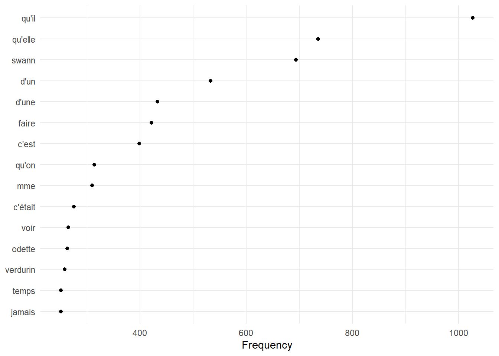
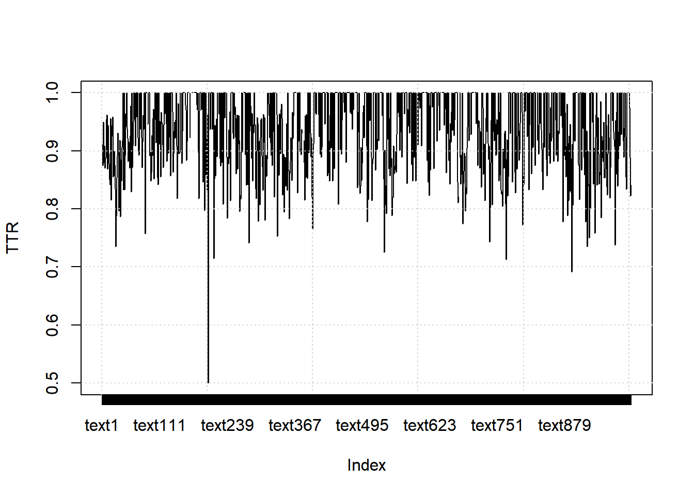
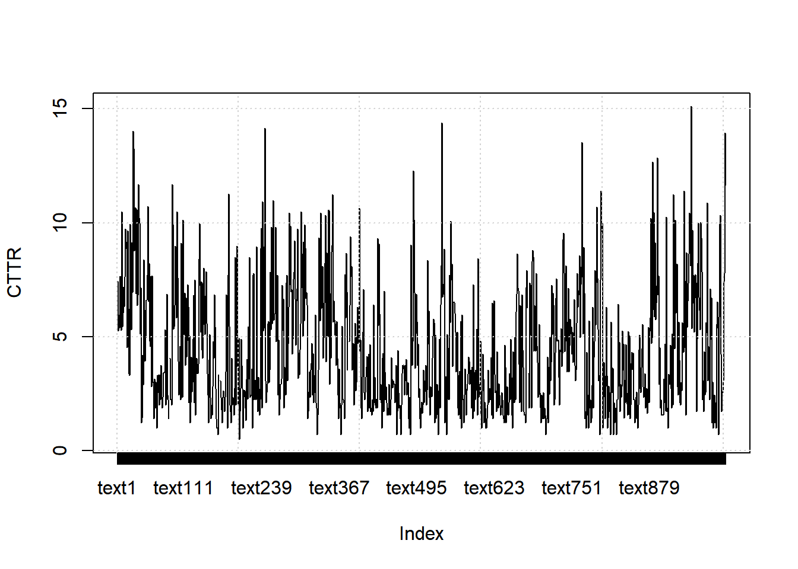
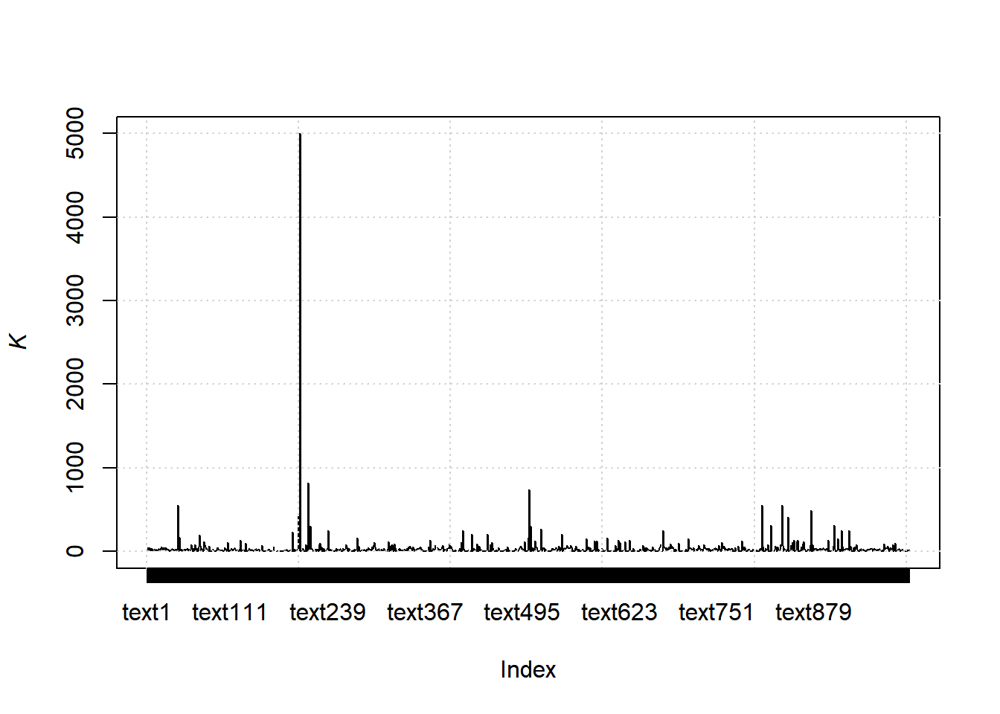
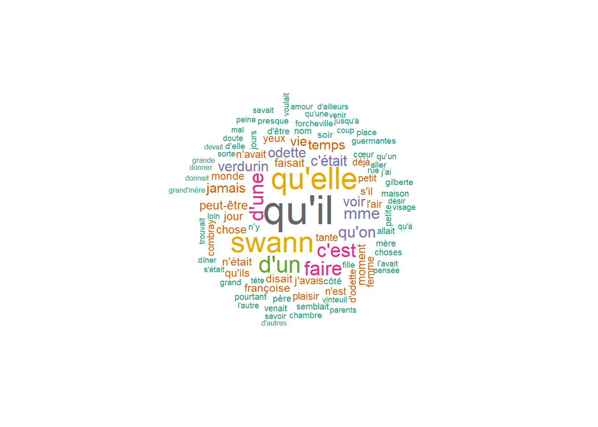
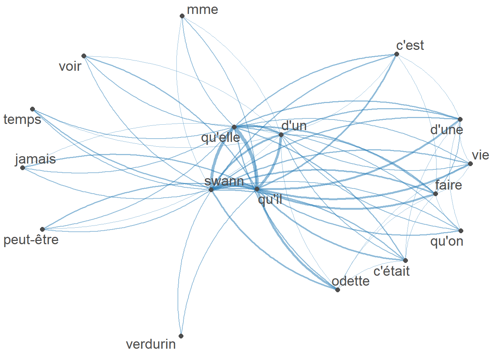

8.4 proustr
8.4.2 Look into data
And we can get the top 60 rows from the first one
## # A tibble: 60 × 4
## text book volume year
## <chr> <chr> <chr> <dbl>
## 1 "Longtemps, je me suis couché de bonne heure. Parfois, à … Du c… Premi… 1913
## 2 "J'appuyais tendrement mes joues contre les belles joues … Du c… Premi… 1913
## 3 "Je me rendormais, et parfois je n'avais plus que de cour… Du c… Premi… 1913
## 4 "Quelquefois, comme Ève naquit d'une côte d'Adam, une fem… Du c… Premi… 1913
## 5 "Un homme qui dort tient en cercle autour de lui le fil d… Du c… Premi… 1913
## 6 "Peut-être l'immobilité des choses autour de nous leur es… Du c… Premi… 1913
## 7 "Puis renaissait le souvenir d'une nouvelle attitude ; le… Du c… Premi… 1913
## 8 "Ces évocations tournoyantes et confuses ne duraient jama… Du c… Premi… 1913
## 9 "Certes, j'étais bien éveillé maintenant : mon corps avai… Du c… Premi… 1913
## 10 "À Combray, tous les jours dès la fin de l'après-midi, lo… Du c… Premi… 1913
## # ℹ 50 more rows8.4.3 Create a corpus
ducotedechezswann_corpus <- corpus(ducotedechezswann, text_field = "text")
print(ducotedechezswann_corpus)## Corpus consisting of 1,004 documents and 3 docvars.
## text1 :
## "Longtemps, je me suis couché de bonne heure. Parfois, à pein..."
##
## text2 :
## "J'appuyais tendrement mes joues contre les belles joues de l..."
##
## text3 :
## "Je me rendormais, et parfois je n'avais plus que de courts r..."
##
## text4 :
## "Quelquefois, comme Ève naquit d'une côte d'Adam, une femme n..."
##
## text5 :
## "Un homme qui dort tient en cercle autour de lui le fil des h..."
##
## text6 :
## "Peut-être l'immobilité des choses autour de nous leur est-el..."
##
## [ reached max_ndoc ... 998 more documents ]8.4.3.1 Summary
## Corpus consisting of 1004 documents, showing 10 documents:
##
## Text Types Tokens Sentences book volume
## text1 200 359 6 Du côté de chez Swann Première partie : Combray
## text2 110 166 11 Du côté de chez Swann Première partie : Combray
## text3 120 172 3 Du côté de chez Swann Première partie : Combray
## text4 116 175 6 Du côté de chez Swann Première partie : Combray
## text5 202 370 5 Du côté de chez Swann Première partie : Combray
## text6 212 409 6 Du côté de chez Swann Première partie : Combray
## text7 120 191 6 Du côté de chez Swann Première partie : Combray
## text8 347 658 4 Du côté de chez Swann Première partie : Combray
## text9 114 179 2 Du côté de chez Swann Première partie : Combray
## text10 130 204 4 Du côté de chez Swann Première partie : Combray
## year
## 1913
## 1913
## 1913
## 1913
## 1913
## 1913
## 1913
## 1913
## 1913
## 19138.4.3.2 Accessing parts of corpus
## [1] "Longtemps, je me suis couché de bonne heure. Parfois, à peine ma bougie éteinte, mes yeux se fermaient si vite que je n'avais pas le temps de me dire : \" Je m'endors. \" Et, une demi-heure après, la pensée qu'il était temps de chercher le sommeil m'éveillait ; je voulais poser le volume que je croyais avoir encore dans les mains et souffler ma lumière ; je n'avais pas cessé en dormant de faire des réflexions sur ce que je venais de lire, mais ces réflexions avaient pris un tour un peu particulier ; il me semblait que j'étais moi-même ce dont parlait l'ouvrage : une église, un quatuor, la rivalité de François Ier et de Charles-Quint. Cette croyance survivait pendant quelques secondes à mon réveil ; elle ne choquait pas ma raison, mais pesait comme des écailles sur mes yeux et les empêchait de se rendre compte que le bougeoir n'était pas allumé. Puis elle commençait à me devenir inintelligible, comme après la métempsycose les pensées d'une existence antérieure ; le sujet du livre se détachait de moi, j'étais libre de m'y appliquer ou non ; aussitôt je recouvrais la vue et j'étais bien étonné de trouver autour de moi une obscurité, douce et reposante pour mes yeux, mais peut-être plus encore pour mon esprit, à qui elle apparaissait comme une chose sans cause, incompréhensible, comme une chose vraiment obscure. Je me demandais quelle heure il pouvait être ; j'entendais le sifflement des trains qui, plus ou moins éloigné, comme le chant d'un oiseau dans une forêt, relevant les distances, me décrivait l'étendue de la campagne déserte où le voyageur se hâte vers la station prochaine ; et le petit chemin qu'il suit va être gravé dans son souvenir par l'excitation qu'il doit à des lieux nouveaux, à des actes inaccoutumés, à la causerie récente et aux adieux sous la lampe étrangère qui le suivent encore dans le silence de la nuit, à la douceur prochaine du retour."8.4.3.3 Document-level information
## book volume year
## 1 Du côté de chez Swann Première partie : Combray 1913
## 2 Du côté de chez Swann Première partie : Combray 1913
## 3 Du côté de chez Swann Première partie : Combray 1913
## 4 Du côté de chez Swann Première partie : Combray 1913
## 5 Du côté de chez Swann Première partie : Combray 1913
## 6 Du côté de chez Swann Première partie : Combray 19138.4.4 Tokens
tokens() segments texts in a corpus into tokens (words or sentences) by word boundaries.
We can remove punctuations or not
8.4.4.1 With punctuations
## Tokens consisting of 1,004 documents and 3 docvars.
## text1 :
## [1] "Longtemps" "," "je" "me" "suis" "couché"
## [7] "de" "bonne" "heure" "." "Parfois" ","
## [ ... and 347 more ]
##
## text2 :
## [1] "J'appuyais" "tendrement" "mes" "joues" "contre"
## [6] "les" "belles" "joues" "de" "l'oreiller"
## [11] "qui" ","
## [ ... and 154 more ]
##
## text3 :
## [1] "Je" "me" "rendormais" "," "et"
## [6] "parfois" "je" "n'avais" "plus" "que"
## [11] "de" "courts"
## [ ... and 160 more ]
##
## text4 :
## [1] "Quelquefois" "," "comme" "Ève" "naquit"
## [6] "d'une" "côte" "d'Adam" "," "une"
## [11] "femme" "naissait"
## [ ... and 163 more ]
##
## text5 :
## [1] "Un" "homme" "qui" "dort" "tient" "en" "cercle" "autour"
## [9] "de" "lui" "le" "fil"
## [ ... and 358 more ]
##
## text6 :
## [1] "Peut-être" "l'immobilité" "des" "choses" "autour"
## [6] "de" "nous" "leur" "est-elle" "imposée"
## [11] "par" "notre"
## [ ... and 397 more ]
##
## [ reached max_ndoc ... 998 more documents ]8.4.4.2 Without punctuations
ducotedechezswann_corpus_tok_no_punct <- tokens(ducotedechezswann_corpus, remove_punct = TRUE)
ducotedechezswann_corpus_tok_no_punct## Tokens consisting of 1,004 documents and 3 docvars.
## text1 :
## [1] "Longtemps" "je" "me" "suis" "couché" "de"
## [7] "bonne" "heure" "Parfois" "à" "peine" "ma"
## [ ... and 306 more ]
##
## text2 :
## [1] "J'appuyais" "tendrement" "mes" "joues" "contre"
## [6] "les" "belles" "joues" "de" "l'oreiller"
## [11] "qui" "pleines"
## [ ... and 133 more ]
##
## text3 :
## [1] "Je" "me" "rendormais" "et" "parfois"
## [6] "je" "n'avais" "plus" "que" "de"
## [11] "courts" "réveils"
## [ ... and 146 more ]
##
## text4 :
## [1] "Quelquefois" "comme" "Ève" "naquit" "d'une"
## [6] "côte" "d'Adam" "une" "femme" "naissait"
## [11] "pendant" "mon"
## [ ... and 144 more ]
##
## text5 :
## [1] "Un" "homme" "qui" "dort" "tient" "en" "cercle" "autour"
## [9] "de" "lui" "le" "fil"
## [ ... and 320 more ]
##
## text6 :
## [1] "Peut-être" "l'immobilité" "des" "choses" "autour"
## [6] "de" "nous" "leur" "est-elle" "imposée"
## [11] "par" "notre"
## [ ... and 336 more ]
##
## [ reached max_ndoc ... 998 more documents ]8.4.5 Stop words
It is best to remove stop words (function/grammatical words) when we use statistical analyses of a corpus.
ducotedechezswann_corpus_tok_no_punct_no_Stop <- tokens_select(ducotedechezswann_corpus_tok_no_punct, pattern = stopwords("fr", source = "stopwords-iso"), selection = "remove")
ducotedechezswann_corpus_tok_no_punct_no_Stop## Tokens consisting of 1,004 documents and 3 docvars.
## text1 :
## [1] "couché" "bonne" "heure" "peine" "bougie" "éteinte"
## [7] "yeux" "fermaient" "vite" "n'avais" "temps" "m'endors"
## [ ... and 122 more ]
##
## text2 :
## [1] "J'appuyais" "tendrement" "joues" "belles" "joues"
## [6] "l'oreiller" "pleines" "fraîches" "joues" "enfance"
## [11] "frottais" "allumette"
## [ ... and 60 more ]
##
## text3 :
## [1] "rendormais" "n'avais" "courts" "réveils" "d'un"
## [6] "instant" "temps" "d'entendre" "craquements" "organiques"
## [11] "boiseries" "d'ouvrir"
## [ ... and 67 more ]
##
## text4 :
## [1] "Quelquefois" "Ève" "naquit" "d'une" "côte"
## [6] "d'Adam" "femme" "naissait" "sommeil" "d'une"
## [11] "fausse" "position"
## [ ... and 63 more ]
##
## text5 :
## [1] "homme" "dort" "tient" "cercle" "autour"
## [6] "fil" "heures" "l'ordre" "années" "mondes"
## [11] "consulte" "d'instinct"
## [ ... and 130 more ]
##
## text6 :
## [1] "Peut-être" "l'immobilité" "choses" "autour" "est-elle"
## [6] "imposée" "certitude" "d'autres" "l'immobilité" "pensée"
## [11] "face" "d'elles"
## [ ... and 142 more ]
##
## [ reached max_ndoc ... 998 more documents ]8.4.6 Statistical analyses
We can start by providing statistics (whether descriptives or inferential) based on our corpora.
8.4.6.1 Simple frequency analysis
Here we look at obtaining a simple frequency analysis of usage.
8.4.6.1.1 DFM
We start by generating a DFM (document-feature matrix)
ducotedechezswann_corpus_tok_no_punct_no_Stop_dfm <- dfm(ducotedechezswann_corpus_tok_no_punct_no_Stop)
ducotedechezswann_corpus_tok_no_punct_no_Stop_dfm## Document-feature matrix of: 1,004 documents, 16,494 features (99.62% sparse) and 3 docvars.
## features
## docs couché bonne heure peine bougie éteinte yeux fermaient vite n'avais
## text1 1 1 2 1 1 1 3 1 1 2
## text2 0 0 0 0 0 0 0 0 0 0
## text3 0 0 0 0 0 0 1 0 1 1
## text4 0 0 0 1 0 0 1 0 0 0
## text5 1 0 0 1 0 0 0 0 0 0
## text6 0 0 0 0 0 0 0 0 0 0
## [ reached max_ndoc ... 998 more documents, reached max_nfeat ... 16,484 more features ]8.4.6.1.2 Frequencies
ducotedechezswann_corpus_tok_no_punct_no_Stop_dfm_freq <- textstat_frequency(ducotedechezswann_corpus_tok_no_punct_no_Stop_dfm)
ducotedechezswann_corpus_tok_no_punct_no_Stop_dfm_freq## feature frequency rank docfreq group
## 1 qu'il 1027 1 390 all
## 2 qu'elle 736 2 288 all
## 3 swann 694 3 313 all
## 4 d'un 533 4 277 all
## 5 d'une 433 5 254 all
## 6 faire 422 6 261 all
## 7 c'est 399 7 253 all
## 8 qu'on 314 8 195 all
## 9 mme 310 9 199 all
## 10 c'était 276 10 173 all
## 11 voir 265 11 202 all
## 12 odette 263 12 134 all
## 13 verdurin 258 13 165 all
## 14 temps 251 14 179 all
## 15 jamais 251 14 190 all
## 16 vie 238 16 154 all
## 17 peut-être 203 17 146 all
## 18 faisait 192 18 137 all
## 19 jour 188 19 143 all
## 20 moment 186 20 141 all
## 21 chose 184 21 136 all
## 22 disait 176 22 132 all
## 23 n'était 171 23 130 all
## 24 françoise 171 23 98 all
## 25 j'avais 165 25 99 all
## 26 n'avait 160 26 130 all
## 27 yeux 159 27 120 all
## 28 monde 159 27 113 all
## 29 s'il 157 29 119 all
## 30 qu'ils 156 30 113 all
## 31 tante 154 31 79 all
## 32 l'air 153 32 124 all
## 33 plaisir 149 33 100 all
## 34 n'est 148 34 114 all
## 35 femme 147 35 102 all
## 36 petit 135 36 110 all
## 37 déjà 134 37 105 all
## 38 combray 132 38 90 all
## 39 d'odette 131 39 88 all
## 40 n'y 127 40 117 all
## 41 côté 124 41 77 all
## 42 père 123 42 69 all
## 43 soir 118 43 96 all
## 44 nom 118 43 85 all
## 45 semblait 116 45 95 all
## 46 jours 112 46 82 all
## 47 choses 110 47 79 all
## 48 pourtant 110 47 95 all
## 49 allait 108 49 84 all
## 50 mère 107 50 66 all
## 51 d'être 106 51 92 all
## 52 petite 105 52 77 all
## 53 cœur 105 52 85 all
## 54 venait 104 54 84 all
## 55 maison 104 54 83 all
## 56 fille 103 56 65 all
## 57 l'avait 102 57 84 all
## 58 guermantes 100 58 35 all
## 59 gilberte 100 58 32 all
## 60 forcheville 98 60 69 all
## 61 chambre 97 61 68 all
## 62 grand 97 61 82 all
## 63 j'ai 97 61 80 all
## 64 presque 95 64 79 all
## 65 aller 95 64 77 all
## 66 d'elle 94 66 77 all
## 67 place 92 67 76 all
## 68 qu'un 91 68 76 all
## 69 trouvait 90 69 74 all
## 70 qu'une 89 70 78 all
## 71 visage 89 70 65 all
## 72 jusqu'à 88 72 76 all
## 73 sorte 88 72 73 all
## 74 parents 88 72 61 all
## 75 venir 88 72 76 all
## 76 pensée 87 76 68 all
## 77 coup 87 76 73 all
## 78 dîner 85 78 68 all
## 79 qu'à 85 78 76 all
## 80 loin 85 78 71 all
## 81 amour 85 78 57 all
## 82 voulait 84 82 71 all
## 83 désir 84 82 68 all
## 84 doute 83 84 70 all
## 85 savait 83 84 63 all
## 86 s'était 82 86 70 all
## 87 savoir 80 87 66 all
## 88 vinteuil 80 87 38 all
## 89 l'autre 79 89 62 all
## 90 rue 79 89 60 all
## 91 peine 78 91 73 all
## 92 tête 78 91 65 all
## 93 mal 78 91 60 all
## 94 d'ailleurs 78 91 72 all
## 95 grand'mère 77 95 46 all
## 96 devait 77 95 70 all
## 97 donner 76 97 61 all
## 98 grande 76 97 73 all
## 99 donnait 76 97 69 all
## 100 j'étais 75 100 50 all
## 101 vue 75 100 64 all
## 102 d'autres 75 100 64 all
## 103 besoin 75 100 64 all
## 104 pouvoir 74 104 69 all
## 105 passer 74 104 63 all
## 106 porte 73 106 60 all
## 107 soleil 73 106 52 all
## 108 point 72 108 61 all
## 109 qu'en 72 108 60 all
## 110 prendre 72 108 63 all
## 111 maman 71 111 35 all
## 112 docteur 71 111 60 all
## 113 milieu 70 113 63 all
## 114 princesse 70 113 50 all
## 115 sourire 69 115 57 all
## 116 fond 68 116 59 all
## 117 n'en 68 116 59 all
## 118 mots 68 116 54 all
## 119 trouver 67 119 58 all
## 120 cause 67 119 59 all
## 121 heures 67 119 50 all
## 122 grand-père 67 119 38 all
## 123 m'avait 67 119 52 all
## 124 demander 67 119 62 all
## 125 penser 65 125 58 all
## 126 fleurs 65 125 39 all
## 127 ami 65 125 55 all
## 128 tard 64 128 61 all
## 129 vrai 64 128 53 all
## 130 sais 64 128 51 all
## 131 homme 63 131 50 all
## 132 l'heure 63 131 57 all
## 133 mieux 63 131 61 all
## 134 phrase 63 131 33 all
## 135 chercher 62 135 56 all
## 136 voulu 62 135 50 all
## 137 amis 62 135 52 all
## 138 s'en 62 135 56 all
## 139 air 61 139 58 all
## 140 paris 61 139 49 all
## 141 connaissait 61 139 43 all
## 142 main 61 139 52 all
## 143 souvenir 60 143 52 all
## 144 instant 60 143 52 all
## 145 partie 60 143 53 all
## 146 bois 60 143 40 all
## 147 sentait 59 147 46 all
## 148 femmes 59 147 47 all
## 149 regard 58 149 46 all
## 150 bonne 57 150 52 all
## 151 heure 57 150 43 all
## 152 réalité 57 150 51 all
## 153 connaître 57 150 49 all
## 154 voix 57 150 46 all
## 155 qu'elles 57 150 40 all
## 156 mort 56 156 46 all
## 157 contraire 56 156 53 all
## 158 famille 56 156 47 all
## 159 jeune 56 156 47 all
## 160 qu'odette 56 156 45 all
## 161 nuit 55 161 42 all
## 162 bonheur 55 161 45 all
## 163 joie 55 161 51 all
## 164 cottard 55 161 46 all
## 165 lieu 54 165 50 all
## 166 voyait 54 165 46 all
## 167 petits 54 165 47 all
## 168 ciel 54 165 37 all
## 169 répondit 54 165 51 all
## 170 legrandin 54 165 21 all
## 171 peintre 53 171 45 all
## 172 passait 51 172 43 all
## 173 sens 51 172 45 all
## 174 entendu 51 172 49 all
## 175 esprit 50 175 44 all
## 176 rester 50 175 45 all
## 177 moments 50 175 43 all
## 178 j'aurais 50 175 41 all
## 179 nature 50 175 42 all
## 180 l'amour 50 175 37 all
## 181 croire 49 181 45 all
## 182 suite 49 181 46 all
## 183 matin 48 183 42 all
## 184 corps 48 183 42 all
## 185 mettre 48 183 45 all
## 186 beauté 48 183 35 all
## 187 crois 48 183 43 all
## 188 rose 48 183 37 all
## 189 oncle 48 183 24 all
## 190 musique 48 183 32 all
## 191 lumière 47 191 37 all
## 192 fort 47 191 41 all
## 193 part 47 191 43 all
## 194 vérité 47 191 35 all
## 195 d'abord 47 191 45 all
## 196 d'aller 47 191 41 all
## 197 charme 46 197 39 all
## 198 lit 46 197 33 all
## 199 pauvre 46 197 42 all
## 200 jardin 46 197 39 all
## 201 fit 46 197 38 all
## 202 pris 45 202 41 all
## 203 peur 45 202 38 all
## 204 lettre 45 202 33 all
## 205 est-ce 45 202 41 all
## 206 jouer 45 202 40 all
## 207 autour 44 207 38 all
## 208 fin 44 207 39 all
## 209 dame 44 207 33 all
## 210 n'a 44 207 40 all
## 211 table 43 211 41 all
## 212 propos 43 211 37 all
## 213 l'église 43 211 32 all
## 214 voiture 43 211 36 all
## 215 compte 42 215 36 all
## 216 douceur 42 215 37 all
## 217 s'y 42 215 36 all
## 218 années 42 215 40 all
## 219 voyant 42 215 41 all
## 220 croyait 42 215 36 all
## 221 goût 42 215 37 all
## 222 amie 42 215 27 all
## 223 paroles 42 215 33 all
## 224 partir 41 224 37 all
## 225 quelquefois 41 224 35 all
## 226 d'où 41 224 36 all
## 227 mémoire 41 224 28 all
## 228 heureux 41 224 37 all
## 229 présence 41 224 38 all
## 230 donné 41 224 37 all
## 231 comprendre 41 224 36 all
## 232 simple 41 224 37 all
## 233 l'idée 41 224 36 all
## 234 raison 40 234 33 all
## 235 aussitôt 40 234 36 all
## 236 auprès 40 234 36 all
## 237 terre 40 234 31 all
## 238 fenêtre 40 234 35 all
## 239 savez 40 234 35 all
## 240 autant 40 234 35 all
## 241 lendemain 40 234 36 all
## 242 au-dessus 40 234 38 all
## 243 train 39 243 32 all
## 244 dieu 39 243 34 all
## 245 figure 39 243 37 all
## 246 l'habitude 39 243 34 all
## 247 visite 39 243 34 all
## 248 belle 39 243 37 all
## 249 l'eau 39 243 31 all
## 250 tour 38 250 30 all
## 251 nouvelle 38 250 36 all
## 252 forme 38 250 33 all
## 253 fini 38 250 35 all
## 254 l'on 38 250 29 all
## 255 cas 38 250 35 all
## 256 grands 38 250 36 all
## 257 hommes 38 250 31 all
## 258 tenait 38 250 34 all
## 259 disant 38 250 34 all
## 260 mlle 38 250 22 all
## 261 soirée 38 250 29 all
## 262 dû 37 262 34 all
## 263 grâce 37 262 34 all
## 264 mois 37 262 31 all
## 265 pays 37 262 32 all
## 266 genre 37 262 33 all
## 267 rire 37 262 31 all
## 268 monsieur 37 262 33 all
## 269 trouvé 37 262 36 all
## 270 regards 37 262 32 all
## 271 parlait 36 271 32 all
## 272 vraiment 36 271 35 all
## 273 chemin 36 271 27 all
## 274 malade 36 271 31 all
## 275 coucher 36 271 30 all
## 276 justement 36 271 31 all
## 277 cherchait 36 271 32 all
## 278 n'aurait 36 271 35 all
## 279 voyais 36 271 27 all
## 280 attention 36 271 34 all
## 281 d'or 36 271 31 all
## 282 piano 36 271 25 all
## 283 laumes 36 271 23 all
## 284 faut 36 271 34 all
## 285 n'étaient 36 271 35 all
## 286 cru 35 286 35 all
## 287 retrouver 35 286 34 all
## 288 venu 35 286 32 all
## 289 pût 35 286 33 all
## 290 d'eux 35 286 30 all
## 291 plaisirs 35 286 31 all
## 292 maîtresse 35 286 33 all
## 293 répondait 35 286 32 all
## 294 bergotte 35 286 18 all
## 295 vite 34 295 32 all
## 296 livre 34 295 26 all
## 297 entendre 34 295 31 all
## 298 savais 34 295 31 all
## 299 sentiment 34 295 34 all
## 300 grand'tante 34 295 25 all
## 301 restait 34 295 34 all
## 302 d'avoir 34 295 32 all
## 303 relations 34 295 30 all
## 304 conversation 34 295 33 all
## 305 l'esprit 34 295 34 all
## 306 rendait 34 295 33 all
## 307 demain 34 295 31 all
## 308 long 34 295 30 all
## 309 morceau 34 295 28 all
## 310 l'un 34 295 28 all
## 311 promenade 33 311 31 all
## 312 couleur 33 311 27 all
## 313 balbec 33 311 19 all
## 314 laissait 33 311 32 all
## 315 aimait 33 311 28 all
## 316 demandait 33 311 31 all
## 317 arbres 33 311 20 all
## 318 entrer 33 311 31 all
## 319 fallait 33 311 30 all
## 320 dis 33 311 31 all
## 321 théâtre 33 311 32 all
## 322 jusque-là 33 311 30 all
## 323 n'avais 32 323 28 all
## 324 d'en 32 323 30 all
## 325 sortir 32 323 28 all
## 326 face 32 323 31 all
## 327 bout 32 323 30 all
## 328 jusqu'au 32 323 30 all
## 329 mari 32 323 27 all
## 330 d'y 32 323 30 all
## 331 n'ai 32 323 29 all
## 332 fête 32 323 23 all
## 333 ville 32 323 22 all
## 334 déjeuner 32 323 22 all
## 335 pierre 32 323 21 all
## 336 pianiste 32 323 28 all
## 337 jalousie 32 323 24 all
## 338 lire 31 338 29 all
## 339 campagne 31 338 29 all
## 340 regarder 31 338 30 all
## 341 ensemble 31 338 28 all
## 342 demandé 31 338 30 all
## 343 tendresse 31 338 27 all
## 344 aimé 31 338 27 all
## 345 or 31 338 29 all
## 346 oui 31 338 29 all
## 347 agréable 31 338 29 all
## 348 blanche 31 338 24 all
## 349 madame 31 338 30 all
## 350 champs-élysées 31 338 18 all
## 351 bientôt 30 351 27 all
## 352 qu'avait 30 351 29 all
## 353 propre 30 351 30 all
## 354 quitter 30 351 28 all
## 355 rentrer 30 351 28 all
## 356 monter 30 351 24 all
## 357 mouvement 30 351 28 all
## 358 ensuite 30 351 29 all
## 359 êtres 30 351 25 all
## 360 bleu 30 351 23 all
## 361 mains 29 361 28 all
## 362 silence 29 361 24 all
## 363 trouve 29 361 26 all
## 364 clair 29 361 25 all
## 365 sentir 29 361 26 all
## 366 pied 29 361 25 all
## 367 salon 29 361 25 all
## 368 recevoir 29 361 28 all
## 369 caractère 29 361 23 all
## 370 mettait 29 361 28 all
## 371 dit-elle 29 361 27 all
## 372 connais 29 361 25 all
## 373 davantage 29 361 29 all
## 374 rêve 28 374 23 all
## 375 l'image 28 374 27 all
## 376 parties 28 374 24 all
## 377 causer 28 374 25 all
## 378 âme 28 374 20 all
## 379 triste 28 374 25 all
## 380 doux 28 374 26 all
## 381 nez 28 374 22 all
## 382 idée 28 374 23 all
## 383 pensait 28 374 26 all
## 384 grandes 28 374 26 all
## 385 charlus 28 374 14 all
## 386 n'eût 28 374 26 all
## 387 lieux 27 387 25 all
## 388 belles 27 387 25 all
## 389 obligé 27 387 25 all
## 390 voyage 27 387 21 all
## 391 vient 27 387 27 all
## 392 bras 27 387 25 all
## 393 soirs 27 387 23 all
## 394 lune 27 387 19 all
## 395 nouvelles 27 387 22 all
## 396 cuisine 27 387 19 all
## 397 reçu 27 387 24 all
## 398 n'est-ce 27 387 24 all
## 399 rencontré 27 387 24 all
## 400 prenait 27 387 26 all
## 401 vieux 27 387 24 all
## 402 dit-il 27 387 26 all
## 403 envie 27 387 24 all
## 404 clocher 27 387 14 all
## 405 portrait 27 387 17 all
## 406 sonate 27 387 23 all
## 407 donne 26 407 25 all
## 408 coin 26 407 24 all
## 409 mer 26 407 19 all
## 410 malheureux 26 407 25 all
## 411 arrivé 26 407 25 all
## 412 front 26 407 23 all
## 413 fils 26 407 22 all
## 414 cocher 26 407 23 all
## 415 image 26 407 22 all
## 416 enfant 26 407 24 all
## 417 voyons 26 407 23 all
## 418 pouvais 26 407 23 all
## 419 livres 26 407 20 all
## 420 douleur 26 407 23 all
## 421 demanda 26 407 26 all
## 422 imagination 26 407 21 all
## 423 hasard 26 407 24 all
## 424 journée 26 407 23 all
## 425 eulalie 26 407 16 all
## 426 saint-euverte 26 407 20 all
## 427 pensées 25 427 23 all
## 428 joues 25 427 20 all
## 429 inconnu 25 427 24 all
## 430 j'en 25 427 25 all
## 431 montrer 25 427 23 all
## 432 l'après-midi 25 427 24 all
## 433 tristesse 25 427 23 all
## 434 manger 25 427 21 all
## 435 tomber 25 427 25 all
## 436 pouvaient 25 427 24 all
## 437 lèvres 25 427 22 all
## 438 m'a 25 427 23 all
## 439 d'autant 25 427 25 all
## 440 moyen 25 427 22 all
## 441 prix 25 427 25 all
## 442 veux 25 427 21 all
## 443 beaux 25 427 22 all
## 444 méséglise 25 427 13 all
## 445 souffrir 24 445 20 all
## 446 baiser 24 445 20 all
## 447 rappelait 24 445 22 all
## 448 seuls 24 445 22 all
## 449 douloureux 24 445 24 all
## 450 premiers 24 445 23 all
## 451 bruit 24 445 21 all
## 452 connu 24 445 24 all
## 453 pensant 24 445 24 all
## 454 perdu 24 445 23 all
## 455 n'ont 24 445 22 all
## 456 qu'est-ce 24 445 23 all
## 457 manière 24 445 24 all
## 458 chagrin 24 445 20 all
## 459 intelligence 24 445 20 all
## 460 s'ils 24 445 20 all
## 461 bête 24 445 19 all
## 462 souffrance 24 445 20 all
## 463 vivre 24 445 22 all
## 464 petites 24 445 22 all
## 465 rencontrer 24 445 23 all
## 466 croyais 23 466 22 all
## 467 cessé 23 466 21 all
## 468 commençait 23 466 23 all
## 469 conscience 23 466 22 all
## 470 fidèles 23 466 21 all
## 471 dernière 23 466 20 all
## 472 m'en 23 466 22 all
## 473 robe 23 466 22 all
## 474 paraître 23 466 22 all
## 475 mauvais 23 466 23 all
## 476 voit 23 466 20 all
## 477 larmes 23 466 19 all
## 478 cheveux 23 466 21 all
## 479 d'habitude 23 466 21 all
## 480 connaît 23 466 21 all
## 481 véritable 23 466 23 all
## 482 n'avaient 23 466 22 all
## 483 l'avoir 23 466 23 all
## 484 appris 23 466 22 all
## 485 bouche 23 466 22 all
## 486 pensais 23 466 19 all
## 487 signe 23 466 22 all
## 488 maisons 23 466 18 all
## 489 feuilles 23 466 12 all
## 490 curé 23 466 16 all
## 491 profonde 23 466 18 all
## 492 mauvaise 23 466 20 all
## 493 partout 23 466 23 all
## 494 venue 22 494 21 all
## 495 tantôt 22 494 15 all
## 496 bord 22 494 21 all
## 497 roses 22 494 19 all
## 498 hauteur 22 494 18 all
## 499 portait 22 494 20 all
## 500 objet 22 494 19 all
## 501 pluie 22 494 19 all
## 502 regardait 22 494 20 all
## 503 vent 22 494 20 all
## 504 brusquement 22 494 22 all
## 505 devoir 22 494 21 all
## 506 réponse 22 494 20 all
## 507 enfants 22 494 20 all
## 508 idées 22 494 19 all
## 509 ans 22 494 20 all
## 510 ancien 22 494 21 all
## 511 reflet 22 494 20 all
## 512 sentais 22 494 20 all
## 513 bonté 22 494 21 all
## 514 vieille 22 494 18 all
## 515 rues 22 494 18 all
## 516 noms 22 494 13 all
## 517 amoureux 22 494 19 all
## 518 duchesse 22 494 15 all
## 519 général 22 494 21 all
## 520 cambremer 22 494 17 all
## 521 domestique 21 521 20 all
## 522 rejoindre 21 521 21 all
## 523 exemple 21 521 19 all
## 524 tôt 21 521 19 all
## 525 entièrement 21 521 20 all
## 526 feu 21 521 19 all
## 527 tâcher 21 521 19 all
## 528 calme 21 521 19 all
## 529 visites 21 521 19 all
## 530 put 21 521 18 all
## 531 allée 21 521 21 all
## 532 naturellement 21 521 21 all
## 533 veut 21 521 17 all
## 534 maladie 21 521 18 all
## 535 nécessaire 21 521 20 all
## 536 léonie 21 521 18 all
## 537 octave 21 521 21 all
## 538 éprouvait 21 521 21 all
## 539 arrivait 20 539 18 all
## 540 traits 20 539 20 all
## 541 épaules 20 539 19 all
## 542 rayon 20 539 17 all
## 543 mis 20 539 19 all
## 544 haute 20 539 19 all
## 545 anciens 20 539 19 all
## 546 salle 20 539 17 all
## 547 volonté 20 539 19 all
## 548 cours 20 539 18 all
## 549 jeunesse 20 539 19 all
## 550 service 20 539 18 all
## 551 veille 20 539 19 all
## 552 impression 20 539 15 all
## 553 s'écria 20 539 20 all
## 554 laissé 20 539 19 all
## 555 vivement 20 539 20 all
## 556 saint 20 539 13 all
## 557 minutes 20 539 20 all
## 558 d'amour 20 539 19 all
## 559 expression 20 539 20 all
## 560 colère 20 539 18 all
## 561 ferait 20 539 20 all
## 562 droit 20 539 18 all
## 563 l'eût 20 539 19 all
## 564 répondre 20 539 20 all
## 565 arrivée 20 539 20 all
## 566 thé 20 539 15 all
## 567 œuvre 20 539 18 all
## 568 noir 20 539 20 all
## 569 chapeau 20 539 16 all
## 570 parlé 20 539 19 all
## 571 revenait 20 539 18 all
## 572 goûter 19 572 18 all
## 573 oublié 19 572 18 all
## 574 l'homme 19 572 18 all
## 575 n'aurais 19 572 16 all
## 576 chaud 19 572 18 all
## 577 arriver 19 572 18 all
## 578 rouge 19 572 17 all
## 579 respect 19 572 16 all
## 580 souffrances 19 572 17 all
## 581 question 19 572 17 all
## 582 revanche 19 572 18 all
## 583 sûr 19 572 18 all
## 584 répondu 19 572 18 all
## 585 connaissance 19 572 18 all
## 586 dimanche 19 572 15 all
## 587 d'autre 19 572 18 all
## 588 impossible 19 572 15 all
## 589 village 19 572 17 all
## 590 invisible 19 572 17 all
## 591 allé 19 572 18 all
## 592 vois 19 572 18 all
## 593 saint-hilaire 19 572 16 all
## 594 souriant 19 572 19 all
## 595 jolie 19 572 19 all
## 596 l'âme 19 572 17 all
## 597 capable 19 572 15 all
## 598 ennuyeux 19 572 15 all
## 599 voulais 18 599 17 all
## 600 douce 18 599 18 all
## 601 âge 18 599 17 all
## 602 seconde 18 599 15 all
## 603 trouvais 18 599 17 all
## 604 tirer 18 599 18 all
## 605 c'étaient 18 599 18 all
## 606 l'odeur 18 599 16 all
## 607 continuait 18 599 17 all
## 608 prenant 18 599 18 all
## 609 précieux 18 599 17 all
## 610 d'avance 18 599 17 all
## 611 considérer 18 599 17 all
## 612 permis 18 599 16 all
## 613 lecture 18 599 15 all
## 614 froid 18 599 14 all
## 615 paru 18 599 17 all
## 616 sœur 18 599 15 all
## 617 vague 18 599 17 all
## 618 repos 18 599 14 all
## 619 importance 18 599 17 all
## 620 tendre 18 599 15 all
## 621 sentiments 18 599 16 all
## 622 l'ombre 18 599 18 all
## 623 travers 18 599 17 all
## 624 l'allée 18 599 9 all
## 625 caché 18 599 17 all
## 626 l'y 18 599 17 all
## 627 messe 18 599 17 all
## 628 çà 18 599 18 all
## 629 fleur 18 599 18 all
## 630 printemps 18 599 12 all
## 631 lettres 18 599 17 all
## 632 voulez 18 599 17 all
## 633 paraissait 18 599 18 all
## 634 disait-il 18 599 18 all
## 635 chic 18 599 13 all
## 636 actions 18 599 12 all
## 637 sommeil 17 637 14 all
## 638 venais 17 637 15 all
## 639 libre 17 637 15 all
## 640 porter 17 637 16 all
## 641 rêves 17 637 14 all
## 642 mur 17 637 14 all
## 643 murs 17 637 15 all
## 644 bonsoir 17 637 14 all
## 645 aime 17 637 17 all
## 646 inconnue 17 637 17 all
## 647 jardinier 17 637 15 all
## 648 jeu 17 637 15 all
## 649 riant 17 637 17 all
## 650 sentant 17 637 17 all
## 651 mondaine 17 637 16 all
## 652 demande 17 637 17 all
## 653 détails 17 637 16 all
## 654 époque 17 637 16 all
## 655 garder 17 637 17 all
## 656 vertu 17 637 16 all
## 657 délicieux 17 637 15 all
## 658 simplement 17 637 14 all
## 659 appelait 17 637 17 all
## 660 cacher 17 637 16 all
## 661 apprendre 17 637 17 all
## 662 humaine 17 637 15 all
## 663 couleurs 17 637 17 all
## 664 artiste 17 637 17 all
## 665 langage 17 637 16 all
## 666 mystérieux 17 637 17 all
## 667 curiosité 17 637 15 all
## 668 semaine 17 637 15 all
## 669 l'avais 17 637 14 all
## 670 commencé 17 637 17 all
## 671 pensé 17 637 15 all
## 672 charmant 17 637 17 all
## 673 poser 16 673 15 all
## 674 l'obscurité 16 673 14 all
## 675 mesure 16 673 15 all
## 676 connue 16 673 15 all
## 677 j'allais 16 673 14 all
## 678 formes 16 673 15 all
## 679 disais 16 673 16 all
## 680 l'une 16 673 15 all
## 681 rappeler 16 673 14 all
## 682 légèrement 16 673 16 all
## 683 guère 16 673 16 all
## 684 causait 16 673 15 all
## 685 montait 16 673 15 all
## 686 passage 16 673 14 all
## 687 parc 16 673 13 all
## 688 geste 16 673 16 all
## 689 prince 16 673 14 all
## 690 situation 16 673 13 all
## 691 avis 16 673 14 all
## 692 l'être 16 673 16 all
## 693 départ 16 673 16 all
## 694 lever 16 673 15 all
## 695 m'eût 16 673 13 all
## 696 servir 16 673 15 all
## 697 venaient 16 673 16 all
## 698 reconnaissance 16 673 15 all
## 699 œuvres 16 673 14 all
## 700 rendu 16 673 16 all
## 701 délicatesse 16 673 16 all
## 702 descendre 16 673 15 all
## 703 attendre 16 673 16 all
## 704 n'avoir 16 673 16 all
## 705 parfum 16 673 13 all
## 706 vit 16 673 16 all
## 707 su 16 673 16 all
## 708 ajouta 16 673 15 all
## 709 dirait 16 673 15 all
## 710 d'art 16 673 15 all
## 711 vécu 16 673 14 all
## 712 l'avaient 16 673 15 all
## 713 matière 16 673 16 all
## 714 route 16 673 15 all
## 715 jouait 16 673 15 all
## 716 samedi 16 673 4 all
## 717 saison 16 673 15 all
## 718 courant 16 673 15 all
## 719 n'importe 16 673 16 all
## 720 moment-là 16 673 16 all
## 721 brichot 16 673 12 all
## 722 lampe 15 722 14 all
## 723 l'instant 15 722 15 all
## 724 profond 15 722 15 all
## 725 d'après 15 722 15 all
## 726 verre 15 722 12 all
## 727 représenter 15 722 14 all
## 728 pieds 15 722 15 all
## 729 château 15 722 10 all
## 730 ligne 15 722 13 all
## 731 devenu 15 722 15 all
## 732 spectacle 15 722 15 all
## 733 demi 15 722 13 all
## 734 parlant 15 722 14 all
## 735 heureuse 15 722 15 all
## 736 raconter 15 722 15 all
## 737 phrases 15 722 11 all
## 738 s'étaient 15 722 15 all
## 739 duc 15 722 7 all
## 740 commencement 15 722 13 all
## 741 sachant 15 722 13 all
## 742 croit 15 722 14 all
## 743 trouva 15 722 15 all
## 744 écrit 15 722 14 all
## 745 vouloir 15 722 14 all
## 746 revoir 15 722 11 all
## 747 qu'au 15 722 14 all
## 748 reconnaître 15 722 15 all
## 749 blanc 15 722 14 all
## 750 soie 15 722 12 all
## 751 longue 15 722 15 all
## 752 simples 15 722 14 all
## 753 charmante 15 722 14 all
## 754 voisine 15 722 13 all
## 755 vivonne 15 722 12 all
## 756 neige 15 722 9 all
## 757 siècle 15 722 14 all
## 758 rapport 15 722 15 all
## 759 dois 15 722 13 all
## 760 camarades 15 722 15 all
## 761 distance 15 722 14 all
## 762 raisons 15 722 13 all
## 763 mensonge 15 722 11 all
## 764 précisément 15 722 15 all
## 765 purement 15 722 14 all
## 766 instants 15 722 13 all
## 767 garde 15 722 12 all
## 768 naître 15 722 14 all
## 769 laissant 15 722 14 all
## 770 bleus 15 722 12 all
## 771 trouvaient 15 722 13 all
## 772 désirait 15 722 15 all
## 773 crécy 15 722 12 all
## 774 église 14 774 14 all
## 775 m'y 14 774 13 all
## 776 courage 14 774 14 all
## 777 n'étais 14 774 12 all
## 778 but 14 774 14 all
## 779 s'est 14 774 14 all
## 780 simplicité 14 774 13 all
## 781 l'existence 14 774 14 all
## 782 rideaux 14 774 11 all
## 783 pitié 14 774 14 all
## 784 venise 14 774 6 all
## 785 faudrait 14 774 13 all
## 786 gothique 14 774 10 all
## 787 sortait 14 774 13 all
## 788 sombre 14 774 14 all
## 789 essence 14 774 13 all
## 790 noble 14 774 13 all
## 791 trouble 14 774 14 all
## 792 forces 14 774 12 all
## 793 j'aimais 14 774 14 all
## 794 somme 14 774 14 all
## 795 mariage 14 774 13 all
## 796 timide 14 774 14 all
## 797 aimable 14 774 14 all
## 798 pareil 14 774 13 all
## 799 réserve 14 774 14 all
## 800 rang 14 774 14 all
## 801 montrait 14 774 13 all
## 802 sœurs 14 774 10 all
## 803 gardait 14 774 14 all
## 804 remarquer 14 774 14 all
## 805 l'été 14 774 12 all
## 806 personnage 14 774 11 all
## 807 physique 14 774 10 all
## 808 certainement 14 774 13 all
## 809 souvenirs 14 774 12 all
## 810 l'escalier 14 774 11 all
## 811 journal 14 774 11 all
## 812 d'esprit 14 774 13 all
## 813 laisse 14 774 14 all
## 814 soudain 14 774 14 all
## 815 maître 14 774 11 all
## 816 réel 14 774 13 all
## 817 supposer 14 774 11 all
## 818 prit 14 774 14 all
## 819 toilette 14 774 13 all
## 820 donnant 14 774 14 all
## 821 aperçu 14 774 14 all
## 822 paraissaient 14 774 13 all
## 823 degré 14 774 12 all
## 824 sensation 14 774 13 all
## 825 d'entrer 14 774 14 all
## 826 immobile 14 774 13 all
## 827 senti 14 774 14 all
## 828 ajoutait 14 774 13 all
## 829 vraie 14 774 14 all
## 830 violettes 14 774 11 all
## 831 restée 14 774 13 all
## 832 apercevoir 14 774 13 all
## 833 revenir 14 774 14 all
## 834 qualité 14 774 14 all
## 835 voudrais 14 774 14 all
## 836 ajouta-t-elle 14 774 14 all
## 837 mystérieuse 14 774 12 all
## 838 signification 14 774 14 all
## 839 roussainville 14 774 8 all
## 840 bouquet 14 774 12 all
## 841 passion 14 774 14 all
## 842 invité 14 774 13 all
## 843 cherché 14 774 14 all
## 844 saniette 14 774 6 all
## 845 florence 14 774 5 all
## 846 devenir 13 846 13 all
## 847 demandais 13 846 12 all
## 848 retourner 13 846 13 all
## 849 chaleur 13 846 13 all
## 850 joue 13 846 12 all
## 851 d'elles 13 846 13 all
## 852 fatigue 13 846 12 all
## 853 prise 13 846 12 all
## 854 fenêtres 13 846 12 all
## 855 grands-parents 13 846 13 all
## 856 chemins 13 846 12 all
## 857 faite 13 846 13 all
## 858 glace 13 846 9 all
## 859 commence 13 846 13 all
## 860 j'y 13 846 12 all
## 861 fer 13 846 13 all
## 862 lu 13 846 13 all
## 863 vide 13 846 12 all
## 864 puissance 13 846 12 all
## 865 faisais 13 846 13 all
## 866 vînt 13 846 12 all
## 867 prétexte 13 846 13 all
## 868 changer 13 846 13 all
## 869 aubépines 13 846 8 all
## 870 prononçait 13 846 13 all
## 871 société 13 846 11 all
## 872 tableau 13 846 13 all
## 873 manquer 13 846 13 all
## 874 sortant 13 846 13 all
## 875 qu'avec 13 846 13 all
## 876 fît 13 846 13 all
## 877 faits 13 846 12 all
## 878 vieilles 13 846 10 all
## 879 brusque 13 846 13 all
## 880 charles 13 846 10 all
## 881 n'étant 13 846 13 all
## 882 sûre 13 846 11 all
## 883 pleine 13 846 12 all
## 884 factice 13 846 11 all
## 885 vis 13 846 12 all
## 886 ç'avait 13 846 13 all
## 887 immédiatement 13 846 13 all
## 888 l'ai 13 846 12 all
## 889 camarade 13 846 13 all
## 890 concierge 13 846 11 all
## 891 café 13 846 12 all
## 892 gardé 13 846 12 all
## 893 corsage 13 846 12 all
## 894 connaissais 13 846 12 all
## 895 soir-là 13 846 11 all
## 896 génie 13 846 12 all
## 897 volontiers 13 846 12 all
## 898 titre 13 846 11 all
## 899 précieuse 13 846 13 all
## 900 preuve 13 846 13 all
## 901 voudrait 13 846 13 all
## 902 distinguer 13 846 13 all
## 903 découvrir 13 846 12 all
## 904 d'eau 13 846 13 all
## 905 pâques 13 846 11 all
## 906 année 13 846 13 all
## 907 allez 13 846 13 all
## 908 théodore 13 846 10 all
## 909 fêtes 13 846 9 all
## 910 rapprocher 13 846 13 all
## 911 l'horizon 13 846 12 all
## 912 promenades 13 846 11 all
## 913 laissaient 13 846 13 all
## 914 clochers 13 846 6 all
## 915 rivière 13 846 10 all
## 916 ressemblance 13 846 10 all
## 917 politesse 13 846 13 all
## 918 images 13 846 9 all
## 919 qu'après 13 846 11 all
## 920 tenu 13 846 13 all
## 921 charité 13 846 11 all
## 922 fasse 13 846 13 all
## 923 pareille 13 846 13 all
## 924 avait-il 13 846 12 all
## 925 sol 13 846 12 all
## 926 regret 13 846 12 all
## 927 tableaux 13 846 12 all
## 928 dorée 13 846 8 all
## 929 goûts 13 846 9 all
## 930 réveil 12 930 10 all
## 931 actes 12 930 9 all
## 932 hôtel 12 930 12 all
## 933 domestiques 12 930 10 all
## 934 minute 12 930 9 all
## 935 m'étais 12 930 10 all
## 936 tansonville 12 930 10 all
## 937 courir 12 930 12 all
## 938 manteau 12 930 12 all
## 939 volets 12 930 10 all
## 940 champ 12 930 12 all
## 941 changé 12 930 12 all
## 942 maîtres 12 930 12 all
## 943 rentré 12 930 12 all
## 944 horreur 12 930 11 all
## 945 manque 12 930 12 all
## 946 quitté 12 930 12 all
## 947 perdre 12 930 12 all
## 948 passe 12 930 11 all
## 949 intérêt 12 930 12 all
## 950 sujets 12 930 11 all
## 951 ridicule 12 930 12 all
## 952 l'œil 12 930 11 all
## 953 l'aspect 12 930 12 all
## 954 connaissez 12 930 12 all
## 955 revenue 12 930 11 all
## 956 foi 12 930 11 all
## 957 opinion 12 930 9 all
## 958 présenter 12 930 12 all
## 959 l'égard 12 930 11 all
## 960 douloureuse 12 930 10 all
## 961 d'arriver 12 930 12 all
## 962 possibilité 12 930 10 all
## 963 récit 12 930 11 all
## 964 ironique 12 930 12 all
## 965 mit 12 930 11 all
## 966 obtenir 12 930 12 all
## 967 odeur 12 930 11 all
## 968 puisse 12 930 11 all
## 969 morale 12 930 12 all
## 970 ajouté 12 930 12 all
## 971 scène 12 930 11 all
## 972 crut 12 930 11 all
## 973 lignes 12 930 11 all
## 974 paysage 12 930 9 all
## 975 incapable 12 930 12 all
## 976 verrait 12 930 12 all
## 977 pouvez 12 930 12 all
## 978 prête 12 930 10 all
## 979 jusqu'ici 12 930 11 all
## 980 pleurer 12 930 9 all
## 981 préférait 12 930 12 all
## 982 donnaient 12 930 11 all
## 983 n'ayant 12 930 12 all
## 984 lisais 12 930 11 all
## 985 flot 12 930 11 all
## 986 surface 12 930 12 all
## 987 jour-là 12 930 12 all
## 988 cousine 12 930 9 all
## 989 habitudes 12 930 12 all
## 990 fruits 12 930 11 all
## 991 gare 12 930 9 all
## 992 francs 12 930 9 all
## 993 apportait 12 930 12 all
## 994 retard 12 930 10 all
## 995 paraît 12 930 11 all
## 996 humeur 12 930 10 all
## 997 porche 12 930 10 all
## 998 aimer 12 930 12 all
## 999 passant 12 930 11 all
## 1000 garçon 12 930 11 all
## 1001 faveur 12 930 12 all
## 1002 talent 12 930 8 all
## 1003 ordre 12 930 10 all
## 1004 jaloux 12 930 11 all
## 1005 semblé 12 930 12 all
## 1006 crainte 12 930 12 all
## 1007 entière 12 930 12 all
## 1008 cesse 12 930 12 all
## 1009 renoncer 12 930 11 all
## 1010 bloch 12 930 11 all
## 1011 villes 12 930 8 all
## 1012 jetait 12 930 12 all
## 1013 plaisanteries 12 930 8 all
## 1014 haie 12 930 8 all
## 1015 l'était 12 930 12 all
## 1016 entendait 12 930 12 all
## 1017 catleyas 12 930 6 all
## 1018 gallardon 12 930 10 all
## 1019 existence 11 1019 10 all
## 1020 parti 11 1019 11 all
## 1021 tient 11 1019 11 all
## 1022 habituellement 11 1019 11 all
## 1023 arrêter 11 1019 11 all
## 1024 suffisait 11 1019 11 all
## 1025 cherchant 11 1019 11 all
## 1026 rouges 11 1019 9 all
## 1027 couchant 11 1019 10 all
## 1028 jadis 11 1019 11 all
## 1029 pointe 11 1019 11 all
## 1030 étrange 11 1019 11 all
## 1031 dormir 11 1019 10 all
## 1032 l'âge 11 1019 10 all
## 1033 m'était 11 1019 11 all
## 1034 brabant 11 1019 9 all
## 1035 j'eusse 11 1019 11 all
## 1036 viendrait 11 1019 10 all
## 1037 double 11 1019 10 all
## 1038 réelle 11 1019 11 all
## 1039 joli 11 1019 11 all
## 1040 vint 11 1019 11 all
## 1041 brillante 11 1019 10 all
## 1042 pénétrer 11 1019 11 all
## 1043 peinture 11 1019 8 all
## 1044 visiter 11 1019 10 all
## 1045 admiration 11 1019 10 all
## 1046 personnalité 11 1019 10 all
## 1047 notions 11 1019 7 all
## 1048 commun 11 1019 11 all
## 1049 curieux 11 1019 11 all
## 1050 l'art 11 1019 9 all
## 1051 regarda 11 1019 11 all
## 1052 décider 11 1019 10 all
## 1053 venez 11 1019 7 all
## 1054 obligée 11 1019 10 all
## 1055 éprouver 11 1019 11 all
## 1056 s'empêcher 11 1019 11 all
## 1057 malheureusement 11 1019 11 all
## 1058 l'intelligence 11 1019 10 all
## 1059 basse 11 1019 11 all
## 1060 vertus 11 1019 10 all
## 1061 infiniment 11 1019 11 all
## 1062 j'eus 11 1019 11 all
## 1063 grave 11 1019 10 all
## 1064 lois 11 1019 11 all
## 1065 papier 11 1019 11 all
## 1066 invités 11 1019 11 all
## 1067 comprends 11 1019 11 all
## 1068 réalisation 11 1019 11 all
## 1069 voyez 11 1019 11 all
## 1070 m'avaient 11 1019 11 all
## 1071 oser 11 1019 11 all
## 1072 passa 11 1019 10 all
## 1073 faute 11 1019 10 all
## 1074 probablement 11 1019 11 all
## 1075 alla 11 1019 11 all
## 1076 pus 11 1019 11 all
## 1077 chef-d'œuvre 11 1019 10 all
## 1078 second 11 1019 10 all
## 1079 notion 11 1019 10 all
## 1080 difficile 11 1019 10 all
## 1081 désirs 11 1019 9 all
## 1082 immense 11 1019 11 all
## 1083 personnages 11 1019 9 all
## 1084 gris 11 1019 10 all
## 1085 l'histoire 11 1019 9 all
## 1086 contact 11 1019 11 all
## 1087 souffrait 11 1019 10 all
## 1088 premières 11 1019 11 all
## 1089 gentil 11 1019 10 all
## 1090 l'intérêt 11 1019 10 all
## 1091 goupil 11 1019 11 all
## 1092 sazerat 11 1019 11 all
## 1093 cessait 11 1019 10 all
## 1094 style 11 1019 10 all
## 1095 endroit 11 1019 9 all
## 1096 tort 11 1019 11 all
## 1097 hier 11 1019 11 all
## 1098 précis 11 1019 10 all
## 1099 champs 11 1019 11 all
## 1100 légère 11 1019 11 all
## 1101 valet 11 1019 9 all
## 1102 attendait 11 1019 10 all
## 1103 professeur 11 1019 11 all
## 1104 chevaux 11 1019 9 all
## 1105 l'amie 11 1019 10 all
## 1106 espèce 11 1019 11 all
## 1107 créature 11 1019 9 all
## 1108 vain 11 1019 9 all
## 1109 sortie 11 1019 10 all
## 1110 l'état 11 1019 10 all
## 1111 confiance 11 1019 11 all
## 1112 pouvant 11 1019 11 all
## 1113 allés 11 1019 9 all
## 1114 prononcer 11 1019 11 all
## 1115 public 11 1019 10 all
## 1116 soupçons 11 1019 10 all
## 1117 adieu 11 1019 10 all
## 1118 mauve 11 1019 8 all
## 1119 d'argent 11 1019 11 all
## 1120 impressions 11 1019 9 all
## 1121 qualités 11 1019 9 all
## 1122 songeait 11 1019 11 all
## 1123 désiré 11 1019 11 all
## 1124 fidèle 11 1019 9 all
## 1125 pérouse 11 1019 10 all
## 1126 rendez-vous 11 1019 11 all
## 1127 lac 11 1019 8 all
## 1128 amitié 11 1019 9 all
## 1129 pierrefonds 11 1019 5 all
## 1130 pelouse 11 1019 9 all
## 1131 couché 10 1131 10 all
## 1132 étonné 10 1131 10 all
## 1133 apparaissait 10 1131 10 all
## 1134 obscure 10 1131 10 all
## 1135 étrangère 10 1131 10 all
## 1136 montre 10 1131 10 all
## 1137 réussi 10 1131 10 all
## 1138 position 10 1131 10 all
## 1139 lointain 10 1131 9 all
## 1140 chaude 10 1131 9 all
## 1141 assis 10 1131 10 all
## 1142 plan 10 1131 10 all
## 1143 quelques-uns 10 1131 10 all
## 1144 réussir 10 1131 10 all
## 1145 circonstances 10 1131 10 all
## 1146 marbre 10 1131 7 all
## 1147 attitude 10 1131 10 all
## 1148 reflets 10 1131 9 all
## 1149 oiseaux 10 1131 10 all
## 1150 commode 10 1131 9 all
## 1151 fixe 10 1131 10 all
## 1152 attendant 10 1131 9 all
## 1153 vitrail 10 1131 10 all
## 1154 devenue 10 1131 9 all
## 1155 rêvait 10 1131 10 all
## 1156 sonorité 10 1131 10 all
## 1157 parfaitement 10 1131 10 all
## 1158 mystère 10 1131 9 all
## 1159 rage 10 1131 9 all
## 1160 jardins 10 1131 9 all
## 1161 vulgaire 10 1131 10 all
## 1162 occupations 10 1131 10 all
## 1163 rêverie 10 1131 10 all
## 1164 délicate 10 1131 10 all
## 1165 voisin 10 1131 10 all
## 1166 nombre 10 1131 10 all
## 1167 figurer 10 1131 10 all
## 1168 vieil 10 1131 10 all
## 1169 célèbre 10 1131 10 all
## 1170 change 10 1131 8 all
## 1171 saluer 10 1131 9 all
## 1172 renseignement 10 1131 10 all
## 1173 rôle 10 1131 10 all
## 1174 soin 10 1131 10 all
## 1175 photographies 10 1131 7 all
## 1176 prestige 10 1131 9 all
## 1177 marché 10 1131 10 all
## 1178 l'impression 10 1131 10 all
## 1179 qu'aux 10 1131 10 all
## 1180 juger 10 1131 10 all
## 1181 appelle 10 1131 10 all
## 1182 distraction 10 1131 10 all
## 1183 prend 10 1131 10 all
## 1184 tenez 10 1131 10 all
## 1185 points 10 1131 10 all
## 1186 ajouta-t-il 10 1131 9 all
## 1187 bal 10 1131 8 all
## 1188 ridicules 10 1131 9 all
## 1189 monte 10 1131 10 all
## 1190 sensibilité 10 1131 9 all
## 1191 essayer 10 1131 10 all
## 1192 écrire 10 1131 8 all
## 1193 signes 10 1131 10 all
## 1194 seules 10 1131 10 all
## 1195 suivait 10 1131 10 all
## 1196 cabinet 10 1131 9 all
## 1197 donnée 10 1131 10 all
## 1198 savaient 10 1131 10 all
## 1199 vis-à-vis 10 1131 9 all
## 1200 pièces 10 1131 10 all
## 1201 renseignements 10 1131 10 all
## 1202 obscur 10 1131 10 all
## 1203 suprême 10 1131 10 all
## 1204 morceaux 10 1131 9 all
## 1205 velours 10 1131 10 all
## 1206 fraîcheur 10 1131 10 all
## 1207 rappelle 10 1131 10 all
## 1208 trace 10 1131 9 all
## 1209 qu'était 10 1131 10 all
## 1210 vierge 10 1131 10 all
## 1211 doigts 10 1131 10 all
## 1212 n'avez 10 1131 10 all
## 1213 c'est-à-dire 10 1131 8 all
## 1214 roi 10 1131 8 all
## 1215 noire 10 1131 10 all
## 1216 objets 10 1131 10 all
## 1217 nullement 10 1131 10 all
## 1218 montrant 10 1131 9 all
## 1219 inutile 10 1131 10 all
## 1220 d'eulalie 10 1131 8 all
## 1221 travaux 10 1131 9 all
## 1222 cerveau 10 1131 10 all
## 1223 entendue 10 1131 9 all
## 1224 cou 10 1131 10 all
## 1225 fortune 10 1131 9 all
## 1226 artistes 10 1131 9 all
## 1227 moitié 10 1131 9 all
## 1228 révélation 10 1131 10 all
## 1229 mettant 10 1131 10 all
## 1230 tranquille 10 1131 10 all
## 1231 demandant 10 1131 10 all
## 1232 questions 10 1131 9 all
## 1233 l'aurait 10 1131 10 all
## 1234 coterie 10 1131 10 all
## 1235 plaire 10 1131 10 all
## 1236 vice 10 1131 7 all
## 1237 craignait 10 1131 10 all
## 1238 noyau 10 1131 10 all
## 1239 l'époque 10 1131 10 all
## 1240 partait 10 1131 9 all
## 1241 montjouvain 10 1131 6 all
## 1242 finir 10 1131 10 all
## 1243 entier 10 1131 10 all
## 1244 journées 10 1131 9 all
## 1245 soupçon 10 1131 9 all
## 1246 d'aussi 10 1131 7 all
## 1247 dites 10 1131 8 all
## 1248 rémi 10 1131 8 all
## 1249 monocle 10 1131 8 all
## 1250 vagues 10 1131 10 all
## 1251 rappela 10 1131 9 all
## 1252 chatou 10 1131 8 all
## 1253 croyance 9 1253 7 all
## 1254 voyageur 9 1253 7 all
## 1255 meubles 9 1253 8 all
## 1256 effort 9 1253 9 all
## 1257 fausse 9 1253 9 all
## 1258 fauteuil 9 1253 6 all
## 1259 fera 9 1253 9 all
## 1260 direction 9 1253 9 all
## 1261 chambres 9 1253 5 all
## 1262 deviner 9 1253 8 all
## 1263 cheminée 9 1253 9 all
## 1264 finit 9 1253 8 all
## 1265 indéfiniment 9 1253 9 all
## 1266 l'oreille 9 1253 9 all
## 1267 présenté 9 1253 9 all
## 1268 généralement 9 1253 9 all
## 1269 changement 9 1253 7 all
## 1270 geneviève 9 1253 8 all
## 1271 jaunes 9 1253 8 all
## 1272 mélancolique 9 1253 9 all
## 1273 tristes 9 1253 9 all
## 1274 ouvrir 9 1253 9 all
## 1275 volupté 9 1253 9 all
## 1276 annonçait 9 1253 9 all
## 1277 m'aurait 9 1253 9 all
## 1278 étrangers 9 1253 8 all
## 1279 arrive 9 1253 9 all
## 1280 propriété 9 1253 9 all
## 1281 promener 9 1253 9 all
## 1282 fautes 9 1253 8 all
## 1283 vivait 9 1253 9 all
## 1284 bourgeois 9 1253 9 all
## 1285 inconnus 9 1253 9 all
## 1286 osé 9 1253 9 all
## 1287 quartier 9 1253 8 all
## 1288 sérieux 9 1253 9 all
## 1289 exprimer 9 1253 9 all
## 1290 fournir 9 1253 9 all
## 1291 type 9 1253 9 all
## 1292 jugeait 9 1253 9 all
## 1293 extraordinaire 9 1253 9 all
## 1294 chance 9 1253 9 all
## 1295 tombait 9 1253 9 all
## 1296 france 9 1253 8 all
## 1297 pages 9 1253 8 all
## 1298 coups 9 1253 9 all
## 1299 identique 9 1253 9 all
## 1300 foule 9 1253 9 all
## 1301 l'enveloppe 9 1253 6 all
## 1302 ressemble 9 1253 9 all
## 1303 marquise 9 1253 6 all
## 1304 entrée 9 1253 9 all
## 1305 l'en 9 1253 9 all
## 1306 digne 9 1253 9 all
## 1307 d'apprendre 9 1253 9 all
## 1308 rapports 9 1253 9 all
## 1309 habitude 9 1253 9 all
## 1310 cruel 9 1253 9 all
## 1311 l'objet 9 1253 9 all
## 1312 devais 9 1253 9 all
## 1313 condition 9 1253 8 all
## 1314 savant 9 1253 9 all
## 1315 forte 9 1253 9 all
## 1316 trait 9 1253 9 all
## 1317 tournant 9 1253 8 all
## 1318 présent 9 1253 8 all
## 1319 reprit 9 1253 9 all
## 1320 durée 9 1253 9 all
## 1321 court 9 1253 9 all
## 1322 rapide 9 1253 9 all
## 1323 l'hôtel 9 1253 8 all
## 1324 occasion 9 1253 9 all
## 1325 devaient 9 1253 8 all
## 1326 bonnes 9 1253 9 all
## 1327 n'aime 9 1253 9 all
## 1328 sentis 9 1253 7 all
## 1329 toucher 9 1253 9 all
## 1330 dernières 9 1253 8 all
## 1331 resté 9 1253 8 all
## 1332 habituelle 9 1253 9 all
## 1333 joies 9 1253 8 all
## 1334 anciennes 9 1253 9 all
## 1335 contenir 9 1253 9 all
## 1336 sagesse 9 1253 9 all
## 1337 fatiguer 9 1253 9 all
## 1338 photographie 9 1253 7 all
## 1339 cathédrale 9 1253 8 all
## 1340 eaux 9 1253 7 all
## 1341 lisait 9 1253 8 all
## 1342 commencer 9 1253 9 all
## 1343 clarté 9 1253 8 all
## 1344 lentement 9 1253 9 all
## 1345 courses 9 1253 9 all
## 1346 l'atmosphère 9 1253 9 all
## 1347 l'année 9 1253 9 all
## 1348 défaut 9 1253 9 all
## 1349 causant 9 1253 9 all
## 1350 terme 9 1253 9 all
## 1351 jaune 9 1253 9 all
## 1352 faux 9 1253 8 all
## 1353 rayons 9 1253 9 all
## 1354 intelligente 9 1253 9 all
## 1355 malheur 9 1253 9 all
## 1356 l'a 9 1253 7 all
## 1357 fillette 9 1253 7 all
## 1358 camus 9 1253 9 all
## 1359 crème 9 1253 7 all
## 1360 frais 9 1253 9 all
## 1361 portaient 9 1253 7 all
## 1362 branches 9 1253 7 all
## 1363 chaises 9 1253 6 all
## 1364 d'elle-même 9 1253 9 all
## 1365 marque 9 1253 9 all
## 1366 visages 9 1253 7 all
## 1367 intervalles 9 1253 8 all
## 1368 regarde 9 1253 8 all
## 1369 gauche 9 1253 9 all
## 1370 réputation 9 1253 8 all
## 1371 venant 9 1253 9 all
## 1372 rencontre 9 1253 9 all
## 1373 gilbert 9 1253 6 all
## 1374 puisqu'elle 9 1253 9 all
## 1375 longuement 9 1253 9 all
## 1376 travail 9 1253 8 all
## 1377 nettement 9 1253 8 all
## 1378 déception 9 1253 9 all
## 1379 spéciale 9 1253 9 all
## 1380 eau 9 1253 9 all
## 1381 irrésistible 9 1253 9 all
## 1382 cesser 9 1253 8 all
## 1383 promis 9 1253 8 all
## 1384 giotto 9 1253 7 all
## 1385 gros 9 1253 8 all
## 1386 souffle 9 1253 8 all
## 1387 présente 9 1253 8 all
## 1388 vision 9 1253 9 all
## 1389 permettait 9 1253 9 all
## 1390 feuillages 9 1253 7 all
## 1391 veux-tu 9 1253 9 all
## 1392 sincère 9 1253 9 all
## 1393 demie 9 1253 7 all
## 1394 moindre 9 1253 8 all
## 1395 posséder 9 1253 9 all
## 1396 rendue 9 1253 9 all
## 1397 l'importance 9 1253 9 all
## 1398 livrer 9 1253 9 all
## 1399 nuage 9 1253 8 all
## 1400 percepied 9 1253 8 all
## 1401 remarqué 9 1253 9 all
## 1402 l'argent 9 1253 8 all
## 1403 spontanément 9 1253 9 all
## 1404 n'allait 9 1253 8 all
## 1405 plaisait 9 1253 9 all
## 1406 toit 9 1253 6 all
## 1407 tempête 9 1253 5 all
## 1408 cachait 9 1253 9 all
## 1409 cadre 9 1253 9 all
## 1410 croyant 9 1253 8 all
## 1411 comprit 9 1253 9 all
## 1412 avait-elle 9 1253 5 all
## 1413 martinville 9 1253 5 all
## 1414 soirées 9 1253 9 all
## 1415 satisfaction 9 1253 8 all
## 1416 carte 9 1253 7 all
## 1417 violon 9 1253 7 all
## 1418 prévost 9 1253 5 all
## 1419 connaissaient 9 1253 9 all
## 1420 blague 9 1253 7 all
## 1421 trémoïlle 9 1253 5 all
## 1422 secondes 8 1422 8 all
## 1423 oiseau 8 1422 6 all
## 1424 forêt 8 1422 7 all
## 1425 prochaine 8 1422 7 all
## 1426 faudra 8 1422 8 all
## 1427 d'entendre 8 1422 8 all
## 1428 complètement 8 1422 8 all
## 1429 cité 8 1422 6 all
## 1430 l'ordre 8 1422 8 all
## 1431 vitesse 8 1422 8 all
## 1432 siècles 8 1422 7 all
## 1433 certitude 8 1422 8 all
## 1434 demeure 8 1422 8 all
## 1435 successivement 8 1422 8 all
## 1436 changeant 8 1422 8 all
## 1437 flamme 8 1422 8 all
## 1438 d'hiver 8 1422 6 all
## 1439 louis 8 1422 7 all
## 1440 taire 8 1422 8 all
## 1441 d'autrefois 8 1422 8 all
## 1442 connues 8 1422 8 all
## 1443 supplice 8 1422 7 all
## 1444 golo 8 1422 3 all
## 1445 vert 8 1422 8 all
## 1446 surnaturelle 8 1422 8 all
## 1447 obstacle 8 1422 8 all
## 1448 intérieur 8 1422 8 all
## 1449 pâle 8 1422 8 all
## 1450 boutons 8 1422 7 all
## 1451 grosse 8 1422 8 all
## 1452 rendaient 8 1422 8 all
## 1453 gré 8 1422 8 all
## 1454 mouvements 8 1422 7 all
## 1455 viens 8 1422 7 all
## 1456 régime 8 1422 8 all
## 1457 santé 8 1422 8 all
## 1458 devenues 8 1422 8 all
## 1459 revint 8 1422 8 all
## 1460 évidemment 8 1422 7 all
## 1461 supposait 8 1422 8 all
## 1462 contentait 8 1422 8 all
## 1463 histoire 8 1422 8 all
## 1464 fantaisie 8 1422 7 all
## 1465 personnellement 8 1422 7 all
## 1466 particularités 8 1422 8 all
## 1467 s'arrêter 8 1422 8 all
## 1468 rempli 8 1422 8 all
## 1469 sympathie 8 1422 8 all
## 1470 relever 8 1422 8 all
## 1471 d'hommes 8 1422 8 all
## 1472 connus 8 1422 8 all
## 1473 fruit 8 1422 7 all
## 1474 filles 8 1422 7 all
## 1475 l'attention 8 1422 8 all
## 1476 vin 8 1422 6 all
## 1477 l'intention 8 1422 8 all
## 1478 d'entre 8 1422 8 all
## 1479 fragile 8 1422 8 all
## 1480 remercier 8 1422 8 all
## 1481 mi-voix 8 1422 8 all
## 1482 saveur 8 1422 7 all
## 1483 s'être 8 1422 8 all
## 1484 voulut 8 1422 8 all
## 1485 moments-là 8 1422 8 all
## 1486 l'embrasser 8 1422 7 all
## 1487 notes 8 1422 5 all
## 1488 entendit 8 1422 8 all
## 1489 l'expression 8 1422 8 all
## 1490 escalier 8 1422 6 all
## 1491 possédait 8 1422 8 all
## 1492 hôtels 8 1422 8 all
## 1493 cérémonie 8 1422 8 all
## 1494 mentir 8 1422 6 all
## 1495 angoisse 8 1422 6 all
## 1496 mêlée 8 1422 8 all
## 1497 ravie 8 1422 8 all
## 1498 prenaient 8 1422 8 all
## 1499 étonnement 8 1422 8 all
## 1500 larges 8 1422 8 all
## 1501 action 8 1422 8 all
## 1502 remords 8 1422 8 all
## 1503 assise 8 1422 7 all
## 1504 fléchir 8 1422 8 all
## 1505 sentit 8 1422 8 all
## 1506 influence 8 1422 8 all
## 1507 romans 8 1422 7 all
## 1508 paysages 8 1422 7 all
## 1509 l'œuvre 8 1422 8 all
## 1510 pouvons 8 1422 6 all
## 1511 événements 8 1422 7 all
## 1512 l'action 8 1422 8 all
## 1513 éclat 8 1422 8 all
## 1514 retrouvait 8 1422 8 all
## 1515 finissait 8 1422 8 all
## 1516 commune 8 1422 8 all
## 1517 faîte 8 1422 7 all
## 1518 l'entrée 8 1422 8 all
## 1519 province 8 1422 8 all
## 1520 possession 8 1422 6 all
## 1521 perdue 8 1422 8 all
## 1522 mourir 8 1422 8 all
## 1523 n'existait 8 1422 8 all
## 1524 cherche 8 1422 8 all
## 1525 espérer 8 1422 7 all
## 1526 saint-esprit 8 1422 7 all
## 1527 frappé 8 1422 8 all
## 1528 chargé 8 1422 8 all
## 1529 allions 8 1422 7 all
## 1530 statue 8 1422 8 all
## 1531 sainte 8 1422 7 all
## 1532 chapelle 8 1422 5 all
## 1533 confuse 8 1422 8 all
## 1534 ressemblait 8 1422 8 all
## 1535 explications 8 1422 8 all
## 1536 d'heure 8 1422 8 all
## 1537 asperges 8 1422 7 all
## 1538 midi 8 1422 8 all
## 1539 repas 8 1422 7 all
## 1540 frère 8 1422 7 all
## 1541 l'émotion 8 1422 8 all
## 1542 s'écriait 8 1422 8 all
## 1543 facilement 8 1422 8 all
## 1544 cartes 8 1422 7 all
## 1545 riche 8 1422 8 all
## 1546 relief 8 1422 8 all
## 1547 arbre 8 1422 7 all
## 1548 semblant 8 1422 8 all
## 1549 riches 8 1422 7 all
## 1550 plaît 8 1422 7 all
## 1551 regardant 8 1422 8 all
## 1552 cris 8 1422 7 all
## 1553 vacances 8 1422 7 all
## 1554 sourires 8 1422 7 all
## 1555 pauvres 8 1422 7 all
## 1556 suffi 8 1422 7 all
## 1557 lilas 8 1422 7 all
## 1558 jolies 8 1422 7 all
## 1559 secret 8 1422 8 all
## 1560 pareils 8 1422 8 all
## 1561 exquis 8 1422 5 all
## 1562 m'envoyer 8 1422 7 all
## 1563 baisers 8 1422 6 all
## 1564 au-dessous 8 1422 8 all
## 1565 disons 8 1422 7 all
## 1566 l'occasion 8 1422 7 all
## 1567 indifférent 8 1422 8 all
## 1568 extérieur 8 1422 8 all
## 1569 entendant 8 1422 8 all
## 1570 l'avenue 8 1422 7 all
## 1571 voyez-vous 8 1422 8 all
## 1572 avouer 8 1422 8 all
## 1573 jeté 8 1422 8 all
## 1574 l'endroit 8 1422 8 all
## 1575 couvert 8 1422 8 all
## 1576 d'aimer 8 1422 8 all
## 1577 philosophie 8 1422 5 all
## 1578 persuadé 8 1422 7 all
## 1579 n'osait 8 1422 7 all
## 1580 donnent 8 1422 7 all
## 1581 tenue 8 1422 8 all
## 1582 donnés 8 1422 7 all
## 1583 surprise 8 1422 8 all
## 1584 cessa 8 1422 8 all
## 1585 poussait 8 1422 8 all
## 1586 livrée 8 1422 8 all
## 1587 noirs 8 1422 7 all
## 1588 permettre 8 1422 8 all
## 1589 arrière 8 1422 6 all
## 1590 élevé 8 1422 8 all
## 1591 irrité 8 1422 8 all
## 1592 l'effet 8 1422 8 all
## 1593 facile 8 1422 7 all
## 1594 là-bas 8 1422 5 all
## 1595 inaccessible 8 1422 7 all
## 1596 reprendre 8 1422 8 all
## 1597 invitation 8 1422 8 all
## 1598 derniers 8 1422 8 all
## 1599 passaient 8 1422 7 all
## 1600 délicieuse 8 1422 8 all
## 1601 appartenait 8 1422 8 all
## 1602 noblesse 8 1422 8 all
## 1603 inviter 8 1422 8 all
## 1604 ver 8 1422 6 all
## 1605 camp 8 1422 5 all
## 1606 dirai 8 1422 8 all
## 1607 folie 8 1422 5 all
## 1608 souhaitait 8 1422 8 all
## 1609 nécessité 8 1422 7 all
## 1610 victoria 8 1422 6 all
## 1611 l'hippodrome 8 1422 3 all
## 1612 parme 8 1422 6 all
## 1613 l'île 8 1422 6 all
## 1614 frapper 8 1422 6 all
## 1615 franquetot 8 1422 4 all
## 1616 acacias 8 1422 5 all
## 1617 bougie 7 1617 6 all
## 1618 détachait 7 1617 7 all
## 1619 j'entendais 7 1617 6 all
## 1620 distances 7 1617 6 all
## 1621 enfance 7 1617 7 all
## 1622 pourra 7 1617 6 all
## 1623 sonner 7 1617 7 all
## 1624 événement 7 1617 6 all
## 1625 poids 7 1617 7 all
## 1626 paupières 7 1617 6 all
## 1627 présentait 7 1617 7 all
## 1628 ténèbres 7 1617 6 all
## 1629 portes 7 1617 7 all
## 1630 couloir 7 1617 7 all
## 1631 m'endormir 7 1617 5 all
## 1632 brève 7 1617 6 all
## 1633 cheval 7 1617 6 all
## 1634 revu 7 1617 7 all
## 1635 longues 7 1617 7 all
## 1636 débats 7 1617 6 all
## 1637 glacial 7 1617 7 all
## 1638 obliquement 7 1617 7 all
## 1639 semaines 7 1617 7 all
## 1640 bureau 7 1617 7 all
## 1641 affreux 7 1617 7 all
## 1642 écouter 7 1617 7 all
## 1643 rendant 7 1617 7 all
## 1644 fût-ce 7 1617 7 all
## 1645 disait-elle 7 1617 7 all
## 1646 allées 7 1617 7 all
## 1647 l'orage 7 1617 6 all
## 1648 taches 7 1617 7 all
## 1649 désespoir 7 1617 7 all
## 1650 gouttes 7 1617 6 all
## 1651 persuader 7 1617 7 all
## 1652 pierres 7 1617 6 all
## 1653 muraille 7 1617 6 all
## 1654 fermer 7 1617 7 all
## 1655 solitude 7 1617 7 all
## 1656 mauves 7 1617 7 all
## 1657 amené 7 1617 7 all
## 1658 fâché 7 1617 7 all
## 1659 agitation 7 1617 7 all
## 1660 paix 7 1617 6 all
## 1661 entrant 7 1617 7 all
## 1662 reconnaissait 7 1617 7 all
## 1663 trouvant 7 1617 6 all
## 1664 n'eussent 7 1617 7 all
## 1665 lié 7 1617 7 all
## 1666 an 7 1617 7 all
## 1667 mise 7 1617 7 all
## 1668 bonnet 7 1617 7 all
## 1669 saint-germain 7 1617 7 all
## 1670 menait 7 1617 7 all
## 1671 supérieure 7 1617 7 all
## 1672 inférieur 7 1617 7 all
## 1673 boulevard 7 1617 5 all
## 1674 haussant 7 1617 7 all
## 1675 salade 7 1617 6 all
## 1676 qu'avaient 7 1617 7 all
## 1677 incertain 7 1617 7 all
## 1678 acte 7 1617 6 all
## 1679 vivant 7 1617 7 all
## 1680 villeparisis 7 1617 4 all
## 1681 chercha 7 1617 7 all
## 1682 continuant 7 1617 7 all
## 1683 posés 7 1617 7 all
## 1684 projet 7 1617 7 all
## 1685 prochain 7 1617 6 all
## 1686 pareilles 7 1617 7 all
## 1687 esthétique 7 1617 6 all
## 1688 fou 7 1617 7 all
## 1689 tâchait 7 1617 7 all
## 1690 nécessaires 7 1617 7 all
## 1691 l'emmener 7 1617 7 all
## 1692 distrait 7 1617 7 all
## 1693 efforts 7 1617 5 all
## 1694 gaîté 7 1617 7 all
## 1695 céline 7 1617 2 all
## 1696 institutrice 7 1617 6 all
## 1697 intime 7 1617 7 all
## 1698 saint-simon 7 1617 3 all
## 1699 journaux 7 1617 5 all
## 1700 bande 7 1617 5 all
## 1701 reine 7 1617 6 all
## 1702 complète 7 1617 7 all
## 1703 préparer 7 1617 7 all
## 1704 sonné 7 1617 7 all
## 1705 embrasser 7 1617 7 all
## 1706 remettre 7 1617 6 all
## 1707 déranger 7 1617 7 all
## 1708 morts 7 1617 7 all
## 1709 quittant 7 1617 7 all
## 1710 envoyer 7 1617 7 all
## 1711 apparition 7 1617 7 all
## 1712 ─ 7 1617 2 all
## 1713 important 7 1617 7 all
## 1714 l'ami 7 1617 6 all
## 1715 remis 7 1617 7 all
## 1716 l'attente 7 1617 7 all
## 1717 habitué 7 1617 6 all
## 1718 placer 7 1617 7 all
## 1719 jeter 7 1617 7 all
## 1720 repris 7 1617 7 all
## 1721 trouvée 7 1617 7 all
## 1722 battait 7 1617 6 all
## 1723 terrible 7 1617 7 all
## 1724 principes 7 1617 5 all
## 1725 puisqu'il 7 1617 7 all
## 1726 violet 7 1617 7 all
## 1727 conduite 7 1617 7 all
## 1728 égard 7 1617 7 all
## 1729 l'affection 7 1617 7 all
## 1730 atteindre 7 1617 7 all
## 1731 retenir 7 1617 7 all
## 1732 mare 7 1617 6 all
## 1733 souffrante 7 1617 7 all
## 1734 utile 7 1617 7 all
## 1735 brillants 7 1617 7 all
## 1736 dessin 7 1617 7 all
## 1737 jeunes 7 1617 7 all
## 1738 manières 7 1617 7 all
## 1739 pleins 7 1617 7 all
## 1740 façons 7 1617 7 all
## 1741 communs 7 1617 7 all
## 1742 temps-là 7 1617 7 all
## 1743 produisent 7 1617 4 all
## 1744 l'enfant 7 1617 6 all
## 1745 ouvrages 7 1617 6 all
## 1746 renouveler 7 1617 7 all
## 1747 étroit 7 1617 7 all
## 1748 isolé 7 1617 7 all
## 1749 comprenait 7 1617 7 all
## 1750 songer 7 1617 7 all
## 1751 portée 7 1617 7 all
## 1752 rencontrions 7 1617 6 all
## 1753 madeleine 7 1617 6 all
## 1754 circonstance 7 1617 6 all
## 1755 importante 7 1617 6 all
## 1756 d'aujourd'hui 7 1617 7 all
## 1757 bonjour 7 1617 6 all
## 1758 reconnu 7 1617 7 all
## 1759 effectivement 7 1617 7 all
## 1760 pain 7 1617 7 all
## 1761 travailler 7 1617 7 all
## 1762 sensations 7 1617 6 all
## 1763 reposer 7 1617 7 all
## 1764 assiette 7 1617 7 all
## 1765 venus 7 1617 7 all
## 1766 détacher 7 1617 7 all
## 1767 couronne 7 1617 7 all
## 1768 l'hiver 7 1617 6 all
## 1769 recevait 7 1617 7 all
## 1770 vît 7 1617 6 all
## 1771 paysanne 7 1617 4 all
## 1772 tiennent 7 1617 7 all
## 1773 éprouvé 7 1617 6 all
## 1774 quart 7 1617 6 all
## 1775 renoncé 7 1617 7 all
## 1776 blanches 7 1617 6 all
## 1777 caractères 7 1617 7 all
## 1778 vitraux 7 1617 4 all
## 1779 richesses 7 1617 6 all
## 1780 apercevait 7 1617 7 all
## 1781 matinée 7 1617 7 all
## 1782 doigt 7 1617 7 all
## 1783 écrivain 7 1617 4 all
## 1784 snobisme 7 1617 6 all
## 1785 salut 7 1617 7 all
## 1786 malades 7 1617 7 all
## 1787 racontait 7 1617 7 all
## 1788 peau 7 1617 7 all
## 1789 vichy 7 1617 6 all
## 1790 sonore 7 1617 7 all
## 1791 menu 7 1617 7 all
## 1792 restais 7 1617 6 all
## 1793 berma 7 1617 7 all
## 1794 prévenir 7 1617 7 all
## 1795 jeux 7 1617 7 all
## 1796 physionomie 7 1617 5 all
## 1797 gratitude 7 1617 7 all
## 1798 découverte 7 1617 7 all
## 1799 avancé 7 1617 7 all
## 1800 laissât 7 1617 6 all
## 1801 jusqu'aux 7 1617 5 all
## 1802 l'envie 7 1617 5 all
## 1803 l'admiration 7 1617 7 all
## 1804 respirer 7 1617 7 all
## 1805 sublime 7 1617 7 all
## 1806 contenant 7 1617 6 all
## 1807 n'auraient 7 1617 7 all
## 1808 émotions 7 1617 5 all
## 1809 l'est 7 1617 7 all
## 1810 vraies 7 1617 7 all
## 1811 respiration 7 1617 7 all
## 1812 région 7 1617 7 all
## 1813 racine 7 1617 6 all
## 1814 insu 7 1617 7 all
## 1815 pipe 7 1617 7 all
## 1816 malheureuse 7 1617 7 all
## 1817 expressions 7 1617 6 all
## 1818 musicale 7 1617 7 all
## 1819 idéal 7 1617 6 all
## 1820 prouvait 7 1617 7 all
## 1821 j'apercevais 7 1617 6 all
## 1822 plaisanterie 7 1617 7 all
## 1823 ressenti 7 1617 7 all
## 1824 sérieusement 7 1617 6 all
## 1825 vulgaires 7 1617 6 all
## 1826 prêt 7 1617 7 all
## 1827 j'aime 7 1617 7 all
## 1828 l'emploi 7 1617 7 all
## 1829 antique 7 1617 5 all
## 1830 fatiguée 7 1617 7 all
## 1831 attaché 7 1617 7 all
## 1832 admirer 7 1617 7 all
## 1833 plaine 7 1617 4 all
## 1834 réseau 7 1617 7 all
## 1835 créatures 7 1617 7 all
## 1836 ferme 7 1617 7 all
## 1837 année-là 7 1617 7 all
## 1838 dut 7 1617 7 all
## 1839 laissa 7 1617 7 all
## 1840 nuages 7 1617 7 all
## 1841 blancs 7 1617 7 all
## 1842 valait 7 1617 7 all
## 1843 nouveauté 7 1617 7 all
## 1844 doutes 7 1617 6 all
## 1845 perpétuellement 7 1617 7 all
## 1846 n'eut 7 1617 7 all
## 1847 découvertes 7 1617 7 all
## 1848 gestes 7 1617 7 all
## 1849 marcher 7 1617 7 all
## 1850 méchanceté 7 1617 7 all
## 1851 chair 7 1617 7 all
## 1852 ressentait 7 1617 7 all
## 1853 cruauté 7 1617 6 all
## 1854 leva 7 1617 7 all
## 1855 chaise 7 1617 7 all
## 1856 atmosphère 7 1617 6 all
## 1857 habitait 7 1617 7 all
## 1858 imaginaire 7 1617 7 all
## 1859 couturière 7 1617 6 all
## 1860 espoir 7 1617 7 all
## 1861 renoncement 7 1617 6 all
## 1862 saint-andré-des-champs 7 1617 5 all
## 1863 particuliers 7 1617 7 all
## 1864 honte 7 1617 7 all
## 1865 serrer 7 1617 7 all
## 1866 rappelant 7 1617 7 all
## 1867 provoquer 7 1617 7 all
## 1868 l'illusion 7 1617 7 all
## 1869 ombres 7 1617 7 all
## 1870 arriva 7 1617 7 all
## 1871 espérait 7 1617 7 all
## 1872 s'étant 7 1617 7 all
## 1873 siège 7 1617 7 all
## 1874 l'avenir 7 1617 7 all
## 1875 liaison 7 1617 7 all
## 1876 meer 7 1617 5 all
## 1877 représentait 7 1617 6 all
## 1878 changeait 7 1617 7 all
## 1879 succès 7 1617 7 all
## 1880 restaurant 7 1617 6 all
## 1881 l'aimait 7 1617 6 all
## 1882 content 7 1617 7 all
## 1883 froberville 7 1617 7 all
## 1884 bréauté 7 1617 4 all
## 1885 volume 6 1885 5 all
## 1886 réflexions 6 1885 5 all
## 1887 relevant 6 1885 6 all
## 1888 l'étendue 6 1885 6 all
## 1889 hâte 6 1885 6 all
## 1890 récente 6 1885 6 all
## 1891 pleines 6 1885 6 all
## 1892 disparu 6 1885 6 all
## 1893 échapper 6 1885 6 all
## 1894 précaution 6 1885 6 all
## 1895 humains 6 1885 6 all
## 1896 quittée 6 1885 6 all
## 1897 cercle 6 1885 6 all
## 1898 reculer 6 1885 6 all
## 1899 magique 6 1885 6 all
## 1900 néant 6 1885 4 all
## 1901 invisibles 6 1885 6 all
## 1902 oublier 6 1885 6 all
## 1903 suspendue 6 1885 6 all
## 1904 vitrage 6 1885 6 all
## 1905 distinguait 6 1885 6 all
## 1906 numéro 6 1885 6 all
## 1907 séparé 6 1885 6 all
## 1908 zone 6 1885 5 all
## 1909 viennent 6 1885 6 all
## 1910 brise 6 1885 6 all
## 1911 indifférence 6 1885 6 all
## 1912 souffert 6 1885 6 all
## 1913 nuits 6 1885 6 all
## 1914 étendu 6 1885 6 all
## 1915 oblique 6 1885 6 all
## 1916 cruelle 6 1885 6 all
## 1917 arrêté 6 1885 6 all
## 1918 demeures 6 1885 6 all
## 1919 distraire 6 1885 6 all
## 1920 lanterne 6 1885 5 all
## 1921 reconnaissais 6 1885 6 all
## 1922 d'hôtel 6 1885 6 all
## 1923 s'arrêtait 6 1885 6 all
## 1924 rencontrait 6 1885 6 all
## 1925 mettais 6 1885 6 all
## 1926 tourner 6 1885 6 all
## 1927 servait 6 1885 6 all
## 1928 scrupules 6 1885 6 all
## 1929 tristement 6 1885 6 all
## 1930 troubler 6 1885 6 all
## 1931 attendri 6 1885 6 all
## 1932 empêcher 6 1885 5 all
## 1933 boire 6 1885 4 all
## 1934 entrait 6 1885 6 all
## 1935 humble 6 1885 6 all
## 1936 inutilement 6 1885 6 all
## 1937 s'agit 6 1885 6 all
## 1938 montais 6 1885 6 all
## 1939 sauvage 6 1885 6 all
## 1940 avenir 6 1885 6 all
## 1941 léger 6 1885 6 all
## 1942 souhaiter 6 1885 6 all
## 1943 comparaison 6 1885 6 all
## 1944 doré 6 1885 6 all
## 1945 apporter 6 1885 6 all
## 1946 attachait 6 1885 6 all
## 1947 d'importance 6 1885 6 all
## 1948 meilleurs 6 1885 6 all
## 1949 singulier 6 1885 6 all
## 1950 environs 6 1885 6 all
## 1951 morte 6 1885 6 all
## 1952 contenta 6 1885 6 all
## 1953 familier 6 1885 6 all
## 1954 lorgnon 6 1885 6 all
## 1955 drôle 6 1885 5 all
## 1956 préféré 6 1885 6 all
## 1957 faubourg 6 1885 6 all
## 1958 placé 6 1885 6 all
## 1959 social 6 1885 6 all
## 1960 musée 6 1885 6 all
## 1961 peint 6 1885 6 all
## 1962 amuser 6 1885 6 all
## 1963 cuisinière 6 1885 6 all
## 1964 rentrait 6 1885 6 all
## 1965 tournée 6 1885 6 all
## 1966 causé 6 1885 6 all
## 1967 dîné 6 1885 5 all
## 1968 dîners 6 1885 5 all
## 1969 sociale 6 1885 6 all
## 1970 ignorance 6 1885 5 all
## 1971 voyaient 6 1885 6 all
## 1972 louer 6 1885 5 all
## 1973 considération 6 1885 6 all
## 1974 manqué 6 1885 6 all
## 1975 cocotte 6 1885 5 all
## 1976 reines 6 1885 6 all
## 1977 incapables 6 1885 5 all
## 1978 historique 6 1885 6 all
## 1979 générale 6 1885 6 all
## 1980 subir 6 1885 6 all
## 1981 parlât 6 1885 6 all
## 1982 allusion 6 1885 6 all
## 1983 disait-on 6 1885 5 all
## 1984 convenu 6 1885 6 all
## 1985 liberté 6 1885 6 all
## 1986 pensez 6 1885 6 all
## 1987 contrainte 6 1885 6 all
## 1988 posé 6 1885 6 all
## 1989 oreilles 6 1885 6 all
## 1990 flora 6 1885 2 all
## 1991 détail 6 1885 4 all
## 1992 composer 6 1885 6 all
## 1993 voisins 6 1885 6 all
## 1994 timidité 6 1885 6 all
## 1995 inspiré 6 1885 6 all
## 1996 met 6 1885 6 all
## 1997 ajouter 6 1885 6 all
## 1998 différence 6 1885 6 all
## 1999 obligés 6 1885 6 all
## 2000 choisir 6 1885 6 all
## 2001 fatigué 6 1885 6 all
## 2002 cloche 6 1885 6 all
## 2003 marche 6 1885 6 all
## 2004 populaire 6 1885 6 all
## 2005 déguisement 6 1885 6 all
## 2006 j'éprouvais 6 1885 6 all
## 2007 exprimait 6 1885 6 all
## 2008 signifier 6 1885 6 all
## 2009 trouverait 6 1885 6 all
## 2010 goûtait 6 1885 6 all
## 2011 affectation 6 1885 6 all
## 2012 assure 6 1885 6 all
## 2013 vestibule 6 1885 6 all
## 2014 rapporter 6 1885 6 all
## 2015 puissant 6 1885 6 all
## 2016 soif 6 1885 6 all
## 2017 feuillage 6 1885 5 all
## 2018 éloignés 6 1885 6 all
## 2019 note 6 1885 6 all
## 2020 places 6 1885 6 all
## 2021 tourné 6 1885 6 all
## 2022 graves 6 1885 5 all
## 2023 produire 6 1885 6 all
## 2024 tombe 6 1885 6 all
## 2025 j'aimerais 6 1885 6 all
## 2026 averti 6 1885 6 all
## 2027 excessive 6 1885 6 all
## 2028 brouille 6 1885 6 all
## 2029 c'eût 6 1885 6 all
## 2030 éviter 6 1885 4 all
## 2031 priver 6 1885 6 all
## 2032 nerveux 6 1885 6 all
## 2033 sarah 6 1885 3 all
## 2034 chagrins 6 1885 5 all
## 2035 aimerait 6 1885 6 all
## 2036 apparaître 6 1885 5 all
## 2037 sortais 6 1885 5 all
## 2038 déçu 6 1885 6 all
## 2039 large 6 1885 5 all
## 2040 boîte 6 1885 5 all
## 2041 l'an 6 1885 5 all
## 2042 médecin 6 1885 5 all
## 2043 acheter 6 1885 4 all
## 2044 vanité 6 1885 5 all
## 2045 mécanique 6 1885 6 all
## 2046 essayait 6 1885 6 all
## 2047 chartres 6 1885 5 all
## 2048 gravures 6 1885 6 all
## 2049 romancier 6 1885 4 all
## 2050 imaginer 6 1885 6 all
## 2051 intonation 6 1885 6 all
## 2052 scènes 6 1885 6 all
## 2053 tenaient 6 1885 5 all
## 2054 comprenais 6 1885 5 all
## 2055 existait 6 1885 6 all
## 2056 dépend 6 1885 6 all
## 2057 perspective 6 1885 6 all
## 2058 palais 6 1885 6 all
## 2059 répéter 6 1885 6 all
## 2060 créer 6 1885 6 all
## 2061 profondeur 6 1885 5 all
## 2062 claire 6 1885 6 all
## 2063 nymphéas 6 1885 4 all
## 2064 lieues 6 1885 5 all
## 2065 ronde 6 1885 5 all
## 2066 approchait 6 1885 6 all
## 2067 degrés 6 1885 6 all
## 2068 dominait 6 1885 6 all
## 2069 unie 6 1885 6 all
## 2070 absolue 6 1885 6 all
## 2071 pétales 6 1885 6 all
## 2072 tendait 6 1885 6 all
## 2073 l'humanité 6 1885 6 all
## 2074 violence 6 1885 6 all
## 2075 comptait 6 1885 6 all
## 2076 motif 6 1885 5 all
## 2077 cesserait 6 1885 6 all
## 2078 sonnette 6 1885 6 all
## 2079 pont-vieux 6 1885 4 all
## 2080 poussière 6 1885 5 all
## 2081 caprice 6 1885 6 all
## 2082 verrière 6 1885 5 all
## 2083 l'autel 6 1885 5 all
## 2084 momentanément 6 1885 6 all
## 2085 tapisserie 6 1885 6 all
## 2086 consistance 6 1885 6 all
## 2087 rude 6 1885 6 all
## 2088 dénuée 6 1885 6 all
## 2089 vues 6 1885 6 all
## 2090 principe 6 1885 6 all
## 2091 flèche 6 1885 4 all
## 2092 normandie 6 1885 6 all
## 2093 plage 6 1885 6 all
## 2094 quartiers 6 1885 6 all
## 2095 nobles 6 1885 6 all
## 2096 poste 6 1885 5 all
## 2097 profession 6 1885 6 all
## 2098 musicien 6 1885 6 all
## 2099 ressentir 6 1885 6 all
## 2100 allant 6 1885 6 all
## 2101 gravement 6 1885 5 all
## 2102 riait 6 1885 6 all
## 2103 valent 6 1885 6 all
## 2104 goutte 6 1885 5 all
## 2105 indépendante 6 1885 6 all
## 2106 adolphe 6 1885 4 all
## 2107 rêver 6 1885 6 all
## 2108 prétendait 6 1885 6 all
## 2109 passions 6 1885 6 all
## 2110 conduisant 6 1885 6 all
## 2111 répétait 6 1885 6 all
## 2112 nouvel 6 1885 6 all
## 2113 après-midi 6 1885 6 all
## 2114 apparence 6 1885 6 all
## 2115 roman 6 1885 6 all
## 2116 habituée 6 1885 6 all
## 2117 modeste 6 1885 6 all
## 2118 amabilité 6 1885 6 all
## 2119 cachée 6 1885 5 all
## 2120 trouvai 6 1885 5 all
## 2121 désirais 6 1885 6 all
## 2122 jugement 6 1885 6 all
## 2123 pensa 6 1885 6 all
## 2124 magnifique 6 1885 6 all
## 2125 tirait 6 1885 6 all
## 2126 briller 6 1885 6 all
## 2127 clos 6 1885 6 all
## 2128 voulant 6 1885 6 all
## 2129 continuer 6 1885 6 all
## 2130 réels 6 1885 4 all
## 2131 états 6 1885 5 all
## 2132 montaient 6 1885 6 all
## 2133 courait 6 1885 6 all
## 2134 traversait 6 1885 6 all
## 2135 confesser 6 1885 6 all
## 2136 forcé 6 1885 6 all
## 2137 instruments 6 1885 6 all
## 2138 parapluie 6 1885 5 all
## 2139 souhaité 6 1885 6 all
## 2140 entretenue 6 1885 4 all
## 2141 extrêmement 6 1885 6 all
## 2142 confondre 6 1885 6 all
## 2143 charmes 6 1885 5 all
## 2144 page 6 1885 4 all
## 2145 sembla 6 1885 6 all
## 2146 faible 6 1885 6 all
## 2147 arts 6 1885 6 all
## 2148 bals 6 1885 5 all
## 2149 disaient 6 1885 4 all
## 2150 l'aimer 6 1885 6 all
## 2151 signifiait 6 1885 6 all
## 2152 définitivement 6 1885 6 all
## 2153 rattraper 6 1885 6 all
## 2154 devenait 6 1885 5 all
## 2155 sale 6 1885 4 all
## 2156 niveau 6 1885 6 all
## 2157 n'êtes 6 1885 6 all
## 2158 espérances 6 1885 6 all
## 2159 abstraite 6 1885 6 all
## 2160 intéressante 6 1885 6 all
## 2161 science 6 1885 6 all
## 2162 sincèrement 6 1885 6 all
## 2163 nuance 6 1885 6 all
## 2164 frappait 6 1885 6 all
## 2165 mérites 6 1885 6 all
## 2166 lâche 6 1885 6 all
## 2167 merveilleux 6 1885 6 all
## 2168 souci 6 1885 5 all
## 2169 indépendance 6 1885 5 all
## 2170 l'amabilité 6 1885 6 all
## 2171 mondain 6 1885 6 all
## 2172 aperçue 6 1885 6 all
## 2173 l'aveu 6 1885 5 all
## 2174 blessure 6 1885 6 all
## 2175 sauvages 6 1885 4 all
## 2176 fixés 6 1885 6 all
## 2177 offrir 6 1885 6 all
## 2178 épris 6 1885 6 all
## 2179 plumes 6 1885 6 all
## 2180 l'herbe 6 1885 4 all
## 2181 appartenir 6 1885 5 all
## 2182 étendue 6 1885 6 all
## 2183 blés 6 1885 5 all
## 2184 anxieux 6 1885 6 all
## 2185 données 6 1885 6 all
## 2186 adressé 6 1885 6 all
## 2187 crier 6 1885 6 all
## 2188 amants 6 1885 6 all
## 2189 cri 6 1885 6 all
## 2190 quittait 6 1885 6 all
## 2191 pommiers 6 1885 3 all
## 2192 immédiat 6 1885 5 all
## 2193 ancienne 6 1885 6 all
## 2194 vivante 6 1885 6 all
## 2195 poète 6 1885 6 all
## 2196 revoyait 6 1885 6 all
## 2197 affaire 6 1885 6 all
## 2198 gants 6 1885 6 all
## 2199 inévitable 6 1885 6 all
## 2200 compter 6 1885 6 all
## 2201 fur 6 1885 6 all
## 2202 désirer 6 1885 6 all
## 2203 écrivait 6 1885 6 all
## 2204 inconnues 6 1885 6 all
## 2205 renaître 6 1885 5 all
## 2206 l'architecture 6 1885 6 all
## 2207 réussissait 6 1885 6 all
## 2208 délicat 6 1885 6 all
## 2209 ouvrière 6 1885 5 all
## 2210 nice 6 1885 3 all
## 2211 avez-vous 6 1885 6 all
## 2212 frappa 6 1885 6 all
## 2213 botticelli 6 1885 4 all
## 2214 privé 6 1885 6 all
## 2215 période 6 1885 5 all
## 2216 froide 6 1885 6 all
## 2217 détaché 6 1885 6 all
## 2218 mentait 6 1885 5 all
## 2219 décidé 6 1885 5 all
## 2220 recommençait 6 1885 6 all
## 2221 chopin 6 1885 3 all
## 2222 basin 6 1885 4 all
## 2223 machard 6 1885 2 all
## 2224 dormant 5 2224 5 all
## 2225 françois 5 2224 3 all
## 2226 appliquer 5 2224 5 all
## 2227 éloigné 5 2224 4 all
## 2228 minuit 5 2224 4 all
## 2229 d'ouvrir 5 2224 4 all
## 2230 lueur 5 2224 5 all
## 2231 retrouvais 5 2224 5 all
## 2232 taille 5 2224 5 all
## 2233 rompre 5 2224 5 all
## 2234 complet 5 2224 5 all
## 2235 l'espace 5 2224 5 all
## 2236 lâchait 5 2224 5 all
## 2237 confusément 5 2224 5 all
## 2238 l'immobilité 5 2224 4 all
## 2239 est-il 5 2224 5 all
## 2240 tournait 5 2224 5 all
## 2241 membres 5 2224 5 all
## 2242 nommer 5 2224 5 all
## 2243 genoux 5 2224 5 all
## 2244 s'imaginait 5 2224 5 all
## 2245 rappelaient 5 2224 4 all
## 2246 plafond 5 2224 3 all
## 2247 lointains 5 2224 5 all
## 2248 éveillé 5 2224 5 all
## 2249 rentrant 5 2224 5 all
## 2250 incertitude 5 2224 5 all
## 2251 successives 5 2224 5 all
## 2252 d'air 5 2224 5 all
## 2253 traversé 5 2224 5 all
## 2254 voisines 5 2224 5 all
## 2255 jette 5 2224 5 all
## 2256 diminué 5 2224 5 all
## 2257 moyens 5 2224 5 all
## 2258 l'ignorance 5 2224 4 all
## 2259 distincte 5 2224 5 all
## 2260 cherchais 5 2224 5 all
## 2261 raconté 5 2224 5 all
## 2262 redevenait 5 2224 5 all
## 2263 pente 5 2224 5 all
## 2264 colline 5 2224 4 all
## 2265 coupé 5 2224 5 all
## 2266 bleue 5 2224 5 all
## 2267 verres 5 2224 5 all
## 2268 majesté 5 2224 5 all
## 2269 plis 5 2224 5 all
## 2270 malaise 5 2224 5 all
## 2271 ignorante 5 2224 5 all
## 2272 malheurs 5 2224 5 all
## 2273 enfermé 5 2224 5 all
## 2274 précipitamment 5 2224 5 all
## 2275 jupe 5 2224 5 all
## 2276 révolution 5 2224 5 all
## 2277 priait 5 2224 5 all
## 2278 faisons 5 2224 5 all
## 2279 toits 5 2224 3 all
## 2280 branche 5 2224 5 all
## 2281 entr'ouverte 5 2224 5 all
## 2282 destinée 5 2224 5 all
## 2283 usage 5 2224 5 all
## 2284 spécial 5 2224 5 all
## 2285 levé 5 2224 5 all
## 2286 consolation 5 2224 5 all
## 2287 paille 5 2224 5 all
## 2288 m'avoir 5 2224 5 all
## 2289 tendue 5 2224 5 all
## 2290 voulaient 5 2224 5 all
## 2291 marronnier 5 2224 5 all
## 2292 glacé 5 2224 5 all
## 2293 s'efforçait 5 2224 5 all
## 2294 envoyait 5 2224 5 all
## 2295 coiffeur 5 2224 5 all
## 2296 roux 5 2224 5 all
## 2297 excellent 5 2224 5 all
## 2298 paraît-il 5 2224 5 all
## 2299 l'attitude 5 2224 5 all
## 2300 m'avez 5 2224 5 all
## 2301 servi 5 2224 5 all
## 2302 comte 5 2224 5 all
## 2303 composée 5 2224 5 all
## 2304 naissance 5 2224 5 all
## 2305 hasards 5 2224 5 all
## 2306 revenu 5 2224 5 all
## 2307 précision 5 2224 5 all
## 2308 parlaient 5 2224 5 all
## 2309 connaissions 5 2224 5 all
## 2310 manquait 5 2224 4 all
## 2311 visiteurs 5 2224 5 all
## 2312 d'aucun 5 2224 5 all
## 2313 empire 5 2224 4 all
## 2314 chefs-d'œuvre 5 2224 5 all
## 2315 collection 5 2224 5 all
## 2316 suivi 5 2224 5 all
## 2317 connaissons 5 2224 5 all
## 2318 l'apparence 5 2224 4 all
## 2319 exacte 5 2224 5 all
## 2320 transparente 5 2224 5 all
## 2321 voisinage 5 2224 5 all
## 2322 conception 5 2224 5 all
## 2323 cour 5 2224 5 all
## 2324 rendît 5 2224 5 all
## 2325 apprenant 5 2224 5 all
## 2326 permettant 5 2224 5 all
## 2327 parente 5 2224 5 all
## 2328 parut 5 2224 5 all
## 2329 habitués 5 2224 5 all
## 2330 déjeuners 5 2224 5 all
## 2331 enchanté 5 2224 5 all
## 2332 classe 5 2224 5 all
## 2333 valets 5 2224 5 all
## 2334 ramener 5 2224 5 all
## 2335 médecins 5 2224 5 all
## 2336 croient 5 2224 4 all
## 2337 opinions 5 2224 5 all
## 2338 désagréable 5 2224 5 all
## 2339 vulgarité 5 2224 4 all
## 2340 dissimuler 5 2224 5 all
## 2341 s'adressait 5 2224 5 all
## 2342 opposer 5 2224 4 all
## 2343 l'écart 5 2224 5 all
## 2344 bons 5 2224 5 all
## 2345 conduire 5 2224 5 all
## 2346 émotion 5 2224 5 all
## 2347 poli 5 2224 5 all
## 2348 maubant 5 2224 2 all
## 2349 intéressant 5 2224 5 all
## 2350 aimables 5 2224 5 all
## 2351 jetant 5 2224 5 all
## 2352 sel 5 2224 5 all
## 2353 interrompit 5 2224 5 all
## 2354 reproche 5 2224 4 all
## 2355 mondaines 5 2224 5 all
## 2356 ironiquement 5 2224 5 all
## 2357 fallut 5 2224 3 all
## 2358 fixé 5 2224 5 all
## 2359 cents 5 2224 5 all
## 2360 tombeau 5 2224 4 all
## 2361 s'occuper 5 2224 5 all
## 2362 français 5 2224 5 all
## 2363 sacré 5 2224 5 all
## 2364 prié 5 2224 5 all
## 2365 renseigner 5 2224 5 all
## 2366 sortit 5 2224 5 all
## 2367 résigné 5 2224 5 all
## 2368 ravi 5 2224 5 all
## 2369 deviné 5 2224 5 all
## 2370 l'amitié 5 2224 5 all
## 2371 arrivant 5 2224 5 all
## 2372 propice 5 2224 5 all
## 2373 cruels 5 2224 5 all
## 2374 là-haut 5 2224 5 all
## 2375 recherche 5 2224 5 all
## 2376 tâchant 5 2224 5 all
## 2377 écrivant 5 2224 5 all
## 2378 agir 5 2224 3 all
## 2379 résolution 5 2224 5 all
## 2380 bouger 5 2224 5 all
## 2381 concert 5 2224 5 all
## 2382 progrès 5 2224 5 all
## 2383 j'irais 5 2224 5 all
## 2384 commençaient 5 2224 5 all
## 2385 arrangé 5 2224 5 all
## 2386 fière 5 2224 5 all
## 2387 diable 5 2224 5 all
## 2388 apprécié 5 2224 5 all
## 2389 refusé 5 2224 5 all
## 2390 trouvât 5 2224 5 all
## 2391 n'as 5 2224 3 all
## 2392 j'aie 5 2224 5 all
## 2393 prévoir 5 2224 5 all
## 2394 sanglots 5 2224 5 all
## 2395 resta 5 2224 5 all
## 2396 péché 5 2224 3 all
## 2397 calmant 5 2224 5 all
## 2398 secrète 5 2224 5 all
## 2399 continue 5 2224 5 all
## 2400 paquet 5 2224 5 all
## 2401 champi 5 2224 2 all
## 2402 choisi 5 2224 5 all
## 2403 folle 5 2224 5 all
## 2404 jouy-le-vicomte 5 2224 3 all
## 2405 cadeau 5 2224 4 all
## 2406 rentrée 5 2224 5 all
## 2407 george 5 2224 4 all
## 2408 sand 5 2224 4 all
## 2409 monuments 5 2224 5 all
## 2410 mode 5 2224 5 all
## 2411 représentation 5 2224 4 all
## 2412 saint-cloud 5 2224 4 all
## 2413 reprenait 5 2224 5 all
## 2414 mélancolie 5 2224 4 all
## 2415 entières 5 2224 4 all
## 2416 trouvent 5 2224 5 all
## 2417 l'accent 5 2224 4 all
## 2418 dirigeait 5 2224 5 all
## 2419 syllabes 5 2224 5 all
## 2420 rythme 5 2224 5 all
## 2421 l'auteur 5 2224 5 all
## 2422 décor 5 2224 5 all
## 2423 d'attendre 5 2224 5 all
## 2424 raisonnable 5 2224 5 all
## 2425 inutiles 5 2224 5 all
## 2426 puissante 5 2224 5 all
## 2427 dépassait 5 2224 5 all
## 2428 tasse 5 2224 5 all
## 2429 réaliser 5 2224 5 all
## 2430 résistance 5 2224 5 all
## 2431 sorti 5 2224 5 all
## 2432 traverser 5 2224 5 all
## 2433 l'oiseau 5 2224 3 all
## 2434 appartement 5 2224 4 all
## 2435 hautes 5 2224 5 all
## 2436 humide 5 2224 5 all
## 2437 fins 5 2224 5 all
## 2438 sang 5 2224 5 all
## 2439 prétention 5 2224 5 all
## 2440 rêvé 5 2224 5 all
## 2441 quantité 5 2224 5 all
## 2442 tiges 5 2224 3 all
## 2443 boules 5 2224 5 all
## 2444 l'éclat 5 2224 5 all
## 2445 fresque 5 2224 5 all
## 2446 crépuscule 5 2224 5 all
## 2447 suffisamment 5 2224 5 all
## 2448 pepsine 5 2224 5 all
## 2449 doutait 5 2224 5 all
## 2450 désintéressé 5 2224 5 all
## 2451 classes 5 2224 5 all
## 2452 l'espoir 5 2224 5 all
## 2453 marguerite 5 2224 5 all
## 2454 ferez 5 2224 5 all
## 2455 bonheurs 5 2224 5 all
## 2456 éclatant 5 2224 5 all
## 2457 prennent 5 2224 5 all
## 2458 visiteur 5 2224 4 all
## 2459 tâchez 5 2224 4 all
## 2460 verrez 5 2224 5 all
## 2461 pressé 5 2224 5 all
## 2462 d'œil 5 2224 5 all
## 2463 s'amusait 5 2224 5 all
## 2464 légende 5 2224 5 all
## 2465 nièce 5 2224 5 all
## 2466 chien 5 2224 5 all
## 2467 profondément 5 2224 5 all
## 2468 limites 5 2224 5 all
## 2469 attachées 5 2224 5 all
## 2470 tremblait 5 2224 5 all
## 2471 tapis 5 2224 5 all
## 2472 paysan 5 2224 5 all
## 2473 dimensions 5 2224 5 all
## 2474 cristal 5 2224 4 all
## 2475 l'abside 5 2224 3 all
## 2476 artistique 5 2224 5 all
## 2477 rappelais 5 2224 5 all
## 2478 exprimé 5 2224 5 all
## 2479 involontairement 5 2224 5 all
## 2480 touchait 5 2224 5 all
## 2481 séparation 5 2224 4 all
## 2482 rapprochait 5 2224 5 all
## 2483 rentrions 5 2224 3 all
## 2484 arrêtée 5 2224 5 all
## 2485 absence 5 2224 5 all
## 2486 individuelle 5 2224 5 all
## 2487 souriait 5 2224 5 all
## 2488 bords 5 2224 4 all
## 2489 vus 5 2224 5 all
## 2490 l'effort 5 2224 5 all
## 2491 levant 5 2224 5 all
## 2492 anxieusement 5 2224 5 all
## 2493 retenu 5 2224 5 all
## 2494 citait 5 2224 5 all
## 2495 veston 5 2224 5 all
## 2496 mariée 5 2224 5 all
## 2497 ajoutait-il 5 2224 4 all
## 2498 l'absence 5 2224 5 all
## 2499 admirait 5 2224 5 all
## 2500 jours-là 5 2224 4 all
## 2501 portail 5 2224 5 all
## 2502 cathédrales 5 2224 5 all
## 2503 d'ici 5 2224 5 all
## 2504 exprès 5 2224 5 all
## 2505 fraîche 5 2224 5 all
## 2506 peints 5 2224 5 all
## 2507 imiter 5 2224 5 all
## 2508 colonne 5 2224 5 all
## 2509 lisse 5 2224 4 all
## 2510 bernhardt 5 2224 2 all
## 2511 guerre 5 2224 5 all
## 2512 bijoux 5 2224 5 all
## 2513 remarquai 5 2224 4 all
## 2514 fermait 5 2224 5 all
## 2515 mademoiselle 5 2224 5 all
## 2516 rougir 5 2224 5 all
## 2517 gêné 5 2224 5 all
## 2518 étrangères 5 2224 5 all
## 2519 sensible 5 2224 5 all
## 2520 insignifiant 5 2224 5 all
## 2521 disent 5 2224 5 all
## 2522 qu'eux 5 2224 4 all
## 2523 docile 5 2224 5 all
## 2524 spécifique 5 2224 4 all
## 2525 difficilement 5 2224 5 all
## 2526 remplie 5 2224 5 all
## 2527 vices 5 2224 5 all
## 2528 symbole 5 2224 3 all
## 2529 qu'aucune 5 2224 5 all
## 2530 vivants 5 2224 5 all
## 2531 servante 5 2224 5 all
## 2532 tremblant 5 2224 5 all
## 2533 offrait 5 2224 5 all
## 2534 choc 5 2224 5 all
## 2535 simultanément 5 2224 5 all
## 2536 remplacer 5 2224 5 all
## 2537 analogues 5 2224 5 all
## 2538 au-devant 5 2224 5 all
## 2539 produit 5 2224 5 all
## 2540 inestimable 5 2224 5 all
## 2541 précieuses 5 2224 5 all
## 2542 association 5 2224 5 all
## 2543 auparavant 5 2224 5 all
## 2544 promeneurs 5 2224 5 all
## 2545 rivage 5 2224 4 all
## 2546 dieux 5 2224 5 all
## 2547 souffrant 5 2224 5 all
## 2548 pensaient 5 2224 5 all
## 2549 assuré 5 2224 5 all
## 2550 prélude 5 2224 5 all
## 2551 reconnaissant 5 2224 5 all
## 2552 restaient 5 2224 5 all
## 2553 précise 5 2224 5 all
## 2554 murmure 5 2224 4 all
## 2555 écrite 5 2224 5 all
## 2556 appelée 5 2224 5 all
## 2557 longs 5 2224 5 all
## 2558 mépris 5 2224 5 all
## 2559 correspondait 5 2224 4 all
## 2560 ignorant 5 2224 4 all
## 2561 favorable 5 2224 5 all
## 2562 rougeur 5 2224 3 all
## 2563 profiter 5 2224 5 all
## 2564 installé 5 2224 5 all
## 2565 vilain 5 2224 5 all
## 2566 comtes 5 2224 4 all
## 2567 l'aide 5 2224 5 all
## 2568 rideau 5 2224 5 all
## 2569 contente 5 2224 5 all
## 2570 n'avons 5 2224 5 all
## 2571 songeant 5 2224 5 all
## 2572 amusant 5 2224 5 all
## 2573 irait 5 2224 5 all
## 2574 égoïste 5 2224 5 all
## 2575 réfugier 5 2224 5 all
## 2576 commencent 5 2224 5 all
## 2577 empêche 5 2224 5 all
## 2578 avantages 5 2224 5 all
## 2579 désespérée 5 2224 5 all
## 2580 restés 5 2224 5 all
## 2581 conséquent 5 2224 5 all
## 2582 remonter 5 2224 5 all
## 2583 programme 5 2224 5 all
## 2584 vertueuse 5 2224 5 all
## 2585 cravate 5 2224 4 all
## 2586 quitta 5 2224 4 all
## 2587 d'azur 5 2224 5 all
## 2588 jouaient 5 2224 5 all
## 2589 l'entendre 5 2224 5 all
## 2590 erreur 5 2224 5 all
## 2591 détourner 5 2224 5 all
## 2592 flotter 5 2224 5 all
## 2593 compagnie 5 2224 5 all
## 2594 cœurs 5 2224 4 all
## 2595 prétend 5 2224 5 all
## 2596 sourit 5 2224 5 all
## 2597 proclamer 5 2224 5 all
## 2598 voulue 5 2224 5 all
## 2599 l'imagination 5 2224 4 all
## 2600 appeler 5 2224 5 all
## 2601 projets 5 2224 5 all
## 2602 d'innombrables 5 2224 4 all
## 2603 terribles 5 2224 5 all
## 2604 rochers 5 2224 4 all
## 2605 sincérité 5 2224 4 all
## 2606 laide 5 2224 5 all
## 2607 terrain 5 2224 5 all
## 2608 manifester 5 2224 5 all
## 2609 matériels 5 2224 5 all
## 2610 barrière 5 2224 4 all
## 2611 dames 5 2224 5 all
## 2612 talus 5 2224 5 all
## 2613 destiné 5 2224 5 all
## 2614 parfums 5 2224 5 all
## 2615 éléments 5 2224 4 all
## 2616 sournois 5 2224 5 all
## 2617 l'inconnu 5 2224 5 all
## 2618 infamie 5 2224 4 all
## 2619 confus 5 2224 5 all
## 2620 pusse 5 2224 5 all
## 2621 propres 5 2224 5 all
## 2622 jambes 5 2224 5 all
## 2623 vivent 5 2224 5 all
## 2624 glisser 5 2224 5 all
## 2625 lys 5 2224 4 all
## 2626 suffire 5 2224 4 all
## 2627 marronniers 5 2224 4 all
## 2628 promenait 5 2224 5 all
## 2629 rapidement 5 2224 5 all
## 2630 comble 5 2224 5 all
## 2631 mortelle 5 2224 5 all
## 2632 qu'est 5 2224 5 all
## 2633 verra 5 2224 5 all
## 2634 canapé 5 2224 5 all
## 2635 opposé 5 2224 5 all
## 2636 réponses 5 2224 4 all
## 2637 répondant 5 2224 5 all
## 2638 l'empêchait 5 2224 4 all
## 2639 l'école 5 2224 5 all
## 2640 passants 5 2224 5 all
## 2641 syllabe 5 2224 5 all
## 2642 modifier 5 2224 5 all
## 2643 fièvre 5 2224 5 all
## 2644 impossibilité 5 2224 5 all
## 2645 masse 5 2224 5 all
## 2646 clan 5 2224 5 all
## 2647 l'agrément 5 2224 5 all
## 2648 souper 5 2224 4 all
## 2649 intelligent 5 2224 4 all
## 2650 divertissements 5 2224 5 all
## 2651 cherchent 5 2224 5 all
## 2652 romanesques 5 2224 5 all
## 2653 aisément 5 2224 4 all
## 2654 baron 5 2224 5 all
## 2655 l'amant 5 2224 5 all
## 2656 ravissante 5 2224 5 all
## 2657 tirés 5 2224 5 all
## 2658 élégante 5 2224 5 all
## 2659 voitures 5 2224 5 all
## 2660 réjouissait 5 2224 5 all
## 2661 s'écria-t-il 5 2224 5 all
## 2662 accès 5 2224 5 all
## 2663 crût 5 2224 5 all
## 2664 d'impressions 5 2224 5 all
## 2665 particulières 5 2224 5 all
## 2666 sache 5 2224 5 all
## 2667 musiciens 5 2224 4 all
## 2668 l'apparition 5 2224 5 all
## 2669 grévy 5 2224 4 all
## 2670 l'apaisement 5 2224 5 all
## 2671 république 5 2224 5 all
## 2672 convives 5 2224 5 all
## 2673 aimée 5 2224 5 all
## 2674 chrysanthème 5 2224 5 all
## 2675 japonaise 5 2224 3 all
## 2676 chrysanthèmes 5 2224 3 all
## 2677 sort 5 2224 5 all
## 2678 endroits 5 2224 4 all
## 2679 intérêts 5 2224 4 all
## 2680 indifférents 5 2224 5 all
## 2681 écoutait 5 2224 5 all
## 2682 réellement 5 2224 5 all
## 2683 magnanimité 5 2224 4 all
## 2684 s'adressant 5 2224 5 all
## 2685 amies 5 2224 3 all
## 2686 trompait 5 2224 5 all
## 2687 adressée 5 2224 4 all
## 2688 dégoût 5 2224 5 all
## 2689 ému 5 2224 5 all
## 2690 attente 5 2224 3 all
## 2691 compiègne 5 2224 3 all
## 2692 ferais 5 2224 5 all
## 2693 forestelle 5 2224 2 all
## 2694 portant 5 2224 5 all
## 2695 reçue 5 2224 5 all
## 2696 d'impatience 5 2224 5 all
## 2697 m'aimait 5 2224 4 all
## 2698 lorédan 5 2224 4 all
## 2699 affreuse 5 2224 5 all
## 2700 anonyme 5 2224 4 all
## 2701 d'orsan 5 2224 1 all
## 2702 plumet 5 2224 4 all
## 2703 barres 5 2224 4 all
## 2704 boulogne 5 2224 3 all
## 2705 empêchait 4 2705 4 all
## 2706 incompréhensible 4 2705 4 all
## 2707 fraîches 4 2705 4 all
## 2708 apercevant 4 2705 4 all
## 2709 raie 4 2705 3 all
## 2710 secours 4 2705 4 all
## 2711 l'espérance 4 2705 4 all
## 2712 soulagé 4 2705 3 all
## 2713 retrouvé 4 2705 4 all
## 2714 boucles 4 2705 4 all
## 2715 date 4 2705 4 all
## 2716 côte 4 2705 4 all
## 2717 m'apparaissait 4 2705 4 all
## 2718 dort 4 2705 2 all
## 2719 fil 4 2705 4 all
## 2720 mondes 4 2705 3 all
## 2721 saura 4 2705 4 all
## 2722 voyager 4 2705 3 all
## 2723 endormi 4 2705 4 all
## 2724 animal 4 2705 4 all
## 2725 passais 4 2705 4 all
## 2726 lampes 4 2705 3 all
## 2727 est-elle 4 2705 4 all
## 2728 côtes 4 2705 4 all
## 2729 seuil 4 2705 4 all
## 2730 actuels 4 2705 4 all
## 2731 filait 4 2705 4 all
## 2732 prolongé 4 2705 4 all
## 2733 sieste 4 2705 4 all
## 2734 mène 4 2705 4 all
## 2735 traversée 4 2705 4 all
## 2736 couvertures 4 2705 4 all
## 2737 creusée 4 2705 3 all
## 2738 angles 4 2705 3 all
## 2739 d'été 4 2705 4 all
## 2740 uni 4 2705 4 all
## 2741 gaie 4 2705 4 all
## 2742 réserver 4 2705 4 all
## 2743 étages 4 2705 4 all
## 2744 n'eusse 4 2705 4 all
## 2745 creusait 4 2705 4 all
## 2746 remplir 4 2705 4 all
## 2747 dissimulé 4 2705 4 all
## 2748 apparente 4 2705 4 all
## 2749 provisoire 4 2705 4 all
## 2750 réduit 4 2705 4 all
## 2751 ange 4 2705 4 all
## 2752 momentané 4 2705 4 all
## 2753 inquiet 4 2705 4 all
## 2754 évidence 4 2705 4 all
## 2755 matériel 4 2705 3 all
## 2756 bouton 4 2705 3 all
## 2757 brillantes 4 2705 4 all
## 2758 sonnait 4 2705 3 all
## 2759 m'envoyait 4 2705 4 all
## 2760 baromètre 4 2705 4 all
## 2761 dépourvu 4 2705 4 all
## 2762 éducation 4 2705 4 all
## 2763 prune 4 2705 3 all
## 2764 problème 4 2705 4 all
## 2765 tours 4 2705 4 all
## 2766 gorgée 4 2705 3 all
## 2767 caresser 4 2705 3 all
## 2768 passionnément 4 2705 4 all
## 2769 battre 4 2705 4 all
## 2770 lâcheté 4 2705 4 all
## 2771 d'études 4 2705 4 all
## 2772 poussé 4 2705 4 all
## 2773 l'incertitude 4 2705 4 all
## 2774 l'automne 4 2705 4 all
## 2775 montant 4 2705 4 all
## 2776 fâchée 4 2705 4 all
## 2777 grelot 4 2705 4 all
## 2778 arracher 4 2705 4 all
## 2779 reconnais 4 2705 4 all
## 2780 verts 4 2705 4 all
## 2781 blonds 4 2705 4 all
## 2782 écrié 4 2705 4 all
## 2783 consoler 4 2705 4 all
## 2784 meilleur 4 2705 4 all
## 2785 galles 4 2705 4 all
## 2786 discrétion 4 2705 4 all
## 2787 d'alors 4 2705 4 all
## 2788 carrière 4 2705 4 all
## 2789 inespéré 4 2705 4 all
## 2790 demeurait 4 2705 4 all
## 2791 collections 4 2705 4 all
## 2792 quai 4 2705 4 all
## 2793 intellectuel 4 2705 4 all
## 2794 janvier 4 2705 4 all
## 2795 sac 4 2705 3 all
## 2796 notaires 4 2705 4 all
## 2797 plonger 4 2705 4 all
## 2798 peinte 4 2705 4 all
## 2799 voyages 4 2705 4 all
## 2800 princes 4 2705 4 all
## 2801 poche 4 2705 4 all
## 2802 pousser 4 2705 4 all
## 2803 naïve 4 2705 4 all
## 2804 insignifiantes 4 2705 4 all
## 2805 matériellement 4 2705 4 all
## 2806 création 4 2705 4 all
## 2807 total 4 2705 4 all
## 2808 enveloppe 4 2705 4 all
## 2809 régner 4 2705 4 all
## 2810 déclarait 4 2705 4 all
## 2811 distingué 4 2705 4 all
## 2812 neveu 4 2705 4 all
## 2813 relatif 4 2705 4 all
## 2814 fréquenter 4 2705 4 all
## 2815 fréquentait 4 2705 4 all
## 2816 règne 4 2705 4 all
## 2817 privée 4 2705 4 all
## 2818 né 4 2705 4 all
## 2819 épousé 4 2705 4 all
## 2820 raconte 4 2705 4 all
## 2821 beau-frère 4 2705 4 all
## 2822 désintéressement 4 2705 4 all
## 2823 frivole 4 2705 3 all
## 2824 physiques 4 2705 4 all
## 2825 figaro 4 2705 2 all
## 2826 plaignait 4 2705 4 all
## 2827 personnelle 4 2705 4 all
## 2828 préoccupation 4 2705 3 all
## 2829 envoya 4 2705 4 all
## 2830 énorme 4 2705 4 all
## 2831 confortable 4 2705 4 all
## 2832 tira 4 2705 4 all
## 2833 beautés 4 2705 4 all
## 2834 touché 4 2705 4 all
## 2835 pratique 4 2705 4 all
## 2836 vienne 4 2705 4 all
## 2837 également 4 2705 4 all
## 2838 mêlé 4 2705 4 all
## 2839 continua 4 2705 4 all
## 2840 composition 4 2705 4 all
## 2841 croyons 4 2705 4 all
## 2842 panneau 4 2705 3 all
## 2843 empêché 4 2705 4 all
## 2844 l'impossibilité 4 2705 3 all
## 2845 permettrait 4 2705 4 all
## 2846 laisserait 4 2705 4 all
## 2847 approcher 4 2705 4 all
## 2848 mental 4 2705 4 all
## 2849 consacrer 4 2705 4 all
## 2850 modèle 4 2705 4 all
## 2851 qu'avant 4 2705 4 all
## 2852 détesté 4 2705 4 all
## 2853 débarrasser 4 2705 4 all
## 2854 ruse 4 2705 4 all
## 2855 chargée 4 2705 4 all
## 2856 doutais 4 2705 4 all
## 2857 code 4 2705 1 all
## 2858 impérieux 4 2705 4 all
## 2859 lait 4 2705 3 all
## 2860 allât 4 2705 4 all
## 2861 professait 4 2705 4 all
## 2862 tomba 4 2705 4 all
## 2863 s'ouvrait 4 2705 4 all
## 2864 l'angoisse 4 2705 4 all
## 2865 d'éprouver 4 2705 4 all
## 2866 tourment 4 2705 4 all
## 2867 aperçoit 4 2705 4 all
## 2868 reconnaît 4 2705 4 all
## 2869 pervers 4 2705 4 all
## 2870 l'expérience 4 2705 4 all
## 2871 revue 4 2705 4 all
## 2872 devenaient 4 2705 4 all
## 2873 coûte 4 2705 3 all
## 2874 angoisses 4 2705 3 all
## 2875 allégresse 4 2705 4 all
## 2876 danger 4 2705 4 all
## 2877 qu'elle-même 4 2705 4 all
## 2878 bruits 4 2705 4 all
## 2879 motifs 4 2705 4 all
## 2880 résister 4 2705 4 all
## 2881 collège 4 2705 4 all
## 2882 j'entendis 4 2705 4 all
## 2883 j'allai 4 2705 3 all
## 2884 s'étonnait 4 2705 4 all
## 2885 l'aime 4 2705 4 all
## 2886 ouvrit 4 2705 4 all
## 2887 comprenant 4 2705 4 all
## 2888 admettre 4 2705 4 all
## 2889 gravité 4 2705 4 all
## 2890 contenter 4 2705 4 all
## 2891 s'élevait 4 2705 4 all
## 2892 refuser 4 2705 4 all
## 2893 souciait 4 2705 4 all
## 2894 gravure 4 2705 3 all
## 2895 n'existe 4 2705 4 all
## 2896 difficiles 4 2705 4 all
## 2897 recommence 4 2705 4 all
## 2898 percevoir 4 2705 4 all
## 2899 convenances 4 2705 4 all
## 2900 sévérité 4 2705 4 all
## 2901 d'extraordinaire 4 2705 4 all
## 2902 qu'a 4 2705 4 all
## 2903 l'idéal 4 2705 3 all
## 2904 doucement 4 2705 4 all
## 2905 attendrissement 4 2705 4 all
## 2906 enveloppait 4 2705 4 all
## 2907 courte 4 2705 4 all
## 2908 aspect 4 2705 4 all
## 2909 couverts 4 2705 4 all
## 2910 canne 4 2705 4 all
## 2911 représentés 4 2705 4 all
## 2912 préférant 4 2705 4 all
## 2913 mesquin 4 2705 4 all
## 2914 métaphore 4 2705 4 all
## 2915 mobilier 4 2705 4 all
## 2916 préférence 4 2705 4 all
## 2917 nostalgie 4 2705 4 all
## 2918 rougeâtre 4 2705 4 all
## 2919 attrait 4 2705 4 all
## 2920 vrais 4 2705 4 all
## 2921 l'essence 4 2705 4 all
## 2922 changements 4 2705 4 all
## 2923 explication 4 2705 4 all
## 2924 source 4 2705 4 all
## 2925 admirable 4 2705 4 all
## 2926 excitaient 4 2705 4 all
## 2927 vieillard 4 2705 4 all
## 2928 fastidieux 4 2705 4 all
## 2929 prose 4 2705 3 all
## 2930 écrites 4 2705 4 all
## 2931 calmés 4 2705 4 all
## 2932 s'agissait 4 2705 4 all
## 2933 base 4 2705 4 all
## 2934 arriverait 4 2705 4 all
## 2935 tronc 4 2705 4 all
## 2936 rappelé 4 2705 4 all
## 2937 volontaire 4 2705 4 all
## 2938 faveurs 4 2705 4 all
## 2939 perdus 4 2705 4 all
## 2940 trouvons 4 2705 4 all
## 2941 sitôt 4 2705 4 all
## 2942 domaine 4 2705 4 all
## 2943 gâteau 4 2705 3 all
## 2944 médiocre 4 2705 4 all
## 2945 témoignage 4 2705 4 all
## 2946 disposition 4 2705 4 all
## 2947 logique 4 2705 4 all
## 2948 contemporaine 4 2705 4 all
## 2949 compagne 4 2705 4 all
## 2950 recommencer 4 2705 4 all
## 2951 pencher 4 2705 4 all
## 2952 laissent 4 2705 4 all
## 2953 m'est 4 2705 4 all
## 2954 apparu 4 2705 4 all
## 2955 m'offrait 4 2705 4 all
## 2956 ruine 4 2705 4 all
## 2957 japonais 4 2705 4 all
## 2958 arrivions 4 2705 3 all
## 2959 représentant 4 2705 3 all
## 2960 circulaire 4 2705 4 all
## 2961 extérieurs 4 2705 4 all
## 2962 saints 4 2705 3 all
## 2963 seigneurs 4 2705 4 all
## 2964 sainte-hildegarde 4 2705 3 all
## 2965 peintes 4 2705 4 all
## 2966 intermittente 4 2705 4 all
## 2967 descendait 4 2705 4 all
## 2968 calvaire 4 2705 3 all
## 2969 odeurs 4 2705 2 all
## 2970 qu'y 4 2705 3 all
## 2971 poésie 4 2705 3 all
## 2972 fine 4 2705 4 all
## 2973 matins 4 2705 4 all
## 2974 châteaux 4 2705 4 all
## 2975 déplacé 4 2705 4 all
## 2976 préparation 4 2705 4 all
## 2977 tilleuls 4 2705 3 all
## 2978 révèle 4 2705 4 all
## 2979 fleurir 4 2705 3 all
## 2980 feuille 4 2705 4 all
## 2981 vêpres 4 2705 4 all
## 2982 quotidienne 4 2705 4 all
## 2983 trompe 4 2705 4 all
## 2984 sucre 4 2705 4 all
## 2985 régions 4 2705 4 all
## 2986 n'être 4 2705 4 all
## 2987 n'aimait 4 2705 4 all
## 2988 appréciait 4 2705 4 all
## 2989 soupirait 4 2705 4 all
## 2990 éloignée 4 2705 4 all
## 2991 croyez-vous 4 2705 4 all
## 2992 pourrions 4 2705 4 all
## 2993 enverrait 4 2705 4 all
## 2994 regrette 4 2705 4 all
## 2995 qu'ayant 4 2705 4 all
## 2996 parenté 4 2705 4 all
## 2997 connaissiez 4 2705 3 all
## 2998 éclairé 4 2705 4 all
## 2999 conduisait 4 2705 4 all
## 3000 chœur 4 2705 4 all
## 3001 inerte 4 2705 4 all
## 3002 grandeur 4 2705 4 all
## 3003 éclairés 4 2705 4 all
## 3004 corde 4 2705 4 all
## 3005 transparence 4 2705 4 all
## 3006 dimanches 4 2705 4 all
## 3007 arrivés 4 2705 4 all
## 3008 épanouir 4 2705 4 all
## 3009 d'esther 4 2705 3 all
## 3010 contour 4 2705 4 all
## 3011 dorées 4 2705 4 all
## 3012 rocher 4 2705 4 all
## 3013 surnaturel 4 2705 4 all
## 3014 vaincre 4 2705 4 all
## 3015 mètres 4 2705 4 all
## 3016 détour 4 2705 4 all
## 3017 fruste 4 2705 4 all
## 3018 réservait 4 2705 4 all
## 3019 faisions 4 2705 4 all
## 3020 fermé 4 2705 4 all
## 3021 s'élevant 4 2705 4 all
## 3022 vigne 4 2705 3 all
## 3023 d'agitation 4 2705 4 all
## 3024 pêcheur 4 2705 3 all
## 3025 bizarre 4 2705 4 all
## 3026 recouverte 4 2705 4 all
## 3027 mouchoir 4 2705 4 all
## 3028 brioche 4 2705 3 all
## 3029 cousins 4 2705 4 all
## 3030 thiberzy 4 2705 4 all
## 3031 charmants 4 2705 4 all
## 3032 surpris 4 2705 4 all
## 3033 lancer 4 2705 4 all
## 3034 course 4 2705 4 all
## 3035 terres 4 2705 3 all
## 3036 possèdent 4 2705 3 all
## 3037 culture 4 2705 4 all
## 3038 composé 4 2705 4 all
## 3039 facilité 4 2705 4 all
## 3040 moustaches 4 2705 4 all
## 3041 blondes 4 2705 4 all
## 3042 l'aristocratie 4 2705 4 all
## 3043 retirée 4 2705 4 all
## 3044 détestait 4 2705 3 all
## 3045 montré 4 2705 4 all
## 3046 ruses 4 2705 4 all
## 3047 qu'eulalie 4 2705 3 all
## 3048 prolongée 4 2705 4 all
## 3049 descendue 4 2705 4 all
## 3050 chocolat 4 2705 4 all
## 3051 plat 4 2705 4 all
## 3052 rez-de-chaussée 4 2705 4 all
## 3053 d'années 4 2705 4 all
## 3054 satin 4 2705 4 all
## 3055 étoile 4 2705 3 all
## 3056 représentais 4 2705 4 all
## 3057 promettait 4 2705 4 all
## 3058 comparer 4 2705 4 all
## 3059 j'arrivais 4 2705 4 all
## 3060 conversations 4 2705 4 all
## 3061 doué 4 2705 4 all
## 3062 actrice 4 2705 4 all
## 3063 leçon 4 2705 4 all
## 3064 réservé 4 2705 4 all
## 3065 boutonnière 4 2705 4 all
## 3066 occupé 4 2705 4 all
## 3067 difficultés 4 2705 4 all
## 3068 pardon 4 2705 4 all
## 3069 croisée 4 2705 4 all
## 3070 diabolique 4 2705 4 all
## 3071 d'aucune 4 2705 4 all
## 3072 cigarettes 4 2705 4 all
## 3073 froideur 4 2705 4 all
## 3074 côtés 4 2705 3 all
## 3075 générosité 4 2705 4 all
## 3076 l'élégance 4 2705 4 all
## 3077 t'en 4 2705 4 all
## 3078 faut-il 4 2705 3 all
## 3079 aveugle 4 2705 4 all
## 3080 œil 4 2705 4 all
## 3081 anglais 4 2705 4 all
## 3082 m'empêchait 4 2705 4 all
## 3083 travaille 4 2705 4 all
## 3084 témoigner 4 2705 4 all
## 3085 réaction 4 2705 4 all
## 3086 portais 4 2705 4 all
## 3087 sauve 4 2705 4 all
## 3088 permanente 4 2705 4 all
## 3089 continuité 4 2705 4 all
## 3090 corbeille 4 2705 3 all
## 3091 devinait 4 2705 4 all
## 3092 padoue 4 2705 4 all
## 3093 ventre 4 2705 4 all
## 3094 douter 4 2705 4 all
## 3095 raisins 4 2705 4 all
## 3096 monté 4 2705 4 all
## 3097 représenté 4 2705 4 all
## 3098 serpent 4 2705 3 all
## 3099 n'eus 4 2705 4 all
## 3100 langue 4 2705 4 all
## 3101 bourgeoises 4 2705 4 all
## 3102 supériorité 4 2705 4 all
## 3103 ailes 4 2705 4 all
## 3104 reposait 4 2705 4 all
## 3105 lien 4 2705 4 all
## 3106 torrent 4 2705 4 all
## 3107 mouillé 4 2705 4 all
## 3108 richesse 4 2705 4 all
## 3109 ouvrage 4 2705 4 all
## 3110 constater 4 2705 4 all
## 3111 grappes 4 2705 3 all
## 3112 marquée 4 2705 4 all
## 3113 élan 4 2705 4 all
## 3114 marques 4 2705 4 all
## 3115 médiocres 4 2705 4 all
## 3116 brillant 4 2705 4 all
## 3117 veulent 4 2705 4 all
## 3118 peuple 4 2705 4 all
## 3119 rêvais 4 2705 4 all
## 3120 accueilli 4 2705 4 all
## 3121 connût 4 2705 4 all
## 3122 l'étaient 4 2705 4 all
## 3123 plu 4 2705 4 all
## 3124 fidélité 4 2705 4 all
## 3125 bourgeoise 4 2705 4 all
## 3126 capables 4 2705 4 all
## 3127 devoirs 4 2705 4 all
## 3128 distingue 4 2705 4 all
## 3129 intéressé 4 2705 4 all
## 3130 passages 4 2705 3 all
## 3131 l'écrivain 4 2705 2 all
## 3132 boulbon 4 2705 3 all
## 3133 quelques-unes 4 2705 4 all
## 3134 prédilection 4 2705 4 all
## 3135 l'univers 4 2705 4 all
## 3136 ressemblant 4 2705 4 all
## 3137 d'idées 4 2705 4 all
## 3138 uniquement 4 2705 4 all
## 3139 sourcils 4 2705 4 all
## 3140 pommettes 4 2705 3 all
## 3141 d'admirer 4 2705 4 all
## 3142 préfère 4 2705 4 all
## 3143 hiérarchie 4 2705 3 all
## 3144 employait 4 2705 3 all
## 3145 élégant 4 2705 4 all
## 3146 antérieures 4 2705 4 all
## 3147 l'opinion 4 2705 4 all
## 3148 l'exactitude 4 2705 4 all
## 3149 parla 4 2705 4 all
## 3150 cherchée 4 2705 4 all
## 3151 indispensable 4 2705 4 all
## 3152 s'échapper 4 2705 4 all
## 3153 bandeau 4 2705 4 all
## 3154 dentelle 4 2705 4 all
## 3155 l'extrême 4 2705 4 all
## 3156 méchant 4 2705 3 all
## 3157 rapportait 4 2705 4 all
## 3158 franchement 4 2705 3 all
## 3159 garderait 4 2705 4 all
## 3160 présentent 4 2705 3 all
## 3161 demoiselle 4 2705 4 all
## 3162 chapeaux 4 2705 4 all
## 3163 fameuse 4 2705 4 all
## 3164 savez-vous 4 2705 4 all
## 3165 habitants 4 2705 4 all
## 3166 toiles 4 2705 4 all
## 3167 séparée 4 2705 4 all
## 3168 canal 4 2705 3 all
## 3169 laissée 4 2705 4 all
## 3170 commença 4 2705 4 all
## 3171 imaginaires 4 2705 4 all
## 3172 bienveillance 4 2705 4 all
## 3173 savent 4 2705 4 all
## 3174 patience 4 2705 4 all
## 3175 meilleure 4 2705 4 all
## 3176 douleurs 4 2705 4 all
## 3177 dormait 4 2705 4 all
## 3178 automobiles 4 2705 4 all
## 3179 murmura 4 2705 4 all
## 3180 fallu 4 2705 4 all
## 3181 sympathique 4 2705 4 all
## 3182 détente 4 2705 4 all
## 3183 vies 4 2705 4 all
## 3184 tranquilles 4 2705 4 all
## 3185 thème 4 2705 3 all
## 3186 solitaires 4 2705 4 all
## 3187 paresseux 4 2705 4 all
## 3188 sût 4 2705 4 all
## 3189 prolongeait 4 2705 4 all
## 3190 bouquets 4 2705 4 all
## 3191 défense 4 2705 4 all
## 3192 invitée 4 2705 4 all
## 3193 détresse 4 2705 4 all
## 3194 prêts 4 2705 4 all
## 3195 agréables 4 2705 4 all
## 3196 chiens 4 2705 4 all
## 3197 deuil 4 2705 3 all
## 3198 forcer 4 2705 4 all
## 3199 innombrables 4 2705 4 all
## 3200 assurer 4 2705 4 all
## 3201 excuses 4 2705 4 all
## 3202 sarcasmes 4 2705 3 all
## 3203 murmurant 4 2705 4 all
## 3204 intention 4 2705 4 all
## 3205 confidente 4 2705 4 all
## 3206 contradiction 4 2705 4 all
## 3207 haine 4 2705 4 all
## 3208 proféré 4 2705 4 all
## 3209 adressait 4 2705 4 all
## 3210 marchant 4 2705 4 all
## 3211 adresser 4 2705 4 all
## 3212 minuscule 4 2705 4 all
## 3213 conseil 4 2705 4 all
## 3214 porté 4 2705 4 all
## 3215 tuer 4 2705 4 all
## 3216 églises 4 2705 3 all
## 3217 insensible 4 2705 4 all
## 3218 déclara 4 2705 4 all
## 3219 crises 4 2705 4 all
## 3220 partis 4 2705 4 all
## 3221 constante 4 2705 4 all
## 3222 centre 4 2705 4 all
## 3223 gagner 4 2705 4 all
## 3224 zèle 4 2705 4 all
## 3225 souple 4 2705 4 all
## 3226 luxe 4 2705 4 all
## 3227 inverse 4 2705 4 all
## 3228 d'amitié 4 2705 4 all
## 3229 faites-moi 4 2705 4 all
## 3230 flots 4 2705 3 all
## 3231 amer 4 2705 4 all
## 3232 invraisemblable 4 2705 4 all
## 3233 snob 4 2705 4 all
## 3234 imposer 4 2705 4 all
## 3235 parée 4 2705 4 all
## 3236 mettent 4 2705 4 all
## 3237 interlocuteur 4 2705 4 all
## 3238 craindre 4 2705 4 all
## 3239 d'arbres 4 2705 3 all
## 3240 romanesque 4 2705 4 all
## 3241 fiction 4 2705 4 all
## 3242 l'étang 4 2705 3 all
## 3243 affaires 4 2705 4 all
## 3244 imaginait 4 2705 3 all
## 3245 communication 4 2705 4 all
## 3246 d'après-midi 4 2705 4 all
## 3247 sèche 4 2705 4 all
## 3248 s'étendait 4 2705 4 all
## 3249 indifférente 4 2705 4 all
## 3250 poisson 4 2705 4 all
## 3251 posait 4 2705 4 all
## 3252 apparaît 4 2705 4 all
## 3253 l'approche 4 2705 4 all
## 3254 barque 4 2705 4 all
## 3255 dégager 4 2705 4 all
## 3256 satisfaire 4 2705 4 all
## 3257 n'avions 4 2705 4 all
## 3258 revêtu 4 2705 4 all
## 3259 l'échelle 4 2705 4 all
## 3260 gardent 4 2705 4 all
## 3261 minces 4 2705 4 all
## 3262 jeta 4 2705 4 all
## 3263 filer 4 2705 4 all
## 3264 longueur 4 2705 4 all
## 3265 cria 4 2705 4 all
## 3266 forcée 4 2705 4 all
## 3267 impossibles 4 2705 4 all
## 3268 s'habillait 4 2705 4 all
## 3269 reverrait 4 2705 3 all
## 3270 message 4 2705 4 all
## 3271 esthétiques 4 2705 4 all
## 3272 parcelles 4 2705 4 all
## 3273 possède 4 2705 4 all
## 3274 permettaient 4 2705 3 all
## 3275 amener 4 2705 4 all
## 3276 remplissait 4 2705 4 all
## 3277 fût-elle 4 2705 4 all
## 3278 incertains 4 2705 4 all
## 3279 vol 4 2705 4 all
## 3280 l'artiste 4 2705 4 all
## 3281 pardonné 4 2705 4 all
## 3282 ressembler 4 2705 4 all
## 3283 enveloppé 4 2705 4 all
## 3284 jouent 4 2705 4 all
## 3285 atteint 4 2705 4 all
## 3286 tuile 4 2705 3 all
## 3287 causée 4 2705 4 all
## 3288 supérieur 4 2705 4 all
## 3289 sensualité 4 2705 3 all
## 3290 caresses 4 2705 4 all
## 3291 serré 4 2705 4 all
## 3292 wagon 4 2705 4 all
## 3293 honnête 4 2705 4 all
## 3294 l'ancien 4 2705 4 all
## 3295 indiscrète 4 2705 4 all
## 3296 taisait 4 2705 4 all
## 3297 ignorait 4 2705 4 all
## 3298 affection 4 2705 4 all
## 3299 perfection 4 2705 3 all
## 3300 série 4 2705 4 all
## 3301 tracé 4 2705 4 all
## 3302 disparaître 4 2705 4 all
## 3303 suisse 4 2705 4 all
## 3304 rive 4 2705 3 all
## 3305 liquide 4 2705 4 all
## 3306 capter 4 2705 4 all
## 3307 fonctionnement 4 2705 4 all
## 3308 sons 4 2705 4 all
## 3309 volontairement 4 2705 4 all
## 3310 comtesse 4 2705 3 all
## 3311 sombres 4 2705 4 all
## 3312 arranger 4 2705 4 all
## 3313 pussent 4 2705 4 all
## 3314 guérison 4 2705 4 all
## 3315 permit 4 2705 4 all
## 3316 j'essayais 4 2705 4 all
## 3317 termes 4 2705 4 all
## 3318 matérielle 4 2705 4 all
## 3319 caresse 4 2705 4 all
## 3320 évoquée 4 2705 3 all
## 3321 intellectuelle 4 2705 4 all
## 3322 d'apercevoir 4 2705 4 all
## 3323 vieuxvicq 4 2705 2 all
## 3324 plaçait 4 2705 4 all
## 3325 chanter 4 2705 4 all
## 3326 chênes 4 2705 4 all
## 3327 durerait 4 2705 4 all
## 3328 contigus 4 2705 4 all
## 3329 visibles 4 2705 4 all
## 3330 éphémères 4 2705 4 all
## 3331 menant 4 2705 4 all
## 3332 récemment 4 2705 4 all
## 3333 appelé 4 2705 4 all
## 3334 groupe 4 2705 4 all
## 3335 potain 4 2705 4 all
## 3336 salons 4 2705 4 all
## 3337 forçait 4 2705 4 all
## 3338 croyez 4 2705 4 all
## 3339 vendredi 4 2705 4 all
## 3340 l'aviez 4 2705 4 all
## 3341 amant 4 2705 4 all
## 3342 mensonges 4 2705 4 all
## 3343 paresse 4 2705 4 all
## 3344 saine 4 2705 4 all
## 3345 stupide 4 2705 4 all
## 3346 dînait 4 2705 3 all
## 3347 comptes 4 2705 4 all
## 3348 retournait 4 2705 4 all
## 3349 blasé 4 2705 4 all
## 3350 quoiqu'elle 4 2705 4 all
## 3351 attend 4 2705 4 all
## 3352 regrettait 4 2705 4 all
## 3353 permît 4 2705 4 all
## 3354 étude 4 2705 4 all
## 3355 aimez 4 2705 4 all
## 3356 amitiés 4 2705 4 all
## 3357 considérait 4 2705 4 all
## 3358 reçut 4 2705 4 all
## 3359 loge 4 2705 3 all
## 3360 gymnastique 4 2705 4 all
## 3361 redoutait 4 2705 4 all
## 3362 biche 4 2705 3 all
## 3363 adorable 4 2705 4 all
## 3364 commencée 4 2705 4 all
## 3365 violoniste 4 2705 2 all
## 3366 gêne 4 2705 4 all
## 3367 écoutez 4 2705 3 all
## 3368 l'andante 4 2705 3 all
## 3369 l'ouverture 4 2705 4 all
## 3370 qu'ont 4 2705 4 all
## 3371 prends 4 2705 4 all
## 3372 quotidiennes 4 2705 4 all
## 3373 accepté 4 2705 4 all
## 3374 sécheresse 4 2705 4 all
## 3375 reconnut 4 2705 4 all
## 3376 individuel 4 2705 4 all
## 3377 résoudre 4 2705 4 all
## 3378 j'avoue 4 2705 4 all
## 3379 parlez 4 2705 4 all
## 3380 restaurants 4 2705 4 all
## 3381 d'émotion 4 2705 4 all
## 3382 président 4 2705 4 all
## 3383 remarqua 4 2705 4 all
## 3384 gentille 4 2705 4 all
## 3385 l'attendait 4 2705 4 all
## 3386 entend 4 2705 4 all
## 3387 monotonie 4 2705 4 all
## 3388 durable 4 2705 4 all
## 3389 humain 4 2705 4 all
## 3390 attribuait 4 2705 4 all
## 3391 approchant 4 2705 4 all
## 3392 paris-murcie 4 2705 2 all
## 3393 tremble 4 2705 3 all
## 3394 as-tu 4 2705 4 all
## 3395 partit 4 2705 4 all
## 3396 torture 4 2705 4 all
## 3397 boulevards 4 2705 4 all
## 3398 s'arrêta 4 2705 4 all
## 3399 trouvions 4 2705 4 all
## 3400 écart 4 2705 4 all
## 3401 commençant 4 2705 4 all
## 3402 d'assister 4 2705 4 all
## 3403 rétrospectivement 4 2705 4 all
## 3404 catleya 4 2705 4 all
## 3405 demandaient 4 2705 4 all
## 3406 voluptueuse 4 2705 4 all
## 3407 actuel 4 2705 3 all
## 3408 possibilités 4 2705 3 all
## 3409 positive 4 2705 4 all
## 3410 sacrifier 4 2705 4 all
## 3411 raisonnement 4 2705 4 all
## 3412 ôtant 4 2705 4 all
## 3413 fausseté 4 2705 3 all
## 3414 redressant 4 2705 4 all
## 3415 incolore 4 2705 4 all
## 3416 imaginé 4 2705 4 all
## 3417 avoué 4 2705 4 all
## 3418 gentillesse 4 2705 4 all
## 3419 chics 4 2705 3 all
## 3420 utiles 4 2705 4 all
## 3421 finie 4 2705 4 all
## 3422 l'adresse 4 2705 4 all
## 3423 visible 4 2705 4 all
## 3424 d'élégance 4 2705 4 all
## 3425 serge 4 2705 2 all
## 3426 panine 4 2705 2 all
## 3427 figurait 4 2705 4 all
## 3428 précipita 4 2705 4 all
## 3429 études 4 2705 4 all
## 3430 castille 4 2705 3 all
## 3431 voulût 4 2705 4 all
## 3432 jure 4 2705 4 all
## 3433 puissent 4 2705 3 all
## 3434 terminé 4 2705 4 all
## 3435 maîtriser 4 2705 4 all
## 3436 francillon 4 2705 3 all
## 3437 empêchée 4 2705 4 all
## 3438 terne 4 2705 3 all
## 3439 précipiter 4 2705 4 all
## 3440 s'éloigner 4 2705 4 all
## 3441 rentra 4 2705 4 all
## 3442 retrouva 4 2705 4 all
## 3443 sentirait 4 2705 4 all
## 3444 soupçonna 4 2705 2 all
## 3445 maladroit 4 2705 3 all
## 3446 trompé 4 2705 4 all
## 3447 blessé 4 2705 4 all
## 3448 vaguement 4 2705 4 all
## 3449 redisait 4 2705 3 all
## 3450 servaient 4 2705 4 all
## 3451 éprouva 4 2705 4 all
## 3452 l'empêcher 4 2705 4 all
## 3453 j'espère 4 2705 3 all
## 3454 cochère 4 2705 4 all
## 3455 l'indicateur 4 2705 3 all
## 3456 marquis 4 2705 3 all
## 3457 s'approcher 4 2705 4 all
## 3458 contenaient 4 2705 4 all
## 3459 bayreuth 4 2705 3 all
## 3460 interroger 4 2705 4 all
## 3461 mémé 4 2705 2 all
## 3462 touchaient 4 2705 4 all
## 3463 pourrai 4 2705 4 all
## 3464 horrible 4 2705 3 all
## 3465 soupçonner 4 2705 3 all
## 3466 chéri 4 2705 4 all
## 3467 bleues 4 2705 3 all
## 3468 manchon 4 2705 3 all
## 3469 pêcheurs 4 2705 1 all
## 3470 balcon 4 2705 3 all
## 3471 vivace 4 2705 4 all
## 3472 pigeons 4 2705 4 all
## 3473 éteinte 3 3473 3 all
## 3474 demi-heure 3 3473 3 all
## 3475 survivait 3 3473 3 all
## 3476 pesait 3 3473 3 all
## 3477 allumé 3 3473 3 all
## 3478 trains 3 3473 3 all
## 3479 chant 3 3473 3 all
## 3480 décrivait 3 3473 3 all
## 3481 causerie 3 3473 3 all
## 3482 adieux 3 3473 3 all
## 3483 tendrement 3 3473 3 all
## 3484 réveillé 3 3473 3 all
## 3485 viendra 3 3473 3 all
## 3486 d'éteindre 3 3473 2 all
## 3487 gaz 3 3473 3 all
## 3488 momentanée 3 3473 3 all
## 3489 plongés 3 3473 3 all
## 3490 primitive 3 3473 3 all
## 3491 grand-oncle 3 3473 2 all
## 3492 tirât 3 3473 3 all
## 3493 dissipée 3 3473 3 all
## 3494 formée 3 3473 3 all
## 3495 désirée 3 3473 3 all
## 3496 songe 3 3473 3 all
## 3497 rangs 3 3473 3 all
## 3498 prenne 3 3473 3 all
## 3499 déplacée 3 3473 3 all
## 3500 j'ignorais 3 3473 3 all
## 3501 par-dessus 3 3473 3 all
## 3502 col 3 3473 3 all
## 3503 imposée 3 3473 3 all
## 3504 dormi 3 3473 3 all
## 3505 logis 3 3473 3 all
## 3506 figurais 3 3473 3 all
## 3507 saint-loup 3 3473 1 all
## 3508 j'aurai 3 3473 3 all
## 3509 habit 3 3473 3 all
## 3510 jouais 3 3473 3 all
## 3511 feux 3 3473 3 all
## 3512 confuses 3 3473 3 all
## 3513 rêveries 3 3473 2 all
## 3514 suivaient 3 3473 3 all
## 3515 nid 3 3473 2 all
## 3516 appuyant 3 3473 3 all
## 3517 mobile 3 3473 3 all
## 3518 éloignées 3 3473 3 all
## 3519 tiède 3 3473 3 all
## 3520 appuyé 3 3473 3 all
## 3521 xvi 3 3473 3 all
## 3522 pendule 3 3473 2 all
## 3523 plénitude 3 3473 3 all
## 3524 visuel 3 3473 3 all
## 3525 prévu 3 3473 3 all
## 3526 gigantesque 3 3473 3 all
## 3527 lente 3 3473 3 all
## 3528 impuissant 3 3473 3 all
## 3529 substituait 3 3473 3 all
## 3530 apparitions 3 3473 3 all
## 3531 supportable 3 3473 3 all
## 3532 descendant 3 3473 3 all
## 3533 saccadé 3 3473 2 all
## 3534 s'avançait 3 3473 3 all
## 3535 courbe 3 3473 3 all
## 3536 limite 3 3473 3 all
## 3537 châssis 3 3473 2 all
## 3538 texte 3 3473 3 all
## 3539 distinguais 3 3473 3 all
## 3540 ossature 3 3473 3 all
## 3541 d'histoire 3 3473 3 all
## 3542 inconscient 3 3473 3 all
## 3543 fauteuils 3 3473 3 all
## 3544 l'averse 3 3473 3 all
## 3545 mèches 3 3473 3 all
## 3546 d'éviter 3 3473 3 all
## 3547 lumières 3 3473 3 all
## 3548 liqueurs 3 3473 2 all
## 3549 criait 3 3473 3 all
## 3550 cognac 3 3473 1 all
## 3551 fâchait 3 3473 3 all
## 3552 buvait 3 3473 3 all
## 3553 repartait 3 3473 3 all
## 3554 contrairement 3 3473 3 all
## 3555 d'ironie 3 3473 3 all
## 3556 prières 3 3473 3 all
## 3557 faiblesse 3 3473 3 all
## 3558 essayant 3 3473 3 all
## 3559 donjon 3 3473 3 all
## 3560 roussainville-le-pin 3 3473 3 all
## 3561 clef 3 3473 3 all
## 3562 réclamaient 3 3473 3 all
## 3563 repasser 3 3473 3 all
## 3564 m'embrasser 3 3473 2 all
## 3565 durait 3 3473 3 all
## 3566 l'entendais 3 3473 3 all
## 3567 qu'aussitôt 3 3473 3 all
## 3568 rites 3 3473 3 all
## 3569 absurdes 3 3473 3 all
## 3570 penché 3 3473 3 all
## 3571 clochette 3 3473 3 all
## 3572 entouré 3 3473 3 all
## 3573 exceptionnelle 3 3473 3 all
## 3574 interrompre 3 3473 3 all
## 3575 firent 3 3473 3 all
## 3576 félicité 3 3473 3 all
## 3577 amédée 3 3473 3 all
## 3578 considérais 3 3473 3 all
## 3579 fréquentée 3 3473 3 all
## 3580 l'espèce 3 3473 3 all
## 3581 caste 3 3473 2 all
## 3582 catégorie 3 3473 3 all
## 3583 personnel 3 3473 3 all
## 3584 d'agents 3 3473 3 all
## 3585 égale 3 3473 3 all
## 3586 d'orléans 3 3473 3 all
## 3587 artistiques 3 3473 3 all
## 3588 rattrapait 3 3473 3 all
## 3589 habiter 3 3473 3 all
## 3590 avenue 3 3473 3 all
## 3591 l'opéra 3 3473 3 all
## 3592 millions 3 3473 3 all
## 3593 1er 3 3473 3 all
## 3594 prenez 3 3473 3 all
## 3595 cachette 3 3473 3 all
## 3596 d'agent 3 3473 3 all
## 3597 qu'aurait 3 3473 3 all
## 3598 mortels 3 3473 3 all
## 3599 virgile 3 3473 3 all
## 3600 trésors 3 3473 3 all
## 3601 demi-monde 3 3473 3 all
## 3602 flatté 3 3473 3 all
## 3603 panier 3 3473 3 all
## 3604 framboises 3 3473 3 all
## 3605 d'italie 3 3473 3 all
## 3606 l'envoyer 3 3473 3 all
## 3607 recette 3 3473 3 all
## 3608 chantait 3 3473 3 all
## 3609 recherché 3 3473 3 all
## 3610 brusquerie 3 3473 3 all
## 3611 précautions 3 3473 3 all
## 3612 hésitants 3 3473 3 all
## 3613 constitué 3 3473 2 all
## 3614 testament 3 3473 3 all
## 3615 appelons 3 3473 3 all
## 3616 finissent 3 3473 3 all
## 3617 élégances 3 3473 3 all
## 3618 résidu 3 3473 3 all
## 3619 oisives 3 3473 3 all
## 3620 portraits 3 3473 3 all
## 3621 loisir 3 3473 3 all
## 3622 neveux 3 3473 3 all
## 3623 conseillait 3 3473 3 all
## 3624 giletier 3 3473 1 all
## 3625 perle 3 3473 3 all
## 3626 distinction 3 3473 3 all
## 3627 indépendant 3 3473 3 all
## 3628 supposant 3 3473 3 all
## 3629 louis-philippe 3 3473 3 all
## 3630 l'aider 3 3473 3 all
## 3631 choisissait 3 3473 3 all
## 3632 fâcheux 3 3473 3 all
## 3633 descendu 3 3473 3 all
## 3634 s'intéresser 3 3473 3 all
## 3635 d'attirer 3 3473 3 all
## 3636 frappés 3 3473 3 all
## 3637 couteau 3 3473 3 all
## 3638 courants 3 3473 3 all
## 3639 envoyé 3 3473 3 all
## 3640 caisse 3 3473 3 all
## 3641 d'asti 3 3473 2 all
## 3642 exposition 3 3473 3 all
## 3643 corot 3 3473 3 all
## 3644 silencieux 3 3473 3 all
## 3645 avantage 3 3473 2 all
## 3646 imprimé 3 3473 3 all
## 3647 consentît 3 3473 3 all
## 3648 devint 3 3473 3 all
## 3649 m'asseoir 3 3473 3 all
## 3650 revient 3 3473 3 all
## 3651 l'ont 3 3473 3 all
## 3652 fermée 3 3473 3 all
## 3653 poètes 3 3473 2 all
## 3654 pont 3 3473 3 all
## 3655 tendu 3 3473 3 all
## 3656 élément 3 3473 3 all
## 3657 intéressants 3 3473 3 all
## 3658 moquer 3 3473 3 all
## 3659 amusé 3 3473 2 all
## 3660 dédain 3 3473 3 all
## 3661 léon 3 3473 3 all
## 3662 sérieuses 3 3473 3 all
## 3663 l'audace 3 3473 3 all
## 3664 bouteille 3 3473 3 all
## 3665 bouteilles 3 3473 3 all
## 3666 remercié 3 3473 2 all
## 3667 aperçus 3 3473 3 all
## 3668 facultés 3 3473 3 all
## 3669 s'indignait 3 3473 3 all
## 3670 citer 3 3473 3 all
## 3671 m'as 3 3473 3 all
## 3672 seigneur 3 3473 3 all
## 3673 contrarier 3 3473 3 all
## 3674 promettais 3 3473 3 all
## 3675 furtif 3 3473 3 all
## 3676 courtes 3 3473 3 all
## 3677 prépare 3 3473 3 all
## 3678 inconsciente 3 3473 3 all
## 3679 voulus 3 3473 2 all
## 3680 manifestations 3 3473 3 all
## 3681 absorbé 3 3473 3 all
## 3682 dents 3 3473 2 all
## 3683 soulagement 3 3473 2 all
## 3684 chemise 3 3473 3 all
## 3685 révolte 3 3473 3 all
## 3686 effroi 3 3473 3 all
## 3687 paraîtrait 3 3473 3 all
## 3688 antiques 3 3473 3 all
## 3689 sociales 3 3473 3 all
## 3690 délicates 3 3473 3 all
## 3691 miracle 3 3473 3 all
## 3692 conférait 3 3473 3 all
## 3693 contenu 3 3473 3 all
## 3694 anxiété 3 3473 3 all
## 3695 rendrait 3 3473 3 all
## 3696 remise 3 3473 3 all
## 3697 parent 3 3473 2 all
## 3698 aimons 3 3473 2 all
## 3699 errant 3 3473 3 all
## 3700 familièrement 3 3473 3 all
## 3701 mystères 3 3473 3 all
## 3702 succession 3 3473 3 all
## 3703 l'avons 3 3473 3 all
## 3704 dût 3 3473 3 all
## 3705 intentions 3 3473 3 all
## 3706 résultat 3 3473 3 all
## 3707 bec 3 3473 3 all
## 3708 supplémentaire 3 3473 3 all
## 3709 envoie 3 3473 3 all
## 3710 rafraîchir 3 3473 3 all
## 3711 l'office 3 3473 3 all
## 3712 fâcher 3 3473 3 all
## 3713 infortune 3 3473 3 all
## 3714 résultait 3 3473 3 all
## 3715 muette 3 3473 3 all
## 3716 développe 3 3473 3 all
## 3717 nuances 3 3473 3 all
## 3718 situés 3 3473 3 all
## 3719 percevaient 3 3473 3 all
## 3720 l'orchestre 3 3473 3 all
## 3721 conséquences 3 3473 3 all
## 3722 étranger 3 3473 3 all
## 3723 l'éducation 3 3473 2 all
## 3724 soigneusement 3 3473 3 all
## 3725 sévèrement 3 3473 3 all
## 3726 monterait 3 3473 3 all
## 3727 vieillesse 3 3473 3 all
## 3728 t'ai 3 3473 2 all
## 3729 éveillée 3 3473 3 all
## 3730 l'entendis 3 3473 3 all
## 3731 d'anxiété 3 3473 3 all
## 3732 renvoyer 3 3473 3 all
## 3733 répétais 3 3473 3 all
## 3734 rentre 3 3473 3 all
## 3735 refusait 3 3473 3 all
## 3736 constamment 3 3473 3 all
## 3737 consacrée 3 3473 3 all
## 3738 timidement 3 3473 3 all
## 3739 couche 3 3473 3 all
## 3740 durer 3 3473 3 all
## 3741 retrouvai 3 3473 3 all
## 3742 récompense 3 3473 3 all
## 3743 caractérisait 3 3473 3 all
## 3744 prémédité 3 3473 3 all
## 3745 m'apprendre 3 3473 3 all
## 3746 diminuer 3 3473 3 all
## 3747 humaines 3 3473 3 all
## 3748 dignité 3 3473 3 all
## 3749 victoire 3 3473 3 all
## 3750 resterait 3 3473 3 all
## 3751 idéaliste 3 3473 3 all
## 3752 brillait 3 3473 3 all
## 3753 prenons 3 3473 3 all
## 3754 après-demain 3 3473 3 all
## 3755 rousseau 3 3473 3 all
## 3756 l'ayant 3 3473 3 all
## 3757 satisfactions 3 3473 3 all
## 3758 bien-être 3 3473 3 all
## 3759 désuétude 3 3473 2 all
## 3760 effacé 3 3473 3 all
## 3761 besoins 3 3473 3 all
## 3762 représentée 3 3473 3 all
## 3763 réduire 3 3473 3 all
## 3764 introduire 3 3473 3 all
## 3765 titien 3 3473 2 all
## 3766 offerts 3 3473 3 all
## 3767 quelqu'une 3 3473 3 all
## 3768 couverture 3 3473 3 all
## 3769 disposait 3 3473 3 all
## 3770 l'inquiétude 3 3473 3 all
## 3771 bizarres 3 3473 3 all
## 3772 lectrice 3 3473 2 all
## 3773 uniforme 3 3473 3 all
## 3774 sentimentale 3 3473 3 all
## 3775 opposition 3 3473 3 all
## 3776 séparait 3 3473 3 all
## 3777 édifice 3 3473 3 all
## 3778 détachant 3 3473 3 all
## 3779 fourni 3 3473 3 all
## 3780 âmes 3 3473 3 all
## 3781 captives 3 3473 3 all
## 3782 l'arbre 3 3473 3 all
## 3783 prison 3 3473 3 all
## 3784 vaincu 3 3473 3 all
## 3785 proposa 3 3473 3 all
## 3786 saint-jacques 3 3473 3 all
## 3787 toucha 3 3473 3 all
## 3788 indifférentes 3 3473 3 all
## 3789 intact 3 3473 3 all
## 3790 tourne 3 3473 3 all
## 3791 l'évidence 3 3473 3 all
## 3792 refaire 3 3473 3 all
## 3793 soulever 3 3473 3 all
## 3794 tâche 3 3473 2 all
## 3795 trempé 3 3473 3 all
## 3796 tilleul 3 3473 3 all
## 3797 goûté 3 3473 3 all
## 3798 immatérielles 3 3473 3 all
## 3799 impalpable 3 3473 3 all
## 3800 l'édifice 3 3473 3 all
## 3801 grise 3 3473 3 all
## 3802 grille 3 3473 3 all
## 3803 existent 3 3473 3 all
## 3804 couchée 3 3473 3 all
## 3805 marches 3 3473 3 all
## 3806 d'images 3 3473 3 all
## 3807 gothiques 3 3473 3 all
## 3808 gelée 3 3473 2 all
## 3809 limpide 3 3473 3 all
## 3810 heureuses 3 3473 3 all
## 3811 sert 3 3473 3 all
## 3812 gourmandise 3 3473 3 all
## 3813 confort 3 3473 3 all
## 3814 réclusion 3 3473 2 all
## 3815 ensoleillée 3 3473 3 all
## 3816 palpable 3 3473 3 all
## 3817 provincial 3 3473 3 all
## 3818 revenais 3 3473 3 all
## 3819 gorge 3 3473 3 all
## 3820 prêtait 3 3473 3 all
## 3821 motilité 3 3473 3 all
## 3822 perpétuel 3 3473 3 all
## 3823 réfléchir 3 3473 3 all
## 3824 rougissait 3 3473 3 all
## 3825 pharmacie 3 3473 2 all
## 3826 treillage 3 3473 3 all
## 3827 s'ouvraient 3 3473 3 all
## 3828 pâles 3 3473 3 all
## 3829 diminuée 3 3473 3 all
## 3830 offices 3 3473 2 all
## 3831 chronique 3 3473 3 all
## 3832 matinale 3 3473 3 all
## 3833 pointes 3 3473 3 all
## 3834 d'épines 3 3473 2 all
## 3835 entrerait 3 3473 3 all
## 3836 éblouissant 3 3473 3 all
## 3837 raide 3 3473 3 all
## 3838 niche 3 3473 3 all
## 3839 meilleures 3 3473 3 all
## 3840 préférés 3 3473 3 all
## 3841 liens 3 3473 3 all
## 3842 s'absenter 3 3473 3 all
## 3843 difficulté 3 3473 3 all
## 3844 active 3 3473 3 all
## 3845 grand'messe 3 3473 3 all
## 3846 agrément 3 3473 3 all
## 3847 inéluctable 3 3473 3 all
## 3848 passée 3 3473 3 all
## 3849 l'élévation 3 3473 3 all
## 3850 voyageurs 3 3473 3 all
## 3851 solide 3 3473 3 all
## 3852 séance 3 3473 3 all
## 3853 revêtaient 3 3473 3 all
## 3854 pupin 3 3473 3 all
## 3855 reconnue 3 3473 3 all
## 3856 lunettes 3 3473 3 all
## 3857 merveilleuse 3 3473 3 all
## 3858 sûrement 3 3473 3 all
## 3859 retraite 3 3473 3 all
## 3860 prévenu 3 3473 3 all
## 3861 recommandait 3 3473 3 all
## 3862 conviction 3 3473 3 all
## 3863 critique 3 3473 3 all
## 3864 spirituelle 3 3473 3 all
## 3865 gracieux 3 3473 3 all
## 3866 galante 3 3473 3 all
## 3867 quitte 3 3473 3 all
## 3868 plumer 3 3473 3 all
## 3869 d'asperges 3 3473 3 all
## 3870 aiment 3 3473 3 all
## 3871 l'aimais 3 3473 3 all
## 3872 revois 3 3473 2 all
## 3873 paysannes 3 3473 3 all
## 3874 acquérir 3 3473 3 all
## 3875 abbés 3 3473 3 all
## 3876 spirituel 3 3473 3 all
## 3877 douces 3 3473 3 all
## 3878 couler 3 3473 3 all
## 3879 blond 3 3473 3 all
## 3880 dérive 3 3473 3 all
## 3881 livrait 3 3473 3 all
## 3882 tons 3 3473 3 all
## 3883 traîne 3 3473 3 all
## 3884 fantastique 3 3473 3 all
## 3885 parois 3 3473 3 all
## 3886 humides 3 3473 3 all
## 3887 grotte 3 3473 3 all
## 3888 sinueux 3 3473 3 all
## 3889 dureté 3 3473 3 all
## 3890 consolait 3 3473 3 all
## 3891 datait 3 3473 3 all
## 3892 myosotis 3 3473 3 all
## 3893 tapisseries 3 3473 3 all
## 3894 couronnement 3 3473 3 all
## 3895 tradition 3 3473 3 all
## 3896 croix 3 3473 2 all
## 3897 cuivre 3 3473 3 all
## 3898 espace 3 3473 3 all
## 3899 franchir 3 3473 3 all
## 3900 dérobant 3 3473 3 all
## 3901 l'épaisseur 3 3473 3 all
## 3902 détachée 3 3473 3 all
## 3903 céder 3 3473 3 all
## 3904 religieux 3 3473 2 all
## 3905 provinciale 3 3473 3 all
## 3906 j'aperçus 3 3473 3 all
## 3907 familière 3 3473 3 all
## 3908 loiseau 3 3473 1 all
## 3909 démarcation 3 3473 3 all
## 3910 sacrés 3 3473 3 all
## 3911 amenait 3 3473 3 all
## 3912 débouchait 3 3473 3 all
## 3913 plateau 3 3473 3 all
## 3914 forêts 3 3473 3 all
## 3915 orageux 3 3473 3 all
## 3916 placées 3 3473 3 all
## 3917 originale 3 3473 3 all
## 3918 criant 3 3473 3 all
## 3919 revenaient 3 3473 3 all
## 3920 redevenue 3 3473 3 all
## 3921 affirmer 3 3473 3 all
## 3922 lointaines 3 3473 3 all
## 3923 magasin 3 3473 3 all
## 3924 toile 3 3473 3 all
## 3925 profité 3 3473 3 all
## 3926 piquait 3 3473 3 all
## 3927 accroître 3 3473 3 all
## 3928 composaient 3 3473 3 all
## 3929 curieuse 3 3473 3 all
## 3930 descend 3 3473 3 all
## 3931 unis 3 3473 3 all
## 3932 violette 3 3473 3 all
## 3933 tire 3 3473 3 all
## 3934 exécuter 3 3473 3 all
## 3935 isolée 3 3473 3 all
## 3936 descente 3 3473 3 all
## 3937 poussant 3 3473 3 all
## 3938 profil 3 3473 3 all
## 3939 surfaces 3 3473 3 all
## 3940 semblât 3 3473 3 all
## 3941 obscurément 3 3473 3 all
## 3942 littéraire 3 3473 3 all
## 3943 étonnés 3 3473 3 all
## 3944 amère 3 3473 3 all
## 3945 causeur 3 3473 2 all
## 3946 paul 3 3473 3 all
## 3947 d'artiste 3 3473 3 all
## 3948 sourde 3 3473 3 all
## 3949 prière 3 3473 3 all
## 3950 drap 3 3473 3 all
## 3951 composait 3 3473 3 all
## 3952 reçus 3 3473 3 all
## 3953 exigeait 3 3473 3 all
## 3954 connaissant 3 3473 3 all
## 3955 irez 3 3473 3 all
## 3956 fermes 3 3473 3 all
## 3957 croyances 3 3473 3 all
## 3958 s'appelait 3 3473 3 all
## 3959 régulièrement 3 3473 3 all
## 3960 faim 3 3473 2 all
## 3961 occuper 3 3473 3 all
## 3962 permanent 3 3473 3 all
## 3963 pommes 3 3473 3 all
## 3964 commerce 3 3473 3 all
## 3965 politesses 3 3473 3 all
## 3966 sculptait 3 3473 3 all
## 3967 reflétait 3 3473 3 all
## 3968 marchande 3 3473 3 all
## 3969 amateur 3 3473 3 all
## 3970 saillie 3 3473 3 all
## 3971 l'arrière-cuisine 3 3473 3 all
## 3972 militaire 3 3473 3 all
## 3973 vareuse 3 3473 3 all
## 3974 déesse 3 3473 3 all
## 3975 atteler 3 3473 3 all
## 3976 discuter 3 3473 3 all
## 3977 inséparables 3 3473 3 all
## 3978 l'opéra-comique 3 3473 2 all
## 3979 étincelante 3 3473 3 all
## 3980 approfondir 3 3473 3 all
## 3981 saisir 3 3473 3 all
## 3982 revêt 3 3473 3 all
## 3983 différences 3 3473 3 all
## 3984 delaunay 3 3473 1 all
## 3985 coquelin 3 3473 2 all
## 3986 soudaine 3 3473 3 all
## 3987 animation 3 3473 3 all
## 3988 théâtre-français 3 3473 3 all
## 3989 présentant 3 3473 3 all
## 3990 m'empêcherait 3 3473 3 all
## 3991 déjeuné 3 3473 3 all
## 3992 finalement 3 3473 3 all
## 3993 perles 3 3473 3 all
## 3994 d'union 3 3473 3 all
## 3995 habillée 3 3473 3 all
## 3996 franc 3 3473 3 all
## 3997 aimant 3 3473 3 all
## 3998 mener 3 3473 3 all
## 3999 troublait 3 3473 3 all
## 4000 répandait 3 3473 2 all
## 4001 bijou 3 3473 3 all
## 4002 dépouillé 3 3473 3 all
## 4003 gentleman 3 3473 3 all
## 4004 accent 3 3473 3 all
## 4005 trouverais 3 3473 3 all
## 4006 d'écrire 3 3473 3 all
## 4007 présentation 3 3473 3 all
## 4008 apprécier 3 3473 3 all
## 4009 indirectement 3 3473 3 all
## 4010 qu'aucun 3 3473 3 all
## 4011 besogne 3 3473 3 all
## 4012 figures 3 3473 3 all
## 4013 tombaient 3 3473 3 all
## 4014 exprimée 3 3473 3 all
## 4015 remplit 3 3473 3 all
## 4016 muscles 3 3473 3 all
## 4017 médecine 3 3473 3 all
## 4018 fresques 3 3473 3 all
## 4019 frappant 3 3473 3 all
## 4020 ramenée 3 3473 3 all
## 4021 chirurgien 3 3473 3 all
## 4022 triomphe 3 3473 3 all
## 4023 lumineuse 3 3473 3 all
## 4024 jouir 3 3473 3 all
## 4025 survenu 3 3473 3 all
## 4026 touche 3 3473 3 all
## 4027 extérieure 3 3473 3 all
## 4028 philosophique 3 3473 3 all
## 4029 distante 3 3473 3 all
## 4030 prenais 3 3473 3 all
## 4031 d'événements 3 3473 3 all
## 4032 offre 3 3473 3 all
## 4033 intérieurs 3 3473 3 all
## 4034 phénomènes 3 3473 3 all
## 4035 exerçait 3 3473 3 all
## 4036 verrais 3 3473 3 all
## 4037 choix 3 3473 3 all
## 4038 méprisait 3 3473 3 all
## 4039 l'accès 3 3473 3 all
## 4040 sépare 3 3473 3 all
## 4041 jet 3 3473 3 all
## 4042 héros 3 3473 3 all
## 4043 précédente 3 3473 3 all
## 4044 sonores 3 3473 3 all
## 4045 tiré 3 3473 3 all
## 4046 regardaient 3 3473 3 all
## 4047 largeur 3 3473 3 all
## 4048 pré 3 3473 3 all
## 4049 atteignait 3 3473 3 all
## 4050 coco 3 3473 2 all
## 4051 crêpe 3 3473 3 all
## 4052 éclater 3 3473 3 all
## 4053 nommé 3 3473 3 all
## 4054 mérite 3 3473 3 all
## 4055 m'ont 3 3473 2 all
## 4056 lis 3 3473 3 all
## 4057 prenions 3 3473 3 all
## 4058 crée 3 3473 3 all
## 4059 apaiser 3 3473 3 all
## 4060 déplu 3 3473 3 all
## 4061 juive 3 3473 2 all
## 4062 dumont 3 3473 3 all
## 4063 adroitement 3 3473 3 all
## 4064 imperceptiblement 3 3473 3 all
## 4065 manies 3 3473 3 all
## 4066 idiot 3 3473 3 all
## 4067 s'excuser 3 3473 3 all
## 4068 l'usage 3 3473 3 all
## 4069 natures 3 3473 3 all
## 4070 rendit 3 3473 3 all
## 4071 réunion 3 3473 3 all
## 4072 employer 3 3473 3 all
## 4073 soulevait 3 3473 3 all
## 4074 donna 3 3473 3 all
## 4075 incomparable 3 3473 3 all
## 4076 obstacles 3 3473 3 all
## 4077 aimaient 3 3473 2 all
## 4078 indiquer 3 3473 3 all
## 4079 complaisait 3 3473 3 all
## 4080 notre-dame 3 3473 3 all
## 4081 l'insistance 3 3473 3 all
## 4082 rase 3 3473 3 all
## 4083 légitime 3 3473 3 all
## 4084 j'écrivais 3 3473 2 all
## 4085 préoccupé 3 3473 3 all
## 4086 craignant 3 3473 3 all
## 4087 analogue 3 3473 3 all
## 4088 remarques 3 3473 3 all
## 4089 délibérément 3 3473 3 all
## 4090 impatient 3 3473 3 all
## 4091 bellini 3 3473 3 all
## 4092 pourriez 3 3473 3 all
## 4093 guillemets 3 3473 2 all
## 4094 professer 3 3473 3 all
## 4095 repensai 3 3473 3 all
## 4096 épuisée 3 3473 3 all
## 4097 regrettais 3 3473 3 all
## 4098 mît 3 3473 3 all
## 4099 glorieux 3 3473 3 all
## 4100 descendaient 3 3473 3 all
## 4101 prétendent 3 3473 3 all
## 4102 flatteuses 3 3473 3 all
## 4103 défendu 3 3473 3 all
## 4104 carreau 3 3473 3 all
## 4105 chute 3 3473 2 all
## 4106 fluide 3 3473 3 all
## 4107 universelle 3 3473 3 all
## 4108 n'entendait 3 3473 3 all
## 4109 fatiguait 3 3473 3 all
## 4110 n'irai 3 3473 3 all
## 4111 n'ait 3 3473 3 all
## 4112 refuse 3 3473 3 all
## 4113 tombes 3 3473 3 all
## 4114 descendante 3 3473 3 all
## 4115 fermiers 3 3473 3 all
## 4116 localité 3 3473 3 all
## 4117 trouvez-vous 3 3473 3 all
## 4118 représente 3 3473 3 all
## 4119 curieuses 3 3473 3 all
## 4120 patronne 3 3473 3 all
## 4121 couvrir 3 3473 3 all
## 4122 l'indignation 3 3473 3 all
## 4123 était-il 3 3473 3 all
## 4124 tirant 3 3473 3 all
## 4125 embarras 3 3473 3 all
## 4126 plaindre 3 3473 3 all
## 4127 fréquentes 3 3473 3 all
## 4128 d'autrui 3 3473 3 all
## 4129 soupçonnés 3 3473 3 all
## 4130 dons 3 3473 3 all
## 4131 refermé 3 3473 3 all
## 4132 était-elle 3 3473 3 all
## 4133 affecté 3 3473 3 all
## 4134 traintrain 3 3473 2 all
## 4135 respecter 3 3473 3 all
## 4136 parvenu 3 3473 3 all
## 4137 tourna 3 3473 3 all
## 4138 terreur 3 3473 3 all
## 4139 l'atteindre 3 3473 3 all
## 4140 identiques 3 3473 3 all
## 4141 secondaire 3 3473 3 all
## 4142 cordialité 3 3473 3 all
## 4143 pensez-vous 3 3473 3 all
## 4144 conscient 3 3473 3 all
## 4145 abandonnée 3 3473 3 all
## 4146 passent 3 3473 3 all
## 4147 trouvés 3 3473 3 all
## 4148 levait 3 3473 3 all
## 4149 mai 3 3473 3 all
## 4150 marie 3 3473 3 all
## 4151 actuelle 3 3473 3 all
## 4152 vases 3 3473 3 all
## 4153 horizontalement 3 3473 3 all
## 4154 semés 3 3473 3 all
## 4155 éclatante 3 3473 3 all
## 4156 dérobée 3 3473 3 all
## 4157 ajoutant 3 3473 3 all
## 4158 solennité 3 3473 3 all
## 4159 corolles 3 3473 3 all
## 4160 fines 3 3473 3 all
## 4161 retiré 3 3473 2 all
## 4162 accompagnés 3 3473 3 all
## 4163 plain-pied 3 3473 3 all
## 4164 étage 3 3473 3 all
## 4165 l'entendait 3 3473 3 all
## 4166 marquait 3 3473 3 all
## 4167 revenions 3 3473 3 all
## 4168 avouait 3 3473 3 all
## 4169 rénovation 3 3473 3 all
## 4170 quotidien 3 3473 3 all
## 4171 véritablement 3 3473 3 all
## 4172 presser 3 3473 3 all
## 4173 l'empreinte 3 3473 3 all
## 4174 péripéties 3 3473 3 all
## 4175 déplacés 3 3473 3 all
## 4176 chauve 3 3473 3 all
## 4177 remarquait 3 3473 3 all
## 4178 durement 3 3473 3 all
## 4179 lisant 3 3473 3 all
## 4180 xviie 3 3473 3 all
## 4181 correspondance 3 3473 3 all
## 4182 mortes 3 3473 3 all
## 4183 versailles 3 3473 2 all
## 4184 descendis 3 3473 3 all
## 4185 m'arrêtais 3 3473 3 all
## 4186 billes 3 3473 2 all
## 4187 ravissement 3 3473 3 all
## 4188 finement 3 3473 3 all
## 4189 trahissaient 3 3473 3 all
## 4190 mangé 3 3473 3 all
## 4191 poétiques 3 3473 3 all
## 4192 vase 3 3473 3 all
## 4193 poulet 3 3473 3 all
## 4194 accompagnée 3 3473 3 all
## 4195 sursaut 3 3473 3 all
## 4196 calcul 3 3473 3 all
## 4197 singulière 3 3473 3 all
## 4198 gardée 3 3473 3 all
## 4199 cachaient 3 3473 3 all
## 4200 vivaient 3 3473 3 all
## 4201 signet 3 3473 1 all
## 4202 soins 3 3473 3 all
## 4203 l'ennui 3 3473 3 all
## 4204 abandonné 3 3473 3 all
## 4205 politique 3 3473 3 all
## 4206 capturé 3 3473 3 all
## 4207 adresse 3 3473 3 all
## 4208 fonctions 3 3473 3 all
## 4209 fuite 3 3473 3 all
## 4210 restées 3 3473 3 all
## 4211 dernièrement 3 3473 3 all
## 4212 jouet 3 3473 3 all
## 4213 s'aperçut 3 3473 3 all
## 4214 complicité 3 3473 3 all
## 4215 refusa 3 3473 3 all
## 4216 coupable 3 3473 3 all
## 4217 réduits 3 3473 3 all
## 4218 illusion 3 3473 3 all
## 4219 s'inclinant 3 3473 3 all
## 4220 apporte 3 3473 2 all
## 4221 pénible 3 3473 3 all
## 4222 reprit-il 3 3473 3 all
## 4223 ours 3 3473 2 all
## 4224 prunelles 3 3473 3 all
## 4225 snobs 3 3473 2 all
## 4226 mobiles 3 3473 2 all
## 4227 chargeait 3 3473 3 all
## 4228 détachement 3 3473 3 all
## 4229 pêche 3 3473 3 all
## 4230 doutant 3 3473 3 all
## 4231 teint 3 3473 3 all
## 4232 manche 3 3473 3 all
## 4233 baie 3 3473 2 all
## 4234 dédaigner 3 3473 3 all
## 4235 fameux 3 3473 3 all
## 4236 naufrages 3 3473 2 all
## 4237 barques 3 3473 3 all
## 4238 franchise 3 3473 3 all
## 4239 l'interlocuteur 3 3473 3 all
## 4240 désespéré 3 3473 3 all
## 4241 obstiné 3 3473 3 all
## 4242 belle-mère 3 3473 3 all
## 4243 solitaire 3 3473 3 all
## 4244 cache 3 3473 3 all
## 4245 amoureuse 3 3473 3 all
## 4246 tempérament 3 3473 3 all
## 4247 exercer 3 3473 3 all
## 4248 compensée 3 3473 3 all
## 4249 reparla 3 3473 2 all
## 4250 honorable 3 3473 3 all
## 4251 céleste 3 3473 3 all
## 4252 vitres 3 3473 2 all
## 4253 poétique 3 3473 3 all
## 4254 couchait 3 3473 3 all
## 4255 inquiète 3 3473 3 all
## 4256 méséglise-la-vineuse 3 3473 2 all
## 4257 créations 3 3473 3 all
## 4258 excellence 3 3473 3 all
## 4259 valaient 3 3473 3 all
## 4260 d'huile 3 3473 2 all
## 4261 tuiles 3 3473 3 all
## 4262 gardaient 3 3473 3 all
## 4263 conduit 3 3473 3 all
## 4264 saisit 3 3473 3 all
## 4265 bordée 3 3473 3 all
## 4266 étendait 3 3473 3 all
## 4267 méprisé 3 3473 3 all
## 4268 implacable 3 3473 3 all
## 4269 rampe 3 3473 3 all
## 4270 bluets 3 3473 2 all
## 4271 bordure 3 3473 3 all
## 4272 isolées 3 3473 3 all
## 4273 écran 3 3473 3 all
## 4274 adhérer 3 3473 3 all
## 4275 crayon 3 3473 3 all
## 4276 épine 3 3473 2 all
## 4277 fraises 3 3473 2 all
## 4278 teintes 3 3473 2 all
## 4279 promettaient 3 3473 3 all
## 4280 épines 3 3473 3 all
## 4281 naïveté 3 3473 3 all
## 4282 coupe 3 3473 3 all
## 4283 négligé 3 3473 3 all
## 4284 cuir 3 3473 3 all
## 4285 déroulant 3 3473 3 all
## 4286 bêche 3 3473 3 all
## 4287 brillaient 3 3473 3 all
## 4288 blonde 3 3473 3 all
## 4289 emmener 3 3473 3 all
## 4290 inconsciemment 3 3473 3 all
## 4291 détourna 3 3473 3 all
## 4292 plaça 3 3473 3 all
## 4293 indécent 3 3473 3 all
## 4294 habillé 3 3473 3 all
## 4295 sortaient 3 3473 3 all
## 4296 s'éloigna 3 3473 3 all
## 4297 incertaine 3 3473 3 all
## 4298 aigre 3 3473 3 all
## 4299 désignait 3 3473 3 all
## 4300 épaule 3 3473 3 all
## 4301 familiarité 3 3473 3 all
## 4302 humilié 3 3473 3 all
## 4303 grotesque 3 3473 3 all
## 4304 t'avoir 3 3473 3 all
## 4305 demandât 3 3473 3 all
## 4306 vigueur 3 3473 3 all
## 4307 définitive 3 3473 3 all
## 4308 l'isolement 3 3473 3 all
## 4309 réclamer 3 3473 3 all
## 4310 ornements 3 3473 3 all
## 4311 formant 3 3473 3 all
## 4312 nœuds 3 3473 3 all
## 4313 touchée 3 3473 3 all
## 4314 coiffe 3 3473 3 all
## 4315 naïvement 3 3473 3 all
## 4316 figuraient 3 3473 3 all
## 4317 située 3 3473 3 all
## 4318 dispositions 3 3473 3 all
## 4319 d'admiration 3 3473 3 all
## 4320 compromettre 3 3473 3 all
## 4321 étonner 3 3473 3 all
## 4322 inexplicable 3 3473 3 all
## 4323 maladies 3 3473 3 all
## 4324 situer 3 3473 3 all
## 4325 d'ordre 3 3473 2 all
## 4326 d'exercer 3 3473 3 all
## 4327 témoignages 3 3473 3 all
## 4328 vénération 3 3473 3 all
## 4329 sotte 3 3473 3 all
## 4330 braves 3 3473 3 all
## 4331 regretter 3 3473 3 all
## 4332 pressés 3 3473 3 all
## 4333 française 3 3473 3 all
## 4334 pénétré 3 3473 3 all
## 4335 voiles 3 3473 3 all
## 4336 immobiles 3 3473 3 all
## 4337 qu'importait 3 3473 2 all
## 4338 perchamps 3 3473 2 all
## 4339 supplications 3 3473 3 all
## 4340 tonnerre 3 3473 3 all
## 4341 triompher 3 3473 3 all
## 4342 mauvaises 3 3473 3 all
## 4343 automne-là 3 3473 2 all
## 4344 prirent 3 3473 3 all
## 4345 sembler 3 3473 3 all
## 4346 s'excusait 3 3473 3 all
## 4347 aveu 3 3473 3 all
## 4348 buissons 3 3473 2 all
## 4349 joyeux 3 3473 3 all
## 4350 poule 3 3473 2 all
## 4351 folles 3 3473 3 all
## 4352 employé 3 3473 3 all
## 4353 l'exaltation 3 3473 3 all
## 4354 reprenant 3 3473 3 all
## 4355 exemplaire 3 3473 3 all
## 4356 guise 3 3473 3 all
## 4357 ç'eût 3 3473 2 all
## 4358 plante 3 3473 3 all
## 4359 préalable 3 3473 3 all
## 4360 touchante 3 3473 3 all
## 4361 héroïques 3 3473 3 all
## 4362 perdait 3 3473 3 all
## 4363 ressentie 3 3473 3 all
## 4364 sadisme 3 3473 2 all
## 4365 contraint 3 3473 3 all
## 4366 assommant 3 3473 3 all
## 4367 penserait 3 3473 3 all
## 4368 l'initiative 3 3473 3 all
## 4369 accompagner 3 3473 3 all
## 4370 malicieux 3 3473 3 all
## 4371 vicieuse 3 3473 3 all
## 4372 prononcés 3 3473 3 all
## 4373 procurer 3 3473 3 all
## 4374 franche 3 3473 3 all
## 4375 scélératesse 3 3473 2 all
## 4376 n'eût-il 3 3473 3 all
## 4377 l'avouer 3 3473 3 all
## 4378 complice 3 3473 2 all
## 4379 d'amabilité 3 3473 3 all
## 4380 foncièrement 3 3473 3 all
## 4381 discerner 3 3473 3 all
## 4382 gémissant 3 3473 3 all
## 4383 aigu 3 3473 3 all
## 4384 dériver 3 3473 3 all
## 4385 élèves 3 3473 2 all
## 4386 viollet-le-duc 3 3473 3 all
## 4387 renaissance 3 3473 3 all
## 4388 actuellement 3 3473 3 all
## 4389 noires 3 3473 3 all
## 4390 sentier 3 3473 1 all
## 4391 halage 3 3473 1 all
## 4392 couples 3 3473 3 all
## 4393 gardant 3 3473 3 all
## 4394 repartir 3 3473 3 all
## 4395 véritables 3 3473 3 all
## 4396 montraient 3 3473 3 all
## 4397 émouvante 3 3473 3 all
## 4398 entourée 3 3473 3 all
## 4399 regardais 3 3473 3 all
## 4400 revenant 3 3473 3 all
## 4401 ôter 3 3473 3 all
## 4402 d'atteindre 3 3473 3 all
## 4403 mariages 3 3473 3 all
## 4404 fragment 3 3473 3 all
## 4405 éprise 3 3473 3 all
## 4406 vassaux 3 3473 3 all
## 4407 retarder 3 3473 3 all
## 4408 passât 3 3473 3 all
## 4409 tombé 3 3473 3 all
## 4410 recommandation 3 3473 3 all
## 4411 artificielle 3 3473 3 all
## 4412 littérature 3 3473 3 all
## 4413 reposaient 3 3473 3 all
## 4414 dissiper 3 3473 3 all
## 4415 féminin 3 3473 3 all
## 4416 sauté 3 3473 3 all
## 4417 proéminent 3 3473 3 all
## 4418 désirable 3 3473 3 all
## 4419 s'arrêtant 3 3473 3 all
## 4420 menacé 3 3473 3 all
## 4421 poursuivre 3 3473 2 all
## 4422 permissent 3 3473 3 all
## 4423 dérober 3 3473 3 all
## 4424 procuré 3 3473 3 all
## 4425 d'essayer 3 3473 3 all
## 4426 obéir 3 3473 3 all
## 4427 fuir 3 3473 3 all
## 4428 avide 3 3473 3 all
## 4429 d'heureux 3 3473 3 all
## 4430 appartenant 3 3473 3 all
## 4431 égaux 3 3473 3 all
## 4432 rentrés 3 3473 3 all
## 4433 entré 3 3473 3 all
## 4434 redouté 3 3473 3 all
## 4435 d'aubépine 3 3473 3 all
## 4436 révèlent 3 3473 3 all
## 4437 ouverture 3 3473 3 all
## 4438 wagner 3 3473 3 all
## 4439 amenés 3 3473 3 all
## 4440 relation 3 3473 3 all
## 4441 payer 3 3473 3 all
## 4442 débutant 3 3473 3 all
## 4443 guéri 3 3473 3 all
## 4444 noël 3 3473 2 all
## 4445 risquait 3 3473 3 all
## 4446 viendrai 3 3473 2 all
## 4447 d'organiser 3 3473 3 all
## 4448 lâcher 3 3473 3 all
## 4449 pourvu 3 3473 3 all
## 4450 exécution 3 3473 3 all
## 4451 titres 3 3473 3 all
## 4452 élégance 3 3473 2 all
## 4453 existe 3 3473 3 all
## 4454 recherchait 3 3473 3 all
## 4455 tromper 3 3473 3 all
## 4456 dépêche 3 3473 3 all
## 4457 intelligents 3 3473 3 all
## 4458 intéressantes 3 3473 3 all
## 4459 fermés 3 3473 3 all
## 4460 brosse 3 3473 3 all
## 4461 vivacité 3 3473 3 all
## 4462 inspirait 3 3473 3 all
## 4463 établir 3 3473 3 all
## 4464 rapprochement 3 3473 3 all
## 4465 venons 3 3473 3 all
## 4466 dise 3 3473 3 all
## 4467 renouvelait 3 3473 3 all
## 4468 préférées 3 3473 3 all
## 4469 modes 3 3473 3 all
## 4470 étoffe 3 3473 3 all
## 4471 salir 3 3473 3 all
## 4472 absorber 3 3473 3 all
## 4473 m'étonne 3 3473 3 all
## 4474 dites-vous 3 3473 3 all
## 4475 compléter 3 3473 3 all
## 4476 obligation 3 3473 3 all
## 4477 rubis 3 3473 3 all
## 4478 m'amuse 3 3473 3 all
## 4479 instinctivement 3 3473 3 all
## 4480 mimique 3 3473 3 all
## 4481 s'inclina 3 3473 3 all
## 4482 prononcé 3 3473 3 all
## 4483 gens-là 3 3473 3 all
## 4484 quoiqu'il 3 3473 3 all
## 4485 rappelât 3 3473 3 all
## 4486 tînt 3 3473 3 all
## 4487 plongeant 3 3473 3 all
## 4488 gaieté 3 3473 3 all
## 4489 permission 3 3473 3 all
## 4490 tourmenté 3 3473 3 all
## 4491 l'arrangement 3 3473 2 all
## 4492 superbe 3 3473 3 all
## 4493 finale 3 3473 3 all
## 4494 fois-ci 3 3473 3 all
## 4495 s'asseoir 3 3473 3 all
## 4496 beauvais 3 3473 3 all
## 4497 bronze 3 3473 3 all
## 4498 mange 3 3473 3 all
## 4499 dira 3 3473 3 all
## 4500 bronzes 3 3473 3 all
## 4501 joué 3 3473 3 all
## 4502 recueillir 3 3473 3 all
## 4503 l'harmonie 3 3473 3 all
## 4504 largement 3 3473 3 all
## 4505 tendent 3 3473 2 all
## 4506 incessant 3 3473 3 all
## 4507 spontanée 3 3473 3 all
## 4508 sonates 3 3473 3 all
## 4509 reprise 3 3473 3 all
## 4510 couper 3 3473 3 all
## 4511 feindre 3 3473 3 all
## 4512 art 3 3473 3 all
## 4513 original 3 3473 3 all
## 4514 dépourvue 3 3473 3 all
## 4515 absurde 3 3473 3 all
## 4516 soigne 3 3473 2 all
## 4517 s'écria-t-elle 3 3473 3 all
## 4518 l'élysée 3 3473 3 all
## 4519 habituel 3 3473 3 all
## 4520 n'osa 3 3473 3 all
## 4521 séduction 3 3473 3 all
## 4522 chiffre 3 3473 3 all
## 4523 intimes 3 3473 3 all
## 4524 l'exposition 3 3473 3 all
## 4525 cab 3 3473 2 all
## 4526 s'arranger 3 3473 2 all
## 4527 interposée 3 3473 3 all
## 4528 ineffable 3 3473 3 all
## 4529 s'apercevait 3 3473 3 all
## 4530 tint 3 3473 3 all
## 4531 médaille 3 3473 3 all
## 4532 trajet 3 3473 3 all
## 4533 poitrine 3 3473 3 all
## 4534 zéphora 3 3473 2 all
## 4535 jéthro 3 3473 2 all
## 4536 individuels 3 3473 3 all
## 4537 buste 3 3473 3 all
## 4538 favoris 3 3473 3 all
## 4539 évoque 3 3473 3 all
## 4540 pensât 3 3473 3 all
## 4541 oubliait 3 3473 3 all
## 4542 tenté 3 3473 3 all
## 4543 contemplait 3 3473 3 all
## 4544 tendres 3 3473 3 all
## 4545 tiroir 3 3473 3 all
## 4546 silhouette 3 3473 3 all
## 4547 quotidiens 3 3473 3 all
## 4548 ressentit 3 3473 3 all
## 4549 fièrement 3 3473 3 all
## 4550 insupportable 3 3473 3 all
## 4551 odieux 3 3473 3 all
## 4552 aperçut 3 3473 3 all
## 4553 s'éveiller 3 3473 3 all
## 4554 l'emmenait 3 3473 3 all
## 4555 furtivement 3 3473 3 all
## 4556 prolonger 3 3473 3 all
## 4557 continué 3 3473 3 all
## 4558 nulle 3 3473 3 all
## 4559 l'indifférence 3 3473 3 all
## 4560 froissée 3 3473 3 all
## 4561 s'approchait 3 3473 3 all
## 4562 couru 3 3473 3 all
## 4563 aigrette 3 3473 3 all
## 4564 cygnes 3 3473 3 all
## 4565 découvrait 3 3473 3 all
## 4566 répandu 3 3473 3 all
## 4567 sentent 3 3473 3 all
## 4568 existé 3 3473 3 all
## 4569 univers 3 3473 2 all
## 4570 rosée 3 3473 3 all
## 4571 éclairée 3 3473 3 all
## 4572 l'attendre 3 3473 3 all
## 4573 passés 3 3473 3 all
## 4574 sociaux 3 3473 3 all
## 4575 délicats 3 3473 3 all
## 4576 dépouiller 3 3473 3 all
## 4577 intérieure 3 3473 3 all
## 4578 dît 3 3473 3 all
## 4579 lointaine 3 3473 3 all
## 4580 rembrandt 3 3473 2 all
## 4581 aimât 3 3473 3 all
## 4582 s'émerveillait 3 3473 3 all
## 4583 égards 3 3473 3 all
## 4584 tact 3 3473 3 all
## 4585 d'honneur 3 3473 3 all
## 4586 hésitant 3 3473 3 all
## 4587 boudeur 3 3473 3 all
## 4588 c'en 3 3473 2 all
## 4589 adopter 3 3473 2 all
## 4590 milieux 3 3473 3 all
## 4591 assouvir 3 3473 3 all
## 4592 magnanimes 3 3473 1 all
## 4593 éprouve 3 3473 3 all
## 4594 d'âme 3 3473 3 all
## 4595 usait 3 3473 3 all
## 4596 fausses 3 3473 3 all
## 4597 calembour 3 3473 3 all
## 4598 nourrie 3 3473 3 all
## 4599 précédentes 3 3473 3 all
## 4600 éclata 3 3473 3 all
## 4601 mèche 3 3473 3 all
## 4602 normande 3 3473 3 all
## 4603 hardiesse 3 3473 3 all
## 4604 former 3 3473 3 all
## 4605 détestable 3 3473 3 all
## 4606 fourré 3 3473 2 all
## 4607 consentement 3 3473 3 all
## 4608 cire 3 3473 3 all
## 4609 d'habitudes 3 3473 3 all
## 4610 l'unité 3 3473 3 all
## 4611 enlever 3 3473 3 all
## 4612 compté 3 3473 3 all
## 4613 masquer 3 3473 3 all
## 4614 j'aille 3 3473 2 all
## 4615 avouez 3 3473 3 all
## 4616 l'agitation 3 3473 3 all
## 4617 transparent 3 3473 3 all
## 4618 brave 3 3473 3 all
## 4619 fierté 3 3473 2 all
## 4620 valût 3 3473 3 all
## 4621 banquier 3 3473 2 all
## 4622 essuya 3 3473 3 all
## 4623 revit 3 3473 3 all
## 4624 élégantes 3 3473 3 all
## 4625 pardessus 3 3473 3 all
## 4626 file 3 3473 2 all
## 4627 emmène 3 3473 3 all
## 4628 développait 3 3473 3 all
## 4629 banquet 3 3473 3 all
## 4630 révélait 3 3473 3 all
## 4631 messieurs 3 3473 3 all
## 4632 d'indifférence 3 3473 3 all
## 4633 décorateur 3 3473 3 all
## 4634 dépens 3 3473 3 all
## 4635 l'effroi 3 3473 3 all
## 4636 exact 3 3473 3 all
## 4637 d'invention 3 3473 3 all
## 4638 morbide 3 3473 3 all
## 4639 désireuse 3 3473 3 all
## 4640 innocent 3 3473 3 all
## 4641 délivrer 3 3473 3 all
## 4642 fuyant 3 3473 3 all
## 4643 témoin 3 3473 3 all
## 4644 défauts 3 3473 2 all
## 4645 cléopâtre 3 3473 2 all
## 4646 t'aimer 3 3473 2 all
## 4647 n'es 3 3473 2 all
## 4648 conclure 3 3473 3 all
## 4649 coquetterie 3 3473 3 all
## 4650 éclore 3 3473 3 all
## 4651 imprudent 3 3473 3 all
## 4652 mensongères 3 3473 1 all
## 4653 rencontraient 3 3473 3 all
## 4654 supposition 3 3473 3 all
## 4655 apaisement 3 3473 3 all
## 4656 absente 3 3473 3 all
## 4657 vainement 3 3473 2 all
## 4658 argent 3 3473 3 all
## 4659 peindre 3 3473 3 all
## 4660 sentie 3 3473 3 all
## 4661 modeler 3 3473 3 all
## 4662 rupture 3 3473 2 all
## 4663 bond 3 3473 3 all
## 4664 anticipation 3 3473 3 all
## 4665 identifier 3 3473 2 all
## 4666 flatteuse 3 3473 3 all
## 4667 bade 3 3473 1 all
## 4668 prêtée 3 3473 3 all
## 4669 authentique 3 3473 3 all
## 4670 variété 3 3473 3 all
## 4671 détournait 3 3473 3 all
## 4672 laid 3 3473 3 all
## 4673 transformer 3 3473 2 all
## 4674 inopinée 3 3473 3 all
## 4675 aigus 3 3473 3 all
## 4676 race 3 3473 3 all
## 4677 becs 3 3473 3 all
## 4678 rafraîchissements 3 3473 3 all
## 4679 déplaçait 3 3473 3 all
## 4680 liszt 3 3473 3 all
## 4681 quintette 3 3473 3 all
## 4682 aille 3 3473 3 all
## 4683 polonaise 3 3473 2 all
## 4684 dénués 3 3473 3 all
## 4685 chapitre 3 3473 3 all
## 4686 étonnant 3 3473 3 all
## 4687 douloureusement 3 3473 3 all
## 4688 épouser 3 3473 3 all
## 4689 maintenir 3 3473 2 all
## 4690 rencontrée 3 3473 3 all
## 4691 devenus 3 3473 3 all
## 4692 composent 3 3473 3 all
## 4693 divin 3 3473 3 all
## 4694 dis-moi 3 3473 3 all
## 4695 porte-cartes 3 3473 3 all
## 4696 l'omnibus 3 3473 2 all
## 4697 couvrait 3 3473 3 all
## 4698 bonaparte 3 3473 3 all
## 4699 emportée 3 3473 3 all
## 4700 fez 3 3473 1 all
## 4701 napoléon 3 3473 2 all
## 4702 iii 3 3473 2 all
## 4703 d'espace 3 3473 3 all
## 4704 persan 3 3473 3 all
## 4705 d'anémones 3 3473 2 all
## 4706 traversais 3 3473 3 all
## 4707 d'agate 3 3473 2 all
## 4708 brouillés 3 3473 2 all
## 4709 trianon 3 3473 2 all
## 4710 fermaient 2 4710 2 all
## 4711 souffler 2 4710 2 all
## 4712 écailles 2 4710 2 all
## 4713 inintelligible 2 4710 2 all
## 4714 antérieure 2 4710 2 all
## 4715 obscurité 2 4710 2 all
## 4716 station 2 4710 2 all
## 4717 l'oreiller 2 4710 2 all
## 4718 crise 2 4710 2 all
## 4719 levés 2 4710 2 all
## 4720 rapprochent 2 4710 2 all
## 4721 courts 2 4710 2 all
## 4722 boiseries 2 4710 2 all
## 4723 fixer 2 4710 2 all
## 4724 kaléidoscope 2 4710 2 all
## 4725 retournais 2 4710 2 all
## 4726 m'unir 2 4710 2 all
## 4727 rejoint 2 4710 2 all
## 4728 ère 2 4710 2 all
## 4729 oreiller 2 4710 2 all
## 4730 naissait 2 4710 2 all
## 4731 cuisse 2 4710 2 all
## 4732 m'imaginais 2 4710 2 all
## 4733 m'éveillais 2 4710 2 all
## 4734 s'imaginent 2 4710 2 all
## 4735 consulte 2 4710 2 all
## 4736 d'instinct 2 4710 2 all
## 4737 mêler 2 4710 2 all
## 4738 bouleversement 2 4710 2 all
## 4739 contrée 2 4710 2 all
## 4740 dénué 2 4710 2 all
## 4741 civilisation 2 4710 2 all
## 4742 originaux 2 4710 2 all
## 4743 remuer 2 4710 2 all
## 4744 reconstruire 2 4710 2 all
## 4745 tourbillonnaient 2 4710 2 all
## 4746 hésitait 2 4710 2 all
## 4747 rapprochant 2 4710 2 all
## 4748 orientation 2 4710 2 all
## 4749 allongé 2 4710 2 all
## 4750 veilleuse 2 4710 2 all
## 4751 bohême 2 4710 2 all
## 4752 renaissait 2 4710 2 all
## 4753 l'aperçois 2 4710 2 all
## 4754 rentrons 2 4710 2 all
## 4755 suppositions 2 4710 2 all
## 4756 finissais 2 4710 2 all
## 4757 disparates 2 4710 2 all
## 4758 caverne 2 4710 2 all
## 4759 ardente 2 4710 2 all
## 4760 aérée 2 4710 2 all
## 4761 souffles 2 4710 2 all
## 4762 enchantée 2 4710 2 all
## 4763 mésange 2 4710 2 all
## 4764 élevée 2 4710 2 all
## 4765 pyramide 2 4710 2 all
## 4766 partiellement 2 4710 2 all
## 4767 revêtue 2 4710 2 all
## 4768 vétiver 2 4710 1 all
## 4769 convaincu 2 4710 2 all
## 4770 violets 2 4710 2 all
## 4771 impitoyable 2 4710 2 all
## 4772 accoutumé 2 4710 2 all
## 4773 emplacement 2 4710 2 all
## 4774 jusqu'en 2 4710 2 all
## 4775 anxieuse 2 4710 2 all
## 4776 narine 2 4710 2 all
## 4777 battant 2 4710 2 all
## 4778 chassé 2 4710 2 all
## 4779 habitable 2 4710 2 all
## 4780 préoccupations 2 4710 2 all
## 4781 architectes 2 4710 2 all
## 4782 irisations 2 4710 2 all
## 4783 surnaturelles 2 4710 2 all
## 4784 multicolores 2 4710 2 all
## 4785 légendes 2 4710 2 all
## 4786 détruisait 2 4710 2 all
## 4787 dessein 2 4710 2 all
## 4788 tressautant 2 4710 2 all
## 4789 ménagés 2 4710 2 all
## 4790 lande 2 4710 1 all
## 4791 ceinture 2 4710 2 all
## 4792 boniment 2 4710 2 all
## 4793 docilité 2 4710 2 all
## 4794 indications 2 4710 2 all
## 4795 s'éloignait 2 4710 2 all
## 4796 chevauchée 2 4710 2 all
## 4797 bougeait 2 4710 2 all
## 4798 s'avancer 2 4710 2 all
## 4799 fentes 2 4710 2 all
## 4800 monture 2 4710 2 all
## 4801 s'arrangeait 2 4710 2 all
## 4802 gênant 2 4710 2 all
## 4803 surnageait 2 4710 2 all
## 4804 projections 2 4710 2 all
## 4805 différait 2 4710 2 all
## 4806 retirait 2 4710 2 all
## 4807 robuste 2 4710 2 all
## 4808 énergique 2 4710 2 all
## 4809 haussait 2 4710 2 all
## 4810 fixement 2 4710 2 all
## 4811 percer 2 4710 2 all
## 4812 supériorités 2 4710 2 all
## 4813 grises 2 4710 2 all
## 4814 respire 2 4710 2 all
## 4815 parcourait 2 4710 2 all
## 4816 enthousiaste 2 4710 2 all
## 4817 réglé 2 4710 2 all
## 4818 l'ivresse 2 4710 2 all
## 4819 stupidité 2 4710 2 all
## 4820 boue 2 4710 2 all
## 4821 disparaissait 2 4710 2 all
## 4822 ramenait 2 4710 2 all
## 4823 insecte 2 4710 2 all
## 4824 bathilde 2 4710 1 all
## 4825 apporté 2 4710 2 all
## 4826 ardemment 2 4710 2 all
## 4827 souriante 2 4710 2 all
## 4828 chérissait 2 4710 2 all
## 4829 vaines 2 4710 2 all
## 4830 vaincue 2 4710 2 all
## 4831 résolument 2 4710 2 all
## 4832 gaiement 2 4710 2 all
## 4833 causaient 2 4710 2 all
## 4834 sangloter 2 4710 2 all
## 4835 l'iris 2 4710 2 all
## 4836 cassis 2 4710 2 all
## 4837 servit 2 4710 2 all
## 4838 refuge 2 4710 2 all
## 4839 préoccupaient 2 4710 2 all
## 4840 involontaire 2 4710 2 all
## 4841 redescendait 2 4710 2 all
## 4842 mousseline 2 4710 2 all
## 4843 ouvrait 2 4710 2 all
## 4844 concession 2 4710 2 all
## 4845 agaçait 2 4710 2 all
## 4846 soirs-là 2 4710 2 all
## 4847 bornait 2 4710 2 all
## 4848 l'improviste 2 4710 2 all
## 4849 ovale 2 4710 2 all
## 4850 chuchoter 2 4710 2 all
## 4851 désobligeant 2 4710 2 all
## 4852 rosiers 2 4710 2 all
## 4853 restions 2 4710 2 all
## 4854 l'ennemi 2 4710 2 all
## 4855 busqué 2 4710 2 all
## 4856 attirer 2 4710 2 all
## 4857 élans 2 4710 2 all
## 4858 anecdotes 2 4710 2 all
## 4859 trouvez 2 4710 2 all
## 4860 survécut 2 4710 2 all
## 4861 juge 2 4710 2 all
## 4862 enclin 2 4710 2 all
## 4863 d'incognito 2 4710 2 all
## 4864 parfaite 2 4710 2 all
## 4865 innocence 2 4710 2 all
## 4866 d'honnêtes 2 4710 2 all
## 4867 élégants 2 4710 2 all
## 4868 considéraient 2 4710 2 all
## 4869 castes 2 4710 2 all
## 4870 fermées 2 4710 2 all
## 4871 agent 2 4710 2 all
## 4872 fréquentations 2 4710 2 all
## 4873 frayer 2 4710 2 all
## 4874 coefficient 2 4710 1 all
## 4875 situé 2 4710 2 all
## 4876 d'habiter 2 4710 2 all
## 4877 êtes-vous 2 4710 2 all
## 4878 devez 2 4710 2 all
## 4879 provoqué 2 4710 2 all
## 4880 choisis 2 4710 2 all
## 4881 pharmacien 2 4710 2 all
## 4882 récits 2 4710 2 all
## 4883 bourgeoisie 2 4710 2 all
## 4884 privilège 2 4710 2 all
## 4885 quenouille 2 4710 2 all
## 4886 lettrée 2 4710 2 all
## 4887 liée 2 4710 2 all
## 4888 royaumes 2 4710 2 all
## 4889 assiettes 2 4710 2 all
## 4890 fours 2 4710 2 all
## 4891 éblouissante 2 4710 2 all
## 4892 insoupçonnés 2 4710 2 all
## 4893 s'excusant 2 4710 2 all
## 4894 invitations 2 4710 2 all
## 4895 rapporté 2 4710 2 all
## 4896 l'invitait 2 4710 2 all
## 4897 manier 2 4710 2 all
## 4898 créait 2 4710 2 all
## 4899 retenti 2 4710 2 all
## 4900 l'acte 2 4710 2 all
## 4901 représentons 2 4710 2 all
## 4902 nuancer 2 4710 2 all
## 4903 entendons 2 4710 2 all
## 4904 omis 2 4710 2 all
## 4905 frontière 2 4710 2 all
## 4906 vacant 2 4710 2 all
## 4907 passées 2 4710 2 all
## 4908 hebdomadaires 2 4710 2 all
## 4909 relatifs 2 4710 2 all
## 4910 retrouve 2 4710 2 all
## 4911 parfumé 2 4710 2 all
## 4912 brin 2 4710 2 all
## 4913 réciproque 2 4710 2 all
## 4914 boutique 2 4710 2 all
## 4915 s'extasiait 2 4710 2 all
## 4916 sévigné 2 4710 2 all
## 4917 abaisser 2 4710 2 all
## 4918 maréchal 2 4710 2 all
## 4919 mac-mahon 2 4710 2 all
## 4920 crurent 2 4710 2 all
## 4921 lut 2 4710 2 all
## 4922 molé 2 4710 2 all
## 4923 subissait 2 4710 2 all
## 4924 familles 2 4710 2 all
## 4925 prévoyantes 2 4710 2 all
## 4926 notaire 2 4710 1 all
## 4927 altesse 2 4710 2 all
## 4928 respecté 2 4710 2 all
## 4929 garçons 2 4710 2 all
## 4930 bontés 2 4710 2 all
## 4931 d'interroger 2 4710 2 all
## 4932 niaiseries 2 4710 2 all
## 4933 d'aspirations 2 4710 2 all
## 4934 élevées 2 4710 2 all
## 4935 rattachait 2 4710 2 all
## 4936 vertueux 2 4710 2 all
## 4937 organes 2 4710 2 all
## 4938 recours 2 4710 2 all
## 4939 maniaques 2 4710 2 all
## 4940 reprises 2 4710 2 all
## 4941 professionnelle 2 4710 2 all
## 4942 donnions 2 4710 2 all
## 4943 manifesté 2 4710 2 all
## 4944 fût-il 2 4710 2 all
## 4945 persuadait 2 4710 2 all
## 4946 adorait 2 4710 2 all
## 4947 confiait 2 4710 2 all
## 4948 transporter 2 4710 2 all
## 4949 brisât 2 4710 2 all
## 4950 volatile 2 4710 2 all
## 4951 prisse 2 4710 2 all
## 4952 publiquement 2 4710 2 all
## 4953 maladive 2 4710 2 all
## 4954 belles-sœurs 2 4710 2 all
## 4955 suivis 2 4710 2 all
## 4956 papa 2 4710 2 all
## 4957 asseoir 2 4710 2 all
## 4958 s'approchant 2 4710 2 all
## 4959 rime 2 4710 2 all
## 4960 passerais 2 4710 2 all
## 4961 tâchais 2 4710 2 all
## 4962 l'abîme 2 4710 2 all
## 4963 entraient 2 4710 2 all
## 4964 drôlerie 2 4710 2 all
## 4965 anesthésique 2 4710 2 all
## 4966 assiste 2 4710 2 all
## 4967 observer 2 4710 2 all
## 4968 fissent 2 4710 2 all
## 4969 eut-il 2 4710 2 all
## 4970 coopératives 2 4710 1 all
## 4971 expliqué 2 4710 2 all
## 4972 remerciement 2 4710 2 all
## 4973 rôles 2 4710 2 all
## 4974 grain 2 4710 2 all
## 4975 demandiez 2 4710 2 all
## 4976 relisais 2 4710 2 all
## 4977 merveilleusement 2 4710 2 all
## 4978 fiévreusement 2 4710 2 all
## 4979 détacha 2 4710 2 all
## 4980 grèce 2 4710 2 all
## 4981 proportion 2 4710 2 all
## 4982 regrettant 2 4710 2 all
## 4983 maulevrier 2 4710 1 all
## 4984 grossièreté 2 4710 2 all
## 4985 interloqué 2 4710 2 all
## 4986 honnêtes 2 4710 2 all
## 4987 navré 2 4710 2 all
## 4988 histoires 2 4710 2 all
## 4989 l'eussent 2 4710 2 all
## 4990 haïr 2 4710 2 all
## 4991 quittais 2 4710 2 all
## 4992 commencerait 2 4710 2 all
## 4993 pose 2 4710 2 all
## 4994 rigueur 2 4710 2 all
## 4995 férocité 2 4710 2 all
## 4996 dîne 2 4710 2 all
## 4997 traités 2 4710 2 all
## 4998 vernis 2 4710 1 all
## 4999 ressentais 2 4710 2 all
## 5000 perçue 2 4710 2 all
## 5001 réveiller 2 4710 2 all
## 5002 pénétration 2 4710 2 all
## 5003 revêtir 2 4710 2 all
## 5004 suppliant 2 4710 2 all
## 5005 commission 2 4710 2 all
## 5006 acteur 2 4710 2 all
## 5007 insaisissables 2 4710 1 all
## 5008 prescriptions 2 4710 2 all
## 5009 massacrer 2 4710 2 all
## 5010 mondains 2 4710 2 all
## 5011 l'entourage 2 4710 2 all
## 5012 cités 2 4710 2 all
## 5013 témoignent 2 4710 2 all
## 5014 sculptures 2 4710 2 all
## 5015 représentent 2 4710 2 all
## 5016 rois 2 4710 2 all
## 5017 l'hospitalité 2 4710 2 all
## 5018 refuserait 2 4710 2 all
## 5019 recommandé 2 4710 2 all
## 5020 remettait 2 4710 2 all
## 5021 primitifs 2 4710 2 all
## 5022 l'écriture 2 4710 2 all
## 5023 article 2 4710 2 all
## 5024 rince-bouche 2 4710 1 all
## 5025 interdite 2 4710 2 all
## 5026 hostile 2 4710 2 all
## 5027 malfaisants 2 4710 2 all
## 5028 jaillir 2 4710 2 all
## 5029 tombées 2 4710 2 all
## 5030 flotte 2 4710 2 all
## 5031 l'attendant 2 4710 2 all
## 5032 déterminée 2 4710 2 all
## 5033 filiale 2 4710 2 all
## 5034 désespérément 2 4710 2 all
## 5035 communiquer 2 4710 2 all
## 5036 l'intermédiaire 2 4710 2 all
## 5037 inconcevable 2 4710 2 all
## 5038 croyions 2 4710 2 all
## 5039 inespérée 2 4710 2 all
## 5040 possédons 2 4710 2 all
## 5041 bienveillant 2 4710 2 all
## 5042 tiers 2 4710 2 all
## 5043 ménagements 2 4710 2 all
## 5044 amour-propre 2 4710 2 all
## 5045 fable 2 4710 2 all
## 5046 censée 2 4710 2 all
## 5047 invariablement 2 4710 2 all
## 5048 allumer 2 4710 2 all
## 5049 n'entendant 2 4710 2 all
## 5050 échangés 2 4710 2 all
## 5051 chasseur 2 4710 2 all
## 5052 s'apercevant 2 4710 2 all
## 5053 boisson 2 4710 2 all
## 5054 l'offre 2 4710 2 all
## 5055 tisane 2 4710 2 all
## 5056 risque 2 4710 2 all
## 5057 battements 2 4710 2 all
## 5058 l'acceptation 2 4710 2 all
## 5059 enlève 2 4710 2 all
## 5060 dense 2 4710 2 all
## 5061 concret 2 4710 2 all
## 5062 agrandi 2 4710 2 all
## 5063 replié 2 4710 2 all
## 5064 délicatesses 2 4710 2 all
## 5065 quoiqu'on 2 4710 2 all
## 5066 écouté 2 4710 2 all
## 5067 armée 2 4710 2 all
## 5068 nerveuse 2 4710 2 all
## 5069 succomber 2 4710 2 all
## 5070 précédait 2 4710 2 all
## 5071 châtiment 2 4710 2 all
## 5072 commettre 2 4710 2 all
## 5073 mettrait 2 4710 2 all
## 5074 adolescent 2 4710 2 all
## 5075 anormale 2 4710 2 all
## 5076 honteuse 2 4710 2 all
## 5077 méritée 2 4710 2 all
## 5078 soucis 2 4710 2 all
## 5079 l'avez 2 4710 2 all
## 5080 délicatement 2 4710 2 all
## 5081 admirée 2 4710 2 all
## 5082 appelez 2 4710 2 all
## 5083 restèrent 2 4710 2 all
## 5084 n'aie 2 4710 2 all
## 5085 déshabiller 2 4710 1 all
## 5086 avancer 2 4710 2 all
## 5087 ç'aurait 2 4710 2 all
## 5088 sauve-toi 2 4710 1 all
## 5089 usant 2 4710 2 all
## 5090 approche 2 4710 2 all
## 5091 espérant 2 4710 2 all
## 5092 contingente 2 4710 2 all
## 5093 habituer 2 4710 2 all
## 5094 désolé 2 4710 2 all
## 5095 lits 2 4710 2 all
## 5096 agacé 2 4710 2 all
## 5097 restai 2 4710 2 all
## 5098 névralgies 2 4710 2 all
## 5099 départir 2 4710 2 all
## 5100 peines 2 4710 2 all
## 5101 cloches 2 4710 2 all
## 5102 couvents 2 4710 2 all
## 5103 couvrent 2 4710 2 all
## 5104 croirait 2 4710 2 all
## 5105 remettent 2 4710 2 all
## 5106 nuit-là 2 4710 1 all
## 5107 m'attendais 2 4710 2 all
## 5108 obtenu 2 4710 2 all
## 5109 manifestait 2 4710 2 all
## 5110 m'épargner 2 4710 2 all
## 5111 gâter 2 4710 2 all
## 5112 considérée 2 4710 2 all
## 5113 responsable 2 4710 2 all
## 5114 fier 2 4710 2 all
## 5115 dédaigneusement 2 4710 2 all
## 5116 devrais 2 4710 2 all
## 5117 l'étais 2 4710 2 all
## 5118 abdication 2 4710 2 all
## 5119 courageuse 2 4710 2 all
## 5120 réaliste 2 4710 2 all
## 5121 tracer 2 4710 2 all
## 5122 restons 2 4710 2 all
## 5123 sommaire 2 4710 2 all
## 5124 voilé 2 4710 2 all
## 5125 ai-je 2 4710 2 all
## 5126 musset 2 4710 2 all
## 5127 bonbons 2 4710 2 all
## 5128 traitée 2 4710 2 all
## 5129 retournée 2 4710 2 all
## 5130 brûlant 2 4710 2 all
## 5131 champêtres 2 4710 2 all
## 5132 résignait 2 4710 2 all
## 5133 profit 2 4710 2 all
## 5134 l'utilité 2 4710 2 all
## 5135 reprenaient 2 4710 2 all
## 5136 substituer 2 4710 2 all
## 5137 vésuve 2 4710 1 all
## 5138 hubert 2 4710 2 all
## 5139 robert 2 4710 2 all
## 5140 écarté 2 4710 2 all
## 5141 remplacé 2 4710 2 all
## 5142 gravée 2 4710 2 all
## 5143 cène 2 4710 2 all
## 5144 dégradation 2 4710 2 all
## 5145 résultats 2 4710 2 all
## 5146 censé 2 4710 2 all
## 5147 m'eussent 2 4710 2 all
## 5148 tentative 2 4710 2 all
## 5149 solidité 2 4710 2 all
## 5150 distinguaient 2 4710 2 all
## 5151 charmait 2 4710 2 all
## 5152 effacée 2 4710 2 all
## 5153 moderne 2 4710 2 all
## 5154 l'usure 2 4710 2 all
## 5155 d'expressions 2 4710 2 all
## 5156 loué 2 4710 2 all
## 5157 exercent 2 4710 2 all
## 5158 s'assit 2 4710 2 all
## 5159 procédés 2 4710 2 all
## 5160 destinés 2 4710 2 all
## 5161 émanation 2 4710 2 all
## 5162 communes 2 4710 2 all
## 5163 s'engagea 2 4710 2 all
## 5164 lacunes 2 4710 2 all
## 5165 s'ajoutait 2 4710 2 all
## 5166 susse 2 4710 2 all
## 5167 infidèle 2 4710 2 all
## 5168 l'interprétation 2 4710 2 all
## 5169 déférence 2 4710 2 all
## 5170 écartait 2 4710 2 all
## 5171 rappel 2 4710 2 all
## 5172 ménage 2 4710 2 all
## 5173 supérieures 2 4710 1 all
## 5174 attentive 2 4710 2 all
## 5175 registre 2 4710 2 all
## 5176 laissais 2 4710 2 all
## 5177 nécessités 2 4710 2 all
## 5178 vœu 2 4710 2 all
## 5179 accordé 2 4710 2 all
## 5180 exceptionnel 2 4710 2 all
## 5181 dépendaient 2 4710 2 all
## 5182 l'intervalle 2 4710 2 all
## 5183 revis 2 4710 2 all
## 5184 lumineux 2 4710 2 all
## 5185 projection 2 4710 2 all
## 5186 électrique 2 4710 2 all
## 5187 tristesses 2 4710 2 all
## 5188 irrégulière 2 4710 2 all
## 5189 vitrée 2 4710 2 all
## 5190 indiqué 2 4710 2 all
## 5191 représentations 2 4710 2 all
## 5192 drame 2 4710 2 all
## 5193 végétal 2 4710 2 all
## 5194 délivrées 2 4710 2 all
## 5195 reviennent 2 4710 2 all
## 5196 donnerait 2 4710 2 all
## 5197 rentrais 2 4710 2 all
## 5198 appelés 2 4710 2 all
## 5199 valve 2 4710 2 all
## 5200 coquille 2 4710 2 all
## 5201 machinalement 2 4710 2 all
## 5202 morne 2 4710 2 all
## 5203 portai 2 4710 2 all
## 5204 cuillerée 2 4710 2 all
## 5205 attentif 2 4710 2 all
## 5206 inoffensifs 2 4710 2 all
## 5207 remplissant 2 4710 2 all
## 5208 contingent 2 4710 2 all
## 5209 mortel 2 4710 2 all
## 5210 venait-elle 2 4710 2 all
## 5211 signifiait-elle 2 4710 2 all
## 5212 m'arrête 2 4710 2 all
## 5213 breuvage 2 4710 2 all
## 5214 interpréter 2 4710 2 all
## 5215 éclaircissement 2 4710 2 all
## 5216 décisif 2 4710 2 all
## 5217 dépassé 2 4710 2 all
## 5218 s'évanouissaient 2 4710 2 all
## 5219 ressaisir 2 4710 2 all
## 5220 tressaillir 2 4710 2 all
## 5221 s'élever 2 4710 2 all
## 5222 j'éprouve 2 4710 2 all
## 5223 traversées 2 4710 2 all
## 5224 débat 2 4710 2 all
## 5225 neutre 2 4710 2 all
## 5226 tourbillon 2 4710 2 all
## 5227 inséparable 2 4710 2 all
## 5228 conseillé 2 4710 2 all
## 5229 ennuis 2 4710 2 all
## 5230 lier 2 4710 2 all
## 5231 récents 2 4710 2 all
## 5232 abandonnés 2 4710 2 all
## 5233 coquillage 2 4710 2 all
## 5234 pâtisserie 2 4710 2 all
## 5235 grassement 2 4710 2 all
## 5236 sensuel 2 4710 2 all
## 5237 sévère 2 4710 2 all
## 5238 frêles 2 4710 2 all
## 5239 vivaces 2 4710 2 all
## 5240 construit 2 4710 2 all
## 5241 tremper 2 4710 2 all
## 5242 porcelaine 2 4710 2 all
## 5243 deviennent 2 4710 2 all
## 5244 reconnaissables 2 4710 2 all
## 5245 serrés 2 4710 2 all
## 5246 mante 2 4710 2 all
## 5247 cernait 2 4710 2 all
## 5248 primitif 2 4710 2 all
## 5249 construites 2 4710 2 all
## 5250 obscures 2 4710 2 all
## 5251 fallût 2 4710 2 all
## 5252 salles 2 4710 2 all
## 5253 revêtent 2 4710 2 all
## 5254 irréelles 2 4710 2 all
## 5255 hôtellerie 2 4710 2 all
## 5256 flesché 2 4710 2 all
## 5257 s'élève 2 4710 2 all
## 5258 habitions 2 4710 2 all
## 5259 d'idée 2 4710 2 all
## 5260 grisâtre 2 4710 2 all
## 5261 défilé 2 4710 2 all
## 5262 sculpté 2 4710 2 all
## 5263 crèche 2 4710 2 all
## 5264 contiguës 2 4710 2 all
## 5265 surabondante 2 4710 2 all
## 5266 saisonnières 2 4710 2 all
## 5267 réservoir 2 4710 2 all
## 5268 traverse 2 4710 2 all
## 5269 goûtais 2 4710 2 all
## 5270 briques 2 4710 2 all
## 5271 devants 2 4710 2 all
## 5272 prie-dieu 2 4710 2 all
## 5273 revêtus 2 4710 2 all
## 5274 crochet 2 4710 2 all
## 5275 pâte 2 4710 2 all
## 5276 grumeleux 2 4710 2 all
## 5277 dorait 2 4710 2 all
## 5278 boursouflait 2 4710 2 all
## 5279 goûtés 2 4710 2 all
## 5280 réputés 2 4710 2 all
## 5281 fade 2 4710 2 all
## 5282 cassé 2 4710 2 all
## 5283 flottant 2 4710 2 all
## 5284 confident 2 4710 2 all
## 5285 d'activité 2 4710 2 all
## 5286 l'éveiller 2 4710 2 all
## 5287 réveillée 2 4710 2 all
## 5288 j'entrais 2 4710 2 all
## 5289 bouillante 2 4710 1 all
## 5290 capricieux 2 4710 2 all
## 5291 arrangées 2 4710 2 all
## 5292 aile 2 4710 2 all
## 5293 mouche 2 4710 2 all
## 5294 l'envers 2 4710 2 all
## 5295 s'émerveille 2 4710 2 all
## 5296 doubles 2 4710 2 all
## 5297 métamorphose 2 4710 2 all
## 5298 cierge 2 4710 2 all
## 5299 fanée 2 4710 2 all
## 5300 citronnier 2 4710 2 all
## 5301 immémoriale 2 4710 2 all
## 5302 grains 2 4710 2 all
## 5303 rencontres 2 4710 2 all
## 5304 apercevions 2 4710 2 all
## 5305 filé 2 4710 2 all
## 5306 corridor 2 4710 2 all
## 5307 ajoutions 2 4710 2 all
## 5308 circulation 2 4710 2 all
## 5309 grec 2 4710 2 all
## 5310 petit-fils 2 4710 2 all
## 5311 pleurait 2 4710 2 all
## 5312 librement 2 4710 2 all
## 5313 désolée 2 4710 2 all
## 5314 donnât 2 4710 2 all
## 5315 travaillant 2 4710 2 all
## 5316 portante 2 4710 2 all
## 5317 conquête 2 4710 2 all
## 5318 réelles 2 4710 2 all
## 5319 favorablement 2 4710 2 all
## 5320 nullité 2 4710 2 all
## 5321 prendrait 2 4710 2 all
## 5322 d'étonnant 2 4710 2 all
## 5323 grosses 2 4710 2 all
## 5324 méchantes 2 4710 2 all
## 5325 gémir 2 4710 2 all
## 5326 voilà-t-il 2 4710 2 all
## 5327 retentissaient 2 4710 2 all
## 5328 sonne 2 4710 2 all
## 5329 immédiate 2 4710 2 all
## 5330 l'aurais 2 4710 2 all
## 5331 pension 2 4710 2 all
## 5332 galopin 2 4710 2 all
## 5333 tarte 2 4710 1 all
## 5334 n'allez 2 4710 2 all
## 5335 tarder 2 4710 2 all
## 5336 ajoutait-elle 2 4710 2 all
## 5337 œufs 2 4710 2 all
## 5338 voleurs 2 4710 2 all
## 5339 croyable 2 4710 2 all
## 5340 conduites 2 4710 2 all
## 5341 fabuleux 2 4710 2 all
## 5342 proportions 2 4710 2 all
## 5343 sauton 2 4710 1 all
## 5344 couvent 2 4710 2 all
## 5345 châteaudun 2 4710 2 all
## 5346 reconnus 2 4710 2 all
## 5347 l'avance 2 4710 2 all
## 5348 l'imprudence 2 4710 2 all
## 5349 net 2 4710 2 all
## 5350 tranquillisée 2 4710 2 all
## 5351 bêtes 2 4710 2 all
## 5352 talents 2 4710 2 all
## 5353 n'admettait 2 4710 2 all
## 5354 falloir 2 4710 2 all
## 5355 l'appétit 2 4710 2 all
## 5356 surveiller 2 4710 2 all
## 5357 devisait 2 4710 2 all
## 5358 creusé 2 4710 2 all
## 5359 bénitier 2 4710 2 all
## 5360 timides 2 4710 2 all
## 5361 bénite 2 4710 2 all
## 5362 répété 2 4710 2 all
## 5363 sillons 2 4710 2 all
## 5364 dure 2 4710 2 all
## 5365 miel 2 4710 2 all
## 5366 contractant 2 4710 2 all
## 5367 démesurément 2 4710 2 all
## 5368 distendues 2 4710 2 all
## 5369 dais 2 4710 2 all
## 5370 architectural 2 4710 2 all
## 5371 sculptée 2 4710 2 all
## 5372 posant 2 4710 2 all
## 5373 montagne 2 4710 2 all
## 5374 retable 2 4710 2 all
## 5375 s'évanouir 2 4710 2 all
## 5376 étinceler 2 4710 2 all
## 5377 divisé 2 4710 2 all
## 5378 rallumée 2 4710 2 all
## 5379 mouvant 2 4710 2 all
## 5380 incendie 2 4710 2 all
## 5381 voûte 2 4710 2 all
## 5382 nef 2 4710 2 all
## 5383 irisée 2 4710 2 all
## 5384 suivais 2 4710 2 all
## 5385 juxtaposés 2 4710 2 all
## 5386 baignait 2 4710 2 all
## 5387 représentaient 2 4710 2 all
## 5388 flottait 2 4710 2 all
## 5389 verdure 2 4710 2 all
## 5390 basses 2 4710 2 all
## 5391 laine 2 4710 2 all
## 5392 troncs 2 4710 2 all
## 5393 porphyre 2 4710 2 all
## 5394 vallée 2 4710 2 all
## 5395 visitée 2 4710 2 all
## 5396 fées 2 4710 2 all
## 5397 occupant 2 4710 2 all
## 5398 déployant 2 4710 2 all
## 5399 travée 2 4710 1 all
## 5400 n'apparaissait 2 4710 2 all
## 5401 moellons 2 4710 2 all
## 5402 entaille 2 4710 2 all
## 5403 pressaient 2 4710 2 all
## 5404 rustre 2 4710 2 all
## 5405 crypte 2 4710 2 all
## 5406 chaînes 2 4710 2 all
## 5407 mollement 2 4710 2 all
## 5408 peut-on 2 4710 2 all
## 5409 grossière 2 4710 1 all
## 5410 croisement 2 4710 1 all
## 5411 contre-bas 2 4710 2 all
## 5412 ecclésiastique 2 4710 2 all
## 5413 verrières 2 4710 1 all
## 5414 percées 2 4710 1 all
## 5415 glorieuses 2 4710 2 all
## 5416 asymétrique 2 4710 2 all
## 5417 reims 2 4710 2 all
## 5418 nord 2 4710 2 all
## 5419 rapin 2 4710 1 all
## 5420 numéros 2 4710 2 all
## 5421 facteur 2 4710 2 all
## 5422 fuchsias 2 4710 1 all
## 5423 façade 2 4710 2 all
## 5424 noircie 2 4710 2 all
## 5425 l'apercevait 2 4710 2 all
## 5426 indication 2 4710 2 all
## 5427 subsistait 2 4710 2 all
## 5428 pourpre 2 4710 2 all
## 5429 réguliers 2 4710 2 all
## 5430 dégageant 2 4710 2 all
## 5431 infinie 2 4710 2 all
## 5432 rayé 2 4710 2 all
## 5433 s'absorber 2 4710 2 all
## 5434 néfaste 2 4710 2 all
## 5435 crête 2 4710 2 all
## 5436 règles 2 4710 2 all
## 5437 sec 2 4710 2 all
## 5438 tension 2 4710 2 all
## 5439 l'inclinaison 2 4710 2 all
## 5440 pentes 2 4710 2 all
## 5441 jointes 2 4710 2 all
## 5442 l'effusion 2 4710 2 all
## 5443 flamboyer 2 4710 2 all
## 5444 patron 2 4710 2 all
## 5445 veste 2 4710 2 all
## 5446 frotter 2 4710 2 all
## 5447 réussite 2 4710 2 all
## 5448 bénie 2 4710 2 all
## 5449 enfoncé 2 4710 2 all
## 5450 cédé 2 4710 2 all
## 5451 refluait 2 4710 2 all
## 5452 surgi 2 4710 2 all
## 5453 émouvant 2 4710 2 all
## 5454 dépassant 2 4710 2 all
## 5455 d'égards 2 4710 2 all
## 5456 cachent 2 4710 2 all
## 5457 surmonter 2 4710 2 all
## 5458 fuselé 2 4710 2 all
## 5459 d'émail 2 4710 2 all
## 5460 cendres 2 4710 2 all
## 5461 dôme 2 4710 2 all
## 5462 équivalent 2 4710 2 all
## 5463 dépendance 2 4710 2 all
## 5464 aspects 2 4710 2 all
## 5465 arêtes 2 4710 2 all
## 5466 repère 2 4710 2 all
## 5467 disparue 2 4710 2 all
## 5468 s'assurer 2 4710 2 all
## 5469 m'apercevoir 2 4710 2 all
## 5470 lundi 2 4710 2 all
## 5471 scientifique 2 4710 2 all
## 5472 mélodie 2 4710 2 all
## 5473 mènent 2 4710 2 all
## 5474 pensif 2 4710 2 all
## 5475 raffinée 2 4710 2 all
## 5476 d'élite 2 4710 2 all
## 5477 lavallière 2 4710 2 all
## 5478 tirades 2 4710 2 all
## 5479 rémission 2 4710 2 all
## 5480 flétrir 2 4710 2 all
## 5481 livrât 2 4710 2 all
## 5482 attaques 2 4710 2 all
## 5483 violentes 2 4710 2 all
## 5484 reprocher 2 4710 2 all
## 5485 travaillait 2 4710 2 all
## 5486 copier 2 4710 2 all
## 5487 envoyée 2 4710 2 all
## 5488 épicier 2 4710 2 all
## 5489 universel 2 4710 2 all
## 5490 dédaignait 2 4710 2 all
## 5491 d'ajouter 2 4710 2 all
## 5492 linge 2 4710 2 all
## 5493 béguin 2 4710 2 all
## 5494 recourbé 2 4710 2 all
## 5495 débarrassée 2 4710 2 all
## 5496 silences 2 4710 2 all
## 5497 bifteck 2 4710 2 all
## 5498 l'estomac 2 4710 2 all
## 5499 feraient 2 4710 2 all
## 5500 hésitations 2 4710 2 all
## 5501 instances 2 4710 2 all
## 5502 indignes 2 4710 2 all
## 5503 sûrs 2 4710 2 all
## 5504 épouvanté 2 4710 2 all
## 5505 retournant 2 4710 2 all
## 5506 sazerin 2 4710 1 all
## 5507 démentis 2 4710 2 all
## 5508 apportés 2 4710 2 all
## 5509 momentanés 2 4710 2 all
## 5510 bénit 2 4710 2 all
## 5511 biscuits 2 4710 2 all
## 5512 marée 2 4710 2 all
## 5513 xiiie 2 4710 2 all
## 5514 saisons 2 4710 2 all
## 5515 épisodes 2 4710 2 all
## 5516 manière-là 2 4710 2 all
## 5517 gigot 2 4710 2 all
## 5518 creuse 2 4710 2 all
## 5519 rareté 2 4710 2 all
## 5520 groseilles 2 4710 2 all
## 5521 apportées 2 4710 2 all
## 5522 fromage 2 4710 2 all
## 5523 commandé 2 4710 2 all
## 5524 expressément 2 4710 2 all
## 5525 dédiée 2 4710 2 all
## 5526 spécialement 2 4710 2 all
## 5527 inspiration 2 4710 2 all
## 5528 fugitive 2 4710 2 all
## 5529 regardent 2 4710 2 all
## 5530 signature 2 4710 2 all
## 5531 compositeur 2 4710 2 all
## 5532 pompe 2 4710 2 all
## 5533 auge 2 4710 2 all
## 5534 allégorique 2 4710 2 all
## 5535 banc 2 4710 2 all
## 5536 dossier 2 4710 2 all
## 5537 soignée 2 4710 2 all
## 5538 construction 2 4710 2 all
## 5539 luisant 2 4710 2 all
## 5540 temple 2 4710 2 all
## 5541 vénus 2 4710 2 all
## 5542 fruitier 2 4710 2 all
## 5543 légumes 2 4710 2 all
## 5544 consacré 2 4710 2 all
## 5545 l'entourait 2 4710 2 all
## 5546 commandant 2 4710 2 all
## 5547 occupait 2 4710 2 all
## 5548 narines 2 4710 2 all
## 5549 pavillons 2 4710 2 all
## 5550 n'entrais 2 4710 2 all
## 5551 coutil 2 4710 2 all
## 5552 mandarine 2 4710 2 all
## 5553 ornés 2 4710 2 all
## 5554 plafonds 2 4710 2 all
## 5555 accrochées 2 4710 2 all
## 5556 charnue 2 4710 2 all
## 5557 plongeait 2 4710 2 all
## 5558 méditation 2 4710 2 all
## 5559 craint 2 4710 2 all
## 5560 émerveillé 2 4710 2 all
## 5561 hésitation 2 4710 2 all
## 5562 platonique 2 4710 2 all
## 5563 spectateur 2 4710 2 all
## 5564 courais 2 4710 2 all
## 5565 spectacles 2 4710 2 all
## 5566 affiches 2 4710 2 all
## 5567 colle 2 4710 2 all
## 5568 étranges 2 4710 2 all
## 5569 l'affiche 2 4710 1 all
## 5570 verte 2 4710 2 all
## 5571 l'aigrette 2 4710 2 all
## 5572 diamants 2 4710 2 all
## 5573 l'impératrice 2 4710 2 all
## 5574 acteurs 2 4710 2 all
## 5575 minimes 2 4710 2 all
## 5576 classais 2 4710 2 all
## 5577 récitais 2 4710 2 all
## 5578 gêner 2 4710 2 all
## 5579 perdant 2 4710 2 all
## 5580 rigidité 2 4710 2 all
## 5581 miraculeuse 2 4710 2 all
## 5582 fleurissement 2 4710 2 all
## 5583 flamboyant 2 4710 2 all
## 5584 brouillé 2 4710 2 all
## 5585 chasser 2 4710 2 all
## 5586 sortis 2 4710 2 all
## 5587 embarrassé 2 4710 2 all
## 5588 laisse-le 2 4710 2 all
## 5589 collier 2 4710 2 all
## 5590 n'osant 2 4710 2 all
## 5591 bourru 2 4710 2 all
## 5592 traçant 2 4710 2 all
## 5593 demanda-t-elle 2 4710 2 all
## 5594 inclinaison 2 4710 2 all
## 5595 j'admirais 2 4710 2 all
## 5596 l'immoralité 2 4710 2 all
## 5597 scandale 2 4710 2 all
## 5598 notoriété 2 4710 2 all
## 5599 intonations 2 4710 2 all
## 5600 grand-duc 2 4710 1 all
## 5601 étui 2 4710 2 all
## 5602 l'oublier 2 4710 2 all
## 5603 indélicatesse 2 4710 2 all
## 5604 commise 2 4710 2 all
## 5605 enrichir 2 4710 2 all
## 5606 émane 2 4710 2 all
## 5607 cessai 2 4710 2 all
## 5608 insensé 2 4710 2 all
## 5609 parfait 2 4710 2 all
## 5610 britannique 2 4710 2 all
## 5611 impoli 2 4710 2 all
## 5612 éprouvais 2 4710 2 all
## 5613 victor 2 4710 2 all
## 5614 vaulabelle 2 4710 2 all
## 5615 bibliothèque 2 4710 2 all
## 5616 prêter 2 4710 2 all
## 5617 éperdu 2 4710 2 all
## 5618 fous 2 4710 2 all
## 5619 tabac 2 4710 2 all
## 5620 d'embarras 2 4710 2 all
## 5621 ouvertement 2 4710 2 all
## 5622 parurent 2 4710 2 all
## 5623 nette 2 4710 2 all
## 5624 explicite 2 4710 2 all
## 5625 d'ennuis 2 4710 2 all
## 5626 l'excuser 2 4710 2 all
## 5627 attacher 2 4710 2 all
## 5628 introduisait 2 4710 2 all
## 5629 croisant 2 4710 2 all
## 5630 banale 2 4710 2 all
## 5631 ordres 2 4710 2 all
## 5632 attardé 2 4710 2 all
## 5633 institution 2 4710 2 all
## 5634 invariables 2 4710 2 all
## 5635 d'identité 2 4710 2 all
## 5636 grossesse 2 4710 1 all
## 5637 symboliques 2 4710 2 all
## 5638 droites 2 4710 2 all
## 5639 fortes 2 4710 2 all
## 5640 l'arena 2 4710 1 all
## 5641 rends 2 4710 2 all
## 5642 ressemblaient 2 4710 2 all
## 5643 fardeau 2 4710 2 all
## 5644 reproduction 2 4710 2 all
## 5645 invention 2 4710 2 all
## 5646 jus 2 4710 2 all
## 5647 sacs 2 4710 2 all
## 5648 hausser 2 4710 2 all
## 5649 ballon 2 4710 2 all
## 5650 compression 2 4710 2 all
## 5651 tumeur 2 4710 2 all
## 5652 l'introduction 2 4710 2 all
## 5653 l'instrument 2 4710 2 all
## 5654 régulier 2 4710 2 all
## 5655 l'étrangeté 2 4710 2 all
## 5656 manié 2 4710 2 all
## 5657 n'était-elle 2 4710 2 all
## 5658 rudement 2 4710 2 all
## 5659 puisqu'ils 2 4710 2 all
## 5660 m'apparaissaient 2 4710 2 all
## 5661 psychologique 2 4710 2 all
## 5662 commisération 2 4710 2 all
## 5663 heurter 2 4710 2 all
## 5664 contraste 2 4710 2 all
## 5665 protégeait 2 4710 2 all
## 5666 splendeur 2 4710 2 all
## 5667 cure 2 4710 2 all
## 5668 caisses 2 4710 2 all
## 5669 chauds 2 4710 2 all
## 5670 voler 2 4710 2 all
## 5671 astres 2 4710 2 all
## 5672 née 2 4710 2 all
## 5673 réveille 2 4710 2 all
## 5674 effective 2 4710 2 all
## 5675 accessible 2 4710 2 all
## 5676 aventures 2 4710 2 all
## 5677 racontées 2 4710 2 all
## 5678 courante 2 4710 2 all
## 5679 gâté 2 4710 2 all
## 5680 pourraient 2 4710 2 all
## 5681 liséré 2 4710 2 all
## 5682 humidité 2 4710 2 all
## 5683 diapré 2 4710 2 all
## 5684 déployait 2 4710 2 all
## 5685 aspirations 2 4710 2 all
## 5686 cachées 2 4710 2 all
## 5687 l'apercevant 2 4710 2 all
## 5688 mosaïque 2 4710 2 all
## 5689 brochures 2 4710 2 all
## 5690 semée 2 4710 2 all
## 5691 après-midi-là 2 4710 2 all
## 5692 remplis 2 4710 2 all
## 5693 l'appareil 2 4710 2 all
## 5694 simplification 2 4710 2 all
## 5695 perçu 2 4710 2 all
## 5696 totale 2 4710 1 all
## 5697 pourrons 2 4710 2 all
## 5698 impénétrables 2 4710 2 all
## 5699 s'assimiler 2 4710 2 all
## 5700 rapidité 2 4710 2 all
## 5701 l'intensité 2 4710 2 all
## 5702 perception 2 4710 2 all
## 5703 projeté 2 4710 2 all
## 5704 levais 2 4710 2 all
## 5705 montueux 2 4710 2 all
## 5706 fluviatile 2 4710 2 all
## 5707 rougeâtres 2 4710 1 all
## 5708 j'évoquais 2 4710 2 all
## 5709 l'entourent 2 4710 2 all
## 5710 dépasser 2 4710 2 all
## 5711 découragement 2 4710 2 all
## 5712 écho 2 4710 2 all
## 5713 interne 2 4710 2 all
## 5714 constatant 2 4710 2 all
## 5715 habileté 2 4710 2 all
## 5716 sentons 2 4710 2 all
## 5717 j'imaginais 2 4710 2 all
## 5718 artificiellement 2 4710 2 all
## 5719 hauteurs 2 4710 2 all
## 5720 dérangé 2 4710 2 all
## 5721 fatigues 2 4710 2 all
## 5722 prises 2 4710 2 all
## 5723 incidents 2 4710 2 all
## 5724 remplacés 2 4710 2 all
## 5725 silencieuses 2 4710 2 all
## 5726 fente 2 4710 2 all
## 5727 casques 2 4710 2 all
## 5728 galop 2 4710 2 all
## 5729 offrent 2 4710 2 all
## 5730 choquée 2 4710 2 all
## 5731 flatteur 2 4710 2 all
## 5732 l'angle 2 4710 2 all
## 5733 déclare 2 4710 2 all
## 5734 déclaration 2 4710 2 all
## 5735 arrêtait 2 4710 2 all
## 5736 soulevées 2 4710 2 all
## 5737 algues 2 4710 2 all
## 5738 l'interruption 2 4710 2 all
## 5739 commentaire 2 4710 2 all
## 5740 auteur 2 4710 2 all
## 5741 conséquence 2 4710 2 all
## 5742 décoré 2 4710 2 all
## 5743 bruyant 2 4710 2 all
## 5744 trompette 2 4710 2 all
## 5745 dilection 2 4710 2 all
## 5746 sieur 2 4710 1 all
## 5747 sinistre 2 4710 2 all
## 5748 brute 2 4710 2 all
## 5749 minos 2 4710 2 all
## 5750 pasiphaé 2 4710 2 all
## 5751 immortels 2 4710 2 all
## 5752 sarcastique 2 4710 2 all
## 5753 l'appeler 2 4710 2 all
## 5754 m'appelait 2 4710 2 all
## 5755 rapprochés 2 4710 2 all
## 5756 nomme 2 4710 2 all
## 5757 signifiaient 2 4710 2 all
## 5758 juif 2 4710 2 all
## 5759 d'origine 2 4710 2 all
## 5760 pères 2 4710 2 all
## 5761 chantant 2 4710 2 all
## 5762 lam 2 4710 1 all
## 5763 précises 2 4710 2 all
## 5764 fredonnant 2 4710 2 all
## 5765 malveillant 2 4710 2 all
## 5766 contingences 2 4710 2 all
## 5767 essuyé 2 4710 2 all
## 5768 divisions 2 4710 2 all
## 5769 verser 2 4710 2 all
## 5770 feintes 2 4710 2 all
## 5771 d'empire 2 4710 2 all
## 5772 morales 2 4710 2 all
## 5773 fondement 2 4710 2 all
## 5774 transports 2 4710 2 all
## 5775 ardents 2 4710 2 all
## 5776 inopinément 2 4710 2 all
## 5777 balance 2 4710 2 all
## 5778 brouillée 2 4710 2 all
## 5779 fatiguaient 2 4710 2 all
## 5780 d'influence 2 4710 2 all
## 5781 m'apparut 2 4710 2 all
## 5782 divertissement 2 4710 2 all
## 5783 attiré 2 4710 2 all
## 5784 apparences 2 4710 2 all
## 5785 stérile 2 4710 2 all
## 5786 émouvantes 2 4710 2 all
## 5787 effigies 2 4710 2 all
## 5788 merveilleuses 2 4710 2 all
## 5789 séparations 2 4710 2 all
## 5790 effusion 2 4710 2 all
## 5791 admirateur 2 4710 2 all
## 5792 consultation 2 4710 2 all
## 5793 graines 2 4710 2 all
## 5794 idéale 2 4710 2 all
## 5795 mélodique 2 4710 2 all
## 5796 révéler 2 4710 2 all
## 5797 suivirent 2 4710 2 all
## 5798 voilées 2 4710 2 all
## 5799 phèdre 2 4710 2 all
## 5800 distinguerait 2 4710 2 all
## 5801 d'anciens 2 4710 2 all
## 5802 gonflait 2 4710 2 all
## 5803 commençai 2 4710 2 all
## 5804 qu'alors 2 4710 2 all
## 5805 inquiets 2 4710 2 all
## 5806 délices 2 4710 2 all
## 5807 solennel 2 4710 2 all
## 5808 indigne 2 4710 2 all
## 5809 remarque 2 4710 2 all
## 5810 séparés 2 4710 2 all
## 5811 consolé 2 4710 2 all
## 5812 attendrie 2 4710 2 all
## 5813 maîtresses 2 4710 2 all
## 5814 mahomet 2 4710 2 all
## 5815 ii 2 4710 2 all
## 5816 saillantes 2 4710 2 all
## 5817 exception 2 4710 2 all
## 5818 l'acteur 2 4710 2 all
## 5819 permettent 2 4710 2 all
## 5820 donnera 2 4710 2 all
## 5821 parisien 2 4710 2 all
## 5822 contradictoire 2 4710 2 all
## 5823 formuler 2 4710 2 all
## 5824 jugements 2 4710 2 all
## 5825 ressemblante 2 4710 2 all
## 5826 originalité 2 4710 2 all
## 5827 demandai-je 2 4710 2 all
## 5828 devions 2 4710 2 all
## 5829 baignant 2 4710 2 all
## 5830 remplies 2 4710 2 all
## 5831 convive 2 4710 2 all
## 5832 aborder 2 4710 2 all
## 5833 oracles 2 4710 2 all
## 5834 grossier 2 4710 2 all
## 5835 j'éprouvai 2 4710 2 all
## 5836 m'expliquant 2 4710 2 all
## 5837 statues 2 4710 2 all
## 5838 refluer 2 4710 2 all
## 5839 formais 2 4710 2 all
## 5840 l'émanation 2 4710 2 all
## 5841 l'uniforme 2 4710 2 all
## 5842 souverain 2 4710 2 all
## 5843 héritier 2 4710 2 all
## 5844 coulissier 2 4710 2 all
## 5845 d'enfantillage 2 4710 2 all
## 5846 perte 2 4710 2 all
## 5847 alternative 2 4710 2 all
## 5848 passera 2 4710 2 all
## 5849 hâter 2 4710 2 all
## 5850 pleut 2 4710 2 all
## 5851 abri 2 4710 2 all
## 5852 jaunissante 2 4710 2 all
## 5853 textes 2 4710 2 all
## 5854 obscurcie 2 4710 2 all
## 5855 incroyable 2 4710 2 all
## 5856 adoptant 2 4710 2 all
## 5857 devenant 2 4710 2 all
## 5858 surprend 2 4710 2 all
## 5859 rogations 2 4710 2 all
## 5860 articulant 2 4710 2 all
## 5861 paroisse 2 4710 2 all
## 5862 chevalet 2 4710 2 all
## 5863 majestueux 2 4710 2 all
## 5864 donnerais 2 4710 2 all
## 5865 connaisseurs 2 4710 2 all
## 5866 réalistes 2 4710 2 all
## 5867 d'observation 2 4710 2 all
## 5868 a-t-il 2 4710 2 all
## 5869 saurais 2 4710 2 all
## 5870 définir 2 4710 2 all
## 5871 dalles 2 4710 2 all
## 5872 cousin 2 4710 2 all
## 5873 désintéresser 2 4710 2 all
## 5874 éclatait 2 4710 2 all
## 5875 défendre 2 4710 2 all
## 5876 l'antiquité 2 4710 2 all
## 5877 pendules 2 4710 2 all
## 5878 radulfi 2 4710 1 all
## 5879 imposante 2 4710 2 all
## 5880 vaut 2 4710 2 all
## 5881 dit-on 2 4710 2 all
## 5882 virtuose 2 4710 2 all
## 5883 monseigneur 2 4710 2 all
## 5884 comptez-y 2 4710 2 all
## 5885 recevant 2 4710 2 all
## 5886 jura 2 4710 2 all
## 5887 bienheureux 2 4710 1 all
## 5888 mentale 2 4710 2 all
## 5889 discipline 2 4710 2 all
## 5890 venger 2 4710 2 all
## 5891 procurait 2 4710 2 all
## 5892 plié 2 4710 2 all
## 5893 effets 2 4710 2 all
## 5894 d'araignées 2 4710 2 all
## 5895 sociétés 2 4710 2 all
## 5896 panorama 2 4710 2 all
## 5897 enchantées 2 4710 2 all
## 5898 maintient 2 4710 2 all
## 5899 trouveriez 2 4710 2 all
## 5900 jouit 2 4710 2 all
## 5901 embrasse 2 4710 2 all
## 5902 découpés 2 4710 2 all
## 5903 bourse 2 4710 2 all
## 5904 contrarié 2 4710 2 all
## 5905 tendance 2 4710 2 all
## 5906 mises 2 4710 2 all
## 5907 entreprises 2 4710 2 all
## 5908 incurablement 2 4710 2 all
## 5909 cadeaux 2 4710 2 all
## 5910 conseils 2 4710 2 all
## 5911 immenses 2 4710 2 all
## 5912 regardé 2 4710 2 all
## 5913 exclusivement 2 4710 2 all
## 5914 interminable 2 4710 2 all
## 5915 épuisé 2 4710 2 all
## 5916 conseiller 2 4710 2 all
## 5917 hygiène 2 4710 2 all
## 5918 troublé 2 4710 2 all
## 5919 maturité 2 4710 2 all
## 5920 aperçût 2 4710 2 all
## 5921 délivrance 2 4710 2 all
## 5922 manqua 2 4710 2 all
## 5923 s'interrompit 2 4710 2 all
## 5924 effrayée 2 4710 2 all
## 5925 pieuse 2 4710 2 all
## 5926 éclaira 2 4710 2 all
## 5927 tracas 2 4710 2 all
## 5928 ressuscité 2 4710 2 all
## 5929 tendit 2 4710 2 all
## 5930 accouchement 2 4710 2 all
## 5931 variation 2 4710 2 all
## 5932 répétant 2 4710 2 all
## 5933 hebdomadaire 2 4710 2 all
## 5934 avance 2 4710 2 all
## 5935 indulgente 2 4710 2 all
## 5936 national 2 4710 2 all
## 5937 favori 2 4710 2 all
## 5938 solidarité 2 4710 2 all
## 5939 faisiez 2 4710 2 all
## 5940 oubliez 2 4710 2 all
## 5941 oubli 2 4710 2 all
## 5942 flânait 2 4710 2 all
## 5943 désertés 2 4710 2 all
## 5944 barbare 2 4710 1 all
## 5945 déjeunions 2 4710 2 all
## 5946 essuyait 2 4710 2 all
## 5947 d'hilarité 2 4710 2 all
## 5948 dialogue 2 4710 2 all
## 5949 suffisaient 2 4710 2 all
## 5950 disions 2 4710 2 all
## 5951 sortions 2 4710 2 all
## 5952 déplorable 2 4710 2 all
## 5953 souviens 2 4710 2 all
## 5954 profusion 2 4710 2 all
## 5955 blancheur 2 4710 2 all
## 5956 pompeux 2 4710 2 all
## 5957 décoration 2 4710 2 all
## 5958 mystique 2 4710 2 all
## 5959 retenant 2 4710 2 all
## 5960 vaporeux 2 4710 2 all
## 5961 d'étamines 2 4710 2 all
## 5962 l'imaginais 2 4710 2 all
## 5963 étourdi 2 4710 2 all
## 5964 pupilles 2 4710 2 all
## 5965 ennuyer 2 4710 2 all
## 5966 buissonneux 2 4710 2 all
## 5967 centimètres 2 4710 2 all
## 5968 entrés 2 4710 2 all
## 5969 charge 2 4710 2 all
## 5970 détourné 2 4710 2 all
## 5971 l'intéressaient 2 4710 2 all
## 5972 supplémentaires 2 4710 2 all
## 5973 semé 2 4710 2 all
## 5974 s'éclairer 2 4710 2 all
## 5975 hommasse 2 4710 2 all
## 5976 immobilité 2 4710 2 all
## 5977 intense 2 4710 2 all
## 5978 agreste 2 4710 2 all
## 5979 vivantes 2 4710 2 all
## 5980 virulence 2 4710 2 all
## 5981 métamorphosés 2 4710 2 all
## 5982 gamins 2 4710 2 all
## 5983 buggy 2 4710 2 all
## 5984 lèverait 2 4710 2 all
## 5985 gloire 2 4710 2 all
## 5986 viaduc 2 4710 1 all
## 5987 grilles 2 4710 1 all
## 5988 détruit 2 4710 2 all
## 5989 télégraphe 2 4710 2 all
## 5990 brisée 2 4710 2 all
## 5991 jambe 2 4710 2 all
## 5992 réveillés 2 4710 2 all
## 5993 m'arrive 2 4710 2 all
## 5994 marchait 2 4710 2 all
## 5995 impatience 2 4710 2 all
## 5996 supporter 2 4710 2 all
## 5997 affaibli 2 4710 2 all
## 5998 d'eux-mêmes 2 4710 2 all
## 5999 demandent 2 4710 2 all
## 6000 oisive 2 4710 2 all
## 6001 brutale 2 4710 2 all
## 6002 conquis 2 4710 2 all
## 6003 fussent-ils 2 4710 2 all
## 6004 trop-plein 2 4710 2 all
## 6005 l'activité 2 4710 2 all
## 6006 monotones 2 4710 2 all
## 6007 d'accomplir 2 4710 2 all
## 6008 secondaires 2 4710 2 all
## 6009 absorbée 2 4710 2 all
## 6010 étincelants 2 4710 2 all
## 6011 l'infidélité 2 4710 2 all
## 6012 inspirer 2 4710 2 all
## 6013 concernaient 2 4710 2 all
## 6014 furtifs 2 4710 2 all
## 6015 pâlir 2 4710 2 all
## 6016 enfoncer 2 4710 2 all
## 6017 insoupçonné 2 4710 2 all
## 6018 traînait 2 4710 2 all
## 6019 requête 2 4710 2 all
## 6020 observait 2 4710 2 all
## 6021 désirant 2 4710 2 all
## 6022 fabriquant 2 4710 2 all
## 6023 l'europe 2 4710 2 all
## 6024 l'oisiveté 2 4710 2 all
## 6025 singularité 2 4710 2 all
## 6026 despotique 2 4710 2 all
## 6027 passionné 2 4710 2 all
## 6028 reposée 2 4710 2 all
## 6029 abondance 2 4710 2 all
## 6030 biens 2 4710 2 all
## 6031 châtelaine 2 4710 2 all
## 6032 amical 2 4710 2 all
## 6033 arrêtions 2 4710 2 all
## 6034 molle 2 4710 2 all
## 6035 ingénu 2 4710 2 all
## 6036 d'avis 2 4710 2 all
## 6037 connaissez-vous 2 4710 2 all
## 6038 demanda-t-il 2 4710 2 all
## 6039 desjardins 2 4710 2 all
## 6040 heure-ci 2 4710 2 all
## 6041 aides 2 4710 2 all
## 6042 géants 2 4710 2 all
## 6043 engager 2 4710 2 all
## 6044 gibier 2 4710 2 all
## 6045 pots 2 4710 2 all
## 6046 pois 2 4710 2 all
## 6047 vertes 2 4710 2 all
## 6048 trempées 2 4710 2 all
## 6049 dégrade 2 4710 2 all
## 6050 insensiblement 2 4710 2 all
## 6051 plant 2 4710 2 all
## 6052 célestes 2 4710 2 all
## 6053 délicieuses 2 4710 2 all
## 6054 comestible 2 4710 2 all
## 6055 farces 2 4710 2 all
## 6056 grossières 2 4710 2 all
## 6057 pot 2 4710 2 all
## 6058 l'appelait 2 4710 2 all
## 6059 légères 2 4710 2 all
## 6060 tuniques 2 4710 2 all
## 6061 piquées 2 4710 2 all
## 6062 poulets 2 4710 2 all
## 6063 fendre 2 4710 2 all
## 6064 brodée 2 4710 2 all
## 6065 coulait 2 4710 2 all
## 6066 ennemi 2 4710 2 all
## 6067 plainte 2 4710 2 all
## 6068 découvre 2 4710 2 all
## 6069 marqués 2 4710 2 all
## 6070 d'incidents 2 4710 2 all
## 6071 torrents 2 4710 2 all
## 6072 l'entendit 2 4710 2 all
## 6073 réveilla 2 4710 2 all
## 6074 comédie 2 4710 2 all
## 6075 description 2 4710 2 all
## 6076 traité 2 4710 2 all
## 6077 d'assurer 2 4710 2 all
## 6078 future 2 4710 2 all
## 6079 traduisait 2 4710 2 all
## 6080 pattes 2 4710 2 all
## 6081 paralysé 2 4710 2 all
## 6082 inoffensif 2 4710 2 all
## 6083 repoussé 2 4710 2 all
## 6084 vîmes 2 4710 2 all
## 6085 propriétaire 2 4710 2 all
## 6086 extraordinaires 2 4710 2 all
## 6087 ramena 2 4710 2 all
## 6088 fougueuse 2 4710 2 all
## 6089 charnel 2 4710 2 all
## 6090 spiritualité 2 4710 2 all
## 6091 empressement 2 4710 2 all
## 6092 bassesse 2 4710 2 all
## 6093 pria 2 4710 2 all
## 6094 dévouée 2 4710 2 all
## 6095 fixa 2 4710 2 all
## 6096 inaperçu 2 4710 2 all
## 6097 compenser 2 4710 2 all
## 6098 malice 2 4710 2 all
## 6099 connivence 2 4710 2 all
## 6100 langueur 2 4710 2 all
## 6101 prunelle 2 4710 2 all
## 6102 adolescence 2 4710 2 all
## 6103 bassin 2 4710 2 all
## 6104 flore 2 4710 2 all
## 6105 embaumer 2 4710 2 all
## 6106 l'émail 2 4710 2 all
## 6107 papillons 2 4710 2 all
## 6108 reconnaissez 2 4710 2 all
## 6109 vous-même 2 4710 2 all
## 6110 attitudes 2 4710 2 all
## 6111 blessés 2 4710 2 all
## 6112 flûte 2 4710 2 all
## 6113 encoche 2 4710 2 all
## 6114 pli 2 4710 2 all
## 6115 flèches 2 4710 1 all
## 6116 convenait 2 4710 2 all
## 6117 débita 2 4710 2 all
## 6118 l'emphase 2 4710 2 all
## 6119 spontané 2 4710 2 all
## 6120 fréquentation 2 4710 2 all
## 6121 donnais 2 4710 2 all
## 6122 parterres 2 4710 2 all
## 6123 véridique 2 4710 2 all
## 6124 n'aimer 2 4710 2 all
## 6125 déplaire 2 4710 2 all
## 6126 aimions 2 4710 2 all
## 6127 désoler 2 4710 2 all
## 6128 révélations 2 4710 2 all
## 6129 substitue 2 4710 2 all
## 6130 grâces 2 4710 2 all
## 6131 kilomètres 2 4710 2 all
## 6132 bains 2 4710 2 all
## 6133 piège 2 4710 2 all
## 6134 compagnon 2 4710 2 all
## 6135 d'œillet 2 4710 2 all
## 6136 bretagne 2 4710 2 all
## 6137 d'opale 2 4710 2 all
## 6138 funèbre 2 4710 2 all
## 6139 maudite 2 4710 2 all
## 6140 enchanteur 2 4710 2 all
## 6141 brouillards 2 4710 2 all
## 6142 délice 2 4710 2 all
## 6143 attachant 2 4710 2 all
## 6144 vaincus 2 4710 2 all
## 6145 confronter 2 4710 2 all
## 6146 désenchantement 2 4710 2 all
## 6147 convenir 2 4710 2 all
## 6148 désabusé 2 4710 2 all
## 6149 formé 2 4710 2 all
## 6150 insistance 2 4710 2 all
## 6151 bretonne 2 4710 2 all
## 6152 fabriquer 2 4710 2 all
## 6153 centième 2 4710 2 all
## 6154 d'introduction 2 4710 2 all
## 6155 d'effroi 2 4710 2 all
## 6156 succéder 2 4710 2 all
## 6157 divisée 2 4710 2 all
## 6158 saviez 2 4710 2 all
## 6159 potager 2 4710 2 all
## 6160 opposés 2 4710 2 all
## 6161 cohésion 2 4710 2 all
## 6162 n'appartiennent 2 4710 2 all
## 6163 séparent 2 4710 2 all
## 6164 n'aller 2 4710 2 all
## 6165 cachés 2 4710 2 all
## 6166 gardien 2 4710 2 all
## 6167 dépassaient 2 4710 2 all
## 6168 purs 2 4710 2 all
## 6169 odorante 2 4710 2 all
## 6170 n'allant 2 4710 2 all
## 6171 arrêtâmes 2 4710 2 all
## 6172 hauts 2 4710 2 all
## 6173 mousse 2 4710 2 all
## 6174 embaumée 2 4710 2 all
## 6175 flétrissait 2 4710 2 all
## 6176 capucines 2 4710 2 all
## 6177 insignes 2 4710 2 all
## 6178 intervention 2 4710 2 all
## 6179 superposée 2 4710 2 all
## 6180 artificiel 2 4710 2 all
## 6181 abandon 2 4710 2 all
## 6182 royal 2 4710 2 all
## 6183 lambeaux 2 4710 2 all
## 6184 privilégiée 2 4710 2 all
## 6185 contemplation 2 4710 2 all
## 6186 permise 2 4710 2 all
## 6187 passager 2 4710 2 all
## 6188 excursion 2 4710 2 all
## 6189 calculs 2 4710 2 all
## 6190 l'éviter 2 4710 2 all
## 6191 s'ingéniait 2 4710 2 all
## 6192 d'arrêter 2 4710 2 all
## 6193 augmentait 2 4710 2 all
## 6194 l'entraîner 2 4710 2 all
## 6195 vertical 2 4710 2 all
## 6196 m'appelaient 2 4710 2 all
## 6197 engagés 2 4710 2 all
## 6198 formait 2 4710 2 all
## 6199 reposoir 2 4710 2 all
## 6200 nervures 2 4710 2 all
## 6201 jubé 2 4710 2 all
## 6202 rustique 2 4710 2 all
## 6203 défait 2 4710 2 all
## 6204 musicaux 2 4710 2 all
## 6205 détournais 2 4710 2 all
## 6206 coquelicots 2 4710 2 all
## 6207 l'immense 2 4710 2 all
## 6208 cordage 2 4710 2 all
## 6209 échouée 2 4710 2 all
## 6210 m'aidaient 2 4710 2 all
## 6211 parure 2 4710 1 all
## 6212 férié 2 4710 2 all
## 6213 l'esthétique 2 4710 2 all
## 6214 festivité 2 4710 2 all
## 6215 l'arbuste 2 4710 1 all
## 6216 papiers 2 4710 2 all
## 6217 rayonner 2 4710 2 all
## 6218 fusées 2 4710 2 all
## 6219 teinte 2 4710 2 all
## 6220 l'intérieur 2 4710 2 all
## 6221 jasmins 2 4710 2 all
## 6222 giroflées 2 4710 2 all
## 6223 ouvraient 2 4710 2 all
## 6224 gravier 2 4710 2 all
## 6225 dressait 2 4710 2 all
## 6226 profondes 2 4710 2 all
## 6227 jardinage 2 4710 2 all
## 6228 azur 2 4710 2 all
## 6229 capturer 2 4710 2 all
## 6230 éloigner 2 4710 2 all
## 6231 fixait 2 4710 2 all
## 6232 impénétrable 2 4710 2 all
## 6233 éloignions 2 4710 2 all
## 6234 d'obéir 2 4710 2 all
## 6235 calma 2 4710 2 all
## 6236 s'éleva 2 4710 2 all
## 6237 transgresser 2 4710 2 all
## 6238 aimais 2 4710 2 all
## 6239 reçues 2 4710 2 all
## 6240 j'irai 2 4710 2 all
## 6241 chrysalide 2 4710 2 all
## 6242 spirituels 2 4710 2 all
## 6243 cessent 2 4710 1 all
## 6244 quitterait 2 4710 2 all
## 6245 aisée 2 4710 2 all
## 6246 mythologique 2 4710 2 all
## 6247 languissais 2 4710 2 all
## 6248 exilé 2 4710 2 all
## 6249 rectifier 2 4710 2 all
## 6250 assertion 2 4710 2 all
## 6251 lourd 2 4710 2 all
## 6252 mentalement 2 4710 2 all
## 6253 exiger 2 4710 2 all
## 6254 scrupule 2 4710 2 all
## 6255 séductions 2 4710 2 all
## 6256 singulières 2 4710 2 all
## 6257 placés 2 4710 2 all
## 6258 douillette 2 4710 1 all
## 6259 raidillon 2 4710 2 all
## 6260 piquantes 2 4710 2 all
## 6261 vains 2 4710 2 all
## 6262 ingrat 2 4710 2 all
## 6263 disais-je 2 4710 2 all
## 6264 pleurant 2 4710 2 all
## 6265 voudriez 2 4710 2 all
## 6266 essuyant 2 4710 2 all
## 6267 insensée 2 4710 2 all
## 6268 accident 2 4710 2 all
## 6269 horizon 2 4710 2 all
## 6270 effilés 2 4710 2 all
## 6271 symétriques 2 4710 2 all
## 6272 rougissants 2 4710 2 all
## 6273 nuée 2 4710 2 all
## 6274 l'eusse 2 4710 2 all
## 6275 incomplètes 2 4710 2 all
## 6276 adossée 2 4710 2 all
## 6277 rencontra 2 4710 2 all
## 6278 d'abandon 2 4710 2 all
## 6279 perfide 2 4710 2 all
## 6280 c'te 2 4710 1 all
## 6281 couraient 2 4710 2 all
## 6282 complexité 2 4710 2 all
## 6283 formellement 2 4710 2 all
## 6284 résignation 2 4710 2 all
## 6285 situations 2 4710 2 all
## 6286 exclusif 2 4710 2 all
## 6287 mêlant 2 4710 2 all
## 6288 culte 2 4710 2 all
## 6289 détruisent 2 4710 2 all
## 6290 affaiblir 2 4710 2 all
## 6291 occupaient 2 4710 2 all
## 6292 l'estime 2 4710 2 all
## 6293 dissolution 2 4710 2 all
## 6294 l'amour-propre 2 4710 2 all
## 6295 reçoit 2 4710 2 all
## 6296 appui 2 4710 2 all
## 6297 sincères 2 4710 2 all
## 6298 croyait-il 2 4710 2 all
## 6299 climat 2 4710 2 all
## 6300 enlevé 2 4710 2 all
## 6301 envoler 2 4710 2 all
## 6302 retombait 2 4710 2 all
## 6303 devanture 2 4710 2 all
## 6304 arrivaient 2 4710 2 all
## 6305 plaisent 2 4710 2 all
## 6306 séchée 2 4710 2 all
## 6307 sculpteur 2 4710 2 all
## 6308 justes 2 4710 2 all
## 6309 médiéval 2 4710 2 all
## 6310 bonhomie 2 4710 2 all
## 6311 ininterrompue 2 4710 2 all
## 6312 sculpture 2 4710 2 all
## 6313 anges 2 4710 1 all
## 6314 nus 2 4710 2 all
## 6315 populaires 2 4710 2 all
## 6316 pomme 2 4710 2 all
## 6317 mûre 2 4710 1 all
## 6318 appliquée 2 4710 2 all
## 6319 enfoncées 2 4710 2 all
## 6320 plongée 2 4710 2 all
## 6321 passagère 2 4710 2 all
## 6322 denses 2 4710 2 all
## 6323 j'attendais 2 4710 2 all
## 6324 gages 2 4710 2 all
## 6325 pleuvoir 2 4710 2 all
## 6326 finirait 2 4710 2 all
## 6327 organique 2 4710 2 all
## 6328 colères 2 4710 2 all
## 6329 décisions 2 4710 2 all
## 6330 déjouer 2 4710 2 all
## 6331 souveraine 2 4710 2 all
## 6332 entretiens 2 4710 2 all
## 6333 contrariait 2 4710 2 all
## 6334 plaid 2 4710 2 all
## 6335 jetais 2 4710 2 all
## 6336 chanson 2 4710 2 all
## 6337 démon 2 4710 2 all
## 6338 ineptes 2 4710 2 all
## 6339 théories 2 4710 2 all
## 6340 m'exprimer 2 4710 2 all
## 6341 brutal 2 4710 2 all
## 6342 parentèse 2 4710 1 all
## 6343 méprisent 2 4710 2 all
## 6344 dépenser 2 4710 2 all
## 6345 recevaient 2 4710 2 all
## 6346 lent 2 4710 2 all
## 6347 issue 2 4710 2 all
## 6348 prétendues 2 4710 2 all
## 6349 humbles 2 4710 2 all
## 6350 cahute 2 4710 1 all
## 6351 reparaître 2 4710 2 all
## 6352 soufflait 2 4710 2 all
## 6353 herbes 2 4710 2 all
## 6354 enthousiasme 2 4710 2 all
## 6355 sages 2 4710 2 all
## 6356 oubliée 2 4710 2 all
## 6357 m'élançais 2 4710 2 all
## 6358 surgir 2 4710 2 all
## 6359 émoi 2 4710 2 all
## 6360 voile 2 4710 2 all
## 6361 apparût 2 4710 2 all
## 6362 livrerait 2 4710 2 all
## 6363 abstraites 2 4710 2 all
## 6364 passante 2 4710 2 all
## 6365 pêcheuse 2 4710 1 all
## 6366 conditions 2 4710 2 all
## 6367 retrancher 2 4710 2 all
## 6368 trésor 2 4710 2 all
## 6369 d'approcher 2 4710 2 all
## 6370 parvenir 2 4710 2 all
## 6371 abstrait 2 4710 2 all
## 6372 interchangeables 2 4710 2 all
## 6373 ressent 2 4710 2 all
## 6374 l'appelle 2 4710 2 all
## 6375 paroxysme 2 4710 2 all
## 6376 suicide 2 4710 2 all
## 6377 suppliais 2 4710 2 all
## 6378 désert 2 4710 2 all
## 6379 recéler 2 4710 2 all
## 6380 d'êtres 2 4710 2 all
## 6381 résigner 2 4710 2 all
## 6382 considéré 2 4710 2 all
## 6383 cessais 2 4710 2 all
## 6384 partagés 2 4710 2 all
## 6385 conservés 2 4710 2 all
## 6386 feuillets 2 4710 2 all
## 6387 épars 2 4710 2 all
## 6388 illisibles 2 4710 2 all
## 6389 resteraient 2 4710 2 all
## 6390 salaire 2 4710 2 all
## 6391 entra 2 4710 2 all
## 6392 sofa 2 4710 1 all
## 6393 importune 2 4710 2 all
## 6394 jugés 2 4710 2 all
## 6395 d'audace 2 4710 2 all
## 6396 poussa 2 4710 2 all
## 6397 s'échappa 2 4710 2 all
## 6398 sautant 2 4710 2 all
## 6399 crois-tu 2 4710 2 all
## 6400 prouvaient 2 4710 2 all
## 6401 frein 2 4710 2 all
## 6402 l'attrait 2 4710 2 all
## 6403 éprouverait 2 4710 2 all
## 6404 déposa 2 4710 2 all
## 6405 n'oserais 2 4710 2 all
## 6406 cracher 2 4710 2 all
## 6407 assister 2 4710 2 all
## 6408 réalisée 2 4710 2 all
## 6409 sadique 2 4710 1 all
## 6410 semblerait 2 4710 2 all
## 6411 méchants 2 4710 1 all
## 6412 scrupuleuse 2 4710 2 all
## 6413 inhumain 2 4710 2 all
## 6414 sentait-elle 2 4710 2 all
## 6415 d'embrasser 2 4710 2 all
## 6416 feints 2 4710 2 all
## 6417 pensent 2 4710 2 all
## 6418 étroite 2 4710 2 all
## 6419 guêpes 2 4710 2 all
## 6420 chercherait 2 4710 2 all
## 6421 traces 2 4710 2 all
## 6422 reproductions 2 4710 2 all
## 6423 saint-marc 2 4710 2 all
## 6424 duchesses 2 4710 2 all
## 6425 écoutant 2 4710 2 all
## 6426 désordre 2 4710 2 all
## 6427 préparatifs 2 4710 2 all
## 6428 somptueux 2 4710 2 all
## 6429 nues 2 4710 2 all
## 6430 d'odeur 2 4710 2 all
## 6431 individualité 2 4710 2 all
## 6432 dissimulée 2 4710 2 all
## 6433 découvert 2 4710 2 all
## 6434 vastes 2 4710 2 all
## 6435 prés 2 4710 2 all
## 6436 fragments 2 4710 2 all
## 6437 apparents 2 4710 2 all
## 6438 lançait 2 4710 2 all
## 6439 martinville-le-sec 2 4710 2 all
## 6440 leçons 2 4710 2 all
## 6441 d'œuf 2 4710 2 all
## 6442 mettaient 2 4710 2 all
## 6443 poissons 2 4710 2 all
## 6444 plongé 2 4710 2 all
## 6445 fluidité 2 4710 2 all
## 6446 phénomène 2 4710 2 all
## 6447 têtards 2 4710 2 all
## 6448 plantes 2 4710 2 all
## 6449 nénufar 2 4710 1 all
## 6450 mécaniquement 2 4710 2 all
## 6451 s'allongeait 2 4710 2 all
## 6452 neurasthéniques 2 4710 2 all
## 6453 secouer 2 4710 2 all
## 6454 répète 2 4710 2 all
## 6455 dante 2 4710 2 all
## 6456 aquatique 2 4710 2 all
## 6457 espèces 2 4710 2 all
## 6458 venues 2 4710 2 all
## 6459 glacées 2 4710 2 all
## 6460 l'obliquité 2 4710 2 all
## 6461 parterre 2 4710 1 all
## 6462 accord 2 4710 2 all
## 6463 fixes 2 4710 2 all
## 6464 fugitif 2 4710 2 all
## 6465 oisif 2 4710 2 all
## 6466 carpe 2 4710 2 all
## 6467 traversaient 2 4710 2 all
## 6468 rasant 2 4710 2 all
## 6469 passerait 2 4710 2 all
## 6470 pûmes 2 4710 1 all
## 6471 changeantes 2 4710 2 all
## 6472 chou 2 4710 2 all
## 6473 orangée 2 4710 2 all
## 6474 essayé 2 4710 2 all
## 6475 d'aspect 2 4710 2 all
## 6476 truite 2 4710 2 all
## 6477 comptais 2 4710 1 all
## 6478 cérébrale 2 4710 2 all
## 6479 l'autorisation 2 4710 2 all
## 6480 puissances 2 4710 2 all
## 6481 suprêmes 2 4710 2 all
## 6482 trou 2 4710 2 all
## 6483 futurs 2 4710 2 all
## 6484 l'intervention 2 4710 2 all
## 6485 découragé 2 4710 2 all
## 6486 prodiguer 2 4710 2 all
## 6487 costume 2 4710 2 all
## 6488 perçants 2 4710 2 all
## 6489 neuve 2 4710 2 all
## 6490 énoncer 2 4710 2 all
## 6491 réservée 2 4710 2 all
## 6492 étonnée 2 4710 2 all
## 6493 contemplais 2 4710 2 all
## 6494 arbitrairement 2 4710 2 all
## 6495 fée 2 4710 2 all
## 6496 partît 2 4710 2 all
## 6497 détachais 2 4710 2 all
## 6498 emporter 2 4710 2 all
## 6499 rapportais 2 4710 2 all
## 6500 croquis 2 4710 2 all
## 6501 qu'aujourd'hui 2 4710 2 all
## 6502 sacristie 2 4710 1 all
## 6503 d'orage 2 4710 2 all
## 6504 suprématie 2 4710 2 all
## 6505 émettre 2 4710 2 all
## 6506 distraites 2 4710 2 all
## 6507 plaisais 2 4710 2 all
## 6508 pensions 2 4710 1 all
## 6509 velouté 2 4710 2 all
## 6510 peintures 2 4710 2 all
## 6511 regrets 2 4710 2 all
## 6512 rattachant 2 4710 2 all
## 6513 rapportant 2 4710 2 all
## 6514 fécondité 2 4710 2 all
## 6515 protégée 2 4710 2 all
## 6516 d'herbe 2 4710 2 all
## 6517 s'entassaient 2 4710 2 all
## 6518 bride 2 4710 2 all
## 6519 déplacement 2 4710 2 all
## 6520 l'ensoleillement 2 4710 2 all
## 6521 l'obligation 2 4710 2 all
## 6522 distingués 2 4710 2 all
## 6523 ensoleillées 2 4710 2 all
## 6524 hardie 2 4710 2 all
## 6525 jetés 2 4710 2 all
## 6526 changea 2 4710 2 all
## 6527 s'effacer 2 4710 2 all
## 6528 débarrassé 2 4710 2 all
## 6529 œuf 2 4710 2 all
## 6530 tue-tête 2 4710 2 all
## 6531 règle 2 4710 2 all
## 6532 retenue 2 4710 2 all
## 6533 ramènerait 2 4710 2 all
## 6534 succèdent 2 4710 2 all
## 6535 partager 2 4710 2 all
## 6536 dépourvus 2 4710 2 all
## 6537 accompli 2 4710 2 all
## 6538 liés 2 4710 2 all
## 6539 parallèlement 2 4710 2 all
## 6540 bulle 2 4710 2 all
## 6541 exaltation 2 4710 2 all
## 6542 foulèrent 2 4710 1 all
## 6543 arrière-pensée 2 4710 2 all
## 6544 l'égal 2 4710 2 all
## 6545 dessinent 2 4710 2 all
## 6546 indissolublement 2 4710 2 all
## 6547 déceptions 2 4710 2 all
## 6548 d'affection 2 4710 2 all
## 6549 présents 2 4710 2 all
## 6550 relier 2 4710 2 all
## 6551 assises 2 4710 2 all
## 6552 harmonieux 2 4710 2 all
## 6553 gronde 2 4710 2 all
## 6554 ignore 2 4710 2 all
## 6555 biais 2 4710 2 all
## 6556 ajoutés 2 4710 2 all
## 6557 formaient 2 4710 2 all
## 6558 nés 2 4710 2 all
## 6559 formation 2 4710 2 all
## 6560 reconstruite 2 4710 1 all
## 6561 m'aidant 2 4710 2 all
## 6562 tapissier 2 4710 2 all
## 6563 régnait 2 4710 2 all
## 6564 entrevues 2 4710 2 all
## 6565 protégé 2 4710 2 all
## 6566 n'allaient 2 4710 2 all
## 6567 frivolité 2 4710 2 all
## 6568 rejeter 2 4710 2 all
## 6569 excessivement 2 4710 2 all
## 6570 cordon 2 4710 2 all
## 6571 sagan 2 4710 2 all
## 6572 l'ancienne 2 4710 2 all
## 6573 tristan 2 4710 2 all
## 6574 mâchoire 2 4710 2 all
## 6575 ri 2 4710 2 all
## 6576 libres 2 4710 2 all
## 6577 trouverez 2 4710 2 all
## 6578 mourrait 2 4710 2 all
## 6579 renaissaient 2 4710 2 all
## 6580 auvergne 2 4710 2 all
## 6581 flirt 2 4710 2 all
## 6582 amenez-le 2 4710 2 all
## 6583 susceptible 2 4710 2 all
## 6584 brouiller 2 4710 2 all
## 6585 tenante 2 4710 2 all
## 6586 taisez-vous 2 4710 2 all
## 6587 marivaudage 2 4710 2 all
## 6588 crédit 2 4710 2 all
## 6589 dirigé 2 4710 2 all
## 6590 frivoles 2 4710 2 all
## 6591 érudition 2 4710 2 all
## 6592 quarts 2 4710 2 all
## 6593 inférieurs 2 4710 2 all
## 6594 négligent 2 4710 2 all
## 6595 parvenus 2 4710 2 all
## 6596 trouvées 2 4710 2 all
## 6597 éveiller 2 4710 2 all
## 6598 parût 2 4710 2 all
## 6599 accumulé 2 4710 2 all
## 6600 diamant 2 4710 2 all
## 6601 muflerie 2 4710 2 all
## 6602 excuse 2 4710 2 all
## 6603 dignes 2 4710 2 all
## 6604 d'intérêt 2 4710 2 all
## 6605 l'étude 2 4710 2 all
## 6606 européenne 2 4710 2 all
## 6607 complexe 2 4710 2 all
## 6608 qu'allait 2 4710 2 all
## 6609 vertueuses 2 4710 2 all
## 6610 généraux 2 4710 2 all
## 6611 cynisme 2 4710 2 all
## 6612 prétextes 2 4710 2 all
## 6613 ressemblances 2 4710 2 all
## 6614 méfiance 2 4710 2 all
## 6615 faciles 2 4710 2 all
## 6616 finissant 2 4710 2 all
## 6617 couple 2 4710 2 all
## 6618 d'exciter 2 4710 2 all
## 6619 jugé 2 4710 2 all
## 6620 mouvait 2 4710 2 all
## 6621 d'opéra 2 4710 2 all
## 6622 tempéré 2 4710 2 all
## 6623 colorée 2 4710 2 all
## 6624 liaisons 2 4710 2 all
## 6625 apparue 2 4710 2 all
## 6626 connaîtrait 2 4710 2 all
## 6627 l'imaginait 2 4710 2 all
## 6628 habitât 2 4710 2 all
## 6629 smart 2 4710 2 all
## 6630 l'eut 2 4710 2 all
## 6631 nécessairement 2 4710 2 all
## 6632 subjectif 2 4710 2 all
## 6633 aide 2 4710 2 all
## 6634 retourna 2 4710 2 all
## 6635 rapprocha 2 4710 2 all
## 6636 expressif 2 4710 2 all
## 6637 plane 2 4710 2 all
## 6638 gilet 2 4710 2 all
## 6639 craintive 2 4710 2 all
## 6640 brides 2 4710 2 all
## 6641 delft 2 4710 2 all
## 6642 chétive 2 4710 2 all
## 6643 galanterie 2 4710 2 all
## 6644 n'étiez 2 4710 2 all
## 6645 d'accourir 2 4710 2 all
## 6646 mêle 2 4710 2 all
## 6647 finesse 2 4710 2 all
## 6648 opposée 2 4710 2 all
## 6649 s'efforcer 2 4710 2 all
## 6650 instruction 2 4710 2 all
## 6651 valoir 2 4710 2 all
## 6652 raffinement 2 4710 2 all
## 6653 consiste 2 4710 2 all
## 6654 avant-scène 2 4710 2 all
## 6655 d'envoyer 2 4710 2 all
## 6656 annoncé 2 4710 2 all
## 6657 excellente 2 4710 2 all
## 6658 causes 2 4710 2 all
## 6659 l'horreur 2 4710 2 all
## 6660 aisance 2 4710 2 all
## 6661 tendant 2 4710 2 all
## 6662 ambigu 2 4710 2 all
## 6663 apprit 2 4710 2 all
## 6664 atelier 2 4710 2 all
## 6665 piqué 2 4710 1 all
## 6666 répéta 2 4710 2 all
## 6667 trahissait 2 4710 2 all
## 6668 l'innocence 2 4710 2 all
## 6669 renverser 2 4710 2 all
## 6670 indistinct 2 4710 2 all
## 6671 compliment 2 4710 2 all
## 6672 voulez-vous 2 4710 2 all
## 6673 coussins 2 4710 2 all
## 6674 paravents 2 4710 2 all
## 6675 potiches 2 4710 2 all
## 6676 disparate 2 4710 2 all
## 6677 risques 2 4710 2 all
## 6678 incessante 2 4710 2 all
## 6679 réprimer 2 4710 2 all
## 6680 ivre 2 4710 2 all
## 6681 l'ennuie 2 4710 2 all
## 6682 fiche 2 4710 2 all
## 6683 séduisante 2 4710 2 all
## 6684 n'entendrons 2 4710 2 all
## 6685 facteurs 2 4710 2 all
## 6686 fatigués 2 4710 2 all
## 6687 dépendre 2 4710 2 all
## 6688 impunément 2 4710 2 all
## 6689 préviens 2 4710 2 all
## 6690 correspond 2 4710 2 all
## 6691 attribut 2 4710 2 all
## 6692 promets 2 4710 2 all
## 6693 dessiné 2 4710 2 all
## 6694 dessiner 2 4710 2 all
## 6695 l'as 2 4710 2 all
## 6696 résistante 2 4710 2 all
## 6697 charmé 2 4710 2 all
## 6698 musicales 2 4710 2 all
## 6699 variées 2 4710 2 all
## 6700 ténuité 2 4710 2 all
## 6701 fondu 2 4710 2 all
## 6702 fugitives 2 4710 2 all
## 6703 insaisissable 2 4710 2 all
## 6704 ondes 2 4710 2 all
## 6705 préparait 2 4710 2 all
## 6706 reparut 2 4710 2 all
## 6707 poursuite 2 4710 2 all
## 6708 changerait 2 4710 2 all
## 6709 nier 2 4710 2 all
## 6710 évolution 2 4710 2 all
## 6711 arrivées 2 4710 2 all
## 6712 mesures 2 4710 2 all
## 6713 misérable 2 4710 2 all
## 6714 l'orangeade 2 4710 2 all
## 6715 écriée 2 4710 2 all
## 6716 machine 2 4710 2 all
## 6717 puisé 2 4710 2 all
## 6718 poncifs 2 4710 1 all
## 6719 accrochait 2 4710 2 all
## 6720 vulgarisée 2 4710 2 all
## 6721 construite 2 4710 2 all
## 6722 choisit 2 4710 2 all
## 6723 di 2 4710 2 all
## 6724 présentât 2 4710 2 all
## 6725 soigner 2 4710 2 all
## 6726 assurait 2 4710 2 all
## 6727 logiques 2 4710 2 all
## 6728 l'académie 2 4710 2 all
## 6729 répliqua 2 4710 2 all
## 6730 m'amusez 2 4710 2 all
## 6731 voudrez 2 4710 2 all
## 6732 officiel 2 4710 2 all
## 6733 police 2 4710 2 all
## 6734 l'explication 2 4710 2 all
## 6735 chef 2 4710 2 all
## 6736 recherchée 2 4710 2 all
## 6737 méfiant 2 4710 2 all
## 6738 l'humilité 2 4710 2 all
## 6739 d'invitation 2 4710 2 all
## 6740 comprenez 2 4710 2 all
## 6741 n'acceptait 2 4710 2 all
## 6742 trémolos 2 4710 2 all
## 6743 dansante 2 4710 2 all
## 6744 épisodique 2 4710 2 all
## 6745 intrinsèque 2 4710 2 all
## 6746 voulons 2 4710 2 all
## 6747 jouée 2 4710 2 all
## 6748 l'arc 2 4710 2 all
## 6749 l'exercice 2 4710 2 all
## 6750 précieusement 2 4710 2 all
## 6751 sordide 2 4710 2 all
## 6752 s'éclairait 2 4710 2 all
## 6753 rangée 2 4710 2 all
## 6754 chine 2 4710 2 all
## 6755 rubans 2 4710 2 all
## 6756 attendez 2 4710 2 all
## 6757 chinoises 2 4710 2 all
## 6758 brûlaient 2 4710 2 all
## 6759 autels 2 4710 2 all
## 6760 surveillé 2 4710 2 all
## 6761 jardinières 2 4710 2 all
## 6762 amusantes 2 4710 2 all
## 6763 découpée 2 4710 2 all
## 6764 orchidée 2 4710 2 all
## 6765 d'estime 2 4710 2 all
## 6766 dromadaire 2 4710 1 all
## 6767 crapaud 2 4710 1 all
## 6768 affectait 2 4710 2 all
## 6769 contrastaient 2 4710 2 all
## 6770 laghet 2 4710 2 all
## 6771 guérie 2 4710 2 all
## 6772 justification 2 4710 2 all
## 6773 écriture 2 4710 2 all
## 6774 imposait 2 4710 2 all
## 6775 sixtine 2 4710 2 all
## 6776 doge 2 4710 2 all
## 6777 loredan 2 4710 2 all
## 6778 rizzo 2 4710 2 all
## 6779 palancy 2 4710 2 all
## 6780 gras 2 4710 2 all
## 6781 certificat 2 4710 2 all
## 6782 allusions 2 4710 2 all
## 6783 caractéristiques 2 4710 2 all
## 6784 individuelles 2 4710 2 all
## 6785 sandro 2 4710 2 all
## 6786 poursuivant 2 4710 2 all
## 6787 florentin 2 4710 2 all
## 6788 méconnu 2 4710 2 all
## 6789 associant 2 4710 2 all
## 6790 charnelle 2 4710 2 all
## 6791 naturels 2 4710 2 all
## 6792 savoureuse 2 4710 2 all
## 6793 imparfaite 2 4710 2 all
## 6794 fatiguées 2 4710 2 all
## 6795 lassitude 2 4710 2 all
## 6796 grand'chose 2 4710 2 all
## 6797 éclairées 2 4710 2 all
## 6798 s'attendrissait 2 4710 2 all
## 6799 translucide 2 4710 2 all
## 6800 forcément 2 4710 2 all
## 6801 songé 2 4710 2 all
## 6802 emmené 2 4710 2 all
## 6803 diminue 2 4710 2 all
## 6804 agité 2 4710 2 all
## 6805 expérimentant 2 4710 2 all
## 6806 prudence 2 4710 2 all
## 6807 poseur 2 4710 2 all
## 6808 palier 2 4710 2 all
## 6809 d'user 2 4710 2 all
## 6810 ajoutée 2 4710 2 all
## 6811 précédée 2 4710 2 all
## 6812 commander 2 4710 2 all
## 6813 provision 2 4710 1 all
## 6814 d'appui 2 4710 2 all
## 6815 ennuyée 2 4710 2 all
## 6816 éteindre 2 4710 2 all
## 6817 frôlait 2 4710 2 all
## 6818 royaume 2 4710 2 all
## 6819 production 2 4710 2 all
## 6820 plût 2 4710 2 all
## 6821 substitué 2 4710 2 all
## 6822 rendent 2 4710 2 all
## 6823 promit 2 4710 2 all
## 6824 inspirant 2 4710 2 all
## 6825 ressortir 2 4710 2 all
## 6826 italiens 2 4710 2 all
## 6827 expliqua 2 4710 2 all
## 6828 projetait 2 4710 2 all
## 6829 faille 2 4710 1 all
## 6830 l'épaule 2 4710 2 all
## 6831 essouffler 2 4710 2 all
## 6832 comprendrai 2 4710 2 all
## 6833 respirant 2 4710 2 all
## 6834 haussa 2 4710 2 all
## 6835 convenable 2 4710 2 all
## 6836 retint 2 4710 2 all
## 6837 possédée 2 4710 2 all
## 6838 embrassée 2 4710 2 all
## 6839 menti 2 4710 2 all
## 6840 simulacre 2 4710 2 all
## 6841 crues 2 4710 2 all
## 6842 paradis 2 4710 2 all
## 6843 s'étonnaient 2 4710 2 all
## 6844 inévitablement 2 4710 2 all
## 6845 quittaient 2 4710 2 all
## 6846 reviendrait 2 4710 2 all
## 6847 neutralisait 2 4710 2 all
## 6848 éprouvée 2 4710 2 all
## 6849 s'appeler 2 4710 2 all
## 6850 était-ce 2 4710 2 all
## 6851 avertie 2 4710 2 all
## 6852 d'entrée 2 4710 2 all
## 6853 valse 2 4710 2 all
## 6854 s'associer 2 4710 2 all
## 6855 d'extérieur 2 4710 2 all
## 6856 intellectuels 2 4710 2 all
## 6857 s'imposait 2 4710 2 all
## 6858 valables 2 4710 2 all
## 6859 inscrire 2 4710 2 all
## 6860 décevant 2 4710 2 all
## 6861 amalgamer 2 4710 2 all
## 6862 observateur 2 4710 2 all
## 6863 mœurs 2 4710 2 all
## 6864 ivresse 2 4710 2 all
## 6865 rejouer 2 4710 2 all
## 6866 cessât 2 4710 2 all
## 6867 maussade 2 4710 2 all
## 6868 moïse 2 4710 2 all
## 6869 xve 2 4710 2 all
## 6870 égaré 2 4710 2 all
## 6871 tendues 2 4710 2 all
## 6872 déclaré 2 4710 2 all
## 6873 remarquant 2 4710 2 all
## 6874 obéissait 2 4710 2 all
## 6875 inspirations 2 4710 2 all
## 6876 savons 2 4710 2 all
## 6877 romanciers 2 4710 2 all
## 6878 inventés 2 4710 2 all
## 6879 indisposition 2 4710 2 all
## 6880 modelé 2 4710 2 all
## 6881 l'imaginer 2 4710 2 all
## 6882 bouleversait 2 4710 2 all
## 6883 adressés 2 4710 2 all
## 6884 démarche 2 4710 2 all
## 6885 corriger 2 4710 2 all
## 6886 désintéressée 2 4710 2 all
## 6887 gardes 2 4710 2 all
## 6888 prouve 2 4710 2 all
## 6889 cherchât 2 4710 2 all
## 6890 tache 2 4710 1 all
## 6891 calomnieux 2 4710 2 all
## 6892 lourdeur 2 4710 2 all
## 6893 fétide 2 4710 2 all
## 6894 intimité 2 4710 2 all
## 6895 répertoire 2 4710 2 all
## 6896 lettré 2 4710 2 all
## 6897 s'inclinait 2 4710 2 all
## 6898 herbinger 2 4710 1 all
## 6899 lancés 2 4710 2 all
## 6900 promène 2 4710 2 all
## 6901 billets 2 4710 2 all
## 6902 bibeloter 2 4710 2 all
## 6903 nu 2 4710 2 all
## 6904 l'emportant 2 4710 2 all
## 6905 d'œuvres 2 4710 2 all
## 6906 emmenant 2 4710 2 all
## 6907 baignoire 2 4710 2 all
## 6908 gentiment 2 4710 2 all
## 6909 occasions 2 4710 2 all
## 6910 scepticisme 2 4710 2 all
## 6911 d'homme 2 4710 2 all
## 6912 distinguées 2 4710 2 all
## 6913 vernissage 2 4710 2 all
## 6914 déraisonnable 2 4710 2 all
## 6915 soupers 2 4710 2 all
## 6916 fréquenterait 2 4710 1 all
## 6917 proposition 2 4710 2 all
## 6918 priori 2 4710 2 all
## 6919 exagérations 2 4710 2 all
## 6920 risibles 2 4710 2 all
## 6921 plais 2 4710 2 all
## 6922 décidément 2 4710 2 all
## 6923 inquiétude 2 4710 2 all
## 6924 répondait-il 2 4710 2 all
## 6925 vois-tu 2 4710 2 all
## 6926 gâché 2 4710 2 all
## 6927 t'assure 2 4710 2 all
## 6928 preuves 2 4710 2 all
## 6929 géniale 2 4710 2 all
## 6930 progressive 2 4710 2 all
## 6931 irritation 2 4710 2 all
## 6932 silencieusement 2 4710 2 all
## 6933 consenti 2 4710 2 all
## 6934 d'inviter 2 4710 2 all
## 6935 d'étonnement 2 4710 2 all
## 6936 aristocratique 2 4710 2 all
## 6937 grossièrement 2 4710 2 all
## 6938 critiques 2 4710 2 all
## 6939 disgrâce 2 4710 2 all
## 6940 professeurs 2 4710 2 all
## 6941 inculquer 2 4710 2 all
## 6942 l'universitaire 2 4710 2 all
## 6943 lança 2 4710 2 all
## 6944 bréchot 2 4710 2 all
## 6945 direz 2 4710 2 all
## 6946 enviée 2 4710 2 all
## 6947 d'amener 2 4710 2 all
## 6948 bel 2 4710 2 all
## 6949 immonde 2 4710 2 all
## 6950 troupier 2 4710 2 all
## 6951 virtuosité 2 4710 2 all
## 6952 plaçant 2 4710 2 all
## 6953 savon 2 4710 2 all
## 6954 caca 2 4710 2 all
## 6955 loyal 2 4710 2 all
## 6956 exagéré 2 4710 2 all
## 6957 billet 2 4710 2 all
## 6958 d'assurance 2 4710 2 all
## 6959 l'à-propos 2 4710 2 all
## 6960 discrète 2 4710 2 all
## 6961 dumas 2 4710 2 all
## 6962 lancée 2 4710 2 all
## 6963 georges 2 4710 2 all
## 6964 égal 2 4710 2 all
## 6965 interpellait 2 4710 2 all
## 6966 régiment 2 4710 1 all
## 6967 flatter 2 4710 2 all
## 6968 sollicitude 2 4710 2 all
## 6969 bombé 2 4710 2 all
## 6970 l'industrie 2 4710 2 all
## 6971 paierait 2 4710 2 all
## 6972 s'insinuer 2 4710 2 all
## 6973 définition 2 4710 2 all
## 6974 fénelon 2 4710 2 all
## 6975 d'offrir 2 4710 2 all
## 6976 trémouaille 2 4710 1 all
## 6977 crime 2 4710 2 all
## 6978 reprît 2 4710 2 all
## 6979 revînt 2 4710 2 all
## 6980 apprise 2 4710 2 all
## 6981 entretenir 2 4710 2 all
## 6982 recommença 2 4710 2 all
## 6983 combiner 2 4710 2 all
## 6984 espérons 2 4710 2 all
## 6985 ennuie 2 4710 2 all
## 6986 baronne 2 4710 1 all
## 6987 putbus 2 4710 1 all
## 6988 concorde 2 4710 2 all
## 6989 frémissante 2 4710 2 all
## 6990 vertigineuse 2 4710 2 all
## 6991 promeneuse 2 4710 2 all
## 6992 poliment 2 4710 2 all
## 6993 sèchement 2 4710 2 all
## 6994 retira 2 4710 2 all
## 6995 verve 2 4710 2 all
## 6996 d'imiter 2 4710 2 all
## 6997 intransigeance 2 4710 2 all
## 6998 abréviation 2 4710 2 all
## 6999 carrément 2 4710 2 all
## 7000 préférer 2 4710 2 all
## 7001 minutieusement 2 4710 2 all
## 7002 auteurs 2 4710 2 all
## 7003 réactions 2 4710 2 all
## 7004 pressée 2 4710 2 all
## 7005 t'aime 2 4710 2 all
## 7006 sentît 2 4710 2 all
## 7007 payait 2 4710 2 all
## 7008 convaincre 2 4710 2 all
## 7009 d'éléments 2 4710 1 all
## 7010 d'entretenir 2 4710 2 all
## 7011 inconciliable 2 4710 2 all
## 7012 accoutumés 2 4710 2 all
## 7013 réchauffait 2 4710 2 all
## 7014 n'aimaient 2 4710 2 all
## 7015 contraignait 2 4710 2 all
## 7016 fébrile 2 4710 2 all
## 7017 témoignait 2 4710 2 all
## 7018 pleuvait 2 4710 2 all
## 7019 plaignit 2 4710 2 all
## 7020 s'endormir 2 4710 2 all
## 7021 simulé 2 4710 2 all
## 7022 ressortit 2 4710 2 all
## 7023 pulpe 2 4710 2 all
## 7024 trompés 2 4710 2 all
## 7025 croyaient 2 4710 2 all
## 7026 faculté 2 4710 2 all
## 7027 infini 2 4710 2 all
## 7028 d'investigation 2 4710 2 all
## 7029 détester 2 4710 2 all
## 7030 sacrifie 2 4710 2 all
## 7031 éphémère 2 4710 2 all
## 7032 gai 2 4710 2 all
## 7033 membre 2 4710 2 all
## 7034 voluptueux 2 4710 2 all
## 7035 soumet 2 4710 2 all
## 7036 inventée 2 4710 2 all
## 7037 signaler 2 4710 2 all
## 7038 bref 2 4710 2 all
## 7039 assistants 2 4710 2 all
## 7040 assisté 2 4710 2 all
## 7041 dégrisé 2 4710 2 all
## 7042 simulation 2 4710 2 all
## 7043 sonna 2 4710 2 all
## 7044 n'ouvrit 2 4710 1 all
## 7045 carreaux 2 4710 1 all
## 7046 menteurs 2 4710 2 all
## 7047 vides 2 4710 2 all
## 7048 recueillait 2 4710 2 all
## 7049 n'existaient 2 4710 2 all
## 7050 sage 2 4710 2 all
## 7051 eczéma 2 4710 2 all
## 7052 multitude 2 4710 2 all
## 7053 primavera 2 4710 2 all
## 7054 lourde 2 4710 2 all
## 7055 eût-elle 2 4710 2 all
## 7056 l'incident 2 4710 2 all
## 7057 chérie 2 4710 2 all
## 7058 adresses 2 4710 2 all
## 7059 détruire 2 4710 2 all
## 7060 apparut 2 4710 2 all
## 7061 intrigue 2 4710 2 all
## 7062 vitalité 2 4710 2 all
## 7063 s'inquiéter 2 4710 2 all
## 7064 cruellement 2 4710 2 all
## 7065 instantanément 2 4710 2 all
## 7066 n'allât 2 4710 2 all
## 7067 portière 2 4710 2 all
## 7068 essaya 2 4710 2 all
## 7069 tenons 2 4710 2 all
## 7070 s'avança 2 4710 2 all
## 7071 exhibait 2 4710 2 all
## 7072 sottise 2 4710 2 all
## 7073 peut-elle 2 4710 2 all
## 7074 idiote 2 4710 2 all
## 7075 menteuse 2 4710 2 all
## 7076 insinué 2 4710 2 all
## 7077 entremetteuse 2 4710 1 all
## 7078 auguste 2 4710 2 all
## 7079 montrent 2 4710 2 all
## 7080 d'insincérité 2 4710 2 all
## 7081 d'instant 2 4710 2 all
## 7082 loyauté 2 4710 2 all
## 7083 abîmes 2 4710 2 all
## 7084 promiscuité 2 4710 2 all
## 7085 favorisé 2 4710 2 all
## 7086 impuissante 2 4710 2 all
## 7087 occupée 2 4710 2 all
## 7088 verrons 2 4710 2 all
## 7089 traversant 2 4710 2 all
## 7090 picorer 2 4710 2 all
## 7091 restât 2 4710 2 all
## 7092 définie 2 4710 2 all
## 7093 informe 2 4710 2 all
## 7094 aquarium 2 4710 2 all
## 7095 comprends-tu 2 4710 2 all
## 7096 épaississait 2 4710 2 all
## 7097 l'emmenaient 2 4710 2 all
## 7098 envoyant 2 4710 2 all
## 7099 dreux 2 4710 2 all
## 7100 apprenait 2 4710 2 all
## 7101 l'aimerait 2 4710 2 all
## 7102 multiplié 2 4710 2 all
## 7103 comprendrait 2 4710 2 all
## 7104 rechercher 2 4710 2 all
## 7105 risquer 2 4710 2 all
## 7106 tardait 2 4710 2 all
## 7107 recommandations 2 4710 2 all
## 7108 courrier 2 4710 2 all
## 7109 publics 2 4710 2 all
## 7110 l'irriter 2 4710 2 all
## 7111 d'épier 2 4710 2 all
## 7112 connut 2 4710 2 all
## 7113 goûtée 2 4710 2 all
## 7114 innocente 2 4710 2 all
## 7115 m'attendre 2 4710 2 all
## 7116 ramené 2 4710 2 all
## 7117 monsieur-là 2 4710 2 all
## 7118 demandez-lui 2 4710 2 all
## 7119 être-là 2 4710 2 all
## 7120 connaisse 2 4710 2 all
## 7121 fantastiques 2 4710 2 all
## 7122 orangeade 2 4710 1 all
## 7123 habité 2 4710 2 all
## 7124 délivré 2 4710 2 all
## 7125 l'accompagner 2 4710 2 all
## 7126 familiers 2 4710 2 all
## 7127 normaux 2 4710 2 all
## 7128 prier 2 4710 2 all
## 7129 bêtise 2 4710 2 all
## 7130 proposer 2 4710 2 all
## 7131 audace 2 4710 2 all
## 7132 émaillés 2 4710 2 all
## 7133 fourbe 2 4710 2 all
## 7134 progressivement 2 4710 2 all
## 7135 reparaissait 2 4710 2 all
## 7136 estime 2 4710 2 all
## 7137 d'atroce 2 4710 2 all
## 7138 approuvé 2 4710 2 all
## 7139 s'occupait 2 4710 2 all
## 7140 succédé 2 4710 2 all
## 7141 l'odette 2 4710 2 all
## 7142 dur 2 4710 2 all
## 7143 savait-elle 2 4710 1 all
## 7144 bénéfice 2 4710 2 all
## 7145 congé 2 4710 2 all
## 7146 repeindre 2 4710 2 all
## 7147 ordinaires 2 4710 2 all
## 7148 caoutchouc 2 4710 2 all
## 7149 pneumatique 2 4710 2 all
## 7150 douée 2 4710 2 all
## 7151 émoussées 2 4710 2 all
## 7152 privation 2 4710 2 all
## 7153 incomplète 2 4710 2 all
## 7154 incompris 2 4710 1 all
## 7155 rétabli 2 4710 2 all
## 7156 constant 2 4710 2 all
## 7157 souffrons 2 4710 2 all
## 7158 valeurs 2 4710 2 all
## 7159 poires 2 4710 1 all
## 7160 visité 2 4710 1 all
## 7161 examiné 2 4710 1 all
## 7162 princiers 2 4710 2 all
## 7163 luxembourg 2 4710 2 all
## 7164 l'ouvrière 2 4710 2 all
## 7165 linceul 2 4710 2 all
## 7166 rapportaient 2 4710 2 all
## 7167 dominé 2 4710 2 all
## 7168 inavoué 2 4710 2 all
## 7169 reportait 2 4710 2 all
## 7170 croisière 2 4710 2 all
## 7171 conseilla 2 4710 2 all
## 7172 regretta 2 4710 2 all
## 7173 espéré 2 4710 2 all
## 7174 échappé 2 4710 2 all
## 7175 reconstituer 2 4710 2 all
## 7176 avançait 2 4710 2 all
## 7177 innocents 2 4710 2 all
## 7178 chat 2 4710 2 all
## 7179 calmait 2 4710 2 all
## 7180 éteignait 2 4710 2 all
## 7181 frisson 2 4710 2 all
## 7182 névropathe 2 4710 2 all
## 7183 l'acuité 2 4710 2 all
## 7184 importantes 2 4710 2 all
## 7185 toupet 2 4710 2 all
## 7186 avidement 2 4710 2 all
## 7187 doutez 2 4710 2 all
## 7188 jalons 2 4710 2 all
## 7189 jardiniers 2 4710 2 all
## 7190 l'arrivée 2 4710 2 all
## 7191 rassemblés 2 4710 2 all
## 7192 d'acier 2 4710 2 all
## 7193 roulant 2 4710 2 all
## 7194 furieux 2 4710 2 all
## 7195 captive 2 4710 2 all
## 7196 résolu 2 4710 2 all
## 7197 approchée 2 4710 2 all
## 7198 fécondation 2 4710 2 all
## 7199 chevelure 2 4710 2 all
## 7200 jacinthes 2 4710 2 all
## 7201 préparée 2 4710 2 all
## 7202 paillasson 2 4710 1 all
## 7203 dirigeaient 2 4710 2 all
## 7204 aise 2 4710 2 all
## 7205 queue 2 4710 2 all
## 7206 vigilant 2 4710 2 all
## 7207 huissier 2 4710 2 all
## 7208 entrevu 2 4710 2 all
## 7209 laideur 2 4710 1 all
## 7210 jockey 2 4710 2 all
## 7211 d'installer 2 4710 2 all
## 7212 organe 2 4710 2 all
## 7213 accidentel 2 4710 2 all
## 7214 injuste 2 4710 2 all
## 7215 éventail 2 4710 2 all
## 7216 saint-françois 2 4710 2 all
## 7217 touches 2 4710 2 all
## 7218 dénégation 2 4710 2 all
## 7219 connaissent 2 4710 2 all
## 7220 ennuyeuse 2 4710 2 all
## 7221 méchante 2 4710 2 all
## 7222 inférieure 2 4710 2 all
## 7223 mathilde 2 4710 2 all
## 7224 intérieures 2 4710 2 all
## 7225 rejetait 2 4710 2 all
## 7226 forcés 2 4710 2 all
## 7227 équilibre 2 4710 2 all
## 7228 usuelle 2 4710 2 all
## 7229 effaçant 2 4710 2 all
## 7230 l'ambiance 2 4710 2 all
## 7231 coiffure 2 4710 2 all
## 7232 examinant 2 4710 2 all
## 7233 contretemps 2 4710 2 all
## 7234 sapins 2 4710 2 all
## 7235 surveillance 2 4710 2 all
## 7236 appréciation 2 4710 2 all
## 7237 animée 2 4710 2 all
## 7238 oriane 2 4710 2 all
## 7239 autorisé 2 4710 2 all
## 7240 prénom 2 4710 2 all
## 7241 mozart 2 4710 2 all
## 7242 concurrence 2 4710 2 all
## 7243 l'humble 2 4710 2 all
## 7244 moitiés 2 4710 2 all
## 7245 tinter 2 4710 2 all
## 7246 fortissimo 2 4710 2 all
## 7247 bobèche 2 4710 2 all
## 7248 étourdiment 2 4710 2 all
## 7249 euphonique 2 4710 1 all
## 7250 ç'a 2 4710 2 all
## 7251 battus 2 4710 2 all
## 7252 têtes 2 4710 2 all
## 7253 m'ennuie 2 4710 1 all
## 7254 parvenait 2 4710 2 all
## 7255 lève 2 4710 2 all
## 7256 rentrerait 2 4710 2 all
## 7257 massacré 2 4710 2 all
## 7258 soutient 2 4710 2 all
## 7259 prononcées 2 4710 2 all
## 7260 conservaient 2 4710 2 all
## 7261 refermées 2 4710 2 all
## 7262 effacer 2 4710 2 all
## 7263 prodige 2 4710 2 all
## 7264 entraîner 2 4710 2 all
## 7265 divagation 2 4710 2 all
## 7266 distinctes 2 4710 2 all
## 7267 frileuse 2 4710 2 all
## 7268 clavier 2 4710 1 all
## 7269 contenté 2 4710 2 all
## 7270 piste 2 4710 2 all
## 7271 créateur 2 4710 2 all
## 7272 secoua 2 4710 2 all
## 7273 s'éteindre 2 4710 2 all
## 7274 absent 2 4710 2 all
## 7275 échec 2 4710 2 all
## 7276 tables 2 4710 2 all
## 7277 tournantes 2 4710 2 all
## 7278 réaliseraient 2 4710 2 all
## 7279 sceptique 2 4710 2 all
## 7280 quittât 2 4710 2 all
## 7281 songea 2 4710 1 all
## 7282 routes 2 4710 2 all
## 7283 vénitien 2 4710 2 all
## 7284 éprouvées 2 4710 2 all
## 7285 séparer 2 4710 2 all
## 7286 pentecôte 2 4710 1 all
## 7287 égypte 2 4710 1 all
## 7288 ignoble 2 4710 2 all
## 7289 anonymes 2 4710 2 all
## 7290 humanité 2 4710 2 all
## 7291 exaltée 2 4710 2 all
## 7292 vraisemblance 2 4710 2 all
## 7293 successifs 2 4710 2 all
## 7294 redevenu 2 4710 2 all
## 7295 beuzeval 2 4710 2 all
## 7296 concernait 2 4710 2 all
## 7297 racontés 2 4710 1 all
## 7298 jurer 2 4710 2 all
## 7299 interrompt 2 4710 2 all
## 7300 légers 2 4710 2 all
## 7301 grandissait 2 4710 1 all
## 7302 ajoute 2 4710 1 all
## 7303 centaines 2 4710 2 all
## 7304 heureusement 2 4710 2 all
## 7305 divinité 2 4710 2 all
## 7306 rappelles 2 4710 2 all
## 7307 vécus 2 4710 2 all
## 7308 l'affaiblissement 2 4710 2 all
## 7309 intacte 2 4710 2 all
## 7310 curiosités 2 4710 2 all
## 7311 écoulée 2 4710 2 all
## 7312 introduit 2 4710 2 all
## 7313 aveux 2 4710 1 all
## 7314 trembler 2 4710 2 all
## 7315 répondit-elle 2 4710 2 all
## 7316 t'ennuie 2 4710 2 all
## 7317 aurais-je 2 4710 2 all
## 7318 désolation 2 4710 2 all
## 7319 l'entremetteuse 2 4710 1 all
## 7320 constantinople 2 4710 1 all
## 7321 en-tout-cas 2 4710 2 all
## 7322 leloir 2 4710 1 all
## 7323 teinturier 2 4710 2 all
## 7324 conducteur 2 4710 2 all
## 7325 l'arrêter 2 4710 2 all
## 7326 plate-forme 2 4710 2 all
## 7327 l'italie 2 4710 2 all
## 7328 l'engourdissement 2 4710 2 all
## 7329 imprimer 2 4710 2 all
## 7330 sautaient 2 4710 2 all
## 7331 poignet 2 4710 2 all
## 7332 coiffé 2 4710 2 all
## 7333 tocsin 2 4710 2 all
## 7334 inexplicables 2 4710 2 all
## 7335 pénétrant 2 4710 2 all
## 7336 réjouir 2 4710 2 all
## 7337 lumineuses 2 4710 2 all
## 7338 éveillait 2 4710 2 all
## 7339 éternel 2 4710 1 all
## 7340 tempêtes 2 4710 2 all
## 7341 romane 2 4710 1 all
## 7342 normand 2 4710 2 all
## 7343 falaises 2 4710 2 all
## 7344 célèbres 2 4710 2 all
## 7345 février 2 4710 2 all
## 7346 vingt-deux 2 4710 2 all
## 7347 bayeux 2 4710 2 all
## 7348 coutances 2 4710 2 all
## 7349 vitré 2 4710 2 all
## 7350 questambert 2 4710 2 all
## 7351 pontorson 2 4710 2 all
## 7352 lannion 2 4710 2 all
## 7353 lamballe 2 4710 2 all
## 7354 benodet 2 4710 2 all
## 7355 pont-aven 2 4710 2 all
## 7356 quimperlé 2 4710 2 all
## 7357 sainte-marie-des-fleurs 2 4710 2 all
## 7358 établi 2 4710 2 all
## 7359 m'arrêter 2 4710 2 all
## 7360 envolée 2 4710 2 all
## 7361 reflète 2 4710 2 all
## 7362 intermédiaires 2 4710 2 all
## 7363 ponte-vecchio 2 4710 1 all
## 7364 pise 2 4710 1 all
## 7365 promesse 2 4710 2 all
## 7366 guides 2 4710 1 all
## 7367 giorgione 2 4710 1 all
## 7368 situons 2 4710 2 all
## 7369 d'orge 2 4710 2 all
## 7370 volant 2 4710 1 all
## 7371 paletot 2 4710 2 all
## 7372 remarquais 2 4710 2 all
## 7373 végétation 2 4710 2 all
## 7374 masses 2 4710 2 all
## 7375 m'assurait 2 4710 2 all
## 7376 sacrifié 2 4710 2 all
## 7377 sergent 2 4710 1 all
## 7378 loueuse 2 4710 1 all
## 7379 d'enfants 2 4710 2 all
## 7380 fourrure 2 4710 2 all
## 7381 brava 2 4710 1 all
## 7382 d'intimité 2 4710 2 all
## 7383 cahiers 2 4710 2 all
## 7384 balle 2 4710 1 all
## 7385 centimes 2 4710 2 all
## 7386 brochure 2 4710 1 all
## 7387 télégramme 2 4710 1 all
## 7388 noué 2 4710 2 all
## 7389 cachets 2 4710 2 all
## 7390 clin 2 4710 2 all
## 7391 traîner 2 4710 2 all
## 7392 ticket 2 4710 2 all
## 7393 j'emmenais 2 4710 2 all
## 7394 béret 2 4710 2 all
## 7395 pèlerine 2 4710 2 all
## 7396 destination 2 4710 2 all
## 7397 théodose 2 4710 2 all
## 7398 redisais 2 4710 2 all
## 7399 m'aimer 2 4710 2 all
## 7400 bille 2 4710 1 all
## 7401 croyante 2 4710 2 all
## 7402 plantée 2 4710 1 all
## 7403 futaie 2 4710 2 all
## 7404 myrtes 2 4710 2 all
## 7405 saluaient 2 4710 1 all
## 7406 dessins 2 4710 2 all
## 7407 groom 2 4710 2 all
## 7408 ombrelle 2 4710 1 all
## 7409 tir 2 4710 2 all
## 7410 novembre 2 4710 2 all
## 7411 coins 2 4710 1 all
## 7412 close 2 4710 2 all
## 7413 orangés 2 4710 2 all
## 7414 assemblage 2 4710 2 all
## 7415 moulin 2 4710 2 all
## 7416 d'ombre 2 4710 1 all
## 7417 robes 2 4710 2 all
## 7418 toilettes 2 4710 2 all
## 7419 coiffée 2 4710 1 all
## 7420 m'endors 1 7420 1 all
## 7421 m'éveillait 1 7420 1 all
## 7422 l'ouvrage 1 7420 1 all
## 7423 quatuor 1 7420 1 all
## 7424 rivalité 1 7420 1 all
## 7425 ier 1 7420 1 all
## 7426 charles-quint 1 7420 1 all
## 7427 choquait 1 7420 1 all
## 7428 bougeoir 1 7420 1 all
## 7429 métempsycose 1 7420 1 all
## 7430 recouvrais 1 7420 1 all
## 7431 reposante 1 7420 1 all
## 7432 sifflement 1 7420 1 all
## 7433 déserte 1 7420 1 all
## 7434 gravé 1 7420 1 all
## 7435 l'excitation 1 7420 1 all
## 7436 inaccoutumés 1 7420 1 all
## 7437 suivent 1 7420 1 all
## 7438 j'appuyais 1 7420 1 all
## 7439 frottais 1 7420 1 all
## 7440 allumette 1 7420 1 all
## 7441 réjouit 1 7420 1 all
## 7442 s'éloignent 1 7420 1 all
## 7443 remède 1 7420 1 all
## 7444 rendormais 1 7420 1 all
## 7445 réveils 1 7420 1 all
## 7446 craquements 1 7420 1 all
## 7447 organiques 1 7420 1 all
## 7448 l'insensibilité 1 7420 1 all
## 7449 révolu 1 7420 1 all
## 7450 terreurs 1 7420 1 all
## 7451 enfantines 1 7420 1 all
## 7452 coupées 1 7420 1 all
## 7453 m'éveiller 1 7420 1 all
## 7454 j'entourais 1 7420 1 all
## 7455 ève 1 7420 1 all
## 7456 naquit 1 7420 1 all
## 7457 d'adam 1 7420 1 all
## 7458 l'offrait 1 7420 1 all
## 7459 courbaturé 1 7420 1 all
## 7460 partent 1 7420 1 all
## 7461 s'évanouissait 1 7420 1 all
## 7462 s'éveillant 1 7420 1 all
## 7463 occupe 1 7420 1 all
## 7464 écoulé 1 7420 1 all
## 7465 insomnie 1 7420 1 all
## 7466 posture 1 7420 1 all
## 7467 soulevé 1 7420 1 all
## 7468 estimera 1 7420 1 all
## 7469 s'assoupit 1 7420 1 all
## 7470 divergente 1 7420 1 all
## 7471 désorbités 1 7420 1 all
## 7472 croira 1 7420 1 all
## 7473 détendît 1 7420 1 all
## 7474 frémir 1 7420 1 all
## 7475 cavernes 1 7420 1 all
## 7476 habités 1 7420 1 all
## 7477 entrevue 1 7420 1 all
## 7478 pétrole 1 7420 1 all
## 7479 chemises 1 7420 1 all
## 7480 rabattu 1 7420 1 all
## 7481 recomposaient 1 7420 1 all
## 7482 réveillais 1 7420 1 all
## 7483 s'agitant 1 7420 1 all
## 7484 engourdi 1 7420 1 all
## 7485 repérer 1 7420 1 all
## 7486 induire 1 7420 1 all
## 7487 qu'autour 1 7420 1 all
## 7488 imaginée 1 7420 1 all
## 7489 identifié 1 7420 1 all
## 7490 endormant 1 7420 1 all
## 7491 ankylosé 1 7420 1 all
## 7492 baldaquin 1 7420 1 all
## 7493 reposais 1 7420 1 all
## 7494 gardiens 1 7420 1 all
## 7495 d'urne 1 7420 1 all
## 7496 chaînettes 1 7420 1 all
## 7497 reverrais 1 7420 1 all
## 7498 d'endosser 1 7420 1 all
## 7499 retours 1 7420 1 all
## 7500 tardifs 1 7420 1 all
## 7501 m'habiller 1 7420 1 all
## 7502 phare 1 7420 1 all
## 7503 évocations 1 7420 1 all
## 7504 tournoyantes 1 7420 1 all
## 7505 duraient 1 7420 1 all
## 7506 n'isolons 1 7420 1 all
## 7507 positions 1 7420 1 all
## 7508 kinétoscope 1 7420 1 all
## 7509 habitées 1 7420 1 all
## 7510 blottit 1 7420 1 all
## 7511 tresse 1 7420 1 all
## 7512 châle 1 7420 1 all
## 7513 cimenter 1 7420 1 all
## 7514 technique 1 7420 1 all
## 7515 goûte 1 7420 1 all
## 7516 l'hirondelle 1 7420 1 all
## 7517 souterrain 1 7420 1 all
## 7518 entretenu 1 7420 1 all
## 7519 fumeux 1 7420 1 all
## 7520 lueurs 1 7420 1 all
## 7521 tisons 1 7420 1 all
## 7522 rallument 1 7420 1 all
## 7523 d'impalpable 1 7420 1 all
## 7524 alcôve 1 7420 1 all
## 7525 contours 1 7420 1 all
## 7526 thermiques 1 7420 1 all
## 7527 rafraîchissent 1 7420 1 all
## 7528 foyer 1 7420 1 all
## 7529 refroidies 1 7420 1 all
## 7530 entr'ouverts 1 7420 1 all
## 7531 échelle 1 7420 1 all
## 7532 balancée 1 7420 1 all
## 7533 colonnettes 1 7420 1 all
## 7534 soutenaient 1 7420 1 all
## 7535 s'écartaient 1 7420 1 all
## 7536 d'acajou 1 7420 1 all
## 7537 intoxiqué 1 7420 1 all
## 7538 moralement 1 7420 1 all
## 7539 l'hostilité 1 7420 1 all
## 7540 l'insolente 1 7420 1 all
## 7541 jacassait 1 7420 1 all
## 7542 quadrangulaires 1 7420 1 all
## 7543 barrant 1 7420 1 all
## 7544 s'efforçant 1 7420 1 all
## 7545 disloquer 1 7420 1 all
## 7546 s'étirer 1 7420 1 all
## 7547 entonnoir 1 7420 1 all
## 7548 dures 1 7420 1 all
## 7549 rétive 1 7420 1 all
## 7550 enseigné 1 7420 1 all
## 7551 notablement 1 7420 1 all
## 7552 aménageuse 1 7420 1 all
## 7553 habile 1 7420 1 all
## 7554 installation 1 7420 1 all
## 7555 viré 1 7420 1 all
## 7556 approximativement 1 7420 1 all
## 7557 branle 1 7420 1 all
## 7558 rendormir 1 7420 1 all
## 7559 doncières 1 7420 1 all
## 7560 inventé 1 7420 1 all
## 7561 coiffait 1 7420 1 all
## 7562 l'instar 1 7420 1 all
## 7563 verriers 1 7420 1 all
## 7564 l'opacité 1 7420 1 all
## 7565 d'impalpables 1 7420 1 all
## 7566 dépeintes 1 7420 1 all
## 7567 vacillant 1 7420 1 all
## 7568 qu'accrue 1 7420 1 all
## 7569 d'éclairage 1 7420 1 all
## 7570 chalet 1 7420 1 all
## 7571 triangulaire 1 7420 1 all
## 7572 veloutait 1 7420 1 all
## 7573 ovales 1 7420 1 all
## 7574 glissait 1 7420 1 all
## 7575 coulisses 1 7420 1 all
## 7576 mordorée 1 7420 1 all
## 7577 montrée 1 7420 1 all
## 7578 conformant 1 7420 1 all
## 7579 n'excluait 1 7420 1 all
## 7580 bombant 1 7420 1 all
## 7581 s'adaptait 1 7420 1 all
## 7582 invinciblement 1 7420 1 all
## 7583 transvertébration 1 7420 1 all
## 7584 émaner 1 7420 1 all
## 7585 mérovingien 1 7420 1 all
## 7586 promenaient 1 7420 1 all
## 7587 intrusion 1 7420 1 all
## 7588 l'influence 1 7420 1 all
## 7589 anesthésiante 1 7420 1 all
## 7590 maniement 1 7420 1 all
## 7591 astral 1 7420 1 all
## 7592 suspension 1 7420 1 all
## 7593 barbe-bleue 1 7420 1 all
## 7594 bœuf 1 7420 1 all
## 7595 casserole 1 7420 1 all
## 7596 crimes 1 7420 1 all
## 7597 examiner 1 7420 1 all
## 7598 d'incessantes 1 7420 1 all
## 7599 discussions 1 7420 1 all
## 7600 rendrez 1 7420 1 all
## 7601 examinait 1 7420 1 all
## 7602 météorologie 1 7420 1 all
## 7603 évitant 1 7420 1 all
## 7604 d'osier 1 7420 1 all
## 7605 mouillés 1 7420 1 all
## 7606 fouetté 1 7420 1 all
## 7607 désordonnées 1 7420 1 all
## 7608 s'imbibât 1 7420 1 all
## 7609 salubrité 1 7420 1 all
## 7610 détrempées 1 7420 1 all
## 7611 symétriquement 1 7420 1 all
## 7612 alignées 1 7420 1 all
## 7613 s'arrangerait 1 7420 1 all
## 7614 qu'excitaient 1 7420 1 all
## 7615 l'hygiène 1 7420 1 all
## 7616 symétrie 1 7420 1 all
## 7617 périodiquement 1 7420 1 all
## 7618 servies 1 7420 1 all
## 7619 taquiner 1 7420 1 all
## 7620 plaisantait 1 7420 1 all
## 7621 tourmentait 1 7420 1 all
## 7622 défendues 1 7420 1 all
## 7623 découragée 1 7420 1 all
## 7624 conciliaient 1 7420 1 all
## 7625 d'humains 1 7420 1 all
## 7626 infligeait 1 7420 1 all
## 7627 d'ôter 1 7420 1 all
## 7628 liqueur 1 7420 1 all
## 7629 s'habitue 1 7420 1 all
## 7630 persécuteur 1 7420 1 all
## 7631 persécution 1 7420 1 all
## 7632 injustices 1 7420 1 all
## 7633 parfumait 1 7420 1 all
## 7634 inviolable 1 7420 1 all
## 7635 écarts 1 7420 1 all
## 7636 projetaient 1 7420 1 all
## 7637 déambulations 1 7420 1 all
## 7638 incessantes 1 7420 1 all
## 7639 brunes 1 7420 1 all
## 7640 sillonnées 1 7420 1 all
## 7641 labours 1 7420 1 all
## 7642 barrées 1 7420 1 all
## 7643 voilette 1 7420 1 all
## 7644 relevée 1 7420 1 all
## 7645 sécher 1 7420 1 all
## 7646 pleur 1 7420 1 all
## 7647 pendaient 1 7420 1 all
## 7648 cordons 1 7420 1 all
## 7649 tressée 1 7420 1 all
## 7650 redescendue 1 7420 1 all
## 7651 arrivais 1 7420 1 all
## 7652 prolongeât 1 7420 1 all
## 7653 répit 1 7420 1 all
## 7654 embrassé 1 7420 1 all
## 7655 embrasse-moi 1 7420 1 all
## 7656 m'apportant 1 7420 1 all
## 7657 aimante 1 7420 1 all
## 7658 hostie 1 7420 1 all
## 7659 communion 1 7420 1 all
## 7660 puiseraient 1 7420 1 all
## 7661 entendions 1 7420 1 all
## 7662 profus 1 7420 1 all
## 7663 criard 1 7420 1 all
## 7664 arrosait 1 7420 1 all
## 7665 étourdissait 1 7420 1 all
## 7666 ferrugineux 1 7420 1 all
## 7667 intarissable 1 7420 1 all
## 7668 déclenchait 1 7420 1 all
## 7669 tintement 1 7420 1 all
## 7670 peut-il 1 7420 1 all
## 7671 prêcher 1 7420 1 all
## 7672 d'exemple 1 7420 1 all
## 7673 éclaireur 1 7420 1 all
## 7674 profitait 1 7420 1 all
## 7675 subrepticement 1 7420 1 all
## 7676 tuteurs 1 7420 1 all
## 7677 bouffer 1 7420 1 all
## 7678 aplatis 1 7420 1 all
## 7679 suspendus 1 7420 1 all
## 7680 hésiter 1 7420 1 all
## 7681 d'assaillants 1 7420 1 all
## 7682 coiffés 1 7420 1 all
## 7683 bressant 1 7420 1 all
## 7684 gardions 1 7420 1 all
## 7685 moustiques 1 7420 1 all
## 7686 apportât 1 7420 1 all
## 7687 sirops 1 7420 1 all
## 7688 veillée 1 7420 1 all
## 7689 accouru 1 7420 1 all
## 7690 possédaient 1 7420 1 all
## 7691 n'assistât 1 7420 1 all
## 7692 bière 1 7420 1 all
## 7693 pleurs 1 7420 1 all
## 7694 mortuaire 1 7420 1 all
## 7695 étang 1 7420 1 all
## 7696 sentez-vous 1 7420 1 all
## 7697 compliqué 1 7420 1 all
## 7698 ardue 1 7420 1 all
## 7699 d'essuyer 1 7420 1 all
## 7700 favorites 1 7420 1 all
## 7701 monstre 1 7420 1 all
## 7702 sentence 1 7420 1 all
## 7703 jurisprudence 1 7420 1 all
## 7704 absoudre 1 7420 1 all
## 7705 condamner 1 7420 1 all
## 7706 récrié 1 7420 1 all
## 7707 soupçonnèrent 1 7420 1 all
## 7708 hébergeaient 1 7420 1 all
## 7709 hôteliers 1 7420 1 all
## 7710 brigand 1 7420 1 all
## 7711 jockey-club 1 7420 1 all
## 7712 choyés 1 7420 1 all
## 7713 hindoue 1 7420 1 all
## 7714 qu'occupaient 1 7420 1 all
## 7715 fortunes 1 7420 1 all
## 7716 contribuables 1 7420 1 all
## 7717 variaient 1 7420 1 all
## 7718 bienveillamment 1 7420 1 all
## 7719 orphelin 1 7420 1 all
## 7720 fidèlement 1 7420 1 all
## 7721 parier 1 7420 1 all
## 7722 rencontrés 1 7420 1 all
## 7723 toquade 1 7420 1 all
## 7724 d'objets 1 7420 1 all
## 7725 entassait 1 7420 1 all
## 7726 infamant 1 7420 1 all
## 7727 connaisseur 1 7420 1 all
## 7728 croûtes 1 7420 1 all
## 7729 marchands 1 7420 1 all
## 7730 compétence 1 7420 1 all
## 7731 évitait 1 7420 1 all
## 7732 prosaïque 1 7420 1 all
## 7733 recettes 1 7420 1 all
## 7734 racontant 1 7420 1 all
## 7735 distinguât 1 7420 1 all
## 7736 conter 1 7420 1 all
## 7737 haussmann 1 7420 1 all
## 7738 divertissante 1 7420 1 all
## 7739 marrons 1 7420 1 all
## 7740 glacés 1 7420 1 all
## 7741 habitez 1 7420 1 all
## 7742 l'entrepôt 1 7420 1 all
## 7743 vins 1 7420 1 all
## 7744 lyon 1 7420 1 all
## 7745 qualifié 1 7420 1 all
## 7746 avoués 1 7420 1 all
## 7747 estimés 1 7420 1 all
## 7748 rebroussait 1 7420 1 all
## 7749 associé 1 7420 1 all
## 7750 contempla 1 7420 1 all
## 7751 aristée 1 7420 1 all
## 7752 thétis 1 7420 1 all
## 7753 soustrait 1 7420 1 all
## 7754 ali-baba 1 7420 1 all
## 7755 pénétrera 1 7420 1 all
## 7756 tricot 1 7420 1 all
## 7757 ironie 1 7420 1 all
## 7758 sereine 1 7420 1 all
## 7759 usait-elle 1 7420 1 all
## 7760 cavalièrement 1 7420 1 all
## 7761 pêches 1 7420 1 all
## 7762 gênait 1 7420 1 all
## 7763 quérir 1 7420 1 all
## 7764 sauce 1 7420 1 all
## 7765 gribiche 1 7420 1 all
## 7766 l'ananas 1 7420 1 all
## 7767 connaîtrons 1 7420 1 all
## 7768 passons 1 7420 1 all
## 7769 twickenham 1 7420 1 all
## 7770 bibelot 1 7420 1 all
## 7771 connurent 1 7420 1 all
## 7772 clubmen 1 7420 1 all
## 7773 injectait 1 7420 1 all
## 7774 vivifiait 1 7420 1 all
## 7775 l'obscur 1 7420 1 all
## 7776 cahier 1 7420 1 all
## 7777 charges 1 7420 1 all
## 7778 remplissons 1 7420 1 all
## 7779 gonfler 1 7420 1 all
## 7780 adhérence 1 7420 1 all
## 7781 mêlent 1 7420 1 all
## 7782 retrouvons 1 7420 1 all
## 7783 écoutons 1 7420 1 all
## 7784 entasser 1 7420 1 all
## 7785 désaffecté 1 7420 1 all
## 7786 spacieux 1 7420 1 all
## 7787 dépréciés 1 7420 1 all
## 7788 mi-mémoire 1 7420 1 all
## 7789 mi-oubli 1 7420 1 all
## 7790 campagnard 1 7420 1 all
## 7791 corporelle 1 7420 1 all
## 7792 bourrée 1 7420 1 all
## 7793 swann-là 1 7420 1 all
## 7794 exactitude 1 7420 1 all
## 7795 erreurs 1 7420 1 all
## 7796 charmantes 1 7420 1 all
## 7797 tonalité 1 7420 1 all
## 7798 paniers 1 7420 1 all
## 7799 d'estragon 1 7420 1 all
## 7800 sacré-cœur 1 7420 1 all
## 7801 bouillon 1 7420 1 all
## 7802 enthousiasmée 1 7420 1 all
## 7803 déchirée 1 7420 1 all
## 7804 parfaits 1 7420 1 all
## 7805 d'absolument 1 7420 1 all
## 7806 accordions 1 7420 1 all
## 7807 créât 1 7420 1 all
## 7808 prétendais 1 7420 1 all
## 7809 confirmée 1 7420 1 all
## 7810 l'oncle 1 7420 1 all
## 7811 d'état 1 7420 1 all
## 7812 pasquier 1 7420 1 all
## 7813 broglie 1 7420 1 all
## 7814 interpréta 1 7420 1 all
## 7815 défavorable 1 7420 1 all
## 7816 déclassement 1 7420 1 all
## 7817 renonçât 1 7420 1 all
## 7818 honorablement 1 7420 1 all
## 7819 entretenues 1 7420 1 all
## 7820 engrangées 1 7420 1 all
## 7821 aventuriers 1 7420 1 all
## 7822 d'écurie 1 7420 1 all
## 7823 blâma 1 7420 1 all
## 7824 découvrions 1 7420 1 all
## 7825 déclarèrent 1 7420 1 all
## 7826 potin 1 7420 1 all
## 7827 eût-il 1 7420 1 all
## 7828 rattacher 1 7420 1 all
## 7829 auditif 1 7420 1 all
## 7830 inutilité 1 7420 1 all
## 7831 demoiselles 1 7420 1 all
## 7832 récepteurs 1 7420 1 all
## 7833 d'atrophie 1 7420 1 all
## 7834 avertissements 1 7420 1 all
## 7835 usent 1 7420 1 all
## 7836 aliénistes 1 7420 1 all
## 7837 lame 1 7420 1 all
## 7838 coïncidant 1 7420 1 all
## 7839 interpellation 1 7420 1 all
## 7840 violents 1 7420 1 all
## 7841 psychiatres 1 7420 1 all
## 7842 transportent 1 7420 1 all
## 7843 portants 1 7420 1 all
## 7844 intéressées 1 7420 1 all
## 7845 honneurs 1 7420 1 all
## 7846 condamnation 1 7420 1 all
## 7847 bloc 1 7420 1 all
## 7848 solidariser 1 7420 1 all
## 7849 restâmes 1 7420 1 all
## 7850 déconseilla 1 7420 1 all
## 7851 envier 1 7420 1 all
## 7852 feriez 1 7420 1 all
## 7853 flattée 1 7420 1 all
## 7854 s'entêta 1 7420 1 all
## 7855 poussaient 1 7420 1 all
## 7856 périphrases 1 7420 1 all
## 7857 ingénieuses 1 7420 1 all
## 7858 inaperçue 1 7420 1 all
## 7859 d'obtenir 1 7420 1 all
## 7860 dînais 1 7420 1 all
## 7861 déshabillais 1 7420 1 all
## 7862 répandît 1 7420 1 all
## 7863 s'évaporât 1 7420 1 all
## 7864 dérobasse 1 7420 1 all
## 7865 s'efforcent 1 7420 1 all
## 7866 ferment 1 7420 1 all
## 7867 victorieusement 1 7420 1 all
## 7868 retentirent 1 7420 1 all
## 7869 interrogateur 1 7420 1 all
## 7870 intelligiblement 1 7420 1 all
## 7871 recommanda 1 7420 1 all
## 7872 commencez 1 7420 1 all
## 7873 effacerait 1 7420 1 all
## 7874 remonte 1 7420 1 all
## 7875 parlez-moi 1 7420 1 all
## 7876 véranda 1 7420 1 all
## 7877 s'interrompre 1 7420 1 all
## 7878 tyrannie 1 7420 1 all
## 7879 reparlerons 1 7420 1 all
## 7880 assîmes 1 7420 1 all
## 7881 d'angoisse 1 7420 1 all
## 7882 oubliées 1 7420 1 all
## 7883 m'attacher 1 7420 1 all
## 7884 d'avenir 1 7420 1 all
## 7885 m'effrayait 1 7420 1 all
## 7886 convexe 1 7420 1 all
## 7887 dardais 1 7420 1 all
## 7888 lucidité 1 7420 1 all
## 7889 l'opération 1 7420 1 all
## 7890 réciter 1 7420 1 all
## 7891 d'audiffret-pasquier 1 7420 1 all
## 7892 seconds 1 7420 1 all
## 7893 infructueux 1 7420 1 all
## 7894 orateur 1 7420 1 all
## 7895 résonna 1 7420 1 all
## 7896 intempestif 1 7420 1 all
## 7897 interpella 1 7420 1 all
## 7898 imagine-toi 1 7420 1 all
## 7899 suédoise 1 7420 1 all
## 7900 scandinaves 1 7420 1 all
## 7901 préméditation 1 7420 1 all
## 7902 significatif 1 7420 1 all
## 7903 congratulation 1 7420 1 all
## 7904 souligner 1 7420 1 all
## 7905 enviât 1 7420 1 all
## 7906 sellette 1 7420 1 all
## 7907 materna 1 7420 1 all
## 7908 soupira 1 7420 1 all
## 7909 d'inclure 1 7420 1 all
## 7910 suédoises 1 7420 1 all
## 7911 énormément 1 7420 1 all
## 7912 ambassade 1 7420 1 all
## 7913 d'espagne 1 7420 1 all
## 7914 assommants 1 7420 1 all
## 7915 intéressent 1 7420 1 all
## 7916 enchérit 1 7420 1 all
## 7917 lisons 1 7420 1 all
## 7918 essentielles 1 7420 1 all
## 7919 déchirons 1 7420 1 all
## 7920 pascal 1 7420 1 all
## 7921 d'emphase 1 7420 1 all
## 7922 pédant 1 7420 1 all
## 7923 tranches 1 7420 1 all
## 7924 n'ouvrons 1 7420 1 all
## 7925 témoignant 1 7420 1 all
## 7926 qu'affectent 1 7420 1 all
## 7927 lirions 1 7420 1 all
## 7928 cannes 1 7420 1 all
## 7929 costumé 1 7420 1 all
## 7930 rétablie 1 7420 1 all
## 7931 abordons 1 7420 1 all
## 7932 sommets 1 7420 1 all
## 7933 épaisse 1 7420 1 all
## 7934 l'humeur 1 7420 1 all
## 7935 sottises 1 7420 1 all
## 7936 épaisses 1 7420 1 all
## 7937 littérateur 1 7420 1 all
## 7938 l'anesthésie 1 7420 1 all
## 7939 auditives 1 7420 1 all
## 7940 admirez 1 7420 1 all
## 7941 d'élever 1 7420 1 all
## 7942 abominable 1 7420 1 all
## 7943 osez 1 7420 1 all
## 7944 obstruction 1 7420 1 all
## 7945 rappelle-moi 1 7420 1 all
## 7946 soulage 1 7420 1 all
## 7947 sentirais 1 7420 1 all
## 7948 j'embrasserais 1 7420 1 all
## 7949 m'accorderait 1 7420 1 all
## 7950 séances 1 7420 1 all
## 7951 palette 1 7420 1 all
## 7952 scrupuleusement 1 7420 1 all
## 7953 viatique 1 7420 1 all
## 7954 contre-cœur 1 7420 1 all
## 7955 m'embrassant 1 7420 1 all
## 7956 licence 1 7420 1 all
## 7957 m'engageais 1 7420 1 all
## 7958 exhalait 1 7420 1 all
## 7959 olfactive 1 7420 1 all
## 7960 dormons 1 7420 1 all
## 7961 efforçons 1 7420 1 all
## 7962 molière 1 7420 1 all
## 7963 répétons 1 7420 1 all
## 7964 héroïque 1 7420 1 all
## 7965 cadencé 1 7420 1 all
## 7966 l'inverse 1 7420 1 all
## 7967 instantanée 1 7420 1 all
## 7968 insidieuse 1 7420 1 all
## 7969 l'inhalation 1 7420 1 all
## 7970 toxique 1 7420 1 all
## 7971 boucher 1 7420 1 all
## 7972 issues 1 7420 1 all
## 7973 creuser 1 7420 1 all
## 7974 défaisant 1 7420 1 all
## 7975 suaire 1 7420 1 all
## 7976 m'ensevelir 1 7420 1 all
## 7977 courtines 1 7420 1 all
## 7978 reps 1 7420 1 all
## 7979 condamné 1 7420 1 all
## 7980 j'écrivis 1 7420 1 all
## 7981 refusât 1 7420 1 all
## 7982 portier 1 7420 1 all
## 7983 abondant 1 7420 1 all
## 7984 subtil 1 7420 1 all
## 7985 intransigeant 1 7420 1 all
## 7986 distinctions 1 7420 1 all
## 7987 oiseuses 1 7420 1 all
## 7988 féroces 1 7420 1 all
## 7989 mamelle 1 7420 1 all
## 7990 défendent 1 7420 1 all
## 7991 exagérée 1 7420 1 all
## 7992 bouillir 1 7420 1 all
## 7993 chevreau 1 7420 1 all
## 7994 nerf 1 7420 1 all
## 7995 l'entêtement 1 7420 1 all
## 7996 commissions 1 7420 1 all
## 7997 complexités 1 7420 1 all
## 7998 raffinements 1 7420 1 all
## 7999 suggérer 1 7420 1 all
## 8000 manufacturières 1 7420 1 all
## 8001 ouvriers 1 7420 1 all
## 8002 usine 1 7420 1 all
## 8003 produits 1 7420 1 all
## 8004 chimiques 1 7420 1 all
## 8005 travaillent 1 7420 1 all
## 8006 théophile 1 7420 1 all
## 8007 aymon 1 7420 1 all
## 8008 l'article 1 7420 1 all
## 8009 d'incendie 1 7420 1 all
## 8010 prêtres 1 7420 1 all
## 8011 l'étranger 1 7420 1 all
## 8012 m'irritait 1 7420 1 all
## 8013 n'hésitai 1 7420 1 all
## 8014 puissants 1 7420 1 all
## 8015 discernait 1 7420 1 all
## 8016 voulions 1 7420 1 all
## 8017 l'examen 1 7420 1 all
## 8018 référer 1 7420 1 all
## 8019 c'est-il 1 7420 1 all
## 8020 fâchant 1 7420 1 all
## 8021 doublement 1 7420 1 all
## 8022 manège 1 7420 1 all
## 8023 granité 1 7420 1 all
## 8024 receler 1 7420 1 all
## 8025 mortellement 1 7420 1 all
## 8026 projeter 1 7420 1 all
## 8027 enivré 1 7420 1 all
## 8028 lirait 1 7420 1 all
## 8029 barrières 1 7420 1 all
## 8030 réunissait 1 7420 1 all
## 8031 moqué 1 7420 1 all
## 8032 prédestinée 1 7420 1 all
## 8033 accaparée 1 7420 1 all
## 8034 spécialisée 1 7420 1 all
## 8035 fis 1 7420 1 all
## 8036 apprentissage 1 7420 1 all
## 8037 trompeuse 1 7420 1 all
## 8038 redoute 1 7420 1 all
## 8039 aborde 1 7420 1 all
## 8040 inventons 1 7420 1 all
## 8041 d'urgent 1 7420 1 all
## 8042 promet 1 7420 1 all
## 8043 l'aimons 1 7420 1 all
## 8044 intentionné 1 7420 1 all
## 8045 infernale 1 7420 1 all
## 8046 tourbillons 1 7420 1 all
## 8047 ennemis 1 7420 1 all
## 8048 entraînaient 1 7420 1 all
## 8049 jugeons 1 7420 1 all
## 8050 accosté 1 7420 1 all
## 8051 initiés 1 7420 1 all
## 8052 démoniaque 1 7420 1 all
## 8053 inaccessibles 1 7420 1 all
## 8054 suppliciantes 1 7420 1 all
## 8055 brèche 1 7420 1 all
## 8056 pénétrons 1 7420 1 all
## 8057 composées 1 7420 1 all
## 8058 intervenons 1 7420 1 all
## 8059 créé 1 7420 1 all
## 8060 s'ennuyer 1 7420 1 all
## 8061 s'irrite 1 7420 1 all
## 8062 poursuivie 1 7420 1 all
## 8063 redescend 1 7420 1 all
## 8064 engagé 1 7420 1 all
## 8065 démentie 1 7420 1 all
## 8066 concierges 1 7420 1 all
## 8067 palaces 1 7420 1 all
## 8068 tripots 1 7420 1 all
## 8069 s'étonne 1 7420 1 all
## 8070 client 1 7420 1 all
## 8071 décliné 1 7420 1 all
## 8072 laissai 1 7420 1 all
## 8073 couchai 1 7420 1 all
## 8074 fermai 1 7420 1 all
## 8075 m'approchant 1 7420 1 all
## 8076 barré 1 7420 1 all
## 8077 j'augmentais 1 7420 1 all
## 8078 prêchant 1 7420 1 all
## 8079 m'envahit 1 7420 1 all
## 8080 médicament 1 7420 1 all
## 8081 remonterait 1 7420 1 all
## 8082 finies 1 7420 1 all
## 8083 j'ouvris 1 7420 1 all
## 8084 m'assis 1 7420 1 all
## 8085 m'entendît 1 7420 1 all
## 8086 figées 1 7420 1 all
## 8087 doublant 1 7420 1 all
## 8088 reculant 1 7420 1 all
## 8089 l'extension 1 7420 1 all
## 8090 aminci 1 7420 1 all
## 8091 frissonnement 1 7420 1 all
## 8092 minutieux 1 7420 1 all
## 8093 exécuté 1 7420 1 all
## 8094 bavait 1 7420 1 all
## 8095 fondait 1 7420 1 all
## 8096 circonscrit 1 7420 1 all
## 8097 exposés 1 7420 1 all
## 8098 absorbait 1 7420 1 all
## 8099 détaillés 1 7420 1 all
## 8100 pianissimo 1 7420 1 all
## 8101 sourdine 1 7420 1 all
## 8102 exécutés 1 7420 1 all
## 8103 conservatoire 1 7420 1 all
## 8104 perde 1 7420 1 all
## 8105 abonnés 1 7420 1 all
## 8106 tendaient 1 7420 1 all
## 8107 trévise 1 7420 1 all
## 8108 honteuses 1 7420 1 all
## 8109 cédant 1 7420 1 all
## 8110 impulsion 1 7420 1 all
## 8111 origine 1 7420 1 all
## 8112 excusable 1 7420 1 all
## 8113 puni 1 7420 1 all
## 8114 redire 1 7420 1 all
## 8115 dussé-je 1 7420 1 all
## 8116 rebrousser 1 7420 1 all
## 8117 accompagnaient 1 7420 1 all
## 8118 m'eut 1 7420 1 all
## 8119 langouste 1 7420 1 all
## 8120 pistache 1 7420 1 all
## 8121 célibataires 1 7420 1 all
## 8122 additionnent 1 7420 1 all
## 8123 diviser 1 7420 1 all
## 8124 coquine 1 7420 1 all
## 8125 s'essuyer 1 7420 1 all
## 8126 empressé 1 7420 1 all
## 8127 conformer 1 7420 1 all
## 8128 l'asti 1 7420 1 all
## 8129 sûres 1 7420 1 all
## 8130 s'assirent 1 7420 1 all
## 8131 anodine 1 7420 1 all
## 8132 j'aperçois 1 7420 1 all
## 8133 attendue 1 7420 1 all
## 8134 dégrafer 1 7420 1 all
## 8135 treillagée 1 7420 1 all
## 8136 d'épouvante 1 7420 1 all
## 8137 cage 1 7420 1 all
## 8138 projetée 1 7420 1 all
## 8139 m'élançai 1 7420 1 all
## 8140 m'adressait 1 7420 1 all
## 8141 reparler 1 7420 1 all
## 8142 puérils 1 7420 1 all
## 8143 répond 1 7420 1 all
## 8144 s'engager 1 7420 1 all
## 8145 entrecoupée 1 7420 1 all
## 8146 t'ait 1 7420 1 all
## 8147 terrifié 1 7420 1 all
## 8148 chantage 1 7420 1 all
## 8149 murmurai 1 7420 1 all
## 8150 n'entendit 1 7420 1 all
## 8151 permissions 1 7420 1 all
## 8152 consenties 1 7420 1 all
## 8153 pactes 1 7420 1 all
## 8154 octroyés 1 7420 1 all
## 8155 supprimait 1 7420 1 all
## 8156 parjure 1 7420 1 all
## 8157 rituelle 1 7420 1 all
## 8158 d'explication 1 7420 1 all
## 8159 proprement 1 7420 1 all
## 8160 d'intransigeance 1 7420 1 all
## 8161 embarrassés 1 7420 1 all
## 8162 d'habituer 1 7420 1 all
## 8163 bourreaux 1 7420 1 all
## 8164 l'auras 1 7420 1 all
## 8165 avancée 1 7420 1 all
## 8166 sensibleries 1 7420 1 all
## 8167 cachemire 1 7420 1 all
## 8168 l'inde 1 7420 1 all
## 8169 nouait 1 7420 1 all
## 8170 d'abraham 1 7420 1 all
## 8171 benozzo 1 7420 1 all
## 8172 gozzoli 1 7420 1 all
## 8173 d'ïsaac 1 7420 1 all
## 8174 détruites 1 7420 1 all
## 8175 édifiées 1 7420 1 all
## 8176 renaîtra 1 7420 1 all
## 8177 n'éclatèrent 1 7420 1 all
## 8178 tait 1 7420 1 all
## 8179 entends 1 7420 1 all
## 8180 arrêtées 1 7420 1 all
## 8181 m'accordaient 1 7420 1 all
## 8182 d'arbitraire 1 7420 1 all
## 8183 d'immérité 1 7420 1 all
## 8184 fortuites 1 7420 1 all
## 8185 j'appelais 1 7420 1 all
## 8186 méritait 1 7420 1 all
## 8187 m'aimaient 1 7420 1 all
## 8188 consentir 1 7420 1 all
## 8189 dominer 1 7420 1 all
## 8190 fortifier 1 7420 1 all
## 8191 d'espérer 1 7420 1 all
## 8192 gronder 1 7420 1 all
## 8193 énervé 1 7420 1 all
## 8194 préparez-moi 1 7420 1 all
## 8195 montez 1 7420 1 all
## 8196 punissable 1 7420 1 all
## 8197 officiellement 1 7420 1 all
## 8198 l'amertume 1 7420 1 all
## 8199 médiocrement 1 7420 1 all
## 8200 m'élevait 1 7420 1 all
## 8201 puberté 1 7420 1 all
## 8202 d'émancipation 1 7420 1 all
## 8203 conçu 1 7420 1 all
## 8204 s'avouait 1 7420 1 all
## 8205 remporter 1 7420 1 all
## 8206 détendre 1 7420 1 all
## 8207 tempérait 1 7420 1 all
## 8208 impie 1 7420 1 all
## 8209 ride 1 7420 1 all
## 8210 cheveu 1 7420 1 all
## 8211 redoubla 1 7420 1 all
## 8212 gagnée 1 7420 1 all
## 8213 jaunet 1 7420 1 all
## 8214 serin 1 7420 1 all
## 8215 bêtasse 1 7420 1 all
## 8216 énerver 1 7420 1 all
## 8217 éclipsaient 1 7420 1 all
## 8218 fadette 1 7420 1 all
## 8219 sonneurs 1 7420 1 all
## 8220 poésies 1 7420 1 all
## 8221 indiana 1 7420 1 all
## 8222 lectures 1 7420 1 all
## 8223 futiles 1 7420 1 all
## 8224 malsaines 1 7420 1 all
## 8225 pâtisseries 1 7420 1 all
## 8226 dangereuse 1 7420 1 all
## 8227 vivifiante 1 7420 1 all
## 8228 libraire 1 7420 1 all
## 8229 risquasse 1 7420 1 all
## 8230 rabattue 1 7420 1 all
## 8231 procurent 1 7420 1 all
## 8232 d'utilité 1 7420 1 all
## 8233 disposés 1 7420 1 all
## 8234 l'emplette 1 7420 1 all
## 8235 ruser 1 7420 1 all
## 8236 d'éliminer 1 7420 1 all
## 8237 banalité 1 7420 1 all
## 8238 commerciale 1 7420 1 all
## 8239 épaisseurs 1 7420 1 all
## 8240 renseignait 1 7420 1 all
## 8241 turner 1 7420 1 all
## 8242 photographe 1 7420 1 all
## 8243 droits 1 7420 1 all
## 8244 reproduire 1 7420 1 all
## 8245 interprétation 1 7420 1 all
## 8246 l'échéance 1 7420 1 all
## 8247 d'elles-mêmes 1 7420 1 all
## 8248 léonard 1 7420 1 all
## 8249 morgan 1 7420 1 all
## 8250 lagune 1 7420 1 all
## 8251 dresser 1 7420 1 all
## 8252 réquisitoire 1 7420 1 all
## 8253 fiancés 1 7420 1 all
## 8254 époux 1 7420 1 all
## 8255 effondrés 1 7420 1 all
## 8256 destinataires 1 7420 1 all
## 8257 boiserie 1 7420 1 all
## 8258 fleurette 1 7420 1 all
## 8259 redevenues 1 7420 1 all
## 8260 imagées 1 7420 1 all
## 8261 achetés 1 7420 1 all
## 8262 pigeonnier 1 7420 1 all
## 8263 d'impossibles 1 7420 1 all
## 8264 d'indéfinissable 1 7420 1 all
## 8265 narration 1 7420 1 all
## 8266 exciter 1 7420 1 all
## 8267 l'attendrissement 1 7420 1 all
## 8268 éveillent 1 7420 1 all
## 8269 lecteur 1 7420 1 all
## 8270 instruit 1 7420 1 all
## 8271 semblables 1 7420 1 all
## 8272 d'exister 1 7420 1 all
## 8273 troublante 1 7420 1 all
## 8274 journaliers 1 7420 1 all
## 8275 accentuation 1 7420 1 all
## 8276 rêvassais 1 7420 1 all
## 8277 respective 1 7420 1 all
## 8278 meunière 1 7420 1 all
## 8279 naissant 1 7420 1 all
## 8280 empreints 1 7420 1 all
## 8281 empourprée 1 7420 1 all
## 8282 d'anniversaire 1 7420 1 all
## 8283 bannir 1 7420 1 all
## 8284 petitesse 1 7420 1 all
## 8285 fournissait 1 7420 1 all
## 8286 l'ample 1 7420 1 all
## 8287 attaquer 1 7420 1 all
## 8288 cordial 1 7420 1 all
## 8289 préexiste 1 7420 1 all
## 8290 dicta 1 7420 1 all
## 8291 n'indiquent 1 7420 1 all
## 8292 amortissait 1 7420 1 all
## 8293 crudité 1 7420 1 all
## 8294 verbes 1 7420 1 all
## 8295 l'imparfait 1 7420 1 all
## 8296 défini 1 7420 1 all
## 8297 pressant 1 7420 1 all
## 8298 ralentissant 1 7420 1 all
## 8299 quantités 1 7420 1 all
## 8300 insufflait 1 7420 1 all
## 8301 nocturnes 1 7420 1 all
## 8302 l'accomplissement 1 7420 1 all
## 8303 reprendraient 1 7420 1 all
## 8304 calmées 1 7420 1 all
## 8305 d'aviser 1 7420 1 all
## 8306 m'apporter 1 7420 1 all
## 8307 évitables 1 7420 1 all
## 8308 ressouvenais 1 7420 1 all
## 8309 découpé 1 7420 1 all
## 8310 d'indistinctes 1 7420 1 all
## 8311 l'embrasement 1 7420 1 all
## 8312 bengale 1 7420 1 all
## 8313 éclairent 1 7420 1 all
## 8314 sectionnent 1 7420 1 all
## 8315 plongées 1 7420 1 all
## 8316 l'amorce 1 7420 1 all
## 8317 m'acheminais 1 7420 1 all
## 8318 constituait 1 7420 1 all
## 8319 déshabillage 1 7420 1 all
## 8320 consisté 1 7420 1 all
## 8321 reliés 1 7420 1 all
## 8322 interrogé 1 7420 1 all
## 8323 conservent 1 7420 1 all
## 8324 celtique 1 7420 1 all
## 8325 inanimée 1 7420 1 all
## 8326 perdues 1 7420 1 all
## 8327 tressaillent 1 7420 1 all
## 8328 appellent 1 7420 1 all
## 8329 reconnues 1 7420 1 all
## 8330 l'enchantement 1 7420 1 all
## 8331 brisé 1 7420 1 all
## 8332 cherchions 1 7420 1 all
## 8333 l'évoquer 1 7420 1 all
## 8334 soupçonnons 1 7420 1 all
## 8335 refusai 1 7420 1 all
## 8336 ravisai 1 7420 1 all
## 8337 gâteaux 1 7420 1 all
## 8338 dodus 1 7420 1 all
## 8339 madeleines 1 7420 1 all
## 8340 moulés 1 7420 1 all
## 8341 rainurée 1 7420 1 all
## 8342 accablé 1 7420 1 all
## 8343 s'amollir 1 7420 1 all
## 8344 miettes 1 7420 1 all
## 8345 tressaillis 1 7420 1 all
## 8346 envahi 1 7420 1 all
## 8347 vicissitudes 1 7420 1 all
## 8348 désastres 1 7420 1 all
## 8349 brièveté 1 7420 1 all
## 8350 illusoire 1 7420 1 all
## 8351 qu'opère 1 7420 1 all
## 8352 l'appréhender 1 7420 1 all
## 8353 m'apporte 1 7420 1 all
## 8354 redemander 1 7420 1 all
## 8355 chercheur 1 7420 1 all
## 8356 bagage 1 7420 1 all
## 8357 n'apportait 1 7420 1 all
## 8358 réapparaître 1 7420 1 all
## 8359 rétrograde 1 7420 1 all
## 8360 s'enfuit 1 7420 1 all
## 8361 l'élan 1 7420 1 all
## 8362 j'écarte 1 7420 1 all
## 8363 j'abrite 1 7420 1 all
## 8364 refusais 1 7420 1 all
## 8365 remets 1 7420 1 all
## 8366 déplace 1 7420 1 all
## 8367 désancré 1 7420 1 all
## 8368 j'entends 1 7420 1 all
## 8369 rumeur 1 7420 1 all
## 8370 palpite 1 7420 1 all
## 8371 perçois 1 7420 1 all
## 8372 confond 1 7420 1 all
## 8373 l'insaisissable 1 7420 1 all
## 8374 remuées 1 7420 1 all
## 8375 interprète 1 7420 1 all
## 8376 traduire 1 7420 1 all
## 8377 arrivera-t-il 1 7420 1 all
## 8378 l'attraction 1 7420 1 all
## 8379 solliciter 1 7420 1 all
## 8380 émouvoir 1 7420 1 all
## 8381 redescendu 1 7420 1 all
## 8382 remontera 1 7420 1 all
## 8383 détourne 1 7420 1 all
## 8384 remâcher 1 7420 1 all
## 8385 infusion 1 7420 1 all
## 8386 tablettes 1 7420 1 all
## 8387 pâtissiers 1 7420 1 all
## 8388 désagrégé 1 7420 1 all
## 8389 plissage 1 7420 1 all
## 8390 dévot 1 7420 1 all
## 8391 abolies 1 7420 1 all
## 8392 ensommeillées 1 7420 1 all
## 8393 d'expansion 1 7420 1 all
## 8394 subsiste 1 7420 1 all
## 8395 destruction 1 7420 1 all
## 8396 persistantes 1 7420 1 all
## 8397 gouttelette 1 7420 1 all
## 8398 dusse 1 7420 1 all
## 8399 s'appliquer 1 7420 1 all
## 8400 pavillon 1 7420 1 all
## 8401 derrières 1 7420 1 all
## 8402 tronqué 1 7420 1 all
## 8403 s'amusent 1 7420 1 all
## 8404 bol 1 7420 1 all
## 8405 indistincts 1 7420 1 all
## 8406 sont-ils 1 7420 1 all
## 8407 s'étirent 1 7420 1 all
## 8408 contournent 1 7420 1 all
## 8409 colorent 1 7420 1 all
## 8410 différencient 1 7420 1 all
## 8411 consistants 1 7420 1 all
## 8412 résumant 1 7420 1 all
## 8413 pastoure 1 7420 1 all
## 8414 brebis 1 7420 1 all
## 8415 laineux 1 7420 1 all
## 8416 rassemblées 1 7420 1 all
## 8417 remparts 1 7420 1 all
## 8418 l'habiter 1 7420 1 all
## 8419 noirâtres 1 7420 1 all
## 8420 précédées 1 7420 1 all
## 8421 coiffées 1 7420 1 all
## 8422 pignons 1 7420 1 all
## 8423 rabattaient 1 7420 1 all
## 8424 rattachaient 1 7420 1 all
## 8425 latérale 1 7420 1 all
## 8426 reculée 1 7420 1 all
## 8427 paraissent 1 7420 1 all
## 8428 soupiraux 1 7420 1 all
## 8429 l'au-delà 1 7420 1 all
## 8430 débilité 1 7420 1 all
## 8431 dévotion 1 7420 1 all
## 8432 aboutissait 1 7420 1 all
## 8433 grand-pré 1 7420 1 all
## 8434 petit-pré 1 7420 1 all
## 8435 verdoyant 1 7420 1 all
## 8436 grès 1 7420 1 all
## 8437 pratiqué 1 7420 1 all
## 8438 tailleur 1 7420 1 all
## 8439 n'habitait 1 7420 1 all
## 8440 aérait 1 7420 1 all
## 8441 illuminées 1 7420 1 all
## 8442 parfumées 1 7420 1 all
## 8443 myriades 1 7420 1 all
## 8444 protozoaires 1 7420 1 all
## 8445 enchantent 1 7420 1 all
## 8446 dégagent 1 7420 1 all
## 8447 suspens 1 7420 1 all
## 8448 casanières 1 7420 1 all
## 8449 renfermées 1 7420 1 all
## 8450 exquise 1 7420 1 all
## 8451 industrieuse 1 7420 1 all
## 8452 verger 1 7420 1 all
## 8453 l'armoire 1 7420 1 all
## 8454 mobilières 1 7420 1 all
## 8455 corrigeant 1 7420 1 all
## 8456 piquant 1 7420 1 all
## 8457 ponctuelles 1 7420 1 all
## 8458 horloge 1 7420 1 all
## 8459 flâneuses 1 7420 1 all
## 8460 rangées 1 7420 1 all
## 8461 insoucieuses 1 7420 1 all
## 8462 lingères 1 7420 1 all
## 8463 matinales 1 7420 1 all
## 8464 dévotes 1 7420 1 all
## 8465 n'apporte 1 7420 1 all
## 8466 surcroît 1 7420 1 all
## 8467 prosaïsme 1 7420 1 all
## 8468 saturé 1 7420 1 all
## 8469 nourricier 1 7420 1 all
## 8470 succulent 1 7420 1 all
## 8471 avançais 1 7420 1 all
## 8472 froids 1 7420 1 all
## 8473 j'entrasse 1 7420 1 all
## 8474 badigeonnait 1 7420 1 all
## 8475 suie 1 7420 1 all
## 8476 four 1 7420 1 all
## 8477 manteaux 1 7420 1 all
## 8478 souhaite 1 7420 1 all
## 8479 déclarent 1 7420 1 all
## 8480 catastrophe 1 7420 1 all
## 8481 diluvienne 1 7420 1 all
## 8482 l'hivernage 1 7420 1 all
## 8483 appui-tête 1 7420 1 all
## 8484 cuisant 1 7420 1 all
## 8485 appétissantes 1 7420 1 all
## 8486 feuilletait 1 7420 1 all
## 8487 godait 1 7420 1 all
## 8488 chausson 1 7420 1 all
## 8489 aromes 1 7420 1 all
## 8490 croustillants 1 7420 1 all
## 8491 secs 1 7420 1 all
## 8492 placard 1 7420 1 all
## 8493 ramages 1 7420 1 all
## 8494 convoitise 1 7420 1 all
## 8495 inavouée 1 7420 1 all
## 8496 m'engluer 1 7420 1 all
## 8497 médiane 1 7420 1 all
## 8498 poisseuse 1 7420 1 all
## 8499 indigeste 1 7420 1 all
## 8500 fruitée 1 7420 1 all
## 8501 couvre-lit 1 7420 1 all
## 8502 qu'assez 1 7420 1 all
## 8503 salutaire 1 7420 1 all
## 8504 empêchant 1 7420 1 all
## 8505 fréquents 1 7420 1 all
## 8506 étouffements 1 7420 1 all
## 8507 l'inertie 1 7420 1 all
## 8508 douait 1 7420 1 all
## 8509 monologue 1 7420 1 all
## 8510 s'oublier 1 7420 1 all
## 8511 infuser 1 7420 1 all
## 8512 agitée 1 7420 1 all
## 8513 desséchement 1 7420 1 all
## 8514 incurvées 1 7420 1 all
## 8515 entrelacs 1 7420 1 all
## 8516 ornementale 1 7420 1 all
## 8517 étiquette 1 7420 1 all
## 8518 pétale 1 7420 1 all
## 8519 empilées 1 7420 1 all
## 8520 concassées 1 7420 1 all
## 8521 tressées 1 7420 1 all
## 8522 confection 1 7420 1 all
## 8523 prodigalité 1 7420 1 all
## 8524 supprimés 1 7420 1 all
## 8525 modifiées 1 7420 1 all
## 8526 vieilli 1 7420 1 all
## 8527 lunaire 1 7420 1 all
## 8528 suspendues 1 7420 1 all
## 8529 embaumé 1 7420 1 all
## 8530 assoupie 1 7420 1 all
## 8531 l'infusion 1 7420 1 all
## 8532 savourait 1 7420 1 all
## 8533 amolli 1 7420 1 all
## 8534 l'officine 1 7420 1 all
## 8535 maître-autel 1 7420 1 all
## 8536 statuette 1 7420 1 all
## 8537 vichy-célestins 1 7420 1 all
## 8538 ordonnances 1 7420 1 all
## 8539 médicaments 1 7420 1 all
## 8540 longeait 1 7420 1 all
## 8541 désennuyer 1 7420 1 all
## 8542 persans 1 7420 1 all
## 8543 commentait 1 7420 1 all
## 8544 renvoyait 1 7420 1 all
## 8545 vertèbres 1 7420 1 all
## 8546 transparaissaient 1 7420 1 all
## 8547 rosaire 1 7420 1 all
## 8548 va-t'en 1 7420 1 all
## 8549 dis-lui 1 7420 1 all
## 8550 s'amuser 1 7420 1 all
## 8551 délaissait 1 7420 1 all
## 8552 attends 1 7420 1 all
## 8553 m'entendes 1 7420 1 all
## 8554 toucherai 1 7420 1 all
## 8555 arrivions-nous 1 7420 1 all
## 8556 l'obscure 1 7420 1 all
## 8557 antichambre 1 7420 1 all
## 8558 tuyaux 1 7420 1 all
## 8559 remous 1 7420 1 all
## 8560 concentriques 1 7420 1 all
## 8561 anticipé 1 7420 1 all
## 8562 l'encadrement 1 7420 1 all
## 8563 qu'exaltait 1 7420 1 all
## 8564 étrennes 1 7420 1 all
## 8565 pinçait 1 7420 1 all
## 8566 signal 1 7420 1 all
## 8567 lâchais 1 7420 1 all
## 8568 noue 1 7420 1 all
## 8569 tragique 1 7420 1 all
## 8570 habituels 1 7420 1 all
## 8571 plaignant 1 7420 1 all
## 8572 gendre 1 7420 1 all
## 8573 gâtait 1 7420 1 all
## 8574 julien 1 7420 1 all
## 8575 affectée 1 7420 1 all
## 8576 railler 1 7420 1 all
## 8577 d'employer 1 7420 1 all
## 8578 s'occupât 1 7420 1 all
## 8579 séjour 1 7420 1 all
## 8580 tuyautage 1 7420 1 all
## 8581 biscuit 1 7420 1 all
## 8582 bouillants 1 7420 1 all
## 8583 serviteurs 1 7420 1 all
## 8584 déplaisent 1 7420 1 all
## 8585 prévenance 1 7420 1 all
## 8586 capacités 1 7420 1 all
## 8587 soucient 1 7420 1 all
## 8588 superficiel 1 7420 1 all
## 8589 bavardage 1 7420 1 all
## 8590 servile 1 7420 1 all
## 8591 recouvre 1 7420 1 all
## 8592 veillé 1 7420 1 all
## 8593 remontait 1 7420 1 all
## 8594 imaginez-vous 1 7420 1 all
## 8595 s'attarde 1 7420 1 all
## 8596 surprendrait 1 7420 1 all
## 8597 imbert 1 7420 1 all
## 8598 callot 1 7420 1 all
## 8599 mettez 1 7420 1 all
## 8600 sauces 1 7420 1 all
## 8601 maigri 1 7420 1 all
## 8602 carillon 1 7420 1 all
## 8603 l'ayez 1 7420 1 all
## 8604 maguelone 1 7420 1 all
## 8605 piperaud 1 7420 1 all
## 8606 ressorti 1 7420 1 all
## 8607 a-t-on 1 7420 1 all
## 8608 vendu 1 7420 1 all
## 8609 s'éteint 1 7420 1 all
## 8610 appréciaient-elles 1 7420 1 all
## 8611 formidables 1 7420 1 all
## 8612 passerai 1 7420 1 all
## 8613 gamine 1 7420 1 all
## 8614 jouy 1 7420 1 all
## 8615 redescendre 1 7420 1 all
## 8616 tombera 1 7420 1 all
## 8617 souhaitât 1 7420 1 all
## 8618 n'oublierez 1 7420 1 all
## 8619 plate 1 7420 1 all
## 8620 ornées 1 7420 1 all
## 8621 déchiffrait 1 7420 1 all
## 8622 alibaba 1 7420 1 all
## 8623 aladin 1 7420 1 all
## 8624 mythologie 1 7420 1 all
## 8625 souvenait 1 7420 1 all
## 8626 produite 1 7420 1 all
## 8627 stupéfiantes 1 7420 1 all
## 8628 recherches 1 7420 1 all
## 8629 abstraitement 1 7420 1 all
## 8630 civil 1 7420 1 all
## 8631 l'abbé 1 7420 1 all
## 8632 perdreau 1 7420 1 all
## 8633 percepteur 1 7420 1 all
## 8634 identifiés 1 7420 1 all
## 8635 attendaient 1 7420 1 all
## 8636 émue 1 7420 1 all
## 8637 mandé 1 7420 1 all
## 8638 prosper 1 7420 1 all
## 8639 bouillebœuf 1 7420 1 all
## 8640 circonspect 1 7420 1 all
## 8641 agiter 1 7420 1 all
## 8642 irréfléchies 1 7420 1 all
## 8643 d'induction 1 7420 1 all
## 8644 d'apaisement 1 7420 1 all
## 8645 fende 1 7420 1 all
## 8646 lisieux 1 7420 1 all
## 8647 affable 1 7420 1 all
## 8648 âge-là 1 7420 1 all
## 8649 m'amuser 1 7420 1 all
## 8650 fourneau 1 7420 1 all
## 8651 parisiens 1 7420 1 all
## 8652 rentreront 1 7420 1 all
## 8653 mangeront 1 7420 1 all
## 8654 cuiller 1 7420 1 all
## 8655 j'accompagnais 1 7420 1 all
## 8656 entrions 1 7420 1 all
## 8657 grêlé 1 7420 1 all
## 8658 écumoire 1 7420 1 all
## 8659 dévié 1 7420 1 all
## 8660 effleurement 1 7420 1 all
## 8661 mantes 1 7420 1 all
## 8662 destructive 1 7420 1 all
## 8663 infléchir 1 7420 1 all
## 8664 l'entailler 1 7420 1 all
## 8665 roue 1 7420 1 all
## 8666 carrioles 1 7420 1 all
## 8667 borne 1 7420 1 all
## 8668 bute 1 7420 1 all
## 8669 tombales 1 7420 1 all
## 8670 enterrés 1 7420 1 all
## 8671 pavage 1 7420 1 all
## 8672 rendues 1 7420 1 all
## 8673 équarrissure 1 7420 1 all
## 8674 qu'ici 1 7420 1 all
## 8675 dépassées 1 7420 1 all
## 8676 entraînant 1 7420 1 all
## 8677 majuscule 1 7420 1 all
## 8678 noyant 1 7420 1 all
## 8679 deçà 1 7420 1 all
## 8680 résorbées 1 7420 1 all
## 8681 l'elliptique 1 7420 1 all
## 8682 inscription 1 7420 1 all
## 8683 latine 1 7420 1 all
## 8684 introduisant 1 7420 1 all
## 8685 abrégés 1 7420 1 all
## 8686 chatoyaient 1 7420 1 all
## 8687 fît-il 1 7420 1 all
## 8688 d'office 1 7420 1 all
## 8689 vacante 1 7420 1 all
## 8690 luxueuse 1 7420 1 all
## 8691 hall 1 7420 1 all
## 8692 s'agenouiller 1 7420 1 all
## 8693 ficelé 1 7420 1 all
## 8694 pâtissier 1 7420 1 all
## 8695 combat 1 7420 1 all
## 8696 givré 1 7420 1 all
## 8697 grésil 1 7420 1 all
## 8698 vitre 1 7420 1 all
## 8699 flocons 1 7420 1 all
## 8700 aurore 1 7420 1 all
## 8701 empourprait 1 7420 1 all
## 8702 argentée 1 7420 1 all
## 8703 usée 1 7420 1 all
## 8704 trame 1 7420 1 all
## 8705 compartiment 1 7420 1 all
## 8706 centaine 1 7420 1 all
## 8707 rectangulaires 1 7420 1 all
## 8708 vi 1 7420 1 all
## 8709 brillé 1 7420 1 all
## 8710 bougeant 1 7420 1 all
## 8711 promené 1 7420 1 all
## 8712 paon 1 7420 1 all
## 8713 ondulait 1 7420 1 all
## 8714 flamboyante 1 7420 1 all
## 8715 dégouttait 1 7420 1 all
## 8716 rocheuse 1 7420 1 all
## 8717 stalactites 1 7420 1 all
## 8718 paroissien 1 7420 1 all
## 8719 losange 1 7420 1 all
## 8720 l'infrangible 1 7420 1 all
## 8721 saphirs 1 7420 1 all
## 8722 pectoral 1 7420 1 all
## 8723 reconnaissable 1 7420 1 all
## 8724 pierreries 1 7420 1 all
## 8725 pavé 1 7420 1 all
## 8726 nue 1 7420 1 all
## 8727 successeurs 1 7420 1 all
## 8728 lice 1 7420 1 all
## 8729 assuérus 1 7420 1 all
## 8730 esther 1 7420 1 all
## 8731 fondant 1 7420 1 all
## 8732 éclairage 1 7420 1 all
## 8733 s'étalait 1 7420 1 all
## 8734 onctueusement 1 7420 1 all
## 8735 s'enlevait 1 7420 1 all
## 8736 refoulée 1 7420 1 all
## 8737 foncés 1 7420 1 all
## 8738 jaunissantes 1 7420 1 all
## 8739 effacées 1 7420 1 all
## 8740 illumination 1 7420 1 all
## 8741 travaillée 1 7420 1 all
## 8742 éloi 1 7420 1 all
## 8743 dagobert 1 7420 1 all
## 8744 germanique 1 7420 1 all
## 8745 émaillé 1 7420 1 all
## 8746 m'avançais 1 7420 1 all
## 8747 gagnions 1 7420 1 all
## 8748 d'entièrement 1 7420 1 all
## 8749 vaisseau 1 7420 1 all
## 8750 époques 1 7420 1 all
## 8751 victorieux 1 7420 1 all
## 8752 farouche 1 7420 1 all
## 8753 xie 1 7420 1 all
## 8754 lourds 1 7420 1 all
## 8755 cintres 1 7420 1 all
## 8756 bouchés 1 7420 1 all
## 8757 aveuglés 1 7420 1 all
## 8758 grossiers 1 7420 1 all
## 8759 gracieuses 1 7420 1 all
## 8760 arcades 1 7420 1 all
## 8761 coquettement 1 7420 1 all
## 8762 placent 1 7420 1 all
## 8763 grognon 1 7420 1 all
## 8764 vêtu 1 7420 1 all
## 8765 élevant 1 7420 1 all
## 8766 contemplé 1 7420 1 all
## 8767 s'enfonçant 1 7420 1 all
## 8768 mérovingienne 1 7420 1 all
## 8769 guidant 1 7420 1 all
## 8770 tâtons 1 7420 1 all
## 8771 puissamment 1 7420 1 all
## 8772 nervurée 1 7420 1 all
## 8773 membrane 1 7420 1 all
## 8774 chauve-souris 1 7420 1 all
## 8775 éclairaient 1 7420 1 all
## 8776 sigebert 1 7420 1 all
## 8777 fossile 1 7420 1 all
## 8778 meurtre 1 7420 1 all
## 8779 franque 1 7420 1 all
## 8780 l'actuelle 1 7420 1 all
## 8781 abside 1 7420 1 all
## 8782 s'éteignît 1 7420 1 all
## 8783 enfoncée 1 7420 1 all
## 8784 d'élan 1 7420 1 all
## 8785 s'exhaussait 1 7420 1 all
## 8786 soubassement 1 7420 1 all
## 8787 polis 1 7420 1 all
## 8788 hérissés 1 7420 1 all
## 8789 cailloux 1 7420 1 all
## 8790 d'église 1 7420 1 all
## 8791 absides 1 7420 1 all
## 8792 ruelles 1 7420 1 all
## 8793 surélevée 1 7420 1 all
## 8794 offrant 1 7420 1 all
## 8795 mitoyenne 1 7420 1 all
## 8796 citoyenne 1 7420 1 all
## 8797 distribution 1 7420 1 all
## 8798 baissée 1 7420 1 all
## 8799 congestionnées 1 7420 1 all
## 8800 s'appuyaient 1 7420 1 all
## 8801 d'intervalle 1 7420 1 all
## 8802 abîme 1 7420 1 all
## 8803 inscrivant 1 7420 1 all
## 8804 inoubliable 1 7420 1 all
## 8805 coq 1 7420 1 all
## 8806 resserrée 1 7420 1 all
## 8807 déchiquetées 1 7420 1 all
## 8808 rayée 1 7420 1 all
## 8809 ongle 1 7420 1 all
## 8810 carrée 1 7420 1 all
## 8811 détruite 1 7420 1 all
## 8812 brumeux 1 7420 1 all
## 8813 d'automne 1 7420 1 all
## 8814 vignobles 1 7420 1 all
## 8815 volées 1 7420 1 all
## 8816 corbeaux 1 7420 1 all
## 8817 tournoyaient 1 7420 1 all
## 8818 s'ébattre 1 7420 1 all
## 8819 inhabitables 1 7420 1 all
## 8820 repoussés 1 7420 1 all
## 8821 happant 1 7420 1 all
## 8822 clocheton 1 7420 1 all
## 8823 mouette 1 7420 1 all
## 8824 mesquinerie 1 7420 1 all
## 8825 bienfaisante 1 7420 1 all
## 8826 rapetissée 1 7420 1 all
## 8827 infuse 1 7420 1 all
## 8828 architecture 1 7420 1 all
## 8829 moquez-vous 1 7420 1 all
## 8830 jouerait 1 7420 1 all
## 8831 fervente 1 7420 1 all
## 8832 rapprochaient 1 7420 1 all
## 8833 prient 1 7420 1 all
## 8834 s'unissait 1 7420 1 all
## 8835 s'élancer 1 7420 1 all
## 8836 amicalement 1 7420 1 all
## 8837 usées 1 7420 1 all
## 8838 n'éclairait 1 7420 1 all
## 8839 adoucies 1 7420 1 all
## 8840 montées 1 7420 1 all
## 8841 consécration 1 7420 1 all
## 8842 d'ardoises 1 7420 1 all
## 8843 store 1 7420 1 all
## 8844 écrue 1 7420 1 all
## 8845 emplette 1 7420 1 all
## 8846 cambrant 1 7420 1 all
## 8847 préparant 1 7420 1 all
## 8848 l'arrière-boutique 1 7420 1 all
## 8849 savonner 1 7420 1 all
## 8850 mélancoliques 1 7420 1 all
## 8851 d'entreprise 1 7420 1 all
## 8852 d'apporter 1 7420 1 all
## 8853 cuit 1 7420 1 all
## 8854 égouttements 1 7420 1 all
## 8855 gommeux 1 7420 1 all
## 8856 aiguë 1 7420 1 all
## 8857 finissante 1 7420 1 all
## 8858 coussin 1 7420 1 all
## 8859 brun 1 7420 1 all
## 8860 pâli 1 7420 1 all
## 8861 pression 1 7420 1 all
## 8862 tournaient 1 7420 1 all
## 8863 élancer 1 7420 1 all
## 8864 d'ineffable 1 7420 1 all
## 8865 ordonné 1 7420 1 all
## 8866 vignettes 1 7420 1 all
## 8867 n'oublierai 1 7420 1 all
## 8868 xviiie 1 7420 1 all
## 8869 vénérables 1 7420 1 all
## 8870 perrons 1 7420 1 all
## 8871 s'élance 1 7420 1 all
## 8872 terminer 1 7420 1 all
## 8873 façades 1 7420 1 all
## 8874 annelée 1 7420 1 all
## 8875 vernie 1 7420 1 all
## 8876 galets 1 7420 1 all
## 8877 purpurine 1 7420 1 all
## 8878 crénelée 1 7420 1 all
## 8879 tourelle 1 7420 1 all
## 8880 laids 1 7420 1 all
## 8881 amoncelés 1 7420 1 all
## 8882 épreuves 1 7420 1 all
## 8883 décanté 1 7420 1 all
## 8884 saint-augustin 1 7420 1 all
## 8885 rome 1 7420 1 all
## 8886 piranesi 1 7420 1 all
## 8887 surélevant 1 7420 1 all
## 8888 cime 1 7420 1 all
## 8889 suivît 1 7420 1 all
## 8890 versant 1 7420 1 all
## 8891 qu'encore 1 7420 1 all
## 8892 musculeusement 1 7420 1 all
## 8893 ramassée 1 7420 1 all
## 8894 remontée 1 7420 1 all
## 8895 sommant 1 7420 1 all
## 8896 pinacle 1 7420 1 all
## 8897 inattendu 1 7420 1 all
## 8898 confondisse 1 7420 1 all
## 8899 beffroi 1 7420 1 all
## 8900 d'hôpital 1 7420 1 all
## 8901 retourne 1 7420 1 all
## 8902 m'égare 1 7420 1 all
## 8903 oublieux 1 7420 1 all
## 8904 entreprise 1 7420 1 all
## 8905 reconquises 1 7420 1 all
## 8906 l'oubli 1 7420 1 all
## 8907 s'assèchent 1 7420 1 all
## 8908 rebâtissent 1 7420 1 all
## 8909 d'ingénieur 1 7420 1 all
## 8910 brillamment 1 7420 1 all
## 8911 spécialisation 1 7420 1 all
## 8912 n'utilise 1 7420 1 all
## 8913 profite 1 7420 1 all
## 8914 lettrés 1 7420 1 all
## 8915 littérateurs 1 7420 1 all
## 8916 savions 1 7420 1 all
## 8917 doués 1 7420 1 all
## 8918 peintres 1 7420 1 all
## 8919 apportent 1 7420 1 all
## 8920 positives 1 7420 1 all
## 8921 insouciance 1 7420 1 all
## 8922 application 1 7420 1 all
## 8923 soutenue 1 7420 1 all
## 8924 hautaine 1 7420 1 all
## 8925 méprisante 1 7420 1 all
## 8926 consciencieuse 1 7420 1 all
## 8927 tournure 1 7420 1 all
## 8928 désenchanté 1 7420 1 all
## 8929 reprochait 1 7420 1 all
## 8930 cravates 1 7420 1 all
## 8931 flottantes 1 7420 1 all
## 8932 d'écolier 1 7420 1 all
## 8933 enflammées 1 7420 1 all
## 8934 entamait 1 7420 1 all
## 8935 l'ambition 1 7420 1 all
## 8936 d'ardeur 1 7420 1 all
## 8937 gentilhomme 1 7420 1 all
## 8938 bas-normand 1 7420 1 all
## 8939 guillotinés 1 7420 1 all
## 8940 laissez 1 7420 1 all
## 8941 l'épicier 1 7420 1 all
## 8942 bredouille 1 7420 1 all
## 8943 chantre 1 7420 1 all
## 8944 l'entretien 1 7420 1 all
## 8945 boiteuse 1 7420 1 all
## 8946 bretonnerie 1 7420 1 all
## 8947 casuel 1 7420 1 all
## 8948 rente 1 7420 1 all
## 8949 marquante 1 7420 1 all
## 8950 clérical 1 7420 1 all
## 8951 religieuse 1 7420 1 all
## 8952 balsamine 1 7420 1 all
## 8953 évincé 1 7420 1 all
## 8954 catégories 1 7420 1 all
## 8955 pires 1 7420 1 all
## 8956 conseillaient 1 7420 1 all
## 8957 s'écouter 1 7420 1 all
## 8958 professaient 1 7420 1 all
## 8959 négativement 1 7420 1 all
## 8960 manifestant 1 7420 1 all
## 8961 désapprobation 1 7420 1 all
## 8962 doctrine 1 7420 1 all
## 8963 subversive 1 7420 1 all
## 8964 saignant 1 7420 1 all
## 8965 gorgées 1 7420 1 all
## 8966 médecines 1 7420 1 all
## 8967 officieuses 1 7420 1 all
## 8968 risquant 1 7420 1 all
## 8969 secouiez 1 7420 1 all
## 8970 victorieuses 1 7420 1 all
## 8971 congédier 1 7420 1 all
## 8972 déconfite 1 7420 1 all
## 8973 l'approuvât 1 7420 1 all
## 8974 plaignît 1 7420 1 all
## 8975 rassurât 1 7420 1 all
## 8976 excellait 1 7420 1 all
## 8977 imposant 1 7420 1 all
## 8978 entamer 1 7420 1 all
## 8979 assigner 1 7420 1 all
## 8980 empêchement 1 7420 1 all
## 8981 inopiné 1 7420 1 all
## 8982 l'entretenait 1 7420 1 all
## 8983 bâillait 1 7420 1 all
## 8984 faiblesses 1 7420 1 all
## 8985 l'espérait 1 7420 1 all
## 8986 quittions 1 7420 1 all
## 8987 s'installaient 1 7420 1 all
## 8988 altière 1 7420 1 all
## 8989 armoriait 1 7420 1 all
## 8990 fleurons 1 7420 1 all
## 8991 appesantis 1 7420 1 all
## 8992 d'œufs 1 7420 1 all
## 8993 côtelettes 1 7420 1 all
## 8994 confitures 1 7420 1 all
## 8995 vergers 1 7420 1 all
## 8996 quatre-feuilles 1 7420 1 all
## 8997 barbue 1 7420 1 all
## 8998 garanti 1 7420 1 all
## 8999 dinde 1 7420 1 all
## 9000 cardons 1 7420 1 all
## 9001 moelle 1 7420 1 all
## 9002 rôti 1 7420 1 all
## 9003 épinards 1 7420 1 all
## 9004 abricots 1 7420 1 all
## 9005 cerises 1 7420 1 all
## 9006 vinssent 1 7420 1 all
## 9007 cerisier 1 7420 1 all
## 9008 amandes 1 7420 1 all
## 9009 l'offrir 1 7420 1 all
## 9010 offerte 1 7420 1 all
## 9011 ravalé 1 7420 1 all
## 9012 goujats 1 7420 1 all
## 9013 témoigné 1 7420 1 all
## 9014 impolitesse 1 7420 1 all
## 9015 ornée 1 7420 1 all
## 9016 salamandre 1 7420 1 all
## 9017 ombragé 1 7420 1 all
## 9018 dallage 1 7420 1 all
## 9019 l'antre 1 7420 1 all
## 9020 regorgeait 1 7420 1 all
## 9021 offrandes 1 7420 1 all
## 9022 crémier 1 7420 1 all
## 9023 hameaux 1 7420 1 all
## 9024 dédier 1 7420 1 all
## 9025 prémices 1 7420 1 all
## 9026 couronné 1 7420 1 all
## 9027 roucoulement 1 7420 1 all
## 9028 colombe 1 7420 1 all
## 9029 m'attardais 1 7420 1 all
## 9030 ouvertes 1 7420 1 all
## 9031 atteignaient 1 7420 1 all
## 9032 dégageait 1 7420 1 all
## 9033 inépuisablement 1 7420 1 all
## 9034 forestière 1 7420 1 all
## 9035 pénètre 1 7420 1 all
## 9036 chasse 1 7420 1 all
## 9037 survenue 1 7420 1 all
## 9038 ronchonnant 1 7420 1 all
## 9039 l'abandonnait 1 7420 1 all
## 9040 massepain 1 7420 1 all
## 9041 traversions 1 7420 1 all
## 9042 moulures 1 7420 1 all
## 9043 capitonnés 1 7420 1 all
## 9044 char 1 7420 1 all
## 9045 montée 1 7420 1 all
## 9046 globe 1 7420 1 all
## 9047 pompéien 1 7420 1 all
## 9048 détesta 1 7420 1 all
## 9049 infailliblement 1 7420 1 all
## 9050 stéréoscope 1 7420 1 all
## 9051 millier 1 7420 1 all
## 9052 spectateurs 1 7420 1 all
## 9053 moriss 1 7420 1 all
## 9054 annoncée 1 7420 1 all
## 9055 conditionnés 1 7420 1 all
## 9056 boursouflées 1 7420 1 all
## 9057 césar 1 7420 1 all
## 9058 girodot 1 7420 1 all
## 9059 œdipe-roi 1 7420 1 all
## 9060 s'inscrivaient 1 7420 1 all
## 9061 lie 1 7420 1 all
## 9062 comédie-française 1 7420 1 all
## 9063 domino 1 7420 1 all
## 9064 m'ayant 1 7420 1 all
## 9065 recélait 1 7420 1 all
## 9066 veloutée 1 7420 1 all
## 9067 dessert 1 7420 1 all
## 9068 opter 1 7420 1 all
## 9069 riz 1 7420 1 all
## 9070 pressentir 1 7420 1 all
## 9071 débiter 1 7420 1 all
## 9072 tirade 1 7420 1 all
## 9073 incalculable 1 7420 1 all
## 9074 listes 1 7420 1 all
## 9075 durcir 1 7420 1 all
## 9076 inamovibilité 1 7420 1 all
## 9077 correspondais 1 7420 1 all
## 9078 got 1 7420 1 all
## 9079 febvre 1 7420 1 all
## 9080 thiron 1 7420 1 all
## 9081 contractait 1 7420 1 all
## 9082 l'agilité 1 7420 1 all
## 9083 féconde 1 7420 1 all
## 9084 assoupli 1 7420 1 all
## 9085 fertilisé 1 7420 1 all
## 9086 saisissement 1 7420 1 all
## 9087 fleuris 1 7420 1 all
## 9088 frontail 1 7420 1 all
## 9089 illustres 1 7420 1 all
## 9090 bartet 1 7420 1 all
## 9091 brohan 1 7420 1 all
## 9092 jeanne 1 7420 1 all
## 9093 samary 1 7420 1 all
## 9094 m'intéressaient 1 7420 1 all
## 9095 cocottes 1 7420 1 all
## 9096 actrices 1 7420 1 all
## 9097 n'allions 1 7420 1 all
## 9098 veuves 1 7420 1 all
## 9099 mariées 1 7420 1 all
## 9100 comtesses 1 7420 1 all
## 9101 ronflant 1 7420 1 all
## 9102 d'actrice 1 7420 1 all
## 9103 stage 1 7420 1 all
## 9104 importants 1 7420 1 all
## 9105 dispenser 1 7420 1 all
## 9106 gamin 1 7420 1 all
## 9107 l'actrice 1 7420 1 all
## 9108 inapprochable 1 7420 1 all
## 9109 profitant 1 7420 1 all
## 9110 d'affiches 1 7420 1 all
## 9111 courus 1 7420 1 all
## 9112 attelée 1 7420 1 all
## 9113 œillères 1 7420 1 all
## 9114 œillet 1 7420 1 all
## 9115 m'amuserait 1 7420 1 all
## 9116 gosse 1 7420 1 all
## 9117 grommeler 1 7420 1 all
## 9118 massepains 1 7420 1 all
## 9119 achevait 1 7420 1 all
## 9120 éclair 1 7420 1 all
## 9121 l'admirer 1 7420 1 all
## 9122 grogna 1 7420 1 all
## 9123 présentations 1 7420 1 all
## 9124 souvenez 1 7420 1 all
## 9125 théâtral 1 7420 1 all
## 9126 d'actrices 1 7420 1 all
## 9127 volée 1 7420 1 all
## 9128 millionnaire 1 7420 1 all
## 9129 concrétisée 1 7420 1 all
## 9130 voué 1 7420 1 all
## 9131 haussé 1 7420 1 all
## 9132 offrit 1 7420 1 all
## 9133 m'envoie 1 7420 1 all
## 9134 couvertes 1 7420 1 all
## 9135 d'inscriptions 1 7420 1 all
## 9136 reprit-elle 1 7420 1 all
## 9137 l'accueil 1 7420 1 all
## 9138 inégalité 1 7420 1 all
## 9139 accordée 1 7420 1 all
## 9140 insuffisante 1 7420 1 all
## 9141 touchants 1 7420 1 all
## 9142 studieuses 1 7420 1 all
## 9143 consacrent 1 7420 1 all
## 9144 disponible 1 7420 1 all
## 9145 réalisent 1 7420 1 all
## 9146 cadres 1 7420 1 all
## 9147 sertissage 1 7420 1 all
## 9148 dégrossie 1 7420 1 all
## 9149 fumoir 1 7420 1 all
## 9150 travaillé 1 7420 1 all
## 9151 appellation 1 7420 1 all
## 9152 enchâssant 1 7420 1 all
## 9153 nuancé 1 7420 1 all
## 9154 d'humilité 1 7420 1 all
## 9155 ailles 1 7420 1 all
## 9156 levai 1 7420 1 all
## 9157 d'audacieux 1 7420 1 all
## 9158 enlèvement 1 7420 1 all
## 9159 galant 1 7420 1 all
## 9160 serrant 1 7420 1 all
## 9161 cup 1 7420 1 all
## 9162 of 1 7420 1 all
## 9163 tea 1 7420 1 all
## 9164 n'entende 1 7420 1 all
## 9165 contredise 1 7420 1 all
## 9166 hugo 1 7420 1 all
## 9167 j'adore 1 7420 1 all
## 9168 comprennent 1 7420 1 all
## 9169 excusez 1 7420 1 all
## 9170 volumes 1 7420 1 all
## 9171 dorés 1 7420 1 all
## 9172 boudoir 1 7420 1 all
## 9173 conduisit 1 7420 1 all
## 9174 l'antichambre 1 7420 1 all
## 9175 couvris 1 7420 1 all
## 9176 parlasse 1 7420 1 all
## 9177 mystérieuses 1 7420 1 all
## 9178 l'aurais-je 1 7420 1 all
## 9179 trouveraient 1 7420 1 all
## 9180 n'arrive-t-il 1 7420 1 all
## 9181 négligions 1 7420 1 all
## 9182 jugeant 1 7420 1 all
## 9183 réceptacle 1 7420 1 all
## 9184 déposant 1 7420 1 all
## 9185 transmisse 1 7420 1 all
## 9186 souhaitais 1 7420 1 all
## 9187 remirent 1 7420 1 all
## 9188 suggérais 1 7420 1 all
## 9189 d'adopter 1 7420 1 all
## 9190 voulurent 1 7420 1 all
## 9191 informé 1 7420 1 all
## 9192 ressentis 1 7420 1 all
## 9193 immensité 1 7420 1 all
## 9194 résolus 1 7420 1 all
## 9195 m'abstenir 1 7420 1 all
## 9196 insuffisant 1 7420 1 all
## 9197 détournai 1 7420 1 all
## 9198 pardonna 1 7420 1 all
## 9199 l'ait 1 7420 1 all
## 9200 m'être 1 7420 1 all
## 9201 abords 1 7420 1 all
## 9202 apparaissant 1 7420 1 all
## 9203 parvis 1 7420 1 all
## 9204 décidais 1 7420 1 all
## 9205 attributions 1 7420 1 all
## 9206 assuraient 1 7420 1 all
## 9207 passagères 1 7420 1 all
## 9208 s'incarnait 1 7420 1 all
## 9209 n'eûmes 1 7420 1 all
## 9210 mangeâmes 1 7420 1 all
## 9211 arrivâmes 1 7420 1 all
## 9212 amples 1 7420 1 all
## 9213 sarraux 1 7420 1 all
## 9214 houppelandes 1 7420 1 all
## 9215 engraissée 1 7420 1 all
## 9216 carrées 1 7420 1 all
## 9217 vierges 1 7420 1 all
## 9218 hommasses 1 7420 1 all
## 9219 matrones 1 7420 1 all
## 9220 personnifiées 1 7420 1 all
## 9221 accrue 1 7420 1 all
## 9222 traduisît 1 7420 1 all
## 9223 pesant 1 7420 1 all
## 9224 ménagère 1 7420 1 all
## 9225 caritas 1 7420 1 all
## 9226 accrochée 1 7420 1 all
## 9227 incarne 1 7420 1 all
## 9228 piétinait 1 7420 1 all
## 9229 extraire 1 7420 1 all
## 9230 enflammé 1 7420 1 all
## 9231 tire-bouchon 1 7420 1 all
## 9232 soupirail 1 7420 1 all
## 9233 sous-sol 1 7420 1 all
## 9234 d'envie 1 7420 1 all
## 9235 fresque-là 1 7420 1 all
## 9236 siffle 1 7420 1 all
## 9237 distendus 1 7420 1 all
## 9238 gonfle 1 7420 1 all
## 9239 concentrée 1 7420 1 all
## 9240 d'envieuses 1 7420 1 all
## 9241 accroché 1 7420 1 all
## 9242 copies 1 7420 1 all
## 9243 rapportées 1 7420 1 all
## 9244 planche 1 7420 1 all
## 9245 illustrant 1 7420 1 all
## 9246 glotte 1 7420 1 all
## 9247 luette 1 7420 1 all
## 9248 l'opérateur 1 7420 1 all
## 9249 justice 1 7420 1 all
## 9250 mesquinement 1 7420 1 all
## 9251 pieuses 1 7420 1 all
## 9252 sèches 1 7420 1 all
## 9253 enrôlées 1 7420 1 all
## 9254 milices 1 7420 1 all
## 9255 l'injustice 1 7420 1 all
## 9256 saisissante 1 7420 1 all
## 9257 symbolisée 1 7420 1 all
## 9258 subi 1 7420 1 all
## 9259 littéral 1 7420 1 all
## 9260 enseignement 1 7420 1 all
## 9261 agonisants 1 7420 1 all
## 9262 effectif 1 7420 1 all
## 9263 viscéral 1 7420 1 all
## 9264 écrase 1 7420 1 all
## 9265 enceinte 1 7420 1 all
## 9266 non-participation 1 7420 1 all
## 9267 agit 1 7420 1 all
## 9268 physiognomonique 1 7420 1 all
## 9269 incarnations 1 7420 1 all
## 9270 saintes 1 7420 1 all
## 9271 allègre 1 7420 1 all
## 9272 positif 1 7420 1 all
## 9273 antipathique 1 7420 1 all
## 9274 l'erreur 1 7420 1 all
## 9275 papillon 1 7420 1 all
## 9276 poussiéreuses 1 7420 1 all
## 9277 retentissant 1 7420 1 all
## 9278 écarlates 1 7420 1 all
## 9279 mouches 1 7420 1 all
## 9280 exécutaient 1 7420 1 all
## 9281 l'évoque 1 7420 1 all
## 9282 renaissant 1 7420 1 all
## 9283 certifie 1 7420 1 all
## 9284 ambiante 1 7420 1 all
## 9285 s'accordait 1 7420 1 all
## 9286 l'émouvoir 1 7420 1 all
## 9287 supportait 1 7420 1 all
## 9288 l'animation 1 7420 1 all
## 9289 orage 1 7420 1 all
## 9290 supplier 1 7420 1 all
## 9291 guérite 1 7420 1 all
## 9292 sparterie 1 7420 1 all
## 9293 bordait 1 7420 1 all
## 9294 volatilisait 1 7420 1 all
## 9295 incandescent 1 7420 1 all
## 9296 précéder 1 7420 1 all
## 9297 d'évaporation 1 7420 1 all
## 9298 d'écran 1 7420 1 all
## 9299 d'états 1 7420 1 all
## 9300 poignée 1 7420 1 all
## 9301 gouvernait 1 7420 1 all
## 9302 approprier 1 7420 1 all
## 9303 acheté 1 7420 1 all
## 9304 l'épicerie 1 7420 1 all
## 9305 borange 1 7420 1 all
## 9306 achalandée 1 7420 1 all
## 9307 papeterie 1 7420 1 all
## 9308 librairie 1 7420 1 all
## 9309 ficelles 1 7420 1 all
## 9310 livraisons 1 7420 1 all
## 9311 vantaux 1 7420 1 all
## 9312 détenir 1 7420 1 all
## 9313 pressenties 1 7420 1 all
## 9314 incompréhensibles 1 7420 1 all
## 9315 centrale 1 7420 1 all
## 9316 exécutait 1 7420 1 all
## 9317 d'incessants 1 7420 1 all
## 9318 dramatiques 1 7420 1 all
## 9319 survenaient 1 7420 1 all
## 9320 affectaient 1 7420 1 all
## 9321 l'infortune 1 7420 1 all
## 9322 l'ingéniosité 1 7420 1 all
## 9323 consista 1 7420 1 all
## 9324 essentiel 1 7420 1 all
## 9325 consisterait 1 7420 1 all
## 9326 supprimer 1 7420 1 all
## 9327 perfectionnement 1 7420 1 all
## 9328 sympathisions 1 7420 1 all
## 9329 opaque 1 7420 1 all
## 9330 frappe 1 7420 1 all
## 9331 émus 1 7420 1 all
## 9332 trouvaille 1 7420 1 all
## 9333 qu'importe 1 7420 1 all
## 9334 apparaissent 1 7420 1 all
## 9335 tournons 1 7420 1 all
## 9336 décuplée 1 7420 1 all
## 9337 durera 1 7420 1 all
## 9338 déchaîne 1 7420 1 all
## 9339 mettrions 1 7420 1 all
## 9340 intenses 1 7420 1 all
## 9341 révélés 1 7420 1 all
## 9342 lenteur 1 7420 1 all
## 9343 ôte 1 7420 1 all
## 9344 épargnée 1 7420 1 all
## 9345 déroulait 1 7420 1 all
## 9346 scieries 1 7420 1 all
## 9347 pourrissaient 1 7420 1 all
## 9348 touffes 1 7420 1 all
## 9349 cresson 1 7420 1 all
## 9350 étés-là 1 7420 1 all
## 9351 imprégné 1 7420 1 all
## 9352 courantes 1 7420 1 all
## 9353 s'élevaient 1 7420 1 all
## 9354 complémentaires 1 7420 1 all
## 9355 rêvons 1 7420 1 all
## 9356 s'embellit 1 7420 1 all
## 9357 bénéficie 1 7420 1 all
## 9358 correcte 1 7420 1 all
## 9359 étudiée 1 7420 1 all
## 9360 approfondie 1 7420 1 all
## 9361 emporté 1 7420 1 all
## 9362 l'extérieur 1 7420 1 all
## 9363 retentissement 1 7420 1 all
## 9364 vibration 1 7420 1 all
## 9365 dépourvues 1 7420 1 all
## 9366 convertit 1 7420 1 all
## 9367 atteindrons 1 7420 1 all
## 9368 m'ouvrît 1 7420 1 all
## 9369 pratiquais 1 7420 1 all
## 9370 sections 1 7420 1 all
## 9371 irisé 1 7420 1 all
## 9372 infléchissable 1 7420 1 all
## 9373 jaillissement 1 7420 1 all
## 9374 consommé 1 7420 1 all
## 9375 j'entendisse 1 7420 1 all
## 9376 concédée 1 7420 1 all
## 9377 qu'apprêtait 1 7420 1 all
## 9378 réconforterait 1 7420 1 all
## 9379 s'inscrire 1 7420 1 all
## 9380 arc 1 7420 1 all
## 9381 prématurée 1 7420 1 all
## 9382 hallucinées 1 7420 1 all
## 9383 azurée 1 7420 1 all
## 9384 vidés 1 7420 1 all
## 9385 d'aventures 1 7420 1 all
## 9386 arrosé 1 7420 1 all
## 9387 d'eaux 1 7420 1 all
## 9388 m'évoquez 1 7420 1 all
## 9389 contenez 1 7420 1 all
## 9390 contournée 1 7420 1 all
## 9391 enclose 1 7420 1 all
## 9392 progressais 1 7420 1 all
## 9393 successif 1 7420 1 all
## 9394 odorantes 1 7420 1 all
## 9395 limpides 1 7420 1 all
## 9396 renversant 1 7420 1 all
## 9397 oranger 1 7420 1 all
## 9398 coupant 1 7420 1 all
## 9399 cassant 1 7420 1 all
## 9400 dent 1 7420 1 all
## 9401 accourions 1 7420 1 all
## 9402 manquions 1 7420 1 all
## 9403 manœuvres 1 7420 1 all
## 9404 garnison 1 7420 1 all
## 9405 troupe 1 7420 1 all
## 9406 dominicaux 1 7420 1 all
## 9407 cuirassiers 1 7420 1 all
## 9408 défilaient 1 7420 1 all
## 9409 remplissaient 1 7420 1 all
## 9410 rasait 1 7420 1 all
## 9411 couvrant 1 7420 1 all
## 9412 trottoirs 1 7420 1 all
## 9413 submergés 1 7420 1 all
## 9414 berges 1 7420 1 all
## 9415 déchaîné 1 7420 1 all
## 9416 fauchée 1 7420 1 all
## 9417 70 1 7420 1 all
## 9418 misérables 1 7420 1 all
## 9419 guerres 1 7420 1 all
## 9420 pendre 1 7420 1 all
## 9421 lions 1 7420 1 all
## 9422 lion 1 7420 1 all
## 9423 li-on 1 7420 1 all
## 9424 tapait 1 7420 1 all
## 9425 s'élançait 1 7420 1 all
## 9426 assiégée 1 7420 1 all
## 9427 bravé 1 7420 1 all
## 9428 carafe 1 7420 1 all
## 9429 réconciliés 1 7420 1 all
## 9430 discutaient 1 7420 1 all
## 9431 vaudrait 1 7420 1 all
## 9432 pardi 1 7420 1 all
## 9433 malins 1 7420 1 all
## 9434 hâtait 1 7420 1 all
## 9435 réinstallaient 1 7420 1 all
## 9436 soldats 1 7420 1 all
## 9437 l'accalmie 1 7420 1 all
## 9438 inaccoutumé 1 7420 1 all
## 9439 noircissait 1 7420 1 all
## 9440 festonnaient 1 7420 1 all
## 9441 coquilles 1 7420 1 all
## 9442 broderie 1 7420 1 all
## 9443 âgé 1 7420 1 all
## 9444 m'entendant 1 7420 1 all
## 9445 d'octobre 1 7420 1 all
## 9446 défie-toi 1 7420 1 all
## 9447 rythmé 1 7420 1 all
## 9448 oloossone 1 7420 1 all
## 9449 camire 1 7420 1 all
## 9450 signalés 1 7420 1 all
## 9451 décharge 1 7420 1 all
## 9452 malandrins 1 7420 1 all
## 9453 lecomte 1 7420 1 all
## 9454 bonhomme 1 7420 1 all
## 9455 m'a-t-on 1 7420 1 all
## 9456 subtils 1 7420 1 all
## 9457 mansuétudes 1 7420 1 all
## 9458 explicables 1 7420 1 all
## 9459 oracle 1 7420 1 all
## 9460 delphique 1 7420 1 all
## 9461 proses 1 7420 1 all
## 9462 lyriques 1 7420 1 all
## 9463 assembleur 1 7420 1 all
## 9464 rythmes 1 7420 1 all
## 9465 baghavat 1 7420 1 all
## 9466 levrier 1 7420 1 all
## 9467 magnus 1 7420 1 all
## 9468 apollon 1 7420 1 all
## 9469 goûteras 1 7420 1 all
## 9470 nectaréennes 1 7420 1 all
## 9471 l'olympos 1 7420 1 all
## 9472 n'attendais 1 7420 1 all
## 9473 réinvité 1 7420 1 all
## 9474 liais 1 7420 1 all
## 9475 l'amenais 1 7420 1 all
## 9476 choisissais 1 7420 1 all
## 9477 j'amenais 1 7420 1 all
## 9478 fredonnât 1 7420 1 all
## 9479 israël 1 7420 1 all
## 9480 romps 1 7420 1 all
## 9481 chaîne 1 7420 1 all
## 9482 ti 1 7420 1 all
## 9483 talim 1 7420 1 all
## 9484 rétablît 1 7420 1 all
## 9485 israélite 1 7420 1 all
## 9486 l'origine 1 7420 1 all
## 9487 s'appelle-t-il 1 7420 1 all
## 9488 méfie 1 7420 1 all
## 9489 patient 1 7420 1 all
## 9490 interrogatoire 1 7420 1 all
## 9491 origines 1 7420 1 all
## 9492 n'impliquaient 1 7420 1 all
## 9493 agacer 1 7420 1 all
## 9494 fait-il 1 7420 1 all
## 9495 notifier 1 7420 1 all
## 9496 imbécile 1 7420 1 all
## 9497 étouffé 1 7420 1 all
## 9498 sanglot 1 7420 1 all
## 9499 mécontenté 1 7420 1 all
## 9500 influencer 1 7420 1 all
## 9501 perturbations 1 7420 1 all
## 9502 conventionnelles 1 7420 1 all
## 9503 réhabiliterais 1 7420 1 all
## 9504 d'opium 1 7420 1 all
## 9505 kriss 1 7420 1 all
## 9506 malais 1 7420 1 all
## 9507 j'ignore 1 7420 1 all
## 9508 pernicieux 1 7420 1 all
## 9509 platement 1 7420 1 all
## 9510 l'indisposition 1 7420 1 all
## 9511 expérience 1 7420 1 all
## 9512 obligations 1 7420 1 all
## 9513 l'exécution 1 7420 1 all
## 9514 l'observance 1 7420 1 all
## 9515 aveugles 1 7420 1 all
## 9516 stériles 1 7420 1 all
## 9517 compagnons 1 7420 1 all
## 9518 donneraient 1 7420 1 all
## 9519 d'accorder 1 7420 1 all
## 9520 m'enverraient 1 7420 1 all
## 9521 exigences 1 7420 1 all
## 9522 fausseraient 1 7420 1 all
## 9523 préjudice 1 7420 1 all
## 9524 torts 1 7420 1 all
## 9525 modifia 1 7420 1 all
## 9526 problèmes 1 7420 1 all
## 9527 insolubles 1 7420 1 all
## 9528 posais 1 7420 1 all
## 9529 jugeât 1 7420 1 all
## 9530 pernicieuses 1 7420 1 all
## 9531 résistances 1 7420 1 all
## 9532 orageuse 1 7420 1 all
## 9533 l'abordai 1 7420 1 all
## 9534 raffolera 1 7420 1 all
## 9535 agréments 1 7420 1 all
## 9536 archaïques 1 7420 1 all
## 9537 d'harmonie 1 7420 1 all
## 9538 l'inépuisable 1 7420 1 all
## 9539 anoblissent 1 7420 1 all
## 9540 vénérable 1 7420 1 all
## 9541 harpes 1 7420 1 all
## 9542 l'accompagnement 1 7420 1 all
## 9543 vaste 1 7420 1 all
## 9544 enlevés 1 7420 1 all
## 9545 rendisse 1 7420 1 all
## 9546 linéaire 1 7420 1 all
## 9547 d'épaisseur 1 7420 1 all
## 9548 s'envolèrent 1 7420 1 all
## 9549 universellement 1 7420 1 all
## 9550 répandue 1 7420 1 all
## 9551 europe 1 7420 1 all
## 9552 amérique 1 7420 1 all
## 9553 flux 1 7420 1 all
## 9554 rauque 1 7420 1 all
## 9555 interrompait 1 7420 1 all
## 9556 invocation 1 7420 1 all
## 9557 apostrophe 1 7420 1 all
## 9558 effluves 1 7420 1 all
## 9559 décelés 1 7420 1 all
## 9560 ondulations 1 7420 1 all
## 9561 harmonieuses 1 7420 1 all
## 9562 expirait 1 7420 1 all
## 9563 pins 1 7420 1 all
## 9564 grêle 1 7420 1 all
## 9565 d'athalie 1 7420 1 all
## 9566 exploser 1 7420 1 all
## 9567 infirme 1 7420 1 all
## 9568 maritimes 1 7420 1 all
## 9569 m'élever 1 7420 1 all
## 9570 ineptie 1 7420 1 all
## 9571 m'arriva 1 7420 1 all
## 9572 déclarée 1 7420 1 all
## 9573 recueil 1 7420 1 all
## 9574 d'épigraphes 1 7420 1 all
## 9575 l'équivalent 1 7420 1 all
## 9576 composais 1 7420 1 all
## 9577 reflétassent 1 7420 1 all
## 9578 mécontents 1 7420 1 all
## 9579 tourmenter 1 7420 1 all
## 9580 cuisinier 1 7420 1 all
## 9581 gourmand 1 7420 1 all
## 9582 miroirs 1 7420 1 all
## 9583 qu'étaient 1 7420 1 all
## 9584 sacrifiées 1 7420 1 all
## 9585 coïncidaient 1 7420 1 all
## 9586 pleurai 1 7420 1 all
## 9587 chantais 1 7420 1 all
## 9588 intérieurement 1 7420 1 all
## 9589 dolce 1 7420 1 all
## 9590 lento 1 7420 1 all
## 9591 j'entrerais 1 7420 1 all
## 9592 métaphysiciens 1 7420 1 all
## 9593 m'attacherais 1 7420 1 all
## 9594 ressembleraient 1 7420 1 all
## 9595 lisez 1 7420 1 all
## 9596 circonflexes 1 7420 1 all
## 9597 barbiche 1 7420 1 all
## 9598 écrive 1 7420 1 all
## 9599 n'osai 1 7420 1 all
## 9600 accepter 1 7420 1 all
## 9601 posai 1 7420 1 all
## 9602 n'égale 1 7420 1 all
## 9603 l'avez-vous 1 7420 1 all
## 9604 devriez 1 7420 1 all
## 9605 cid 1 7420 1 all
## 9606 impliquer 1 7420 1 all
## 9607 l'isoler 1 7420 1 all
## 9608 machinale 1 7420 1 all
## 9609 d'exprimer 1 7420 1 all
## 9610 s'opposait 1 7420 1 all
## 9611 dogmatisme 1 7420 1 all
## 9612 soupçonnais 1 7420 1 all
## 9613 lyrisme 1 7420 1 all
## 9614 générations 1 7420 1 all
## 9615 réhabilitait 1 7420 1 all
## 9616 l'excès 1 7420 1 all
## 9617 proscrivait 1 7420 1 all
## 9618 choquant 1 7420 1 all
## 9619 méticuleusement 1 7420 1 all
## 9620 postuler 1 7420 1 all
## 9621 réservait-il 1 7420 1 all
## 9622 pointilleuse 1 7420 1 all
## 9623 admirateurs 1 7420 1 all
## 9624 générales 1 7420 1 all
## 9625 rendons 1 7420 1 all
## 9626 plaquette 1 7420 1 all
## 9627 réimpression 1 7420 1 all
## 9628 m'informerai 1 7420 1 all
## 9629 fréquentions 1 7420 1 all
## 9630 teignît 1 7420 1 all
## 9631 peinait 1 7420 1 all
## 9632 prêtant 1 7420 1 all
## 9633 arbitraire 1 7420 1 all
## 9634 privilèges 1 7420 1 all
## 9635 l'écouter 1 7420 1 all
## 9636 qu'enfin 1 7420 1 all
## 9637 cheminait 1 7420 1 all
## 9638 paraîtrais 1 7420 1 all
## 9639 coteaux 1 7420 1 all
## 9640 l'île-de-france 1 7420 1 all
## 9641 plaines 1 7420 1 all
## 9642 participe 1 7420 1 all
## 9643 qu'exige 1 7420 1 all
## 9644 militaires 1 7420 1 all
## 9645 pompiers 1 7420 1 all
## 9646 cuirasse 1 7420 1 all
## 9647 aventureux 1 7420 1 all
## 9648 conquêtes 1 7420 1 all
## 9649 fisse 1 7420 1 all
## 9650 cousait 1 7420 1 all
## 9651 t'amuses 1 7420 1 all
## 9652 amusement 1 7420 1 all
## 9653 saucer 1 7420 1 all
## 9654 écarter 1 7420 1 all
## 9655 regardez-moi 1 7420 1 all
## 9656 ardoises 1 7420 1 all
## 9657 n'aura 1 7420 1 all
## 9658 éclaté 1 7420 1 all
## 9659 descendra 1 7420 1 all
## 9660 l'emportait 1 7420 1 all
## 9661 pâlissant 1 7420 1 all
## 9662 commencées 1 7420 1 all
## 9663 précipitant 1 7420 1 all
## 9664 relié 1 7420 1 all
## 9665 bordées 1 7420 1 all
## 9666 marquent 1 7420 1 all
## 9667 avalant 1 7420 1 all
## 9668 heurté 1 7420 1 all
## 9669 ample 1 7420 1 all
## 9670 sable 1 7420 1 all
## 9671 s'étendant 1 7420 1 all
## 9672 réglant 1 7420 1 all
## 9673 innombrable 1 7420 1 all
## 9674 réservant 1 7420 1 all
## 9675 piquée 1 7420 1 all
## 9676 venge 1 7420 1 all
## 9677 animait 1 7420 1 all
## 9678 introduite 1 7420 1 all
## 9679 l'unisson 1 7420 1 all
## 9680 indirect 1 7420 1 all
## 9681 daigné 1 7420 1 all
## 9682 repose 1 7420 1 all
## 9683 jubilation 1 7420 1 all
## 9684 pavoiser 1 7420 1 all
## 9685 l'annoncer 1 7420 1 all
## 9686 d'étymologies 1 7420 1 all
## 9687 infinies 1 7420 1 all
## 9688 méritent 1 7420 1 all
## 9689 visitées 1 7420 1 all
## 9690 basilique 1 7420 1 all
## 9691 diocèse 1 7420 1 all
## 9692 restaurée 1 7420 1 all
## 9693 trompent 1 7420 1 all
## 9694 ancêtres 1 7420 1 all
## 9695 directs 1 7420 1 all
## 9696 alléguant 1 7420 1 all
## 9697 là-dedans 1 7420 1 all
## 9698 essor 1 7420 1 all
## 9699 feutre 1 7420 1 all
## 9700 l'étymologie 1 7420 1 all
## 9701 croirais 1 7420 1 all
## 9702 rouville 1 7420 1 all
## 9703 villa 1 7420 1 all
## 9704 châteauroux 1 7420 1 all
## 9705 castrum 1 7420 1 all
## 9706 parlerai 1 7420 1 all
## 9707 superbes 1 7420 1 all
## 9708 modernes 1 7420 1 all
## 9709 pinceau 1 7420 1 all
## 9710 prouvant 1 7420 1 all
## 9711 sire 1 7420 1 all
## 9712 direct 1 7420 1 all
## 9713 l'absolution 1 7420 1 all
## 9714 provinces 1 7420 1 all
## 9715 illiers 1 7420 1 all
## 9716 hélier 1 7420 1 all
## 9717 ylie 1 7420 1 all
## 9718 corruptions 1 7420 1 all
## 9719 sanctus 1 7420 1 all
## 9720 hilarius 1 7420 1 all
## 9721 produites 1 7420 1 all
## 9722 sancta 1 7420 1 all
## 9723 eulalia 1 7420 1 all
## 9724 bourgogne 1 7420 1 all
## 9725 eloi 1 7420 1 all
## 9726 rigoler 1 7420 1 all
## 9727 bègue 1 7420 1 all
## 9728 pieux 1 7420 1 all
## 9729 pépin 1 7420 1 all
## 9730 l'insensé 1 7420 1 all
## 9731 suites 1 7420 1 all
## 9732 présomption 1 7420 1 all
## 9733 habitant 1 7420 1 all
## 9734 brûler 1 7420 1 all
## 9735 théodebert 1 7420 1 all
## 9736 theodeberciacus 1 7420 1 all
## 9737 combattre 1 7420 1 all
## 9738 burgondes 1 7420 1 all
## 9739 bâtir 1 7420 1 all
## 9740 hilaire 1 7420 1 all
## 9741 brûla 1 7420 1 all
## 9742 défit 1 7420 1 all
## 9743 l'infortuné 1 7420 1 all
## 9744 guillaume 1 7420 1 all
## 9745 conquérant 1 7420 1 all
## 9746 guilôme 1 7420 1 all
## 9747 d'anglais 1 7420 1 all
## 9748 concilier 1 7420 1 all
## 9749 ruèrent 1 7420 1 all
## 9750 tranchèrent 1 7420 1 all
## 9751 incontestablement 1 7420 1 all
## 9752 grandiose 1 7420 1 all
## 9753 conseillerais 1 7420 1 all
## 9754 quatre-vingt-dix-sept 1 7420 1 all
## 9755 milan 1 7420 1 all
## 9756 casser 1 7420 1 all
## 9757 ramasse 1 7420 1 all
## 9758 affirment 1 7420 1 all
## 9759 retournent 1 7420 1 all
## 9760 féerique 1 7420 1 all
## 9761 sortes 1 7420 1 all
## 9762 d'échappées 1 7420 1 all
## 9763 cachet 1 7420 1 all
## 9764 verneuil 1 7420 1 all
## 9765 fossés 1 7420 1 all
## 9766 saint-assise-lès-combray 1 7420 1 all
## 9767 canaux 1 7420 1 all
## 9768 gaudiacus 1 7420 1 all
## 9769 comitis 1 7420 1 all
## 9770 précédent 1 7420 1 all
## 9771 coupent 1 7420 1 all
## 9772 m'oubliiez 1 7420 1 all
## 9773 mécontentement 1 7420 1 all
## 9774 égayait 1 7420 1 all
## 9775 déplaisait 1 7420 1 all
## 9776 coutume 1 7420 1 all
## 9777 menue 1 7420 1 all
## 9778 monnaie 1 7420 1 all
## 9779 follement 1 7420 1 all
## 9780 gaspillés 1 7420 1 all
## 9781 ingrate 1 7420 1 all
## 9782 piécettes 1 7420 1 all
## 9783 discrètement 1 7420 1 all
## 9784 n'arrivait 1 7420 1 all
## 9785 jouissait 1 7420 1 all
## 9786 élèvent 1 7420 1 all
## 9787 embellissent 1 7420 1 all
## 9788 insigne 1 7420 1 all
## 9789 glorifiée 1 7420 1 all
## 9790 prolongées 1 7420 1 all
## 9791 consommées 1 7420 1 all
## 9792 avare 1 7420 1 all
## 9793 géré 1 7420 1 all
## 9794 préservée 1 7420 1 all
## 9795 maternelle 1 7420 1 all
## 9796 généreuse 1 7420 1 all
## 9797 pensait-elle 1 7420 1 all
## 9798 apparaissaient 1 7420 1 all
## 9799 usages 1 7420 1 all
## 9800 chassent 1 7420 1 all
## 9801 bénéficiaires 1 7420 1 all
## 9802 l'appelassent 1 7420 1 all
## 9803 considérassent 1 7420 1 all
## 9804 prodiguées 1 7420 1 all
## 9805 conséquente 1 7420 1 all
## 9806 supposât 1 7420 1 all
## 9807 l'acheter 1 7420 1 all
## 9808 rapporteraient 1 7420 1 all
## 9809 estimation 1 7420 1 all
## 9810 prophétisait 1 7420 1 all
## 9811 haïssait 1 7420 1 all
## 9812 proférant 1 7420 1 all
## 9813 sibyllins 1 7420 1 all
## 9814 sentences 1 7420 1 all
## 9815 l'ecclésiaste 1 7420 1 all
## 9816 l'application 1 7420 1 all
## 9817 ramasser 1 7420 1 all
## 9818 pépettes 1 7420 1 all
## 9819 punit 1 7420 1 all
## 9820 latéral 1 7420 1 all
## 9821 l'insinuation 1 7420 1 all
## 9822 joas 1 7420 1 all
## 9823 athalie 1 7420 1 all
## 9824 exhalant 1 7420 1 all
## 9825 soupir 1 7420 1 all
## 9826 dressée 1 7420 1 all
## 9827 courez 1 7420 1 all
## 9828 contrariant 1 7420 1 all
## 9829 hochant 1 7420 1 all
## 9830 uniformité 1 7420 1 all
## 9831 préservé 1 7420 1 all
## 9832 l'inutilité 1 7420 1 all
## 9833 l'emballeur 1 7420 1 all
## 9834 clouer 1 7420 1 all
## 9835 détacherait 1 7420 1 all
## 9836 survint 1 7420 1 all
## 9837 intolérables 1 7420 1 all
## 9838 sage-femme 1 7420 1 all
## 9839 j'entrai 1 7420 1 all
## 9840 ronfler 1 7420 1 all
## 9841 intervenu 1 7420 1 all
## 9842 ronflement 1 7420 1 all
## 9843 s'éveilla 1 7420 1 all
## 9844 placée 1 7420 1 all
## 9845 m'avancer 1 7420 1 all
## 9846 retirer 1 7420 1 all
## 9847 visions 1 7420 1 all
## 9848 faiblement 1 7420 1 all
## 9849 accouche 1 7420 1 all
## 9850 chapelet 1 7420 1 all
## 9851 recommençant 1 7420 1 all
## 9852 rendormit 1 7420 1 all
## 9853 loup 1 7420 1 all
## 9854 n'introduisaient 1 7420 1 all
## 9855 l'uniformité 1 7420 1 all
## 9856 d'uniformité 1 7420 1 all
## 9857 samedis 1 7420 1 all
## 9858 dérogation 1 7420 1 all
## 9859 habitude-là 1 7420 1 all
## 9860 routinée 1 7420 1 all
## 9861 dérangée 1 7420 1 all
## 9862 endives 1 7420 1 all
## 9863 précoces 1 7420 1 all
## 9864 omelette 1 7420 1 all
## 9865 immérité 1 7420 1 all
## 9866 locaux 1 7420 1 all
## 9867 civiques 1 7420 1 all
## 9868 créent 1 7420 1 all
## 9869 exagérés 1 7420 1 all
## 9870 cycle 1 7420 1 all
## 9871 légendaire 1 7420 1 all
## 9872 épique 1 7420 1 all
## 9873 habillés 1 7420 1 all
## 9874 patriotisme 1 7420 1 all
## 9875 n'oublions 1 7420 1 all
## 9876 conférant 1 7420 1 all
## 9877 veau 1 7420 1 all
## 9878 l'amuser 1 7420 1 all
## 9879 appelions 1 7420 1 all
## 9880 égayé 1 7420 1 all
## 9881 comique 1 7420 1 all
## 9882 sympathisant 1 7420 1 all
## 9883 chauvinisme 1 7420 1 all
## 9884 l'ignorer 1 7420 1 all
## 9885 parvenue 1 7420 1 all
## 9886 inventait 1 7420 1 all
## 9887 n'expliquait 1 7420 1 all
## 9888 additions 1 7420 1 all
## 9889 négligés 1 7420 1 all
## 9890 clochât 1 7420 1 all
## 9891 posées 1 7420 1 all
## 9892 célébration 1 7420 1 all
## 9893 flambeaux 1 7420 1 all
## 9894 apprêt 1 7420 1 all
## 9895 qu'enjolivaient 1 7420 1 all
## 9896 festons 1 7420 1 all
## 9897 apprêts 1 7420 1 all
## 9898 creusant 1 7420 1 all
## 9899 découpures 1 7420 1 all
## 9900 l'ornement 1 7420 1 all
## 9901 réjouissance 1 7420 1 all
## 9902 insouciante 1 7420 1 all
## 9903 négligemment 1 7420 1 all
## 9904 atour 1 7420 1 all
## 9905 embrumait 1 7420 1 all
## 9906 mimer 1 7420 1 all
## 9907 efflorescence 1 7420 1 all
## 9908 coquet 1 7420 1 all
## 9909 diminuées 1 7420 1 all
## 9910 distraite 1 7420 1 all
## 9911 héritage 1 7420 1 all
## 9912 pudibonderie 1 7420 1 all
## 9913 monticule 1 7420 1 all
## 9914 annoncer 1 7420 1 all
## 9915 compositions 1 7420 1 all
## 9916 châles 1 7420 1 all
## 9917 s'alarmant 1 7420 1 all
## 9918 malentendus 1 7420 1 all
## 9919 découper 1 7420 1 all
## 9920 éplorée 1 7420 1 all
## 9921 m'agenouillai 1 7420 1 all
## 9922 d'amandes 1 7420 1 all
## 9923 figurai 1 7420 1 all
## 9924 gratinées 1 7420 1 all
## 9925 frangipane 1 7420 1 all
## 9926 rousseur 1 7420 1 all
## 9927 silencieuse 1 7420 1 all
## 9928 ardeur 1 7420 1 all
## 9929 vibrait 1 7420 1 all
## 9930 antennes 1 7420 1 all
## 9931 étamines 1 7420 1 all
## 9932 rousses 1 7420 1 all
## 9933 printanière 1 7420 1 all
## 9934 irritant 1 7420 1 all
## 9935 d'insectes 1 7420 1 all
## 9936 causions 1 7420 1 all
## 9937 intervenait 1 7420 1 all
## 9938 chamaillaient 1 7420 1 all
## 9939 sermons 1 7420 1 all
## 9940 sollicitait 1 7420 1 all
## 9941 retournaient 1 7420 1 all
## 9942 d'aptitude 1 7420 1 all
## 9943 s'orienter 1 7420 1 all
## 9944 prouesse 1 7420 1 all
## 9945 stratégique 1 7420 1 all
## 9946 enjambées 1 7420 1 all
## 9947 l'exil 1 7420 1 all
## 9948 civilisé 1 7420 1 all
## 9949 s'engageait 1 7420 1 all
## 9950 chrétiens 1 7420 1 all
## 9951 villas 1 7420 1 all
## 9952 semait 1 7420 1 all
## 9953 rompus 1 7420 1 all
## 9954 jets 1 7420 1 all
## 9955 entr'ouvertes 1 7420 1 all
## 9956 immortelle 1 7420 1 all
## 9957 traînais 1 7420 1 all
## 9958 tombais 1 7420 1 all
## 9959 embaumait 1 7420 1 all
## 9960 alterner 1 7420 1 all
## 9961 aboiements 1 7420 1 all
## 9962 créa 1 7420 1 all
## 9963 retentir 1 7420 1 all
## 9964 trottoir 1 7420 1 all
## 9965 sommes-nous 1 7420 1 all
## 9966 d'attention 1 7420 1 all
## 9967 maniaque 1 7420 1 all
## 9968 n'aspirât 1 7420 1 all
## 9969 d'exception 1 7420 1 all
## 9970 d'énergie 1 7420 1 all
## 9971 d'imagination 1 7420 1 all
## 9972 harpe 1 7420 1 all
## 9973 résonner 1 7420 1 all
## 9974 dût-elle 1 7420 1 all
## 9975 rênes 1 7420 1 all
## 9976 taries 1 7420 1 all
## 9977 dérivent 1 7420 1 all
## 9978 user 1 7420 1 all
## 9979 béchamel 1 7420 1 all
## 9980 purée 1 7420 1 all
## 9981 l'accumulation 1 7420 1 all
## 9982 cataclysme 1 7420 1 all
## 9983 limité 1 7420 1 all
## 9984 forcerait 1 7420 1 all
## 9985 salutaires 1 7420 1 all
## 9986 survenant 1 7420 1 all
## 9987 sueur 1 7420 1 all
## 9988 proie 1 7420 1 all
## 9989 péri 1 7420 1 all
## 9990 subsister 1 7420 1 all
## 9991 d'échapper 1 7420 1 all
## 9992 hanter 1 7420 1 all
## 9993 unissant 1 7420 1 all
## 9994 savourer 1 7420 1 all
## 9995 stupéfaction 1 7420 1 all
## 9996 accablée 1 7420 1 all
## 9997 moribonde 1 7420 1 all
## 9998 d'hésitation 1 7420 1 all
## 9999 énervante 1 7420 1 all
## 10000 mirougrain 1 7420 1 all
## 10001 méditait 1 7420 1 all
## 10002 imprévus 1 7420 1 all
## 10003 annonçant 1 7420 1 all
## 10004 rabattait 1 7420 1 all
## 10005 volait 1 7420 1 all
## 10006 recourait 1 7420 1 all
## 10007 adversaire 1 7420 1 all
## 10008 embarrassées 1 7420 1 all
## 10009 d'indignation 1 7420 1 all
## 10010 nage 1 7420 1 all
## 10011 mordants 1 7420 1 all
## 10012 s'adressaient 1 7420 1 all
## 10013 l'invention 1 7420 1 all
## 10014 immatériel 1 7420 1 all
## 10015 mystérieusement 1 7420 1 all
## 10016 probité 1 7420 1 all
## 10017 défaire 1 7420 1 all
## 10018 dégoûtée 1 7420 1 all
## 10019 racoquinée 1 7420 1 all
## 10020 traître 1 7420 1 all
## 10021 échangeraient 1 7420 1 all
## 10022 emplois 1 7420 1 all
## 10023 d'aliment 1 7420 1 all
## 10024 n'habitant 1 7420 1 all
## 10025 osât 1 7420 1 all
## 10026 fondés 1 7420 1 all
## 10027 occupation 1 7420 1 all
## 10028 démasquée 1 7420 1 all
## 10029 ouvrent 1 7420 1 all
## 10030 naissante 1 7420 1 all
## 10031 l'ornière 1 7420 1 all
## 10032 calèche 1 7420 1 all
## 10033 artaban 1 7420 1 all
## 10034 cessaient 1 7420 1 all
## 10035 développât 1 7420 1 all
## 10036 l'offensait 1 7420 1 all
## 10037 déciderait 1 7420 1 all
## 10038 mémoires 1 7420 1 all
## 10039 généalogie 1 7420 1 all
## 10040 entretenant 1 7420 1 all
## 10041 souverains 1 7420 1 all
## 10042 qu'obéir 1 7420 1 all
## 10043 d'irrésistibles 1 7420 1 all
## 10044 xiv 1 7420 1 all
## 10045 craintif 1 7420 1 all
## 10046 courtisan 1 7420 1 all
## 10047 supplique 1 7420 1 all
## 10048 simultanée 1 7420 1 all
## 10049 montés 1 7420 1 all
## 10050 condoléances 1 7420 1 all
## 10051 réunie 1 7420 1 all
## 10052 fâchés 1 7420 1 all
## 10053 distrayait 1 7420 1 all
## 10054 m'excitait 1 7420 1 all
## 10055 subitement 1 7420 1 all
## 10056 contentent 1 7420 1 all
## 10057 proportionner 1 7420 1 all
## 10058 marionnette 1 7420 1 all
## 10059 qu'accompagnait 1 7420 1 all
## 10060 mécontenter 1 7420 1 all
## 10061 regretterais 1 7420 1 all
## 10062 endimanchés 1 7420 1 all
## 10063 apprêté 1 7420 1 all
## 10064 unanimement 1 7420 1 all
## 10065 aperçûmes 1 7420 1 all
## 10066 liseur 1 7420 1 all
## 10067 notation 1 7420 1 all
## 10068 lisez-le 1 7420 1 all
## 10069 mue 1 7420 1 all
## 10070 prêcheur 1 7420 1 all
## 10071 aquarelliste 1 7420 1 all
## 10072 consolerez 1 7420 1 all
## 10073 cigarette 1 7420 1 all
## 10074 descendais 1 7420 1 all
## 10075 féeries 1 7420 1 all
## 10076 cuisiniers 1 7420 1 all
## 10077 houille 1 7420 1 all
## 10078 vapeur 1 7420 1 all
## 10079 étuver 1 7420 1 all
## 10080 culinaires 1 7420 1 all
## 10081 préparés 1 7420 1 all
## 10082 récipients 1 7420 1 all
## 10083 céramistes 1 7420 1 all
## 10084 cuves 1 7420 1 all
## 10085 marmites 1 7420 1 all
## 10086 chaudrons 1 7420 1 all
## 10087 poissonnières 1 7420 1 all
## 10088 terrines 1 7420 1 all
## 10089 moules 1 7420 1 all
## 10090 casseroles 1 7420 1 all
## 10091 écosser 1 7420 1 all
## 10092 alignés 1 7420 1 all
## 10093 nombrés 1 7420 1 all
## 10094 d'outre-mer 1 7420 1 all
## 10095 l'épi 1 7420 1 all
## 10096 pignoché 1 7420 1 all
## 10097 souillé 1 7420 1 all
## 10098 amusées 1 7420 1 all
## 10099 métamorphoser 1 7420 1 all
## 10100 naissantes 1 7420 1 all
## 10101 d'aurore 1 7420 1 all
## 10102 ébauches 1 7420 1 all
## 10103 d'arc-en-ciel 1 7420 1 all
## 10104 extinction 1 7420 1 all
## 10105 féerie 1 7420 1 all
## 10106 shakespeare 1 7420 1 all
## 10107 couronnes 1 7420 1 all
## 10108 ceignaient 1 7420 1 all
## 10109 dessinées 1 7420 1 all
## 10110 bandées 1 7420 1 all
## 10111 broche 1 7420 1 all
## 10112 rôtir 1 7420 1 all
## 10113 prédominer 1 7420 1 all
## 10114 l'arôme 1 7420 1 all
## 10115 onctueuse 1 7420 1 all
## 10116 consultait 1 7420 1 all
## 10117 récent 1 7420 1 all
## 10118 aidée 1 7420 1 all
## 10119 basse-cour 1 7420 1 all
## 10120 l'onction 1 7420 1 all
## 10121 chasuble 1 7420 1 all
## 10122 égoutté 1 7420 1 all
## 10123 ciboire 1 7420 1 all
## 10124 recueillit 1 7420 1 all
## 10125 noyer 1 7420 1 all
## 10126 rancune 1 7420 1 all
## 10127 cadavre 1 7420 1 all
## 10128 remontai 1 7420 1 all
## 10129 chaudes 1 7420 1 all
## 10130 m'aperçus 1 7420 1 all
## 10131 componction 1 7420 1 all
## 10132 tragédies 1 7420 1 all
## 10133 d'arrière-cuisine 1 7420 1 all
## 10134 sanglants 1 7420 1 all
## 10135 rendis 1 7420 1 all
## 10136 versait 1 7420 1 all
## 10137 infortunes 1 7420 1 all
## 10138 tarissaient 1 7420 1 all
## 10139 l'accouchement 1 7420 1 all
## 10140 d'atroces 1 7420 1 all
## 10141 coliques 1 7420 1 all
## 10142 décrites 1 7420 1 all
## 10143 reporter 1 7420 1 all
## 10144 l'indication 1 7420 1 all
## 10145 recommandant 1 7420 1 all
## 10146 indignée 1 7420 1 all
## 10147 recouchée 1 7420 1 all
## 10148 clinique 1 7420 1 all
## 10149 malade-type 1 7420 1 all
## 10150 symptôme 1 7420 1 all
## 10151 mentionné 1 7420 1 all
## 10152 veuille 1 7420 1 all
## 10153 l'eus 1 7420 1 all
## 10154 cessèrent 1 7420 1 all
## 10155 d'attendrissement 1 7420 1 all
## 10156 l'irritation 1 7420 1 all
## 10157 levée 1 7420 1 all
## 10158 ronchonnements 1 7420 1 all
## 10159 d'affreux 1 7420 1 all
## 10160 pouvions 1 7420 1 all
## 10161 patois 1 7420 1 all
## 10162 enrhumé 1 7420 1 all
## 10163 maxime 1 7420 1 all
## 10164 s'implanter 1 7420 1 all
## 10165 d'orgueil 1 7420 1 all
## 10166 hyménoptère 1 7420 1 all
## 10167 observé 1 7420 1 all
## 10168 fabre 1 7420 1 all
## 10169 guêpe 1 7420 1 all
## 10170 fouisseuse 1 7420 1 all
## 10171 viande 1 7420 1 all
## 10172 l'anatomie 1 7420 1 all
## 10173 charançons 1 7420 1 all
## 10174 araignées 1 7420 1 all
## 10175 perce 1 7420 1 all
## 10176 l'insecte 1 7420 1 all
## 10177 dépose 1 7420 1 all
## 10178 fournisse 1 7420 1 all
## 10179 larves 1 7420 1 all
## 10180 écloront 1 7420 1 all
## 10181 faisandé 1 7420 1 all
## 10182 intenable 1 7420 1 all
## 10183 savantes 1 7420 1 all
## 10184 impitoyables 1 7420 1 all
## 10185 apprîmes 1 7420 1 all
## 10186 été-là 1 7420 1 all
## 10187 éplucher 1 7420 1 all
## 10188 d'asthme 1 7420 1 all
## 10189 d'opinion 1 7420 1 all
## 10190 suivit 1 7420 1 all
## 10191 absorbés 1 7420 1 all
## 10192 s'entretenir 1 7420 1 all
## 10193 temporels 1 7420 1 all
## 10194 dominant 1 7420 1 all
## 10195 tumulte 1 7420 1 all
## 10196 bariolé 1 7420 1 all
## 10197 l'avions 1 7420 1 all
## 10198 terrien 1 7420 1 all
## 10199 renversement 1 7420 1 all
## 10200 redressement 1 7420 1 all
## 10201 d'onde 1 7420 1 all
## 10202 musclée 1 7420 1 all
## 10203 croupe 1 7420 1 all
## 10204 supposais 1 7420 1 all
## 10205 ondulation 1 7420 1 all
## 10206 fouettait 1 7420 1 all
## 10207 éveillèrent 1 7420 1 all
## 10208 persistait 1 7420 1 all
## 10209 hâtant 1 7420 1 all
## 10210 oscillaient 1 7420 1 all
## 10211 ridiculement 1 7420 1 all
## 10212 abandonnait 1 7420 1 all
## 10213 fourvoyé 1 7420 1 all
## 10214 qu'agitait 1 7420 1 all
## 10215 l'étendard 1 7420 1 all
## 10216 isolement 1 7420 1 all
## 10217 saint-honoré 1 7420 1 all
## 10218 l'apportât 1 7420 1 all
## 10219 croisâmes 1 7420 1 all
## 10220 n'intéressant 1 7420 1 all
## 10221 interlocutrice 1 7420 1 all
## 10222 circonscrivait 1 7420 1 all
## 10223 pétiller 1 7420 1 all
## 10224 l'entrain 1 7420 1 all
## 10225 dépassa 1 7420 1 all
## 10226 l'enjouement 1 7420 1 all
## 10227 frisa 1 7420 1 all
## 10228 subtilisa 1 7420 1 all
## 10229 finesses 1 7420 1 all
## 10230 clignements 1 7420 1 all
## 10231 demi-mots 1 7420 1 all
## 10232 sous-entendus 1 7420 1 all
## 10233 exalta 1 7420 1 all
## 10234 assurances 1 7420 1 all
## 10235 protestations 1 7420 1 all
## 10236 illuminant 1 7420 1 all
## 10237 énamourée 1 7420 1 all
## 10238 m'avait-il 1 7420 1 all
## 10239 retournerons 1 7420 1 all
## 10240 traversés 1 7420 1 all
## 10241 primevère 1 7420 1 all
## 10242 barbe 1 7420 1 all
## 10243 chanoine 1 7420 1 all
## 10244 sédum 1 7420 1 all
## 10245 balzacienne 1 7420 1 all
## 10246 résurrection 1 7420 1 all
## 10247 pâquerette 1 7420 1 all
## 10248 boule 1 7420 1 all
## 10249 fondues 1 7420 1 all
## 10250 giboulées 1 7420 1 all
## 10251 glorieuse 1 7420 1 all
## 10252 vêture 1 7420 1 all
## 10253 salomon 1 7420 1 all
## 10254 polychrome 1 7420 1 all
## 10255 gelées 1 7420 1 all
## 10256 entr'ouvrir 1 7420 1 all
## 10257 attendent 1 7420 1 all
## 10258 jérusalem 1 7420 1 all
## 10259 pis 1 7420 1 all
## 10260 comportait 1 7420 1 all
## 10261 relie 1 7420 1 all
## 10262 confirmer 1 7420 1 all
## 10263 n'avouera 1 7420 1 all
## 10264 demandons 1 7420 1 all
## 10265 incohérent 1 7420 1 all
## 10266 dînai 1 7420 1 all
## 10267 terrasse 1 7420 1 all
## 10268 lirez 1 7420 1 all
## 10269 conviennent 1 7420 1 all
## 10270 tolèrent 1 7420 1 all
## 10271 distille 1 7420 1 all
## 10272 j'écoutais 1 7420 1 all
## 10273 personnalités 1 7420 1 all
## 10274 aristocratiques 1 7420 1 all
## 10275 châtelaines 1 7420 1 all
## 10276 prononçant 1 7420 1 all
## 10277 objective 1 7420 1 all
## 10278 ficher 1 7420 1 all
## 10279 brune 1 7420 1 all
## 10280 percés 1 7420 1 all
## 10281 réagissait 1 7420 1 all
## 10282 sécrétant 1 7420 1 all
## 10283 cerne 1 7420 1 all
## 10284 paupière 1 7420 1 all
## 10285 noircit 1 7420 1 all
## 10286 s'abaissa 1 7420 1 all
## 10287 ressaisissant 1 7420 1 all
## 10288 martyr 1 7420 1 all
## 10289 hérissé 1 7420 1 all
## 10290 surprenante 1 7420 1 all
## 10291 saluant 1 7420 1 all
## 10292 affirmation 1 7420 1 all
## 10293 subie 1 7420 1 all
## 10294 résulter 1 7420 1 all
## 10295 interdisant 1 7420 1 all
## 10296 nommément 1 7420 1 all
## 10297 expliquant 1 7420 1 all
## 10298 sauvegarder 1 7420 1 all
## 10299 jacobine 1 7420 1 all
## 10300 rescousse 1 7420 1 all
## 10301 malotru 1 7420 1 all
## 10302 m'effrayer 1 7420 1 all
## 10303 distinguent 1 7420 1 all
## 10304 legrandin-là 1 7420 1 all
## 10305 compromettantes 1 7420 1 all
## 10306 rictus 1 7420 1 all
## 10307 lardé 1 7420 1 all
## 10308 alangui 1 7420 1 all
## 10309 sébastien 1 7420 1 all
## 10310 réveillez 1 7420 1 all
## 10311 chanteur 1 7420 1 all
## 10312 verbe 1 7420 1 all
## 10313 prompt 1 7420 1 all
## 10314 réflexes 1 7420 1 all
## 10315 alter 1 7420 1 all
## 10316 ego 1 7420 1 all
## 10317 qu'entreprendre 1 7420 1 all
## 10318 pallier 1 7420 1 all
## 10319 tonnait 1 7420 1 all
## 10320 arrivons 1 7420 1 all
## 10321 l'apprendre 1 7420 1 all
## 10322 n'agissent 1 7420 1 all
## 10323 relais 1 7420 1 all
## 10324 décents 1 7420 1 all
## 10325 s'estimant 1 7420 1 all
## 10326 qu'ignorent 1 7420 1 all
## 10327 infâmes 1 7420 1 all
## 10328 l'incapacité 1 7420 1 all
## 10329 intermédiaire 1 7420 1 all
## 10330 espacées 1 7420 1 all
## 10331 flagrant 1 7420 1 all
## 10332 délit 1 7420 1 all
## 10333 n'avouait 1 7420 1 all
## 10334 dédains 1 7420 1 all
## 10335 j'annonce 1 7420 1 all
## 10336 offrira 1 7420 1 all
## 10337 humer 1 7420 1 all
## 10338 marin 1 7420 1 all
## 10339 débarquant 1 7420 1 all
## 10340 forçant 1 7420 1 all
## 10341 enfermés 1 7420 1 all
## 10342 craintes 1 7420 1 all
## 10343 menaçant 1 7420 1 all
## 10344 rencontrâmes 1 7420 1 all
## 10345 floral 1 7420 1 all
## 10346 qu'aérien 1 7420 1 all
## 10347 cinéraire 1 7420 1 all
## 10348 n'a-t-il 1 7420 1 all
## 10349 d'hydrangéa 1 7420 1 all
## 10350 observations 1 7420 1 all
## 10351 d'auge 1 7420 1 all
## 10352 s'épanouissent 1 7420 1 all
## 10353 incomparables 1 7420 1 all
## 10354 faner 1 7420 1 all
## 10355 s'effeuillent 1 7420 1 all
## 10356 jonche 1 7420 1 all
## 10357 dispersion 1 7420 1 all
## 10358 soufrés 1 7420 1 all
## 10359 plages 1 7420 1 all
## 10360 andromèdes 1 7420 1 all
## 10361 hivers 1 7420 1 all
## 10362 trépassent 1 7420 1 all
## 10363 péril 1 7420 1 all
## 10364 géologique 1 7420 1 all
## 10365 ar-mor 1 7420 1 all
## 10366 qu'anatole 1 7420 1 all
## 10367 éternels 1 7420 1 all
## 10368 cimmériens 1 7420 1 all
## 10369 l'odyssée 1 7420 1 all
## 10370 construisent 1 7420 1 all
## 10371 superposés 1 7420 1 all
## 10372 n'altèrent 1 7420 1 all
## 10373 d'excursionner 1 7420 1 all
## 10374 primitives 1 7420 1 all
## 10375 petit-là 1 7420 1 all
## 10376 d'intensité 1 7420 1 all
## 10377 coloré 1 7420 1 all
## 10378 alibi 1 7420 1 all
## 10379 d'établir 1 7420 1 all
## 10380 côté-là 1 7420 1 all
## 10381 atteignit 1 7420 1 all
## 10382 maximum 1 7420 1 all
## 10383 groupes 1 7420 1 all
## 10384 implorer 1 7420 1 all
## 10385 obstination 1 7420 1 all
## 10386 pathétique 1 7420 1 all
## 10387 inclément 1 7420 1 all
## 10388 déçues 1 7420 1 all
## 10389 castel 1 7420 1 all
## 10390 rencontrez 1 7420 1 all
## 10391 falaise 1 7420 1 all
## 10392 rentrent 1 7420 1 all
## 10393 striant 1 7420 1 all
## 10394 diaprée 1 7420 1 all
## 10395 hissent 1 7420 1 all
## 10396 mâts 1 7420 1 all
## 10397 portent 1 7420 1 all
## 10398 impérissable 1 7420 1 all
## 10399 machiavélique 1 7420 1 all
## 10400 choisirais 1 7420 1 all
## 10401 recommanderais 1 7420 1 all
## 10402 prédisposé 1 7420 1 all
## 10403 climats 1 7420 1 all
## 10404 confidence 1 7420 1 all
## 10405 malsains 1 7420 1 all
## 10406 croyez-moi 1 7420 1 all
## 10407 sédative 1 7420 1 all
## 10408 discutable 1 7420 1 all
## 10409 lésion 1 7420 1 all
## 10410 contre-indiquées 1 7420 1 all
## 10411 évasive 1 7420 1 all
## 10412 résuma 1 7420 1 all
## 10413 cria-t-il 1 7420 1 all
## 10414 ultérieures 1 7420 1 all
## 10415 tortura 1 7420 1 all
## 10416 escroc 1 7420 1 all
## 10417 érudit 1 7420 1 all
## 10418 palimpsestes 1 7420 1 all
## 10419 labeur 1 7420 1 all
## 10420 lucrative 1 7420 1 all
## 10421 insisté 1 7420 1 all
## 10422 édifier 1 7420 1 all
## 10423 éthique 1 7420 1 all
## 10424 géographie 1 7420 1 all
## 10425 s'associait 1 7420 1 all
## 10426 rôtissait 1 7420 1 all
## 10427 s'abaissait 1 7420 1 all
## 10428 embrasses 1 7420 1 all
## 10429 ramifiée 1 7420 1 all
## 10430 filtrée 1 7420 1 all
## 10431 incrustant 1 7420 1 all
## 10432 illuminait 1 7420 1 all
## 10433 sous-bois 1 7420 1 all
## 10434 incrustations 1 7420 1 all
## 10435 momentanées 1 7420 1 all
## 10436 s'élargissant 1 7420 1 all
## 10437 fendillait 1 7420 1 all
## 10438 rides 1 7420 1 all
## 10439 guette 1 7420 1 all
## 10440 d'enlever 1 7420 1 all
## 10441 montions 1 7420 1 all
## 10442 rassurer 1 7420 1 all
## 10443 promenade-là 1 7420 1 all
## 10444 desséché 1 7420 1 all
## 10445 d'inaccessible 1 7420 1 all
## 10446 dérobé 1 7420 1 all
## 10447 d'expression 1 7420 1 all
## 10448 géographique 1 7420 1 all
## 10449 l'équateur 1 7420 1 all
## 10450 pôle 1 7420 1 all
## 10451 l'orient 1 7420 1 all
## 10452 l'ouest 1 7420 1 all
## 10453 concevant 1 7420 1 all
## 10454 entités 1 7420 1 all
## 10455 unité 1 7420 1 all
## 10456 parcelle 1 7420 1 all
## 10457 regardés 1 7420 1 all
## 10458 dramatique 1 7420 1 all
## 10459 avoisinent 1 7420 1 all
## 10460 kilométriques 1 7420 1 all
## 10461 qu'éloigner 1 7420 1 all
## 10462 enfermait 1 7420 1 all
## 10463 inconnaissables 1 7420 1 all
## 10464 n'entraînait 1 7420 1 all
## 10465 salué 1 7420 1 all
## 10466 l'armurier 1 7420 1 all
## 10467 levaient 1 7420 1 all
## 10468 curieusement 1 7420 1 all
## 10469 panaches 1 7420 1 all
## 10470 lustrait 1 7420 1 all
## 10471 baigné 1 7420 1 all
## 10472 archers 1 7420 1 all
## 10473 logeait 1 7420 1 all
## 10474 pignon 1 7420 1 all
## 10475 minaret 1 7420 1 all
## 10476 nymphes 1 7420 1 all
## 10477 houris 1 7420 1 all
## 10478 miniatures 1 7420 1 all
## 10479 perse 1 7420 1 all
## 10480 d'enlacer 1 7420 1 all
## 10481 étoilées 1 7420 1 all
## 10482 longe 1 7420 1 all
## 10483 clôture 1 7420 1 all
## 10484 déboucher 1 7420 1 all
## 10485 rappelez-vous 1 7420 1 all
## 10486 partaient 1 7420 1 all
## 10487 profiterait 1 7420 1 all
## 10488 vingt-quatre 1 7420 1 all
## 10489 longer 1 7420 1 all
## 10490 abrégerait 1 7420 1 all
## 10491 effusaient 1 7420 1 all
## 10492 lustres 1 7420 1 all
## 10493 bulles 1 7420 1 all
## 10494 déferlait 1 7420 1 all
## 10495 écume 1 7420 1 all
## 10496 l'entouraient 1 7420 1 all
## 10497 factices 1 7420 1 all
## 10498 arborent 1 7420 1 all
## 10499 immémoriaux 1 7420 1 all
## 10500 entourer 1 7420 1 all
## 10501 surgie 1 7420 1 all
## 10502 tressés 1 7420 1 all
## 10503 pervenches 1 7420 1 all
## 10504 ceint 1 7420 1 all
## 10505 clair-obscur 1 7420 1 all
## 10506 glaïeul 1 7420 1 all
## 10507 glaives 1 7420 1 all
## 10508 l'eupatoire 1 7420 1 all
## 10509 grenouillette 1 7420 1 all
## 10510 sceptre 1 7420 1 all
## 10511 lacustre 1 7420 1 all
## 10512 m'ôtant 1 7420 1 all
## 10513 commodités 1 7420 1 all
## 10514 montagnes 1 7420 1 all
## 10515 exceptionnellement 1 7420 1 all
## 10516 déjoués 1 7420 1 all
## 10517 n'aurions 1 7420 1 all
## 10518 koufin 1 7420 1 all
## 10519 bouchon 1 7420 1 all
## 10520 m'empressai 1 7420 1 all
## 10521 divisant 1 7420 1 all
## 10522 explorait 1 7420 1 all
## 10523 environnante 1 7420 1 all
## 10524 réplique 1 7420 1 all
## 10525 unanime 1 7420 1 all
## 10526 redoublé 1 7420 1 all
## 10527 d'immobilité 1 7420 1 all
## 10528 soustraire 1 7420 1 all
## 10529 dormante 1 7420 1 all
## 10530 insectes 1 7420 1 all
## 10531 irritaient 1 7420 1 all
## 10532 rêvant 1 7420 1 all
## 10533 maelstrôm 1 7420 1 all
## 10534 flotteur 1 7420 1 all
## 10535 liège 1 7420 1 all
## 10536 étendues 1 7420 1 all
## 10537 reflété 1 7420 1 all
## 10538 mordait 1 7420 1 all
## 10539 bourdonnant 1 7420 1 all
## 10540 chapelles 1 7420 1 all
## 10541 disparaissaient 1 7420 1 all
## 10542 jonchée 1 7420 1 all
## 10543 amoncelées 1 7420 1 all
## 10544 quadrillage 1 7420 1 all
## 10545 onctueux 1 7420 1 all
## 10546 délimité 1 7420 1 all
## 10547 parées 1 7420 1 all
## 10548 étincelant 1 7420 1 all
## 10549 rayonnantes 1 7420 1 all
## 10550 ajouraient 1 7420 1 all
## 10551 meneaux 1 7420 1 all
## 10552 s'épanouissaient 1 7420 1 all
## 10553 fraisier 1 7420 1 all
## 10554 naïves 1 7420 1 all
## 10555 sembleraient 1 7420 1 all
## 10556 églantines 1 7420 1 all
## 10557 monteraient 1 7420 1 all
## 10558 rougissant 1 7420 1 all
## 10559 juvénile 1 7420 1 all
## 10560 inattendus 1 7420 1 all
## 10561 m'offraient 1 7420 1 all
## 10562 inépuisable 1 7420 1 all
## 10563 mélodies 1 7420 1 all
## 10564 rejoue 1 7420 1 all
## 10565 poursuivais 1 7420 1 all
## 10566 paresseusement 1 7420 1 all
## 10567 décoraient 1 7420 1 all
## 10568 clairsemé 1 7420 1 all
## 10569 triomphera 1 7420 1 all
## 10570 espacés 1 7420 1 all
## 10571 annoncent 1 7420 1 all
## 10572 m'annonçaient 1 7420 1 all
## 10573 déferlent 1 7420 1 all
## 10574 moutonnent 1 7420 1 all
## 10575 coquelicot 1 7420 1 all
## 10576 hissant 1 7420 1 all
## 10577 cingler 1 7420 1 all
## 10578 bouée 1 7420 1 all
## 10579 graisseuse 1 7420 1 all
## 10580 répare 1 7420 1 all
## 10581 calfat 1 7420 1 all
## 10582 s'écrie 1 7420 1 all
## 10583 éveillaient 1 7420 1 all
## 10584 l'éclaircir 1 7420 1 all
## 10585 éprouvons 1 7420 1 all
## 10586 diffère 1 7420 1 all
## 10587 esquisse 1 7420 1 all
## 10588 m'appelant 1 7420 1 all
## 10589 désignant 1 7420 1 all
## 10590 aimes 1 7420 1 all
## 10591 religieuses 1 7420 1 all
## 10592 puisqu'un 1 7420 1 all
## 10593 applique 1 7420 1 all
## 10594 d'essentiellement 1 7420 1 all
## 10595 décorée 1 7420 1 all
## 10596 pompons 1 7420 1 all
## 10597 enguirlandent 1 7420 1 all
## 10598 houlette 1 7420 1 all
## 10599 rococo 1 7420 1 all
## 10600 j'appréciais 1 7420 1 all
## 10601 d'écraser 1 7420 1 all
## 10602 mangeable 1 7420 1 all
## 10603 embellissement 1 7420 1 all
## 10604 d'évidence 1 7420 1 all
## 10605 lorsqu'ils 1 7420 1 all
## 10606 choisies 1 7420 1 all
## 10607 d'émerveillement 1 7420 1 all
## 10608 facticement 1 7420 1 all
## 10609 artifice 1 7420 1 all
## 10610 fabrication 1 7420 1 all
## 10611 traduite 1 7420 1 all
## 10612 commerçante 1 7420 1 all
## 10613 surchargeant 1 7420 1 all
## 10614 rosettes 1 7420 1 all
## 10615 pompadour 1 7420 1 all
## 10616 dentelles 1 7420 1 all
## 10617 pullulaient 1 7420 1 all
## 10618 s'entr'ouvrant 1 7420 1 all
## 10619 sanguines 1 7420 1 all
## 10620 l'épine 1 7420 1 all
## 10621 bourgeonnait 1 7420 1 all
## 10622 intercalé 1 7420 1 all
## 10623 resteront 1 7420 1 all
## 10624 catholique 1 7420 1 all
## 10625 verveines 1 7420 1 all
## 10626 bourses 1 7420 1 all
## 10627 odorant 1 7420 1 all
## 10628 cordoue 1 7420 1 all
## 10629 tuyau 1 7420 1 all
## 10630 d'arrosage 1 7420 1 all
## 10631 circuits 1 7420 1 all
## 10632 percé 1 7420 1 all
## 10633 imbibait 1 7420 1 all
## 10634 l'éventail 1 7420 1 all
## 10635 prismatique 1 7420 1 all
## 10636 gouttelettes 1 7420 1 all
## 10637 m'arrêtai 1 7420 1 all
## 10638 s'adresse 1 7420 1 all
## 10639 requiert 1 7420 1 all
## 10640 perceptions 1 7420 1 all
## 10641 dispose 1 7420 1 all
## 10642 objectifs 1 7420 1 all
## 10643 regardai 1 7420 1 all
## 10644 porte-parole 1 7420 1 all
## 10645 penchent 1 7420 1 all
## 10646 pétrifiés 1 7420 1 all
## 10647 supplicateur 1 7420 1 all
## 10648 rapporta 1 7420 1 all
## 10649 dédaigneux 1 7420 1 all
## 10650 épargner 1 7420 1 all
## 10651 fixité 1 7420 1 all
## 10652 d'outrageant 1 7420 1 all
## 10653 esquissait 1 7420 1 all
## 10654 dictionnaire 1 7420 1 all
## 10655 civilité 1 7420 1 all
## 10656 insolente 1 7420 1 all
## 10657 perçante 1 7420 1 all
## 10658 autoritaire 1 7420 1 all
## 10659 cessant 1 7420 1 all
## 10660 talisman 1 7420 1 all
## 10661 d'avant 1 7420 1 all
## 10662 passa-t-il 1 7420 1 all
## 10663 l'arrosoir 1 7420 1 all
## 10664 imprégnant 1 7420 1 all
## 10665 irisant 1 7420 1 all
## 10666 isolait 1 7420 1 all
## 10667 voyageaient 1 7420 1 all
## 10668 l'épinier 1 7420 1 all
## 10669 quintessence 1 7420 1 all
## 10670 n'entrerais 1 7420 1 all
## 10671 murmurait 1 7420 1 all
## 10672 répliquât 1 7420 1 all
## 10673 diminua 1 7420 1 all
## 10674 l'abaisser 1 7420 1 all
## 10675 l'inspiration 1 7420 1 all
## 10676 l'offenser 1 7420 1 all
## 10677 répugnez 1 7420 1 all
## 10678 m'éloignais 1 7420 1 all
## 10679 emportant 1 7420 1 all
## 10680 rousse 1 7420 1 all
## 10681 inexpressifs 1 7420 1 all
## 10682 encensé 1 7420 1 all
## 10683 enduire 1 7420 1 all
## 10684 l'approchait 1 7420 1 all
## 10685 l'ineffable 1 7420 1 all
## 10686 reconnaîtrais 1 7420 1 all
## 10687 t'aurais 1 7420 1 all
## 10688 excédées 1 7420 1 all
## 10689 réclamait 1 7420 1 all
## 10690 n'arrive 1 7420 1 all
## 10691 s'enveloppe 1 7420 1 all
## 10692 prolongent 1 7420 1 all
## 10693 aimés 1 7420 1 all
## 10694 s'écrire 1 7420 1 all
## 10695 communiqueront 1 7420 1 all
## 10696 diminution 1 7420 1 all
## 10697 l'inaction 1 7420 1 all
## 10698 réparatrice 1 7420 1 all
## 10699 n'alla 1 7420 1 all
## 10700 n'irait 1 7420 1 all
## 10701 causais 1 7420 1 all
## 10702 n'osais 1 7420 1 all
## 10703 entraînais 1 7420 1 all
## 10704 avoisinaient 1 7420 1 all
## 10705 contraignais 1 7420 1 all
## 10706 feignant 1 7420 1 all
## 10707 communal 1 7420 1 all
## 10708 charge-là 1 7420 1 all
## 10709 m'étouffer 1 7420 1 all
## 10710 procurassent 1 7420 1 all
## 10711 compensation 1 7420 1 all
## 10712 prononçaient 1 7420 1 all
## 10713 apercevaient 1 7420 1 all
## 10714 absolvaient 1 7420 1 all
## 10715 épousaient 1 7420 1 all
## 10716 dépravés 1 7420 1 all
## 10717 friser 1 7420 1 all
## 10718 photographié 1 7420 1 all
## 10719 coiffer 1 7420 1 all
## 10720 contigu 1 7420 1 all
## 10721 entourant 1 7420 1 all
## 10722 tragédie 1 7420 1 all
## 10723 pèseraient 1 7420 1 all
## 10724 l'importune 1 7420 1 all
## 10725 d'assembler 1 7420 1 all
## 10726 foulant 1 7420 1 all
## 10727 papillotes 1 7420 1 all
## 10728 arrachées 1 7420 1 all
## 10729 défoncée 1 7420 1 all
## 10730 aimerai 1 7420 1 all
## 10731 parcourus 1 7420 1 all
## 10732 chemineau 1 7420 1 all
## 10733 sayons 1 7420 1 all
## 10734 bombée 1 7420 1 all
## 10735 laon 1 7420 1 all
## 10736 propager 1 7420 1 all
## 10737 sainfoins 1 7420 1 all
## 10738 trèfles 1 7420 1 all
## 10739 unir 1 7420 1 all
## 10740 chuchotait 1 7420 1 all
## 10741 l'embrassais 1 7420 1 all
## 10742 champieu 1 7420 1 all
## 10743 campus 1 7420 1 all
## 10744 pagani 1 7420 1 all
## 10745 ciselés 1 7420 1 all
## 10746 rustiques 1 7420 1 all
## 10747 écailleux 1 7420 1 all
## 10748 imbriqués 1 7420 1 all
## 10749 d'alvéoles 1 7420 1 all
## 10750 guillochés 1 7420 1 all
## 10751 jaunissants 1 7420 1 all
## 10752 épis 1 7420 1 all
## 10753 l'inimitable 1 7420 1 all
## 10754 ornementation 1 7420 1 all
## 10755 suspendaient 1 7420 1 all
## 10756 soies 1 7420 1 all
## 10757 tisse 1 7420 1 all
## 10758 dévier 1 7420 1 all
## 10759 furtive 1 7420 1 all
## 10760 s'effaçant 1 7420 1 all
## 10761 harmonies 1 7420 1 all
## 10762 saintine 1 7420 1 all
## 10763 gleyre 1 7420 1 all
## 10764 découpe 1 7420 1 all
## 10765 faucille 1 7420 1 all
## 10766 s'indignaient 1 7420 1 all
## 10767 admire 1 7420 1 all
## 10768 mûrir 1 7420 1 all
## 10769 équivalents 1 7420 1 all
## 10770 croisait-on 1 7420 1 all
## 10771 allure 1 7420 1 all
## 10772 âgée 1 7420 1 all
## 10773 s'installa 1 7420 1 all
## 10774 aveuglé 1 7420 1 all
## 10775 s'apercevoir 1 7420 1 all
## 10776 scandalise 1 7420 1 all
## 10777 cultivées 1 7420 1 all
## 10778 s'occupe 1 7420 1 all
## 10779 excite 1 7420 1 all
## 10780 charnelles 1 7420 1 all
## 10781 injustement 1 7420 1 all
## 10782 décrié 1 7420 1 all
## 10783 resplendissent 1 7420 1 all
## 10784 inébranlable 1 7420 1 all
## 10785 imméritée 1 7420 1 all
## 10786 bienfaisant 1 7420 1 all
## 10787 vocations 1 7420 1 all
## 10788 boîte-là 1 7420 1 all
## 10789 cimetière 1 7420 1 all
## 10790 virent 1 7420 1 all
## 10791 vieillir 1 7420 1 all
## 10792 condamne 1 7420 1 all
## 10793 reconnaisse 1 7420 1 all
## 10794 l'apanage 1 7420 1 all
## 10795 sécurité 1 7420 1 all
## 10796 s'ensuit 1 7420 1 all
## 10797 pénètrent 1 7420 1 all
## 10798 infliger 1 7420 1 all
## 10799 constants 1 7420 1 all
## 10800 avalanche 1 7420 1 all
## 10801 succédant 1 7420 1 all
## 10802 interruption 1 7420 1 all
## 10803 l'habitant 1 7420 1 all
## 10804 bas-fond 1 7420 1 all
## 10805 humilité 1 7420 1 all
## 10806 eussent-ils 1 7420 1 all
## 10807 résultante 1 7420 1 all
## 10808 déchéances 1 7420 1 all
## 10809 marchions 1 7420 1 all
## 10810 orgueilleuse 1 7420 1 all
## 10811 préjugés 1 7420 1 all
## 10812 moraux 1 7420 1 all
## 10813 l'infamie 1 7420 1 all
## 10814 chatouillent 1 7420 1 all
## 10815 n'adressait 1 7420 1 all
## 10816 n'enverrait 1 7420 1 all
## 10817 indigné 1 7420 1 all
## 10818 reconnaissants 1 7420 1 all
## 10819 l'indiscrétion 1 7420 1 all
## 10820 l'accepter 1 7420 1 all
## 10821 conserver 1 7420 1 all
## 10822 quittés 1 7420 1 all
## 10823 spirituelles 1 7420 1 all
## 10824 mêlés 1 7420 1 all
## 10825 d'hypocrisie 1 7420 1 all
## 10826 dépouillent 1 7420 1 all
## 10827 expriment 1 7420 1 all
## 10828 déplorèrent 1 7420 1 all
## 10829 invoquaient 1 7420 1 all
## 10830 acabit 1 7420 1 all
## 10831 sous-entendre 1 7420 1 all
## 10832 contrevenu 1 7420 1 all
## 10833 n'envoya 1 7420 1 all
## 10834 fois-là 1 7420 1 all
## 10835 pluvieux 1 7420 1 all
## 10836 perdions 1 7420 1 all
## 10837 lisière 1 7420 1 all
## 10838 déformait 1 7420 1 all
## 10839 jaunissait 1 7420 1 all
## 10840 accablants 1 7420 1 all
## 10841 corbeau 1 7420 1 all
## 10842 blanchissant 1 7420 1 all
## 10843 camaïeux 1 7420 1 all
## 10844 décorent 1 7420 1 all
## 10845 trumeaux 1 7420 1 all
## 10846 menacés 1 7420 1 all
## 10847 capucin 1 7420 1 all
## 10848 l'opticien 1 7420 1 all
## 10849 migrateurs 1 7420 1 all
## 10850 l'aventure 1 7420 1 all
## 10851 attire 1 7420 1 all
## 10852 obscurci 1 7420 1 all
## 10853 hirondelles 1 7420 1 all
## 10854 réfugiions 1 7420 1 all
## 10855 débiles 1 7420 1 all
## 10856 lentes 1 7420 1 all
## 10857 ressortions 1 7420 1 all
## 10858 s'attardait 1 7420 1 all
## 10859 abriter 1 7420 1 all
## 10860 pêle-mêle 1 7420 1 all
## 10861 patriarches 1 7420 1 all
## 10862 rois-chevaliers 1 7420 1 all
## 10863 noces 1 7420 1 all
## 10864 funérailles 1 7420 1 all
## 10865 narré 1 7420 1 all
## 10866 relatives 1 7420 1 all
## 10867 aristote 1 7420 1 all
## 10868 médiévale 1 7420 1 all
## 10869 survivant 1 7420 1 all
## 10870 xixe 1 7420 1 all
## 10871 chrétienne 1 7420 1 all
## 10872 d'inexactitude 1 7420 1 all
## 10873 orale 1 7420 1 all
## 10874 déformée 1 7420 1 all
## 10875 méconnaissable 1 7420 1 all
## 10876 virtuelle 1 7420 1 all
## 10877 prophétisée 1 7420 1 all
## 10878 contemporain 1 7420 1 all
## 10879 dus 1 7420 1 all
## 10880 zélée 1 7420 1 all
## 10881 bas-reliefs 1 7420 1 all
## 10882 s'empressant 1 7420 1 all
## 10883 défaillante 1 7420 1 all
## 10884 grisâtres 1 7420 1 all
## 10885 hiver 1 7420 1 all
## 10886 ensommeillement 1 7420 1 all
## 10887 refleurir 1 7420 1 all
## 10888 révérends 1 7420 1 all
## 10889 futés 1 7420 1 all
## 10890 enluminés 1 7420 1 all
## 10891 stature 1 7420 1 all
## 10892 qu'humaine 1 7420 1 all
## 10893 socle 1 7420 1 all
## 10894 tabouret 1 7420 1 all
## 10895 évitât 1 7420 1 all
## 10896 draperie 1 7420 1 all
## 10897 grappe 1 7420 1 all
## 10898 crin 1 7420 1 all
## 10899 mutin 1 7420 1 all
## 10900 valide 1 7420 1 all
## 10901 courageux 1 7420 1 all
## 10902 insinuait 1 7420 1 all
## 10903 certifiée 1 7420 1 all
## 10904 pariétaires 1 7420 1 all
## 10905 sculptés 1 7420 1 all
## 10906 confrontation 1 7420 1 all
## 10907 promise 1 7420 1 all
## 10908 châtié 1 7420 1 all
## 10909 bible 1 7420 1 all
## 10910 lances 1 7420 1 all
## 10911 flagellaient 1 7420 1 all
## 10912 inégalement 1 7420 1 all
## 10913 ostensoir 1 7420 1 all
## 10914 d'autel 1 7420 1 all
## 10915 effrangées 1 7420 1 all
## 10916 reparu 1 7420 1 all
## 10917 l'humidité 1 7420 1 all
## 10918 flanc 1 7420 1 all
## 10919 bateaux 1 7420 1 all
## 10920 superficielle 1 7420 1 all
## 10921 sous-jacent 1 7420 1 all
## 10922 instable 1 7420 1 all
## 10923 solidifié 1 7420 1 all
## 10924 s'égoutter 1 7420 1 all
## 10925 hissé 1 7420 1 all
## 10926 dégoutter 1 7420 1 all
## 10927 vernir 1 7420 1 all
## 10928 demeurer 1 7420 1 all
## 10929 pluvieuse 1 7420 1 all
## 10930 onduleraient 1 7420 1 all
## 10931 peuplier 1 7420 1 all
## 10932 salutations 1 7420 1 all
## 10933 désespérées 1 7420 1 all
## 10934 roulements 1 7420 1 all
## 10935 roucouler 1 7420 1 all
## 10936 renonçaient 1 7420 1 all
## 10937 dûmes 1 7420 1 all
## 10938 prétendaient 1 7420 1 all
## 10939 affaiblissant 1 7420 1 all
## 10940 soutenu 1 7420 1 all
## 10941 sceptiques 1 7420 1 all
## 10942 succombé 1 7420 1 all
## 10943 dura 1 7420 1 all
## 10944 déshabilla 1 7420 1 all
## 10945 enterré 1 7420 1 all
## 10946 comprîmes 1 7420 1 all
## 10947 développé 1 7420 1 all
## 10948 tout-puissant 1 7420 1 all
## 10949 monarque 1 7420 1 all
## 10950 comptions 1 7420 1 all
## 10951 possédions 1 7420 1 all
## 10952 occupés 1 7420 1 all
## 10953 formalités 1 7420 1 all
## 10954 sorties 1 7420 1 all
## 10955 rayures 1 7420 1 all
## 10956 écossaises 1 7420 1 all
## 10957 scandalisaient 1 7420 1 all
## 10958 vêtements 1 7420 1 all
## 10959 chantonnais 1 7420 1 all
## 10960 roland 1 7420 1 all
## 10961 saisissais 1 7420 1 all
## 10962 odieuse 1 7420 1 all
## 10963 triomphais 1 7420 1 all
## 10964 haussais 1 7420 1 all
## 10965 illettrée 1 7420 1 all
## 10966 cuirs 1 7420 1 all
## 10967 l'impartialité 1 7420 1 all
## 10968 d'animation 1 7420 1 all
## 10969 accumulées 1 7420 1 all
## 10970 toupie 1 7420 1 all
## 10971 directions 1 7420 1 all
## 10972 s'adosse 1 7420 1 all
## 10973 entendaient 1 7420 1 all
## 10974 m'exaltaient 1 7420 1 all
## 10975 dérivation 1 7420 1 all
## 10976 traductions 1 7420 1 all
## 10977 indistincte 1 7420 1 all
## 10978 apprend 1 7420 1 all
## 10979 j'essaye 1 7420 1 all
## 10980 fortuit 1 7420 1 all
## 10981 inspirateur 1 7420 1 all
## 10982 broussailleux 1 7420 1 all
## 10983 protège 1 7420 1 all
## 10984 désaccord 1 7420 1 all
## 10985 lutté 1 7420 1 all
## 10986 serrait 1 7420 1 all
## 10987 dorures 1 7420 1 all
## 10988 lavées 1 7420 1 all
## 10989 reluisaient 1 7420 1 all
## 10990 paroi 1 7420 1 all
## 10991 duvet 1 7420 1 all
## 10992 l'extrémité 1 7420 1 all
## 10993 l'abandon 1 7420 1 all
## 10994 inertes 1 7420 1 all
## 10995 réfléchissante 1 7420 1 all
## 10996 marbrure 1 7420 1 all
## 10997 m'écriai 1 7420 1 all
## 10998 brandissant 1 7420 1 all
## 10999 opaques 1 7420 1 all
## 11000 d'assez 1 7420 1 all
## 11001 faillit 1 7420 1 all
## 11002 j'appris 1 7420 1 all
## 11003 préétabli 1 7420 1 all
## 11004 brûlais 1 7420 1 all
## 11005 d'adresser 1 7420 1 all
## 11006 peccadille 1 7420 1 all
## 11007 reprochaient 1 7420 1 all
## 11008 départager 1 7420 1 all
## 11009 accompagné 1 7420 1 all
## 11010 désirables 1 7420 1 all
## 11011 provoquaient 1 7420 1 all
## 11012 enflait 1 7420 1 all
## 11013 exaltant 1 7420 1 all
## 11014 élargissaient 1 7420 1 all
## 11015 restreint 1 7420 1 all
## 11016 horizons 1 7420 1 all
## 11017 répandant 1 7420 1 all
## 11018 domaines 1 7420 1 all
## 11019 qu'aussi 1 7420 1 all
## 11020 l'originalité 1 7420 1 all
## 11021 qu'appelait 1 7420 1 all
## 11022 séparais 1 7420 1 all
## 11023 modifié 1 7420 1 all
## 11024 coquillages 1 7420 1 all
## 11025 fougère 1 7420 1 all
## 11026 enveloppée 1 7420 1 all
## 11027 errer 1 7420 1 all
## 11028 criblée 1 7420 1 all
## 11029 locale 1 7420 1 all
## 11030 structure 1 7420 1 all
## 11031 formulé 1 7420 1 all
## 11032 poursuit 1 7420 1 all
## 11033 songe-t-on 1 7420 1 all
## 11034 immanent 1 7420 1 all
## 11035 s'accomplit 1 7420 1 all
## 11036 causent 1 7420 1 all
## 11037 nous-même 1 7420 1 all
## 11038 transport 1 7420 1 all
## 11039 mesurons 1 7420 1 all
## 11040 bienfaits 1 7420 1 all
## 11041 j'implorais 1 7420 1 all
## 11042 entreprend 1 7420 1 all
## 11043 exploration 1 7420 1 all
## 11044 défaillant 1 7420 1 all
## 11045 frayais 1 7420 1 all
## 11046 colimaçon 1 7420 1 all
## 11047 penchaient 1 7420 1 all
## 11048 drainais 1 7420 1 all
## 11049 fixais 1 7420 1 all
## 11050 scruté 1 7420 1 all
## 11051 s'attachait 1 7420 1 all
## 11052 aspirer 1 7420 1 all
## 11053 d'allégresse 1 7420 1 all
## 11054 frappais 1 7420 1 all
## 11055 m'avouant 1 7420 1 all
## 11056 eussé-je 1 7420 1 all
## 11057 réalisaient 1 7420 1 all
## 11058 subjectives 1 7420 1 all
## 11059 impuissantes 1 7420 1 all
## 11060 illusoires 1 7420 1 all
## 11061 conventionnel 1 7420 1 all
## 11062 banquette 1 7420 1 all
## 11063 domine 1 7420 1 all
## 11064 m'éveillai 1 7420 1 all
## 11065 allumée 1 7420 1 all
## 11066 craquer 1 7420 1 all
## 11067 l'épier 1 7420 1 all
## 11068 n'étions 1 7420 1 all
## 11069 limitait 1 7420 1 all
## 11070 pudeur 1 7420 1 all
## 11071 d'enfant 1 7420 1 all
## 11072 causées 1 7420 1 all
## 11073 torturé 1 7420 1 all
## 11074 achever 1 7420 1 all
## 11075 transcrire 1 7420 1 all
## 11076 organiste 1 7420 1 all
## 11077 imaginions 1 7420 1 all
## 11078 méprisions 1 7420 1 all
## 11079 sacrifiât 1 7420 1 all
## 11080 notés 1 7420 1 all
## 11081 inscrits 1 7420 1 all
## 11082 évoquait 1 7420 1 all
## 11083 tantes 1 7420 1 all
## 11084 tué 1 7420 1 all
## 11085 recevra-t-il 1 7420 1 all
## 11086 retentit 1 7420 1 all
## 11087 roulement 1 7420 1 all
## 11088 l'accueillit 1 7420 1 all
## 11089 recula 1 7420 1 all
## 11090 alarma 1 7420 1 all
## 11091 ferma 1 7420 1 all
## 11092 bâiller 1 7420 1 all
## 11093 dominatrice 1 7420 1 all
## 11094 obséquieux 1 7420 1 all
## 11095 réticents 1 7420 1 all
## 11096 brusques 1 7420 1 all
## 11097 feignit 1 7420 1 all
## 11098 devina 1 7420 1 all
## 11099 dut-il 1 7420 1 all
## 11100 insignifiante 1 7420 1 all
## 11101 instinctive 1 7420 1 all
## 11102 prémédités 1 7420 1 all
## 11103 indispensables 1 7420 1 all
## 11104 suppliante 1 7420 1 all
## 11105 implorait 1 7420 1 all
## 11106 soudard 1 7420 1 all
## 11107 vainqueur 1 7420 1 all
## 11108 clignement 1 7420 1 all
## 11109 d'yeux 1 7420 1 all
## 11110 récita 1 7420 1 all
## 11111 cynique 1 7420 1 all
## 11112 frémit 1 7420 1 all
## 11113 scrupuleux 1 7420 1 all
## 11114 s'adapter 1 7420 1 all
## 11115 guindé 1 7420 1 all
## 11116 paralysaient 1 7420 1 all
## 11117 velléités 1 7420 1 all
## 11118 s'entremêlait 1 7420 1 all
## 11119 lubriques 1 7420 1 all
## 11120 finit-elle 1 7420 1 all
## 11121 l'échancrure 1 7420 1 all
## 11122 poursuivirent 1 7420 1 all
## 11123 voleter 1 7420 1 all
## 11124 manches 1 7420 1 all
## 11125 gloussant 1 7420 1 all
## 11126 piaillant 1 7420 1 all
## 11127 n'attirait 1 7420 1 all
## 11128 souvins 1 7420 1 all
## 11129 profanations 1 7420 1 all
## 11130 rituelles 1 7420 1 all
## 11131 liturgiques 1 7420 1 all
## 11132 embêter 1 7420 1 all
## 11133 pleurnicherait 1 7420 1 all
## 11134 singe 1 7420 1 all
## 11135 dictées 1 7420 1 all
## 11136 sophismes 1 7420 1 all
## 11137 minutes-là 1 7420 1 all
## 11138 modération 1 7420 1 all
## 11139 blasphèmes 1 7420 1 all
## 11140 hypocrite 1 7420 1 all
## 11141 infâme 1 7420 1 all
## 11142 doucereuse 1 7420 1 all
## 11143 sauta 1 7420 1 all
## 11144 chastement 1 7420 1 all
## 11145 ravissant 1 7420 1 all
## 11146 paternité 1 7420 1 all
## 11147 l'orpheline 1 7420 1 all
## 11148 sais-tu 1 7420 1 all
## 11149 brutalité 1 7420 1 all
## 11150 entendis 1 7420 1 all
## 11151 affairé 1 7420 1 all
## 11152 supportées 1 7420 1 all
## 11153 théâtres 1 7420 1 all
## 11154 mélodrame 1 7420 1 all
## 11155 manquements 1 7420 1 all
## 11156 volontés 1 7420 1 all
## 11157 résumerait 1 7420 1 all
## 11158 symbolisme 1 7420 1 all
## 11159 rudimentaire 1 7420 1 all
## 11160 naïf 1 7420 1 all
## 11161 criminel 1 7420 1 all
## 11162 au-delà 1 7420 1 all
## 11163 mélange 1 7420 1 all
## 11164 sacrilège 1 7420 1 all
## 11165 profaner 1 7420 1 all
## 11166 sadiques 1 7420 1 all
## 11167 sentimentaux 1 7420 1 all
## 11168 concèdent 1 7420 1 all
## 11169 tâchent 1 7420 1 all
## 11170 évadés 1 7420 1 all
## 11171 profanait 1 7420 1 all
## 11172 transmis 1 7420 1 all
## 11173 interposaient 1 7420 1 all
## 11174 phraséologie 1 7420 1 all
## 11175 mentalité 1 7420 1 all
## 11176 consacrait 1 7420 1 all
## 11177 malin 1 7420 1 all
## 11178 adonnait 1 7420 1 all
## 11179 s'accompagnait 1 7420 1 all
## 11180 absentes 1 7420 1 all
## 11181 l'identifier 1 7420 1 all
## 11182 blasphématoires 1 7420 1 all
## 11183 s'imaginer 1 7420 1 all
## 11184 qu'eût 1 7420 1 all
## 11185 joués 1 7420 1 all
## 11186 dénaturée 1 7420 1 all
## 11187 barbares 1 7420 1 all
## 11188 n'eût-elle 1 7420 1 all
## 11189 dépaysant 1 7420 1 all
## 11190 reposant 1 7420 1 all
## 11191 d'émigrer 1 7420 1 all
## 11192 tombât 1 7420 1 all
## 11193 récoltes 1 7420 1 all
## 11194 nageant 1 7420 1 all
## 11195 dirait-on 1 7420 1 all
## 11196 museaux 1 7420 1 all
## 11197 laboureurs 1 7420 1 all
## 11198 poussés 1 7420 1 all
## 11199 mettra 1 7420 1 all
## 11200 patapon 1 7420 1 all
## 11201 discontinuer 1 7420 1 all
## 11202 favorables 1 7420 1 all
## 11203 irons 1 7420 1 all
## 11204 angle 1 7420 1 all
## 11205 graminées 1 7420 1 all
## 11206 herboriser 1 7420 1 all
## 11207 revêche 1 7420 1 all
## 11208 autel 1 7420 1 all
## 11209 viie 1 7420 1 all
## 11210 bâtiment 1 7420 1 all
## 11211 reperce 1 7420 1 all
## 11212 restitue 1 7420 1 all
## 11213 reconstitutions 1 7420 1 all
## 11214 restaurateurs 1 7420 1 all
## 11215 conservées 1 7420 1 all
## 11216 destinées 1 7420 1 all
## 11217 anéanties 1 7420 1 all
## 11218 tracées 1 7420 1 all
## 11219 gentile 1 7420 1 all
## 11220 vinci 1 7420 1 all
## 11221 entrèrent 1 7420 1 all
## 11222 carrosses 1 7420 1 all
## 11223 montpensier 1 7420 1 all
## 11224 montmorency 1 7420 1 all
## 11225 contestation 1 7420 1 all
## 11226 d'hommage 1 7420 1 all
## 11227 gagnait 1 7420 1 all
## 11228 mail 1 7420 1 all
## 11229 rompait 1 7420 1 all
## 11230 débarrassait 1 7420 1 all
## 11231 contenait 1 7420 1 all
## 11232 indolente 1 7420 1 all
## 11233 soigneuse 1 7420 1 all
## 11234 amassées 1 7420 1 all
## 11235 passerelle 1 7420 1 all
## 11236 sermon 1 7420 1 all
## 11237 sordides 1 7420 1 all
## 11238 ustensiles 1 7420 1 all
## 11239 traînent 1 7420 1 all
## 11240 coucous 1 7420 1 all
## 11241 primevères 1 7420 1 all
## 11242 tige 1 7420 1 all
## 11243 cornet 1 7420 1 all
## 11244 tapissait 1 7420 1 all
## 11245 noisetier 1 7420 1 all
## 11246 ferrant 1 7420 1 all
## 11247 surplis 1 7420 1 all
## 11248 l'identité 1 7420 1 all
## 11249 effrayer 1 7420 1 all
## 11250 engagions 1 7420 1 all
## 11251 restes 1 7420 1 all
## 11252 enfouis 1 7420 1 all
## 11253 sires 1 7420 1 all
## 11254 bossuant 1 7420 1 all
## 11255 prairie 1 7420 1 all
## 11256 créneaux 1 7420 1 all
## 11257 l'arbalétrier 1 7420 1 all
## 11258 guetteur 1 7420 1 all
## 11259 surveillait 1 7420 1 all
## 11260 novepont 1 7420 1 all
## 11261 clairefontaine 1 7420 1 all
## 11262 bailleau-l'exempt 1 7420 1 all
## 11263 vassales 1 7420 1 all
## 11264 enclavé 1 7420 1 all
## 11265 ras 1 7420 1 all
## 11266 dominés 1 7420 1 all
## 11267 frères 1 7420 1 all
## 11268 récréations 1 7420 1 all
## 11269 promeneur 1 7420 1 all
## 11270 isolés 1 7420 1 all
## 11271 troupes 1 7420 1 all
## 11272 semblait-il 1 7420 1 all
## 11273 velléité 1 7420 1 all
## 11274 dégustation 1 7420 1 all
## 11275 l'accumulais 1 7420 1 all
## 11276 devînt 1 7420 1 all
## 11277 l'inutile 1 7420 1 all
## 11278 tendais 1 7420 1 all
## 11279 épeler 1 7420 1 all
## 11280 contes 1 7420 1 all
## 11281 d'asie 1 7420 1 all
## 11282 apatriés 1 7420 1 all
## 11283 contents 1 7420 1 all
## 11284 d'orient 1 7420 1 all
## 11285 m'amusais 1 7420 1 all
## 11286 carafes 1 7420 1 all
## 11287 encloses 1 7420 1 all
## 11288 flancs 1 7420 1 all
## 11289 transparents 1 7420 1 all
## 11290 durcie 1 7420 1 all
## 11291 évoquaient 1 7420 1 all
## 11292 irritante 1 7420 1 all
## 11293 servie 1 7420 1 all
## 11294 allitération 1 7420 1 all
## 11295 perpétuelle 1 7420 1 all
## 11296 j'obtenais 1 7420 1 all
## 11297 provisions 1 7420 1 all
## 11298 boulettes 1 7420 1 all
## 11299 sursaturation 1 7420 1 all
## 11300 solidifiait 1 7420 1 all
## 11301 ovoïdes 1 7420 1 all
## 11302 inanitiés 1 7420 1 all
## 11303 cristallisation 1 7420 1 all
## 11304 s'obstrue 1 7420 1 all
## 11305 d'isolées 1 7420 1 all
## 11306 bac 1 7420 1 all
## 11307 actionné 1 7420 1 all
## 11308 n'abordait 1 7420 1 all
## 11309 refaisant 1 7420 1 all
## 11310 éternellement 1 7420 1 all
## 11311 pédoncule 1 7420 1 all
## 11312 dépliait 1 7420 1 all
## 11313 repliait 1 7420 1 all
## 11314 répétition 1 7420 1 all
## 11315 manœuvre 1 7420 1 all
## 11316 l'engrenage 1 7420 1 all
## 11317 malaises 1 7420 1 all
## 11318 débattent 1 7420 1 all
## 11319 qu'assurer 1 7420 1 all
## 11320 déclic 1 7420 1 all
## 11321 diététique 1 7420 1 all
## 11322 funeste 1 7420 1 all
## 11323 l'éternité 1 7420 1 all
## 11324 excitait 1 7420 1 all
## 11325 supplicié 1 7420 1 all
## 11326 s'éloignant 1 7420 1 all
## 11327 ralentit 1 7420 1 all
## 11328 complu 1 7420 1 all
## 11329 d'horticulture 1 7420 1 all
## 11330 étangs 1 7420 1 all
## 11331 rives 1 7420 1 all
## 11332 boisées 1 7420 1 all
## 11333 rassérénés 1 7420 1 all
## 11334 d'apparence 1 7420 1 all
## 11335 cloisonnée 1 7420 1 all
## 11336 fraise 1 7420 1 all
## 11337 nymphéa 1 7420 1 all
## 11338 écarlate 1 7420 1 all
## 11339 lisses 1 7420 1 all
## 11340 grenues 1 7420 1 all
## 11341 plissées 1 7420 1 all
## 11342 disposées 1 7420 1 all
## 11343 enroulements 1 7420 1 all
## 11344 l'effeuillement 1 7420 1 all
## 11345 mousseuses 1 7420 1 all
## 11346 guirlandes 1 7420 1 all
## 11347 dénouées 1 7420 1 all
## 11348 proprets 1 7420 1 all
## 11349 julienne 1 7420 1 all
## 11350 lavés 1 7420 1 all
## 11351 pressées 1 7420 1 all
## 11352 plate-bande 1 7420 1 all
## 11353 flottante 1 7420 1 all
## 11354 bleuâtres 1 7420 1 all
## 11355 s'emplît 1 7420 1 all
## 11356 port 1 7420 1 all
## 11357 d'infini 1 7420 1 all
## 11358 redevient 1 7420 1 all
## 11359 rameur 1 7420 1 all
## 11360 lâché 1 7420 1 all
## 11361 l'aviron 1 7420 1 all
## 11362 l'avant-goût 1 7420 1 all
## 11363 asseyions 1 7420 1 all
## 11364 iris 1 7420 1 all
## 11365 oppressée 1 7420 1 all
## 11366 aspiration 1 7420 1 all
## 11367 parvenaient 1 7420 1 all
## 11368 horizontaux 1 7420 1 all
## 11369 affaiblis 1 7420 1 all
## 11370 métalliques 1 7420 1 all
## 11371 mélangés 1 7420 1 all
## 11372 côtelés 1 7420 1 all
## 11373 palpitation 1 7420 1 all
## 11374 successive 1 7420 1 all
## 11375 vibraient 1 7420 1 all
## 11376 plaisance 1 7420 1 all
## 11377 s'enterrer 1 7420 1 all
## 11378 s'encadrait 1 7420 1 all
## 11379 amarrée 1 7420 1 all
## 11380 distraitement 1 7420 1 all
## 11381 connaîtraient 1 7420 1 all
## 11382 l'infidèle 1 7420 1 all
## 11383 résignées 1 7420 1 all
## 11384 sources 1 7420 1 all
## 11385 département 1 7420 1 all
## 11386 kilométrique 1 7420 1 all
## 11387 enfers 1 7420 1 all
## 11388 résidaient 1 7420 1 all
## 11389 châtelains 1 7420 1 all
## 11390 existants 1 7420 1 all
## 11391 impalpables 1 7420 1 all
## 11392 ancêtre 1 7420 1 all
## 11393 enveloppés 1 7420 1 all
## 11394 mérovingiens 1 7420 1 all
## 11395 antes 1 7420 1 all
## 11396 qu'étranges 1 7420 1 all
## 11397 ducale 1 7420 1 all
## 11398 distendait 1 7420 1 all
## 11399 s'immatérialisait 1 7420 1 all
## 11400 ensoleillé 1 7420 1 all
## 11401 xive 1 7420 1 all
## 11402 alliés 1 7420 1 all
## 11403 citoyens 1 7420 1 all
## 11404 habitassent 1 7420 1 all
## 11405 possédant 1 7420 1 all
## 11406 propriétaires 1 7420 1 all
## 11407 demeurant 1 7420 1 all
## 11408 laque 1 7420 1 all
## 11409 passai 1 7420 1 all
## 11410 enclos 1 7420 1 all
## 11411 décrite 1 7420 1 all
## 11412 écrivains 1 7420 1 all
## 11413 bouillonnants 1 7420 1 all
## 11414 s'identifia 1 7420 1 all
## 11415 pêchait 1 7420 1 all
## 11416 appuient 1 7420 1 all
## 11417 quenouilles 1 7420 1 all
## 11418 m'apprenait 1 7420 1 all
## 11419 poèmes 1 7420 1 all
## 11420 m'avertissaient 1 7420 1 all
## 11421 fonctionner 1 7420 1 all
## 11422 inéluctables 1 7420 1 all
## 11423 ravalement 1 7420 1 all
## 11424 ministre 1 7420 1 all
## 11425 baccalauréat 1 7420 1 all
## 11426 candidats 1 7420 1 all
## 11427 brigands 1 7420 1 all
## 11428 d'intelligences 1 7420 1 all
## 11429 irrésistibles 1 7420 1 all
## 11430 captivité 1 7420 1 all
## 11431 simulacres 1 7420 1 all
## 11432 écrits 1 7420 1 all
## 11433 n'était-il 1 7420 1 all
## 11434 cesserait-elle 1 7420 1 all
## 11435 gouvernement 1 7420 1 all
## 11436 providence 1 7420 1 all
## 11437 s'impatientaient 1 7420 1 all
## 11438 comprise 1 7420 1 all
## 11439 d'allié 1 7420 1 all
## 11440 j'existais 1 7420 1 all
## 11441 vieillirais 1 7420 1 all
## 11442 mourrais 1 7420 1 all
## 11443 renonçais 1 7420 1 all
## 11444 encouragements 1 7420 1 all
## 11445 prévalait 1 7420 1 all
## 11446 vante 1 7420 1 all
## 11447 parles 1 7420 1 all
## 11448 pourras 1 7420 1 all
## 11449 l'apercevoir 1 7420 1 all
## 11450 illustrée 1 7420 1 all
## 11451 travesti 1 7420 1 all
## 11452 déplaçant 1 7420 1 all
## 11453 bouffante 1 7420 1 all
## 11454 diluées 1 7420 1 all
## 11455 perceptibles 1 7420 1 all
## 11456 d'analogie 1 7420 1 all
## 11457 relevais 1 7420 1 all
## 11458 formulaient 1 7420 1 all
## 11459 décrit 1 7420 1 all
## 11460 plates 1 7420 1 all
## 11461 alvéoles 1 7420 1 all
## 11462 vraisemblablement 1 7420 1 all
## 11463 provenait 1 7420 1 all
## 11464 avisé 1 7420 1 all
## 11465 l'ovale 1 7420 1 all
## 11466 m'effleura 1 7420 1 all
## 11467 générateur 1 7420 1 all
## 11468 molécules 1 7420 1 all
## 11469 substantiellement 1 7420 1 all
## 11470 appliquait 1 7420 1 all
## 11471 commerçants 1 7420 1 all
## 11472 apparues 1 7420 1 all
## 11473 songes 1 7420 1 all
## 11474 colorable 1 7420 1 all
## 11475 imbiber 1 7420 1 all
## 11476 s'enflammait 1 7420 1 all
## 11477 certifiait 1 7420 1 all
## 11478 assujettissement 1 7420 1 all
## 11479 apothéose 1 7420 1 all
## 11480 plissement 1 7420 1 all
## 11481 tremblement 1 7420 1 all
## 11482 dénoncent 1 7420 1 all
## 11483 épinglaient 1 7420 1 all
## 11484 atteinte 1 7420 1 all
## 11485 inchangeable 1 7420 1 all
## 11486 d'appliquer 1 7420 1 all
## 11487 manœuvrer 1 7420 1 all
## 11488 disques 1 7420 1 all
## 11489 intervalle 1 7420 1 all
## 11490 paralysée 1 7420 1 all
## 11491 réagir 1 7420 1 all
## 11492 charlemagne 1 7420 1 all
## 11493 consentirait 1 7420 1 all
## 11494 retenus 1 7420 1 all
## 11495 extensible 1 7420 1 all
## 11496 flânaient 1 7420 1 all
## 11497 piliers 1 7420 1 all
## 11498 s'arrêtaient 1 7420 1 all
## 11499 audaces 1 7420 1 all
## 11500 espiègles 1 7420 1 all
## 11501 indiscrètes 1 7420 1 all
## 11502 interpellent 1 7420 1 all
## 11503 approuvait 1 7420 1 all
## 11504 blâmait 1 7420 1 all
## 11505 désœuvrement 1 7420 1 all
## 11506 vagabondage 1 7420 1 all
## 11507 éminemment 1 7420 1 all
## 11508 authentiques 1 7420 1 all
## 11509 singuliers 1 7420 1 all
## 11510 l'instinct 1 7420 1 all
## 11511 conservation 1 7420 1 all
## 11512 replaçant 1 7420 1 all
## 11513 m'irritais 1 7420 1 all
## 11514 l'attache 1 7420 1 all
## 11515 omettant 1 7420 1 all
## 11516 m'écriais 1 7420 1 all
## 11517 incomplet 1 7420 1 all
## 11518 j'éclairais 1 7420 1 all
## 11519 l'isolait 1 7420 1 all
## 11520 repense 1 7420 1 all
## 11521 assistaient 1 7420 1 all
## 11522 affirmativement 1 7420 1 all
## 11523 demandai 1 7420 1 all
## 11524 qu'éclairait 1 7420 1 all
## 11525 intermittent 1 7420 1 all
## 11526 l'infériorité 1 7420 1 all
## 11527 proclamait 1 7420 1 all
## 11528 ressentît 1 7420 1 all
## 11529 volontaires 1 7420 1 all
## 11530 chargés 1 7420 1 all
## 11531 incessamment 1 7420 1 all
## 11532 soyeuse 1 7420 1 all
## 11533 gonflée 1 7420 1 all
## 11534 destiner 1 7420 1 all
## 11535 suzeraine 1 7420 1 all
## 11536 crus 1 7420 1 all
## 11537 l'aimai 1 7420 1 all
## 11538 bleuissaient 1 7420 1 all
## 11539 pervenche 1 7420 1 all
## 11540 cueillir 1 7420 1 all
## 11541 dardant 1 7420 1 all
## 11542 carnation 1 7420 1 all
## 11543 géranium 1 7420 1 all
## 11544 étendus 1 7420 1 all
## 11545 lainage 1 7420 1 all
## 11546 épiderme 1 7420 1 all
## 11547 sérieuse 1 7420 1 all
## 11548 caractérisent 1 7420 1 all
## 11549 lohengrin 1 7420 1 all
## 11550 carpaccio 1 7420 1 all
## 11551 baudelaire 1 7420 1 all
## 11552 l'épithète 1 7420 1 all
## 11553 affligeant 1 7420 1 all
## 11554 qu'auparavant 1 7420 1 all
## 11555 d'inhibition 1 7420 1 all
## 11556 m'interdisait 1 7420 1 all
## 11557 littéraires 1 7420 1 all
## 11558 m'invitaient 1 7420 1 all
## 11559 n'arrivais 1 7420 1 all
## 11560 fermant 1 7420 1 all
## 11561 m'attachais 1 7420 1 all
## 11562 prêtes 1 7420 1 all
## 11563 s'entr'ouvrir 1 7420 1 all
## 11564 couvercle 1 7420 1 all
## 11565 liées 1 7420 1 all
## 11566 irraisonné 1 7420 1 all
## 11567 distrayaient 1 7420 1 all
## 11568 impuissance 1 7420 1 all
## 11569 éprouvés 1 7420 1 all
## 11570 ardu 1 7420 1 all
## 11571 m'imposaient 1 7420 1 all
## 11572 tardais 1 7420 1 all
## 11573 présentement 1 7420 1 all
## 11574 tranquillité 1 7420 1 all
## 11575 utilement 1 7420 1 all
## 11576 m'occupais 1 7420 1 all
## 11577 s'enveloppait 1 7420 1 all
## 11578 ramenais 1 7420 1 all
## 11579 revêtement 1 7420 1 all
## 11580 préservait 1 7420 1 all
## 11581 songeais 1 7420 1 all
## 11582 cueillies 1 7420 1 all
## 11583 pressentie 1 7420 1 all
## 11584 mi-chemin 1 7420 1 all
## 11585 abattue 1 7420 1 all
## 11586 l'abandonnai 1 7420 1 all
## 11587 l'approfondir 1 7420 1 all
## 11588 l'attendrions 1 7420 1 all
## 11589 lacets 1 7420 1 all
## 11590 notant 1 7420 1 all
## 11591 n'allais 1 7420 1 all
## 11592 remuantes 1 7420 1 all
## 11593 approfondi 1 7420 1 all
## 11594 repartîmes 1 7420 1 all
## 11595 tournai 1 7420 1 all
## 11596 disposé 1 7420 1 all
## 11597 rabattre 1 7420 1 all
## 11598 d'écorce 1 7420 1 all
## 11599 déchirèrent 1 7420 1 all
## 11600 formula 1 7420 1 all
## 11601 accru 1 7420 1 all
## 11602 d'ivresse 1 7420 1 all
## 11603 tournants 1 7420 1 all
## 11604 dérobaient 1 7420 1 all
## 11605 montrèrent 1 7420 1 all
## 11606 d'analogue 1 7420 1 all
## 11607 composai 1 7420 1 all
## 11608 cahots 1 7420 1 all
## 11609 soulager 1 7420 1 all
## 11610 volte 1 7420 1 all
## 11611 retardataire 1 7420 1 all
## 11612 rejoints 1 7420 1 all
## 11613 s'écarta 1 7420 1 all
## 11614 poursuivîmes 1 7420 1 all
## 11615 agitaient 1 7420 1 all
## 11616 d'adieu 1 7420 1 all
## 11617 cimes 1 7420 1 all
## 11618 s'effaçait 1 7420 1 all
## 11619 virèrent 1 7420 1 all
## 11620 pivots 1 7420 1 all
## 11621 disparurent 1 7420 1 all
## 11622 abandonnées 1 7420 1 all
## 11623 gauches 1 7420 1 all
## 11624 trébuchements 1 7420 1 all
## 11625 silhouettes 1 7420 1 all
## 11626 résignée 1 7420 1 all
## 11627 volailles 1 7420 1 all
## 11628 achetées 1 7420 1 all
## 11629 l'écrire 1 7420 1 all
## 11630 pondre 1 7420 1 all
## 11631 pêcher 1 7420 1 all
## 11632 rapprochées 1 7420 1 all
## 11633 plantés 1 7420 1 all
## 11634 m'enverrait 1 7420 1 all
## 11635 soupe 1 7420 1 all
## 11636 ciels 1 7420 1 all
## 11637 m'entouraient 1 7420 1 all
## 11638 accomplissement 1 7420 1 all
## 11639 frissonnais 1 7420 1 all
## 11640 angoissés 1 7420 1 all
## 11641 n'apparaîtrait 1 7420 1 all
## 11642 barreaux 1 7420 1 all
## 11643 grimpaient 1 7420 1 all
## 11644 sauterais 1 7420 1 all
## 11645 périodes 1 7420 1 all
## 11646 ponctualité 1 7420 1 all
## 11647 restent-ils 1 7420 1 all
## 11648 menons 1 7420 1 all
## 11649 progresse 1 7420 1 all
## 11650 vérités 1 7420 1 all
## 11651 préparions 1 7420 1 all
## 11652 datent 1 7420 1 all
## 11653 environna 1 7420 1 all
## 11654 contemplés 1 7420 1 all
## 11655 mémorialiste 1 7420 1 all
## 11656 survivre 1 7420 1 all
## 11657 butine 1 7420 1 all
## 11658 églantiers 1 7420 1 all
## 11659 remplaceront 1 7420 1 all
## 11660 crève 1 7420 1 all
## 11661 portés 1 7420 1 all
## 11662 qu'alentour 1 7420 1 all
## 11663 effacés 1 7420 1 all
## 11664 détache 1 7420 1 all
## 11665 délos 1 7420 1 all
## 11666 fleurie 1 7420 1 all
## 11667 gisements 1 7420 1 all
## 11668 profonds 1 7420 1 all
## 11669 terrains 1 7420 1 all
## 11670 résistants 1 7420 1 all
## 11671 m'appuie 1 7420 1 all
## 11672 parcourais 1 7420 1 all
## 11673 tarie 1 7420 1 all
## 11674 j'exige 1 7420 1 all
## 11675 canot 1 7420 1 all
## 11676 ruines 1 7420 1 all
## 11677 fortifications 1 7420 1 all
## 11678 monumentale 1 7420 1 all
## 11679 meule 1 7420 1 all
## 11680 d'individuel 1 7420 1 all
## 11681 satisferait 1 7420 1 all
## 11682 s'éveillait 1 7420 1 all
## 11683 émigre 1 7420 1 all
## 11684 puisqu'on 1 7420 1 all
## 11685 recevais 1 7420 1 all
## 11686 reliquat 1 7420 1 all
## 11687 inclinât 1 7420 1 all
## 11688 serrées 1 7420 1 all
## 11689 prairies 1 7420 1 all
## 11690 réfléchissantes 1 7420 1 all
## 11691 l'individualité 1 7420 1 all
## 11692 m'étreint 1 7420 1 all
## 11693 exposé 1 7420 1 all
## 11694 d'aubépines 1 7420 1 all
## 11695 induit 1 7420 1 all
## 11696 regain 1 7420 1 all
## 11697 dimension 1 7420 1 all
## 11698 ajoutent 1 7420 1 all
## 11699 fauve 1 7420 1 all
## 11700 boude 1 7420 1 all
## 11701 extase 1 7420 1 all
## 11702 d'invisibles 1 7420 1 all
## 11703 persistants 1 7420 1 all
## 11704 fissures 1 7420 1 all
## 11705 failles 1 7420 1 all
## 11706 veinures 1 7420 1 all
## 11707 bigarrures 1 7420 1 all
## 11708 coloration 1 7420 1 all
## 11709 roches 1 7420 1 all
## 11710 marbres 1 7420 1 all
## 11711 d'âge 1 7420 1 all
## 11712 m'orientant 1 7420 1 all
## 11713 plaçais 1 7420 1 all
## 11714 meublée 1 7420 1 all
## 11715 architecte 1 7420 1 all
## 11716 reposé 1 7420 1 all
## 11717 glaces 1 7420 1 all
## 11718 braise 1 7420 1 all
## 11719 tringle 1 7420 1 all
## 11720 traçait-il 1 7420 1 all
## 11721 craie 1 7420 1 all
## 11722 rectificative 1 7420 1 all
## 11723 maladroitement 1 7420 1 all
## 11724 sauvait 1 7420 1 all
## 11725 écartant 1 7420 1 all
## 11726 mitoyen 1 7420 1 all
## 11727 courette 1 7420 1 all
## 11728 rebâtie 1 7420 1 all
## 11729 tacitement 1 7420 1 all
## 11730 credo 1 7420 1 all
## 11731 articles 1 7420 1 all
## 11732 enfonçait 1 7420 1 all
## 11733 planté 1 7420 1 all
## 11734 rubinstein 1 7420 1 all
## 11735 diagnostic 1 7420 1 all
## 11736 recrue 1 7420 1 all
## 11737 ennuyeuses 1 7420 1 all
## 11738 exclue 1 7420 1 all
## 11739 rebelles 1 7420 1 all
## 11740 déposer 1 7420 1 all
## 11741 d'examen 1 7420 1 all
## 11742 contagion 1 7420 1 all
## 11743 fatal 1 7420 1 all
## 11744 l'orthodoxie 1 7420 1 all
## 11745 sexe 1 7420 1 all
## 11746 respectable 1 7420 1 all
## 11747 ignorantes 1 7420 1 all
## 11748 accroire 1 7420 1 all
## 11749 obligées 1 7420 1 all
## 11750 offert 1 7420 1 all
## 11751 n'invitaient 1 7420 1 all
## 11752 walkyrie 1 7420 1 all
## 11753 protestait 1 7420 1 all
## 11754 déplût 1 7420 1 all
## 11755 d'impression 1 7420 1 all
## 11756 migraine 1 7420 1 all
## 11757 m'attend 1 7420 1 all
## 11758 voudrai 1 7420 1 all
## 11759 faribole 1 7420 1 all
## 11760 s'esclaffer 1 7420 1 all
## 11761 figurées 1 7420 1 all
## 11762 décrochée 1 7420 1 all
## 11763 l'habit 1 7420 1 all
## 11764 copains 1 7420 1 all
## 11765 garait 1 7420 1 all
## 11766 peste 1 7420 1 all
## 11767 n'invitait 1 7420 1 all
## 11768 charades 1 7420 1 all
## 11769 costumes 1 7420 1 all
## 11770 réprouvés 1 7420 1 all
## 11771 retenait 1 7420 1 all
## 11772 n'alliez 1 7420 1 all
## 11773 décembre 1 7420 1 all
## 11774 lâcheraient 1 7420 1 all
## 11775 dîniez 1 7420 1 all
## 11776 inquiétudes 1 7420 1 all
## 11777 prononcée 1 7420 1 all
## 11778 puces 1 7420 1 all
## 11779 vermine 1 7420 1 all
## 11780 tâché 1 7420 1 all
## 11781 confortables 1 7420 1 all
## 11782 s'effrayaient 1 7420 1 all
## 11783 l'aimât 1 7420 1 all
## 11784 préférât 1 7420 1 all
## 11785 l'engageait 1 7420 1 all
## 11786 l'essai 1 7420 1 all
## 11787 secrets 1 7420 1 all
## 11788 agrégé 1 7420 1 all
## 11789 demi-mondaine 1 7420 1 all
## 11790 raconta 1 7420 1 all
## 11791 insinua 1 7420 1 all
## 11792 transmit-il 1 7420 1 all
## 11793 ressources 1 7420 1 all
## 11794 d'ingéniosité 1 7420 1 all
## 11795 désirerait 1 7420 1 all
## 11796 dis-tu 1 7420 1 all
## 11797 fishing 1 7420 1 all
## 11798 for 1 7420 1 all
## 11799 compliments 1 7420 1 all
## 11800 naturalisation 1 7420 1 all
## 11801 octroyées 1 7420 1 all
## 11802 d'échange 1 7420 1 all
## 11803 s'improviser 1 7420 1 all
## 11804 hobereau 1 7420 1 all
## 11805 greffier 1 7420 1 all
## 11806 exempt 1 7420 1 all
## 11807 gaspillé 1 7420 1 all
## 11808 achats 1 7420 1 all
## 11809 l'ameublement 1 7420 1 all
## 11810 n'impliquait 1 7420 1 all
## 11811 l'inconnue 1 7420 1 all
## 11812 d'humble 1 7420 1 all
## 11813 craindra 1 7420 1 all
## 11814 méconnue 1 7420 1 all
## 11815 prodigués 1 7420 1 all
## 11816 s'abstiennent 1 7420 1 all
## 11817 cantonnés 1 7420 1 all
## 11818 contentant 1 7420 1 all
## 11819 insupportables 1 7420 1 all
## 11820 renferme 1 7420 1 all
## 11821 admirables 1 7420 1 all
## 11822 sculptées 1 7420 1 all
## 11823 glaçaient 1 7420 1 all
## 11824 plantureuse 1 7420 1 all
## 11825 confiné 1 7420 1 all
## 11826 s'enfermait 1 7420 1 all
## 11827 d'œuvre 1 7420 1 all
## 11828 tentes 1 7420 1 all
## 11829 démontables 1 7420 1 all
## 11830 explorateurs 1 7420 1 all
## 11831 emportent 1 7420 1 all
## 11832 transportable 1 7420 1 all
## 11833 échangeable 1 7420 1 all
## 11834 enviable 1 7420 1 all
## 11835 réclamant 1 7420 1 all
## 11836 télégraphique 1 7420 1 all
## 11837 intendants 1 7420 1 all
## 11838 affamé 1 7420 1 all
## 11839 troquerait 1 7420 1 all
## 11840 amusait 1 7420 1 all
## 11841 rachetée 1 7420 1 all
## 11842 oisiveté 1 7420 1 all
## 11843 contient 1 7420 1 all
## 11844 l'assurait 1 7420 1 all
## 11845 affinés 1 7420 1 all
## 11846 égayer 1 7420 1 all
## 11847 mêlaient 1 7420 1 all
## 11848 dépendît 1 7420 1 all
## 11849 conclave 1 7420 1 all
## 11850 phalange 1 7420 1 all
## 11851 douairières 1 7420 1 all
## 11852 d'académiciens 1 7420 1 all
## 11853 d'entremetteurs 1 7420 1 all
## 11854 diplomatique 1 7420 1 all
## 11855 persistant 1 7420 1 all
## 11856 amours 1 7420 1 all
## 11857 accusait 1 7420 1 all
## 11858 maladresses 1 7420 1 all
## 11859 buts 1 7420 1 all
## 11860 m'intéresser 1 7420 1 all
## 11861 pratiques 1 7420 1 all
## 11862 pousse 1 7420 1 all
## 11863 n'offrir 1 7420 1 all
## 11864 opposaient 1 7420 1 all
## 11865 non-recevoir 1 7420 1 all
## 11866 reparlait 1 7420 1 all
## 11867 plaint 1 7420 1 all
## 11868 prononcez 1 7420 1 all
## 11869 dînant 1 7420 1 all
## 11870 mégarde 1 7420 1 all
## 11871 d'avertir 1 7420 1 all
## 11872 extraction 1 7420 1 all
## 11873 n'empêchait 1 7420 1 all
## 11874 l'orbite 1 7420 1 all
## 11875 entraînée 1 7420 1 all
## 11876 américaine 1 7420 1 all
## 11877 poker 1 7420 1 all
## 11878 crépelage 1 7420 1 all
## 11879 prodigueraient 1 7420 1 all
## 11880 pénétrée 1 7420 1 all
## 11881 chaudement 1 7420 1 all
## 11882 insinuée 1 7420 1 all
## 11883 incorporé 1 7420 1 all
## 11884 flirts 1 7420 1 all
## 11885 efforcer 1 7420 1 all
## 11886 répulsion 1 7420 1 all
## 11887 l'opposé 1 7420 1 all
## 11888 réclament 1 7420 1 all
## 11889 accusé 1 7420 1 all
## 11890 fléchissaient 1 7420 1 all
## 11891 home 1 7420 1 all
## 11892 réciprocité 1 7420 1 all
## 11893 n'évolue 1 7420 1 all
## 11894 fatales 1 7420 1 all
## 11895 passif 1 7420 1 all
## 11896 faussons 1 7420 1 all
## 11897 suggestion 1 7420 1 all
## 11898 symptômes 1 7420 1 all
## 11899 rappelons 1 7420 1 all
## 11900 qu'inspire 1 7420 1 all
## 11901 n'exister 1 7420 1 all
## 11902 partenaire 1 7420 1 all
## 11903 fané 1 7420 1 all
## 11904 maigre 1 7420 1 all
## 11905 prolongés 1 7420 1 all
## 11906 soulevés 1 7420 1 all
## 11907 crêpés 1 7420 1 all
## 11908 répandus 1 7420 1 all
## 11909 admirablement 1 7420 1 all
## 11910 s'habillaient 1 7420 1 all
## 11911 s'avançant 1 7420 1 all
## 11912 s'enfler 1 7420 1 all
## 11913 jupes 1 7420 1 all
## 11914 emmanchées 1 7420 1 all
## 11915 ruchés 1 7420 1 all
## 11916 volants 1 7420 1 all
## 11917 bouillons 1 7420 1 all
## 11918 jais 1 7420 1 all
## 11919 perpendiculaires 1 7420 1 all
## 11920 busc 1 7420 1 all
## 11921 s'attachaient 1 7420 1 all
## 11922 fanfreluches 1 7420 1 all
## 11923 s'écartait 1 7420 1 all
## 11924 engoncé 1 7420 1 all
## 11925 imploration 1 7420 1 all
## 11926 artificielles 1 7420 1 all
## 11927 rond 1 7420 1 all
## 11928 viendriez 1 7420 1 all
## 11929 allégué 1 7420 1 all
## 11930 savants 1 7420 1 all
## 11931 grenouille 1 7420 1 all
## 11932 l'aréopage 1 7420 1 all
## 11933 m'instruire 1 7420 1 all
## 11934 initiée 1 7420 1 all
## 11935 bouquiner 1 7420 1 all
## 11936 fourrer 1 7420 1 all
## 11937 contentement 1 7420 1 all
## 11938 malpropre 1 7420 1 all
## 11939 vit-il 1 7420 1 all
## 11940 excusé 1 7420 1 all
## 11941 convaincue 1 7420 1 all
## 11942 remué 1 7420 1 all
## 11943 tas 1 7420 1 all
## 11944 d'occupations 1 7420 1 all
## 11945 ferez-vous 1 7420 1 all
## 11946 latent 1 7420 1 all
## 11947 influé 1 7420 1 all
## 11948 séparables 1 7420 1 all
## 11949 l'imperfection 1 7420 1 all
## 11950 tourments 1 7420 1 all
## 11951 bohème 1 7420 1 all
## 11952 racaille 1 7420 1 all
## 11953 affaires-là 1 7420 1 all
## 11954 s'affuble 1 7420 1 all
## 11955 négative 1 7420 1 all
## 11956 débuts 1 7420 1 all
## 11957 joints 1 7420 1 all
## 11958 conditionnel 1 7420 1 all
## 11959 expectante 1 7420 1 all
## 11960 disculperait 1 7420 1 all
## 11961 facétieux 1 7420 1 all
## 11962 l'hypothèse 1 7420 1 all
## 11963 s'affirmer 1 7420 1 all
## 11964 comporter 1 7420 1 all
## 11965 ôtait 1 7420 1 all
## 11966 impropriété 1 7420 1 all
## 11967 adopté 1 7420 1 all
## 11968 restreindre 1 7420 1 all
## 11969 prévoyante 1 7420 1 all
## 11970 locution 1 7420 1 all
## 11971 documenter 1 7420 1 all
## 11972 locutions 1 7420 1 all
## 11973 insatiable 1 7420 1 all
## 11974 bâtons 1 7420 1 all
## 11975 rabelais 1 7420 1 all
## 11976 quia 1 7420 1 all
## 11977 déterminés 1 7420 1 all
## 11978 interrogatif 1 7420 1 all
## 11979 oblige 1 7420 1 all
## 11980 l'aveuglement 1 7420 1 all
## 11981 agacée 1 7420 1 all
## 11982 préciser 1 7420 1 all
## 11983 d'autorisé 1 7420 1 all
## 11984 renseignât 1 7420 1 all
## 11985 ferait-on 1 7420 1 all
## 11986 brûle 1 7420 1 all
## 11987 planches 1 7420 1 all
## 11988 commentaires 1 7420 1 all
## 11989 modestie 1 7420 1 all
## 11990 déprécions 1 7420 1 all
## 11991 offrons 1 7420 1 all
## 11992 rapporte 1 7420 1 all
## 11993 acheta 1 7420 1 all
## 11994 reconstituée 1 7420 1 all
## 11995 préparé 1 7420 1 all
## 11996 hurla-t-il 1 7420 1 all
## 11997 détendit 1 7420 1 all
## 11998 apaisé 1 7420 1 all
## 11999 favoriser 1 7420 1 all
## 12000 confia-t-il 1 7420 1 all
## 12001 indirectes 1 7420 1 all
## 12002 transfigurer 1 7420 1 all
## 12003 inspire 1 7420 1 all
## 12004 assouplis 1 7420 1 all
## 12005 exécutent 1 7420 1 all
## 12006 participation 1 7420 1 all
## 12007 maladroite 1 7420 1 all
## 12008 élémentaire 1 7420 1 all
## 12009 l'ambassadeur 1 7420 1 all
## 12010 livra 1 7420 1 all
## 12011 avances 1 7420 1 all
## 12012 abstenu 1 7420 1 all
## 12013 cligner 1 7420 1 all
## 12014 noce 1 7420 1 all
## 12015 l'allusion 1 7420 1 all
## 12016 affecta 1 7420 1 all
## 12017 invita 1 7420 1 all
## 12018 favorisera 1 7420 1 all
## 12019 feignait 1 7420 1 all
## 12020 montrera 1 7420 1 all
## 12021 rappela-t-elle 1 7420 1 all
## 12022 value 1 7420 1 all
## 12023 d'archiviste 1 7420 1 all
## 12024 distinguée 1 7420 1 all
## 12025 bouillie 1 7420 1 all
## 12026 consonnes 1 7420 1 all
## 12027 duretés 1 7420 1 all
## 12028 insistant 1 7420 1 all
## 12029 voudriez-vous 1 7420 1 all
## 12030 excita 1 7420 1 all
## 12031 révélèrent 1 7420 1 all
## 12032 redressa 1 7420 1 all
## 12033 estompé 1 7420 1 all
## 12034 graillonnement 1 7420 1 all
## 12035 émergeaient 1 7420 1 all
## 12036 vocables 1 7420 1 all
## 12037 répondit-il 1 7420 1 all
## 12038 accorde 1 7420 1 all
## 12039 étourdissante 1 7420 1 all
## 12040 s'empressa 1 7420 1 all
## 12041 concéder 1 7420 1 all
## 12042 éminente 1 7420 1 all
## 12043 adjectif 1 7420 1 all
## 12044 l'interrompit 1 7420 1 all
## 12045 moqueur 1 7420 1 all
## 12046 solennelles 1 7420 1 all
## 12047 suranné 1 7420 1 all
## 12048 prudhommesque 1 7420 1 all
## 12049 cliché 1 7420 1 all
## 12050 terminait 1 7420 1 all
## 12051 accuser 1 7420 1 all
## 12052 malicieusement 1 7420 1 all
## 12053 emphase 1 7420 1 all
## 12054 engendrer 1 7420 1 all
## 12055 pénitence 1 7420 1 all
## 12056 dépité 1 7420 1 all
## 12057 suédois 1 7420 1 all
## 12058 sapin 1 7420 1 all
## 12059 ciré 1 7420 1 all
## 12060 conservait 1 7420 1 all
## 12061 escabeau 1 7420 1 all
## 12062 jurât 1 7420 1 all
## 12063 donateurs 1 7420 1 all
## 12064 tâchait-elle 1 7420 1 all
## 12065 chauffe-pieds 1 7420 1 all
## 12066 baromètres 1 7420 1 all
## 12067 accumulation 1 7420 1 all
## 12068 redites 1 7420 1 all
## 12069 d'étrennes 1 7420 1 all
## 12070 participait 1 7420 1 all
## 12071 entrain 1 7420 1 all
## 12072 s'égayait 1 7420 1 all
## 12073 fumisteries 1 7420 1 all
## 12074 l'accident 1 7420 1 all
## 12075 pouffer 1 7420 1 all
## 12076 conventionnelle 1 7420 1 all
## 12077 rejeté 1 7420 1 all
## 12078 s'essoufflait 1 7420 1 all
## 12079 distancé 1 7420 1 all
## 12080 fictive 1 7420 1 all
## 12081 hilarité 1 7420 1 all
## 12082 d'oiseau 1 7420 1 all
## 12083 taie 1 7420 1 all
## 12084 voiler 1 7420 1 all
## 12085 parer 1 7420 1 all
## 12086 recouvraient 1 7420 1 all
## 12087 d'anéantir 1 7420 1 all
## 12088 l'évanouissement 1 7420 1 all
## 12089 étourdie 1 7420 1 all
## 12090 camaraderie 1 7420 1 all
## 12091 médisance 1 7420 1 all
## 12092 d'assentiment 1 7420 1 all
## 12093 juchée 1 7420 1 all
## 12094 perchoir 1 7420 1 all
## 12095 colifichet 1 7420 1 all
## 12096 sanglotait 1 7420 1 all
## 12097 d'allumer 1 7420 1 all
## 12098 tourmente 1 7420 1 all
## 12099 fa 1 7420 1 all
## 12100 dièse 1 7420 1 all
## 12101 rhume 1 7420 1 all
## 12102 faciales 1 7420 1 all
## 12103 garderez 1 7420 1 all
## 12104 enchantait 1 7420 1 all
## 12105 fumaient 1 7420 1 all
## 12106 reichstag 1 7420 1 all
## 12107 amusante 1 7420 1 all
## 12108 jouera 1 7420 1 all
## 12109 casse 1 7420 1 all
## 12110 troubles 1 7420 1 all
## 12111 conseillent 1 7420 1 all
## 12112 d'oublier 1 7420 1 all
## 12113 dyspepsie 1 7420 1 all
## 12114 grippe 1 7420 1 all
## 12115 essentiels 1 7420 1 all
## 12116 suggestionner 1 7420 1 all
## 12117 soignerons 1 7420 1 all
## 12118 capituler 1 7420 1 all
## 12119 pourront 1 7420 1 all
## 12120 pilule 1 7420 1 all
## 12121 remettra 1 7420 1 all
## 12122 appréciiez 1 7420 1 all
## 12123 merveilles 1 7420 1 all
## 12124 regarderez 1 7420 1 all
## 12125 frises 1 7420 1 all
## 12126 bordures 1 7420 1 all
## 12127 l'ours 1 7420 1 all
## 12128 appétissante 1 7420 1 all
## 12129 gourmande 1 7420 1 all
## 12130 jouis 1 7420 1 all
## 12131 demandez 1 7420 1 all
## 12132 raisins-là 1 7420 1 all
## 12133 purgent 1 7420 1 all
## 12134 cures 1 7420 1 all
## 12135 fontainebleau 1 7420 1 all
## 12136 partirez 1 7420 1 all
## 12137 dossiers 1 7420 1 all
## 12138 patine 1 7420 1 all
## 12139 touchez-les 1 7420 1 all
## 12140 peloter 1 7420 1 all
## 12141 défend 1 7420 1 all
## 12142 voluptueuses 1 7420 1 all
## 12143 l'honneur 1 7420 1 all
## 12144 témoins 1 7420 1 all
## 12145 palpait 1 7420 1 all
## 12146 caresserez 1 7420 1 all
## 12147 charger 1 7420 1 all
## 12148 exécutée 1 7420 1 all
## 12149 sécrétés 1 7420 1 all
## 12150 directrice 1 7420 1 all
## 12151 clapotement 1 7420 1 all
## 12152 multiforme 1 7420 1 all
## 12153 indivise 1 7420 1 all
## 12154 entrechoquée 1 7420 1 all
## 12155 bémolise 1 7420 1 all
## 12156 circulant 1 7420 1 all
## 12157 dilater 1 7420 1 all
## 12158 inétendues 1 7420 1 all
## 12159 originales 1 7420 1 all
## 12160 irréductibles 1 7420 1 all
## 12161 sine 1 7420 1 all
## 12162 materia 1 7420 1 all
## 12163 arabesques 1 7420 1 all
## 12164 stabilité 1 7420 1 all
## 12165 évanouies 1 7420 1 all
## 12166 formées 1 7420 1 all
## 12167 submergées 1 7420 1 all
## 12168 qu'éveillent 1 7420 1 all
## 12169 simultanées 1 7420 1 all
## 12170 continuerait 1 7420 1 all
## 12171 envelopper 1 7420 1 all
## 12172 liquidité 1 7420 1 all
## 12173 émergent 1 7420 1 all
## 12174 discernables 1 7420 1 all
## 12175 décrire 1 7420 1 all
## 12176 ineffables 1 7420 1 all
## 12177 ouvrier 1 7420 1 all
## 12178 fondations 1 7420 1 all
## 12179 durables 1 7420 1 all
## 12180 fac-similés 1 7420 1 all
## 12181 différencier 1 7420 1 all
## 12182 expirée 1 7420 1 all
## 12183 transcription 1 7420 1 all
## 12184 groupements 1 7420 1 all
## 12185 graphie 1 7420 1 all
## 12186 expressive 1 7420 1 all
## 12187 proposé 1 7420 1 all
## 12188 voluptés 1 7420 1 all
## 12189 pause 1 7420 1 all
## 12190 l'entraînait 1 7420 1 all
## 12191 perspectives 1 7420 1 all
## 12192 disparut 1 7420 1 all
## 12193 souhaita 1 7420 1 all
## 12194 clairement 1 7420 1 all
## 12195 amorcer 1 7420 1 all
## 12196 rajeunissement 1 7420 1 all
## 12197 nomenclature 1 7420 1 all
## 12198 n'adhérait 1 7420 1 all
## 12199 valétudinaires 1 7420 1 all
## 12200 régression 1 7420 1 all
## 12201 envisager 1 7420 1 all
## 12202 découvrirait 1 7420 1 all
## 12203 réalités 1 7420 1 all
## 12204 élective 1 7420 1 all
## 12205 interrogées 1 7420 1 all
## 12206 l'exécutait 1 7420 1 all
## 12207 intraduisible 1 7420 1 all
## 12208 dessinait 1 7420 1 all
## 12209 mmeverdurin 1 7420 1 all
## 12210 s'échappant 1 7420 1 all
## 12211 incubation 1 7420 1 all
## 12212 bruissante 1 7420 1 all
## 12213 aérienne 1 7420 1 all
## 12214 désespérait 1 7420 1 all
## 12215 indicatrice 1 7420 1 all
## 12216 diligente 1 7420 1 all
## 12217 ramifications 1 7420 1 all
## 12218 s'approcha-t-il 1 7420 1 all
## 12219 plut 1 7420 1 all
## 12220 charmeur 1 7420 1 all
## 12221 comprend-il 1 7420 1 all
## 12222 orchestre 1 7420 1 all
## 12223 soulignant 1 7420 1 all
## 12224 donne-lui 1 7420 1 all
## 12225 n'avoue 1 7420 1 all
## 12226 préférée 1 7420 1 all
## 12227 m'égarer 1 7420 1 all
## 12228 d'aiguilles 1 7420 1 all
## 12229 perd 1 7420 1 all
## 12230 béate 1 7420 1 all
## 12231 studieux 1 7420 1 all
## 12232 s'avouaient 1 7420 1 all
## 12233 assimilé 1 7420 1 all
## 12234 reliaient 1 7420 1 all
## 12235 alourdie 1 7420 1 all
## 12236 dispersés 1 7420 1 all
## 12237 nageur 1 7420 1 all
## 12238 primo 1 7420 1 all
## 12239 cartello 1 7420 1 all
## 12240 école 1 7420 1 all
## 12241 tendances 1 7420 1 all
## 12242 avancées 1 7420 1 all
## 12243 s'appelle 1 7420 1 all
## 12244 poseriez 1 7420 1 all
## 12245 m'imposerais 1 7420 1 all
## 12246 sauver 1 7420 1 all
## 12247 confères 1 7420 1 all
## 12248 d'aliénation 1 7420 1 all
## 12249 troubla 1 7420 1 all
## 12250 l'altération 1 7420 1 all
## 12251 dénonce 1 7420 1 all
## 12252 chienne 1 7420 1 all
## 12253 s'observent 1 7420 1 all
## 12254 laissez-moi 1 7420 1 all
## 12255 bravement 1 7420 1 all
## 12256 tuez 1 7420 1 all
## 12257 discutais 1 7420 1 all
## 12258 fatigant 1 7420 1 all
## 12259 bouffée 1 7420 1 all
## 12260 dépaysé 1 7420 1 all
## 12261 châtelet 1 7420 1 all
## 12262 alliez 1 7420 1 all
## 12263 n'aille 1 7420 1 all
## 12264 lâcha 1 7420 1 all
## 12265 banlieue 1 7420 1 all
## 12266 gala 1 7420 1 all
## 12267 coupe-file 1 7420 1 all
## 12268 gênés 1 7420 1 all
## 12269 l'enterrement 1 7420 1 all
## 12270 gambetta 1 7420 1 all
## 12271 cotées 1 7420 1 all
## 12272 ranger 1 7420 1 all
## 12273 l'aurez 1 7420 1 all
## 12274 danicheff 1 7420 1 all
## 12275 déjeune 1 7420 1 all
## 12276 préfet 1 7420 1 all
## 12277 tonnante 1 7420 1 all
## 12278 portèrent 1 7420 1 all
## 12279 officielles 1 7420 1 all
## 12280 illustration 1 7420 1 all
## 12281 frayât 1 7420 1 all
## 12282 incrédule 1 7420 1 all
## 12283 municipal 1 7420 1 all
## 12284 dément 1 7420 1 all
## 12285 dirige 1 7420 1 all
## 12286 l'infirmerie 1 7420 1 all
## 12287 dépôt 1 7420 1 all
## 12288 invite 1 7420 1 all
## 12289 d'amusant 1 7420 1 all
## 12290 d'effacer 1 7420 1 all
## 12291 adopta 1 7420 1 all
## 12292 s'étonna 1 7420 1 all
## 12293 fréquentât 1 7420 1 all
## 12294 l'invité 1 7420 1 all
## 12295 douanier 1 7420 1 all
## 12296 visa 1 7420 1 all
## 12297 malles 1 7420 1 all
## 12298 amusants 1 7420 1 all
## 12299 redoutable 1 7420 1 all
## 12300 employées 1 7420 1 all
## 12301 sourd 1 7420 1 all
## 12302 sont-ce 1 7420 1 all
## 12303 linguiste 1 7420 1 all
## 12304 badaud 1 7420 1 all
## 12305 malveillance 1 7420 1 all
## 12306 verrons-nous 1 7420 1 all
## 12307 personnelles 1 7420 1 all
## 12308 dentaire 1 7420 1 all
## 12309 admis 1 7420 1 all
## 12310 mordu 1 7420 1 all
## 12311 puissantes 1 7420 1 all
## 12312 aimiez 1 7420 1 all
## 12313 consentant 1 7420 1 all
## 12314 satiété 1 7420 1 all
## 12315 bouffie 1 7420 1 all
## 12316 l'arrêtait 1 7420 1 all
## 12317 envoyées 1 7420 1 all
## 12318 indiquait 1 7420 1 all
## 12319 s'écarter 1 7420 1 all
## 12320 pieter 1 7420 1 all
## 12321 hooch 1 7420 1 all
## 12322 qu'approfondit 1 7420 1 all
## 12323 pastorale 1 7420 1 all
## 12324 intercalée 1 7420 1 all
## 12325 distribuant 1 7420 1 all
## 12326 d'accompli 1 7420 1 all
## 12327 succède 1 7420 1 all
## 12328 importait 1 7420 1 all
## 12329 l'entendraient 1 7420 1 all
## 12330 gage 1 7420 1 all
## 12331 unissait 1 7420 1 all
## 12332 qu'avez-vous 1 7420 1 all
## 12333 l'infini 1 7420 1 all
## 12334 gemme 1 7420 1 all
## 12335 rentrât 1 7420 1 all
## 12336 reconduisait 1 7420 1 all
## 12337 sacrifiait 1 7420 1 all
## 12338 revenait-elle 1 7420 1 all
## 12339 cueillit 1 7420 1 all
## 12340 reparti 1 7420 1 all
## 12341 l'enferma 1 7420 1 all
## 12342 secrétaire 1 7420 1 all
## 12343 n'entrait 1 7420 1 all
## 12344 participer 1 7420 1 all
## 12345 opération 1 7420 1 all
## 12346 capitale 1 7420 1 all
## 12347 échoppe 1 7420 1 all
## 12348 famés 1 7420 1 all
## 12349 surélevé 1 7420 1 all
## 12350 parallèle 1 7420 1 all
## 12351 étoffes 1 7420 1 all
## 12352 orientales 1 7420 1 all
## 12353 chapelets 1 7420 1 all
## 12354 turcs 1 7420 1 all
## 12355 cordelette 1 7420 1 all
## 12356 conforts 1 7420 1 all
## 12357 occidentale 1 7420 1 all
## 12358 précédés 1 7420 1 all
## 12359 quadrillé 1 7420 1 all
## 12360 bordé 1 7420 1 all
## 12361 rectangulaire 1 7420 1 all
## 12362 fleurissaient 1 7420 1 all
## 12363 serre 1 7420 1 all
## 12364 horticulteurs 1 7420 1 all
## 12365 réussirent 1 7420 1 all
## 12366 pénombre 1 7420 1 all
## 12367 zébrée 1 7420 1 all
## 12368 d'oranger 1 7420 1 all
## 12369 odorants 1 7420 1 all
## 12370 s'allument 1 7420 1 all
## 12371 retraits 1 7420 1 all
## 12372 enfoncements 1 7420 1 all
## 12373 protégés 1 7420 1 all
## 12374 d'immenses 1 7420 1 all
## 12375 palmiers 1 7420 1 all
## 12376 contenus 1 7420 1 all
## 12377 cache-pot 1 7420 1 all
## 12378 éventails 1 7420 1 all
## 12379 vaniteux 1 7420 1 all
## 12380 pétrissait 1 7420 1 all
## 12381 prodigue 1 7420 1 all
## 12382 insoucieuse 1 7420 1 all
## 12383 enfermées 1 7420 1 all
## 12384 nocturne 1 7420 1 all
## 12385 décelaient 1 7420 1 all
## 12386 rallumées 1 7420 1 all
## 12387 d'ensemble 1 7420 1 all
## 12388 drapé 1 7420 1 all
## 12389 peluche 1 7420 1 all
## 12390 suivait-elle 1 7420 1 all
## 12391 réprimanda-t-elle 1 7420 1 all
## 12392 nettoyer 1 7420 1 all
## 12393 abîmât 1 7420 1 all
## 12394 écornées 1 7420 1 all
## 12395 bibelots 1 7420 1 all
## 12396 chinois 1 7420 1 all
## 12397 orchidées 1 7420 1 all
## 12398 doublure 1 7420 1 all
## 12399 imprévue 1 7420 1 all
## 12400 chimères 1 7420 1 all
## 12401 langues 1 7420 1 all
## 12402 décorant 1 7420 1 all
## 12403 potiche 1 7420 1 all
## 12404 brodées 1 7420 1 all
## 12405 d'orchidées 1 7420 1 all
## 12406 niellé 1 7420 1 all
## 12407 incrustés 1 7420 1 all
## 12408 voisinait 1 7420 1 all
## 12409 jade 1 7420 1 all
## 12410 cocasserie 1 7420 1 all
## 12411 monstres 1 7420 1 all
## 12412 l'indécence 1 7420 1 all
## 12413 chéris 1 7420 1 all
## 12414 affectations 1 7420 1 all
## 12415 dévotions 1 7420 1 all
## 12416 citron 1 7420 1 all
## 12417 garantie 1 7420 1 all
## 12418 s'habiller 1 7420 1 all
## 12419 raideur 1 7420 1 all
## 12420 informes 1 7420 1 all
## 12421 signifié 1 7420 1 all
## 12422 prévenus 1 7420 1 all
## 12423 l'insuffisance 1 7420 1 all
## 12424 limiter 1 7420 1 all
## 12425 languissantes 1 7420 1 all
## 12426 l'affligeait 1 7420 1 all
## 12427 peignoir 1 7420 1 all
## 12428 ramenant 1 7420 1 all
## 12429 richement 1 7420 1 all
## 12430 dénoués 1 7420 1 all
## 12431 fléchissant 1 7420 1 all
## 12432 inclinant 1 7420 1 all
## 12433 maussades 1 7420 1 all
## 12434 s'animait 1 7420 1 all
## 12435 entoure 1 7420 1 all
## 12436 généralité 1 7420 1 all
## 12437 antoine 1 7420 1 all
## 12438 criante 1 7420 1 all
## 12439 ghirlandajo 1 7420 1 all
## 12440 tintoret 1 7420 1 all
## 12441 l'envahissement 1 7420 1 all
## 12442 l'implantation 1 7420 1 all
## 12443 poils 1 7420 1 all
## 12444 cassure 1 7420 1 all
## 12445 congestion 1 7420 1 all
## 12446 borné 1 7420 1 all
## 12447 d'indulgent 1 7420 1 all
## 12448 s'était-il 1 7420 1 all
## 12449 anticipées 1 7420 1 all
## 12450 rajeunissantes 1 7420 1 all
## 12451 causassent 1 7420 1 all
## 12452 déracinées 1 7420 1 all
## 12453 enrichi 1 7420 1 all
## 12454 mariano 1 7420 1 all
## 12455 surnom 1 7420 1 all
## 12456 n'estima 1 7420 1 all
## 12457 carnée 1 7420 1 all
## 12458 osait 1 7420 1 all
## 12459 écheveau 1 7420 1 all
## 12460 dévidèrent 1 7420 1 all
## 12461 enroulement 1 7420 1 all
## 12462 rejoignant 1 7420 1 all
## 12463 cadence 1 7420 1 all
## 12464 nuque 1 7420 1 all
## 12465 flexion 1 7420 1 all
## 12466 intelligible 1 7420 1 all
## 12467 reprocha 1 7420 1 all
## 12468 félicita 1 7420 1 all
## 12469 pis-aller 1 7420 1 all
## 12470 imparfait 1 7420 1 all
## 12471 raffinés 1 7420 1 all
## 12472 orienté 1 7420 1 all
## 12473 florentine 1 7420 1 all
## 12474 s'imprégna 1 7420 1 all
## 12475 renouvelant 1 7420 1 all
## 12476 affaiblissait 1 7420 1 all
## 12477 détruits 1 7420 1 all
## 12478 accordés 1 7420 1 all
## 12479 abîmée 1 7420 1 all
## 12480 couronner 1 7420 1 all
## 12481 l'adoration 1 7420 1 all
## 12482 surnaturels 1 7420 1 all
## 12483 coulé 1 7420 1 all
## 12484 rarissime 1 7420 1 all
## 12485 l'orgueil 1 7420 1 all
## 12486 l'égoïsme 1 7420 1 all
## 12487 collectionneur 1 7420 1 all
## 12488 adaptant 1 7420 1 all
## 12489 transformait 1 7420 1 all
## 12490 félicitait 1 7420 1 all
## 12491 réunis 1 7420 1 all
## 12492 regardons 1 7420 1 all
## 12493 l'original 1 7420 1 all
## 12494 suppléa 1 7420 1 all
## 12495 facilités 1 7420 1 all
## 12496 fixées 1 7420 1 all
## 12497 déclarer 1 7420 1 all
## 12498 moral 1 7420 1 all
## 12499 figé 1 7420 1 all
## 12500 simulées 1 7420 1 all
## 12501 contraction 1 7420 1 all
## 12502 jailliraient 1 7420 1 all
## 12503 inondés 1 7420 1 all
## 12504 murcie 1 7420 1 all
## 12505 contemplerait 1 7420 1 all
## 12506 épanoui 1 7420 1 all
## 12507 détachaient 1 7420 1 all
## 12508 intercale 1 7420 1 all
## 12509 abat-jour 1 7420 1 all
## 12510 chauffe 1 7420 1 all
## 12511 pourvue 1 7420 1 all
## 12512 d'appareil 1 7420 1 all
## 12513 sensitif 1 7420 1 all
## 12514 ramifiait 1 7420 1 all
## 12515 excitations 1 7420 1 all
## 12516 constantes 1 7420 1 all
## 12517 organisme 1 7420 1 all
## 12518 automatiquement 1 7420 1 all
## 12519 maussaderie 1 7420 1 all
## 12520 mesurait 1 7420 1 all
## 12521 aucunement 1 7420 1 all
## 12522 pincé 1 7420 1 all
## 12523 berger 1 7420 1 all
## 12524 cruche 1 7420 1 all
## 12525 l'intimide 1 7420 1 all
## 12526 déflorer 1 7420 1 all
## 12527 permettras 1 7420 1 all
## 12528 s'immobilisa 1 7420 1 all
## 12529 d'impliquer 1 7420 1 all
## 12530 débitait 1 7420 1 all
## 12531 d'esthétique 1 7420 1 all
## 12532 jobard 1 7420 1 all
## 12533 l'empêche 1 7420 1 all
## 12534 tenez-vous 1 7420 1 all
## 12535 procès-verbal 1 7420 1 all
## 12536 l'agent 1 7420 1 all
## 12537 retardé 1 7420 1 all
## 12538 piéton 1 7420 1 all
## 12539 fiévreux 1 7420 1 all
## 12540 l'absurdité 1 7420 1 all
## 12541 rêvasseries 1 7420 1 all
## 12542 ruminait 1 7420 1 all
## 12543 roulait 1 7420 1 all
## 12544 constata 1 7420 1 all
## 12545 adhérent 1 7420 1 all
## 12546 amalgamé 1 7420 1 all
## 12547 saccageait 1 7420 1 all
## 12548 dénudait 1 7420 1 all
## 12549 précédaient 1 7420 1 all
## 12550 retrouverait 1 7420 1 all
## 12551 vaine 1 7420 1 all
## 12552 l'étreindre 1 7420 1 all
## 12553 visitait 1 7420 1 all
## 12554 désigné 1 7420 1 all
## 12555 cafés 1 7420 1 all
## 12556 abolirait 1 7420 1 all
## 12557 s'épuiser 1 7420 1 all
## 12558 anéantie 1 7420 1 all
## 12559 bienheureuse 1 7420 1 all
## 12560 s'échapperait 1 7420 1 all
## 12561 d'inertie 1 7420 1 all
## 12562 souplesse 1 7420 1 all
## 12563 d'éloigner 1 7420 1 all
## 12564 urgent 1 7420 1 all
## 12565 interrompu 1 7420 1 all
## 12566 serviteur 1 7420 1 all
## 12567 erraient 1 7420 1 all
## 12568 obscurs 1 7420 1 all
## 12569 fantômes 1 7420 1 all
## 12570 eurydice 1 7420 1 all
## 12571 agents 1 7420 1 all
## 12572 dissémination 1 7420 1 all
## 12573 efficaces 1 7420 1 all
## 12574 plaisons 1 7420 1 all
## 12575 aimerons 1 7420 1 all
## 12576 condition-là 1 7420 1 all
## 12577 guérir 1 7420 1 all
## 12578 hypothèse 1 7420 1 all
## 12579 envisagée 1 7420 1 all
## 12580 s'ajouter 1 7420 1 all
## 12581 tortoni 1 7420 1 all
## 12582 hagard 1 7420 1 all
## 12583 heurta 1 7420 1 all
## 12584 enfoncement 1 7420 1 all
## 12585 regagnait 1 7420 1 all
## 12586 s'attendait 1 7420 1 all
## 12587 d'estimer 1 7420 1 all
## 12588 irréalisable 1 7420 1 all
## 12589 collaboré 1 7420 1 all
## 12590 prévision 1 7420 1 all
## 12591 vraisemblances 1 7420 1 all
## 12592 qu'émanait 1 7420 1 all
## 12593 rayonnait 1 7420 1 all
## 12594 appuyait 1 7420 1 all
## 12595 méditerranée 1 7420 1 all
## 12596 éblouir 1 7420 1 all
## 12597 qu'émet 1 7420 1 all
## 12598 l'azur 1 7420 1 all
## 12599 résistant 1 7420 1 all
## 12600 monta 1 7420 1 all
## 12601 fanchon 1 7420 1 all
## 12602 mantille 1 7420 1 all
## 12603 rattrapé 1 7420 1 all
## 12604 triangle 1 7420 1 all
## 12605 empiècement 1 7420 1 all
## 12606 décolleté 1 7420 1 all
## 12607 frayeur 1 7420 1 all
## 12608 palpitante 1 7420 1 all
## 12609 n'ayez 1 7420 1 all
## 12610 l'appuyant 1 7420 1 all
## 12611 maintenir 1 7420 1 all
## 12612 dit 1 7420 1 all
## 12613 répondez 1 7420 1 all
## 12614 remette 1 7420 1 all
## 12615 déplacées 1 7420 1 all
## 12616 choc 1 7420 1 all
## 12617 perdiez 1 7420 1 all
## 12618 souriant 1 7420 1 all
## 12619 intimidé 1 7420 1 all
## 12620 s'écria 1 7420 1 all
## 12621 oh 1 7420 1 all
## 12622 pas 1 7420 1 all
## 12623 pollen 1 7420 1 all
## 12624 vous 1 7420 1 all
## 12625 permettez 1 7420 1 all
## 12626 l'essuie 1 7420 1 all
## 12627 main 1 7420 1 all
## 12628 brutal 1 7420 1 all
## 12629 chatouille 1 7420 1 all
## 12630 peu 1 7420 1 all
## 12631 friper 1 7420 1 all
## 12632 tombés 1 7420 1 all
## 12633 enfonçant 1 7420 1 all
## 12634 désagréable 1 7420 1 all
## 12635 plus 1 7420 1 all
## 12636 peux 1 7420 1 all
## 12637 vérité 1 7420 1 all
## 12638 élevait 1 7420 1 all
## 12639 languissant 1 7420 1 all
## 12640 fléchissait 1 7420 1 all
## 12641 païennes 1 7420 1 all
## 12642 caressé 1 7420 1 all
## 12643 attachait-il 1 7420 1 all
## 12644 froisser 1 7420 1 all
## 12645 exigence 1 7420 1 all
## 12646 usa 1 7420 1 all
## 12647 arrangés 1 7420 1 all
## 12648 arrangements 1 7420 1 all
## 12649 attouchements 1 7420 1 all
## 12650 d'arrangement 1 7420 1 all
## 12651 vocable 1 7420 1 all
## 12652 employaient 1 7420 1 all
## 12653 commémorait 1 7420 1 all
## 12654 synonymes 1 7420 1 all
## 12655 devient 1 7420 1 all
## 12656 épisode 1 7420 1 all
## 12657 imprévu 1 7420 1 all
## 12658 dupe 1 7420 1 all
## 12659 tolérait 1 7420 1 all
## 12660 pensait-il 1 7420 1 all
## 12661 goûta 1 7420 1 all
## 12662 terrestre 1 7420 1 all
## 12663 garda 1 7420 1 all
## 12664 entrât 1 7420 1 all
## 12665 ressortait 1 7420 1 all
## 12666 l'embrassait 1 7420 1 all
## 12667 trot 1 7420 1 all
## 12668 s'abstenait 1 7420 1 all
## 12669 abolit 1 7420 1 all
## 12670 s'exprimait 1 7420 1 all
## 12671 invariable 1 7420 1 all
## 12672 manquât 1 7420 1 all
## 12673 lendemain 1 7420 1 all
## 12674 disaient 1 7420 1 all
## 12675 il 1 7420 1 all
## 12676 heure 1 7420 1 all
## 12677 sacrifice 1 7420 1 all
## 12678 redevable 1 7420 1 all
## 12679 s'entoure 1 7420 1 all
## 12680 rapproché 1 7420 1 all
## 12681 deviendrait 1 7420 1 all
## 12682 froides 1 7420 1 all
## 12683 désertes 1 7420 1 all
## 12684 tagliafico 1 7420 1 all
## 12685 enterrement 1 7420 1 all
## 12686 jouât 1 7420 1 all
## 12687 malhabiles 1 7420 1 all
## 12688 désaccordé 1 7420 1 all
## 12689 constatable 1 7420 1 all
## 12690 justifiaient 1 7420 1 all
## 12691 attachât 1 7420 1 all
## 12692 d'intérêts 1 7420 1 all
## 12693 changées 1 7420 1 all
## 12694 marge 1 7420 1 all
## 12695 jouissance 1 7420 1 all
## 12696 concrètes 1 7420 1 all
## 12697 l'éveillait 1 7420 1 all
## 12698 l'assouvir 1 7420 1 all
## 12699 considérations 1 7420 1 all
## 12700 laissées 1 7420 1 all
## 12701 vacantes 1 7420 1 all
## 12702 d'absorber 1 7420 1 all
## 12703 d'amplitude 1 7420 1 all
## 12704 expérimenter 1 7420 1 all
## 12705 perçoivent 1 7420 1 all
## 12706 échappe 1 7420 1 all
## 12707 n'atteignons 1 7420 1 all
## 12708 amateurs 1 7420 1 all
## 12709 indélébile 1 7420 1 all
## 12710 transformé 1 7420 1 all
## 12711 licorne 1 7420 1 all
## 12712 chimérique 1 7420 1 all
## 12713 percevant 1 7420 1 all
## 12714 l'ouïe 1 7420 1 all
## 12715 filtre 1 7420 1 all
## 12716 secrètement 1 7420 1 all
## 12717 inapaisé 1 7420 1 all
## 12718 exigeant 1 7420 1 all
## 12719 naissent 1 7420 1 all
## 12720 foisonnent 1 7420 1 all
## 12721 situait 1 7420 1 all
## 12722 détrempe 1 7420 1 all
## 12723 matérialité 1 7420 1 all
## 12724 l'enivrer 1 7420 1 all
## 12725 mâchoires 1 7420 1 all
## 12726 dévorer 1 7420 1 all
## 12727 précipitait 1 7420 1 all
## 12728 pincer 1 7420 1 all
## 12729 d'emporter 1 7420 1 all
## 12730 particularité 1 7420 1 all
## 12731 bénissant 1 7420 1 all
## 12732 préservant 1 7420 1 all
## 12733 l'aideraient 1 7420 1 all
## 12734 l'astre 1 7420 1 all
## 12735 immuables 1 7420 1 all
## 12736 qu'occupant 1 7420 1 all
## 12737 répandre 1 7420 1 all
## 12738 dissipées 1 7420 1 all
## 12739 convalescence 1 7420 1 all
## 12740 initial 1 7420 1 all
## 12741 demandait-il 1 7420 1 all
## 12742 dota 1 7420 1 all
## 12743 contre-pied 1 7420 1 all
## 12744 réputations 1 7420 1 all
## 12745 opposait 1 7420 1 all
## 12746 d'idéal 1 7420 1 all
## 12747 priée 1 7420 1 all
## 12748 balbutier 1 7420 1 all
## 12749 refléter 1 7420 1 all
## 12750 multipliait 1 7420 1 all
## 12751 prétendue 1 7420 1 all
## 12752 suppliants 1 7420 1 all
## 12753 rosé 1 7420 1 all
## 12754 mélanger 1 7420 1 all
## 12755 watteau 1 7420 1 all
## 12756 dessinés 1 7420 1 all
## 12757 crayons 1 7420 1 all
## 12758 chamois 1 7420 1 all
## 12759 s'aimaient 1 7420 1 all
## 12760 risqué 1 7420 1 all
## 12761 d'insignifiant 1 7420 1 all
## 12762 abbatucci 1 7420 1 all
## 12763 garnie 1 7420 1 all
## 12764 skunks 1 7420 1 all
## 12765 inexistante 1 7420 1 all
## 12766 couplets 1 7420 1 all
## 12767 vicomte 1 7420 1 all
## 12768 borelli 1 7420 1 all
## 12769 étoiles 1 7420 1 all
## 12770 refaite 1 7420 1 all
## 12771 croqué 1 7420 1 all
## 12772 consistait 1 7420 1 all
## 12773 d'écouter 1 7420 1 all
## 12774 bagatelles 1 7420 1 all
## 12775 d'aborder 1 7420 1 all
## 12776 dis-le 1 7420 1 all
## 12777 sensationnel 1 7420 1 all
## 12778 désillusionnée 1 7420 1 all
## 12779 intellectuellement 1 7420 1 all
## 12780 sang-froid 1 7420 1 all
## 12781 échappent 1 7420 1 all
## 12782 qu'inspirait 1 7420 1 all
## 12783 craignait-elle 1 7420 1 all
## 12784 provoquât 1 7420 1 all
## 12785 promettre 1 7420 1 all
## 12786 objectait 1 7420 1 all
## 12787 propositions 1 7420 1 all
## 12788 tenues 1 7420 1 all
## 12789 s'appliquaient 1 7420 1 all
## 12790 s'appesantissait 1 7420 1 all
## 12791 représentât 1 7420 1 all
## 12792 grimpait 1 7420 1 all
## 12793 projettent 1 7420 1 all
## 12794 distant 1 7420 1 all
## 12795 forment 1 7420 1 all
## 12796 matières 1 7420 1 all
## 12797 extrait 1 7420 1 all
## 12798 appel 1 7420 1 all
## 12799 apprécie 1 7420 1 all
## 12800 imaginent 1 7420 1 all
## 12801 appartiennent 1 7420 1 all
## 12802 délai 1 7420 1 all
## 12803 parbleu 1 7420 1 all
## 12804 t'apprendre 1 7420 1 all
## 12805 jeudi 1 7420 1 all
## 12806 l'éden 1 7420 1 all
## 12807 paletots 1 7420 1 all
## 12808 clairs 1 7420 1 all
## 12809 tuerie 1 7420 1 all
## 12810 gloriole 1 7420 1 all
## 12811 racontent 1 7420 1 all
## 12812 pschutt 1 7420 1 all
## 12813 instruire 1 7420 1 all
## 12814 s'intéressait 1 7420 1 all
## 12815 pesage 1 7420 1 all
## 12816 concours 1 7420 1 all
## 12817 hippique 1 7420 1 all
## 12818 cultivât 1 7420 1 all
## 12819 ouvreuse 1 7420 1 all
## 12820 darling 1 7420 1 all
## 12821 nippée 1 7420 1 all
## 12822 antiquités 1 7420 1 all
## 12823 bric-à-brac 1 7420 1 all
## 12824 s'entêtât 1 7420 1 all
## 12825 pratiquer 1 7420 1 all
## 12826 précepte 1 7420 1 all
## 12827 familial 1 7420 1 all
## 12828 réfléchi 1 7420 1 all
## 12829 moyenâgeux 1 7420 1 all
## 12830 cite 1 7420 1 all
## 12831 amphitryons 1 7420 1 all
## 12832 espère 1 7420 1 all
## 12833 dix-huitième 1 7420 1 all
## 12834 affreuses 1 7420 1 all
## 12835 montra 1 7420 1 all
## 12836 comportaient 1 7420 1 all
## 12837 dressoirs 1 7420 1 all
## 12838 cheminées 1 7420 1 all
## 12839 blois 1 7420 1 all
## 12840 habitation 1 7420 1 all
## 12841 critiqué 1 7420 1 all
## 12842 vécût 1 7420 1 all
## 12843 cassés 1 7420 1 all
## 12844 usés 1 7420 1 all
## 12845 dilettantisme 1 7420 1 all
## 12846 méprisaient 1 7420 1 all
## 12847 rêvaient 1 7420 1 all
## 12848 élite 1 7420 1 all
## 12849 proclamât 1 7420 1 all
## 12850 flâner 1 7420 1 all
## 12851 boutiques 1 7420 1 all
## 12852 commercial 1 7420 1 all
## 12853 doutée 1 7420 1 all
## 12854 d'avouer 1 7420 1 all
## 12855 vocabulaire 1 7420 1 all
## 12856 contrecarrer 1 7420 1 all
## 12857 l'enchantaient 1 7420 1 all
## 12858 topaze 1 7420 1 all
## 12859 muffins 1 7420 1 all
## 12860 toasts 1 7420 1 all
## 12861 royale 1 7420 1 all
## 12862 l'assiduité 1 7420 1 all
## 12863 transporté 1 7420 1 all
## 12864 affleurer 1 7420 1 all
## 12865 mènera 1 7420 1 all
## 12866 incliner 1 7420 1 all
## 12867 défigurait 1 7420 1 all
## 12868 revenants 1 7420 1 all
## 12869 indépendamment 1 7420 1 all
## 12870 accordait 1 7420 1 all
## 12871 jouissant 1 7420 1 all
## 12872 raffinées 1 7420 1 all
## 12873 grillée 1 7420 1 all
## 12874 décadente 1 7420 1 all
## 12875 impressionniste 1 7420 1 all
## 12876 cultivée 1 7420 1 all
## 12877 sympathiser 1 7420 1 all
## 12878 olivier 1 7420 1 all
## 12879 métra 1 7420 1 all
## 12880 initié 1 7420 1 all
## 12881 conceptions 1 7420 1 all
## 12882 s'affaiblir 1 7420 1 all
## 12883 intellectuelles 1 7420 1 all
## 12884 d'époque 1 7420 1 all
## 12885 attachée 1 7420 1 all
## 12886 monte-carlo 1 7420 1 all
## 12887 righi 1 7420 1 all
## 12888 hollande 1 7420 1 all
## 12889 privait-il 1 7420 1 all
## 12890 environnait 1 7420 1 all
## 12891 costumés 1 7420 1 all
## 12892 l'invitant 1 7420 1 all
## 12893 don 1 7420 1 all
## 12894 attribuer 1 7420 1 all
## 12895 d'objections 1 7420 1 all
## 12896 inexacte 1 7420 1 all
## 12897 n'ai-je 1 7420 1 all
## 12898 calembours 1 7420 1 all
## 12899 déplaisante 1 7420 1 all
## 12900 intelligences 1 7420 1 all
## 12901 dépense 1 7420 1 all
## 12902 salon-là 1 7420 1 all
## 12903 exceptions 1 7420 1 all
## 12904 intrinsèques 1 7420 1 all
## 12905 vitales 1 7420 1 all
## 12906 constituer 1 7420 1 all
## 12907 s'absenterait 1 7420 1 all
## 12908 s'infiltrer 1 7420 1 all
## 12909 influer 1 7420 1 all
## 12910 éminents 1 7420 1 all
## 12911 louvre 1 7420 1 all
## 12912 ici-bas 1 7420 1 all
## 12913 réparer 1 7420 1 all
## 12914 l'écoute 1 7420 1 all
## 12915 demandes 1 7420 1 all
## 12916 n'atteint 1 7420 1 all
## 12917 ingénieusement 1 7420 1 all
## 12918 exquisement 1 7420 1 all
## 12919 accomplie 1 7420 1 all
## 12920 compréhension 1 7420 1 all
## 12921 opté 1 7420 1 all
## 12922 souciés 1 7420 1 all
## 12923 s'abstenant 1 7420 1 all
## 12924 soupçonnaient 1 7420 1 all
## 12925 contribuait 1 7420 1 all
## 12926 drôles 1 7420 1 all
## 12927 départît 1 7420 1 all
## 12928 révoltât 1 7420 1 all
## 12929 dogmes 1 7420 1 all
## 12930 convertir 1 7420 1 all
## 12931 renier 1 7420 1 all
## 12932 abjuration 1 7420 1 all
## 12933 comprirent 1 7420 1 all
## 12934 fondaient 1 7420 1 all
## 12935 d'espoir 1 7420 1 all
## 12936 archiviste 1 7420 1 all
## 12937 s'attendaient 1 7420 1 all
## 12938 manifestement 1 7420 1 all
## 12939 prétentieuses 1 7420 1 all
## 12940 commis 1 7420 1 all
## 12941 l'hypocrisie 1 7420 1 all
## 12942 d'applaudir 1 7420 1 all
## 12943 abasourdi 1 7420 1 all
## 12944 délecter 1 7420 1 all
## 12945 assista 1 7420 1 all
## 12946 sorbonne 1 7420 1 all
## 12947 universitaires 1 7420 1 all
## 12948 d'érudition 1 7420 1 all
## 12949 superstition 1 7420 1 all
## 12950 lycée 1 7420 1 all
## 12951 latin 1 7420 1 all
## 12952 d'esprits 1 7420 1 all
## 12953 supérieurs 1 7420 1 all
## 12954 comparaisons 1 7420 1 all
## 12955 hardiesses 1 7420 1 all
## 12956 l'observer 1 7420 1 all
## 12957 souriants 1 7420 1 all
## 12958 témoigna 1 7420 1 all
## 12959 hôpital 1 7420 1 all
## 12960 chipie 1 7420 1 all
## 12961 j'ose 1 7420 1 all
## 12962 n'est-il 1 7420 1 all
## 12963 pâmant 1 7420 1 all
## 12964 s'échappèrent 1 7420 1 all
## 12965 étouffés 1 7420 1 all
## 12966 alarmer 1 7420 1 all
## 12967 respectueuses 1 7420 1 all
## 12968 sub 1 7420 1 all
## 12969 rosa 1 7420 1 all
## 12970 athénienne 1 7420 1 all
## 12971 honorer 1 7420 1 all
## 12972 capétienne 1 7420 1 all
## 12973 obscurantiste 1 7420 1 all
## 12974 préfets 1 7420 1 all
## 12975 poigne 1 7420 1 all
## 12976 hôte 1 7420 1 all
## 12977 timbrée 1 7420 1 all
## 12978 objection 1 7420 1 all
## 12979 saint-denis 1 7420 1 all
## 12980 contester 1 7420 1 all
## 12981 sûreté 1 7420 1 all
## 12982 d'information 1 7420 1 all
## 12983 choisie 1 7420 1 all
## 12984 prolétariat 1 7420 1 all
## 12985 laïcisateur 1 7420 1 all
## 12986 saumâtres 1 7420 1 all
## 12987 suger 1 7420 1 all
## 12988 bernard 1 7420 1 all
## 12989 grade 1 7420 1 all
## 12990 écarquillés 1 7420 1 all
## 12991 dites-moi 1 7420 1 all
## 12992 invitez 1 7420 1 all
## 12993 s'ennuie 1 7420 1 all
## 12994 modestement 1 7420 1 all
## 12995 rejaillit 1 7420 1 all
## 12996 compatible 1 7420 1 all
## 12997 vigoureuse 1 7420 1 all
## 12998 répugnances 1 7420 1 all
## 12999 annexes 1 7420 1 all
## 13000 pédantesques 1 7420 1 all
## 13001 grasses 1 7420 1 all
## 13002 écœurer 1 7420 1 all
## 13003 choqué 1 7420 1 all
## 13004 qu'affectait 1 7420 1 all
## 13005 cocardier 1 7420 1 all
## 13006 indulgence 1 7420 1 all
## 13007 gênée 1 7420 1 all
## 13008 henri 1 7420 1 all
## 13009 plantagenet 1 7420 1 all
## 13010 l'épouser 1 7420 1 all
## 13011 martial 1 7420 1 all
## 13012 coupa 1 7420 1 all
## 13013 fureur 1 7420 1 all
## 13014 stupéfiait 1 7420 1 all
## 13015 vue-là 1 7420 1 all
## 13016 simulée 1 7420 1 all
## 13017 calembredaine 1 7420 1 all
## 13018 déridé 1 7420 1 all
## 13019 préféra 1 7420 1 all
## 13020 l'habileté 1 7420 1 all
## 13021 approché 1 7420 1 all
## 13022 ouiche 1 7420 1 all
## 13023 truc 1 7420 1 all
## 13024 régentes 1 7420 1 all
## 13025 patte 1 7420 1 all
## 13026 hals 1 7420 1 all
## 13027 chanteurs 1 7420 1 all
## 13028 continuent 1 7420 1 all
## 13029 murmurer 1 7420 1 all
## 13030 dérisoire 1 7420 1 all
## 13031 chatouilles 1 7420 1 all
## 13032 sorcier 1 7420 1 all
## 13033 rouerie 1 7420 1 all
## 13034 malhonnête 1 7420 1 all
## 13035 tâcha 1 7420 1 all
## 13036 harmonieuse 1 7420 1 all
## 13037 blasphème 1 7420 1 all
## 13038 protestation 1 7420 1 all
## 13039 samothrace 1 7420 1 all
## 13040 prude 1 7420 1 all
## 13041 conciliant 1 7420 1 all
## 13042 fascinés 1 7420 1 all
## 13043 s'emballe 1 7420 1 all
## 13044 bée 1 7420 1 all
## 13045 parliez 1 7420 1 all
## 13046 récitera 1 7420 1 all
## 13047 chiqué 1 7420 1 all
## 13048 mènerai 1 7420 1 all
## 13049 revenez 1 7420 1 all
## 13050 emballée 1 7420 1 all
## 13051 exagérez 1 7420 1 all
## 13052 mangiez 1 7420 1 all
## 13053 redonnez 1 7420 1 all
## 13054 sole 1 7420 1 all
## 13055 servez 1 7420 1 all
## 13056 laissa-t-elle 1 7420 1 all
## 13057 retentissante 1 7420 1 all
## 13058 d'ingénue 1 7420 1 all
## 13059 ferons 1 7420 1 all
## 13060 louât 1 7420 1 all
## 13061 loges 1 7420 1 all
## 13062 nouveautés 1 7420 1 all
## 13063 brûlante 1 7420 1 all
## 13064 actualité 1 7420 1 all
## 13065 qu'alexandre 1 7420 1 all
## 13066 élues 1 7420 1 all
## 13067 vaille 1 7420 1 all
## 13068 l'idole 1 7420 1 all
## 13069 plume 1 7420 1 all
## 13070 ohnet 1 7420 1 all
## 13071 forges 1 7420 1 all
## 13072 préférerais 1 7420 1 all
## 13073 pardonnez-moi 1 7420 1 all
## 13074 reprochez 1 7420 1 all
## 13075 interrompue 1 7420 1 all
## 13076 speech 1 7420 1 all
## 13077 prédicateur 1 7420 1 all
## 13078 platine 1 7420 1 all
## 13079 damerait 1 7420 1 all
## 13080 pion 1 7420 1 all
## 13081 crachoir 1 7420 1 all
## 13082 dextérité 1 7420 1 all
## 13083 dégoiser 1 7420 1 all
## 13084 bataille 1 7420 1 all
## 13085 waterloo 1 7420 1 all
## 13086 n'auriez 1 7420 1 all
## 13087 cordiale 1 7420 1 all
## 13088 féliciter 1 7420 1 all
## 13089 animal-là 1 7420 1 all
## 13090 imputation 1 7420 1 all
## 13091 réprobateur 1 7420 1 all
## 13092 d'inquiète 1 7420 1 all
## 13093 notifiée 1 7420 1 all
## 13094 l'affectons 1 7420 1 all
## 13095 fautif 1 7420 1 all
## 13096 essaye 1 7420 1 all
## 13097 d'admettre 1 7420 1 all
## 13098 écoutée 1 7420 1 all
## 13099 protester 1 7420 1 all
## 13100 prononce 1 7420 1 all
## 13101 inanimées 1 7420 1 all
## 13102 bosse 1 7420 1 all
## 13103 froncé 1 7420 1 all
## 13104 échancrure 1 7420 1 all
## 13105 calquée 1 7420 1 all
## 13106 masque 1 7420 1 all
## 13107 plâtre 1 7420 1 all
## 13108 maquette 1 7420 1 all
## 13109 monument 1 7420 1 all
## 13110 s'arrêterait 1 7420 1 all
## 13111 exprimant 1 7420 1 all
## 13112 l'imprescriptible 1 7420 1 all
## 13113 papale 1 7420 1 all
## 13114 s'animer 1 7420 1 all
## 13115 dégoûté 1 7420 1 all
## 13116 collidor 1 7420 1 all
## 13117 laisserais 1 7420 1 all
## 13118 conclut 1 7420 1 all
## 13119 n'espérait 1 7420 1 all
## 13120 soumettrait 1 7420 1 all
## 13121 s'écrier 1 7420 1 all
## 13122 consentent 1 7420 1 all
## 13123 impressionne 1 7420 1 all
## 13124 répliquer 1 7420 1 all
## 13125 extravagance 1 7420 1 all
## 13126 inquisiteur 1 7420 1 all
## 13127 parvient 1 7420 1 all
## 13128 extirper 1 7420 1 all
## 13129 l'hérésie 1 7420 1 all
## 13130 rétractation 1 7420 1 all
## 13131 l'encontre 1 7420 1 all
## 13132 s'exerce 1 7420 1 all
## 13133 l'interpella 1 7420 1 all
## 13134 n'irons 1 7420 1 all
## 13135 prononça 1 7420 1 all
## 13136 trouvez-le 1 7420 1 all
## 13137 qu'entendez-vous 1 7420 1 all
## 13138 protesta 1 7420 1 all
## 13139 bagout 1 7420 1 all
## 13140 finissez 1 7420 1 all
## 13141 entremets 1 7420 1 all
## 13142 martelant 1 7420 1 all
## 13143 anarchiste 1 7420 1 all
## 13144 joute 1 7420 1 all
## 13145 montrés 1 7420 1 all
## 13146 recommandables 1 7420 1 all
## 13147 descendent-ils 1 7420 1 all
## 13148 paysans 1 7420 1 all
## 13149 primer 1 7420 1 all
## 13150 gendelettre 1 7420 1 all
## 13151 copie 1 7420 1 all
## 13152 documentée 1 7420 1 all
## 13153 alliances 1 7420 1 all
## 13154 replongé 1 7420 1 all
## 13155 méditatif 1 7420 1 all
## 13156 pseudonyme 1 7420 1 all
## 13157 l'inventer 1 7420 1 all
## 13158 capitula 1 7420 1 all
## 13159 s'acharnât 1 7420 1 all
## 13160 réfutation 1 7420 1 all
## 13161 écoutés 1 7420 1 all
## 13162 è 1 7420 1 all
## 13163 vero 1 7420 1 all
## 13164 craignit 1 7420 1 all
## 13165 s'embrouiller 1 7420 1 all
## 13166 saperlipopette 1 7420 1 all
## 13167 américain 1 7420 1 all
## 13168 parlons 1 7420 1 all
## 13169 haleine 1 7420 1 all
## 13170 excès 1 7420 1 all
## 13171 spontanéité 1 7420 1 all
## 13172 l'émoi 1 7420 1 all
## 13173 récitation 1 7420 1 all
## 13174 amusa 1 7420 1 all
## 13175 marchanda 1 7420 1 all
## 13176 d'épaules 1 7420 1 all
## 13177 s'esclaffe 1 7420 1 all
## 13178 tousser 1 7420 1 all
## 13179 avalé 1 7420 1 all
## 13180 fumée 1 7420 1 all
## 13181 suffocation 1 7420 1 all
## 13182 masques 1 7420 1 all
## 13183 différemment 1 7420 1 all
## 13184 sagement 1 7420 1 all
## 13185 retirant 1 7420 1 all
## 13186 d'aumale 1 7420 1 all
## 13187 quinte 1 7420 1 all
## 13188 t'étouffer 1 7420 1 all
## 13189 empêchera 1 7420 1 all
## 13190 métier 1 7420 1 all
## 13191 cria-t-elle 1 7420 1 all
## 13192 tyrannique 1 7420 1 all
## 13193 l'occupait 1 7420 1 all
## 13194 croisades 1 7420 1 all
## 13195 poméranie 1 7420 1 all
## 13196 l'arthrite 1 7420 1 all
## 13197 s'approcha 1 7420 1 all
## 13198 sonnettes 1 7420 1 all
## 13199 zélé 1 7420 1 all
## 13200 triomphal 1 7420 1 all
## 13201 rougit 1 7420 1 all
## 13202 turent 1 7420 1 all
## 13203 protégeaient 1 7420 1 all
## 13204 octaves 1 7420 1 all
## 13205 cascade 1 7420 1 all
## 13206 d'apparaître 1 7420 1 all
## 13207 gracieuse 1 7420 1 all
## 13208 déferlement 1 7420 1 all
## 13209 s'adressa 1 7420 1 all
## 13210 arrivez 1 7420 1 all
## 13211 cure-dents 1 7420 1 all
## 13212 éloquence 1 7420 1 all
## 13213 rencontriez 1 7420 1 all
## 13214 péremptoire 1 7420 1 all
## 13215 jovial 1 7420 1 all
## 13216 d'hésitations 1 7420 1 all
## 13217 demi-castor 1 7420 1 all
## 13218 niais 1 7420 1 all
## 13219 supprimé 1 7420 1 all
## 13220 particule 1 7420 1 all
## 13221 intimidés 1 7420 1 all
## 13222 saisi 1 7420 1 all
## 13223 grammaticale 1 7420 1 all
## 13224 républicaine 1 7420 1 all
## 13225 chansons 1 7420 1 all
## 13226 café-concert 1 7420 1 all
## 13227 caricaturistes 1 7420 1 all
## 13228 dissimulait 1 7420 1 all
## 13229 d'la 1 7420 1 all
## 13230 dénomination 1 7420 1 all
## 13231 cauteleux 1 7420 1 all
## 13232 zist 1 7420 1 all
## 13233 zest 1 7420 1 all
## 13234 ménager 1 7420 1 all
## 13235 chèvre 1 7420 1 all
## 13236 figue 1 7420 1 all
## 13237 raisin 1 7420 1 all
## 13238 joliment 1 7420 1 all
## 13239 champion 1 7420 1 all
## 13240 comté 1 7420 1 all
## 13241 soupesait 1 7420 1 all
## 13242 insinuations 1 7420 1 all
## 13243 venimeuses 1 7420 1 all
## 13244 bêcher 1 7420 1 all
## 13245 débinera 1 7420 1 all
## 13246 raté 1 7420 1 all
## 13247 individu 1 7420 1 all
## 13248 envieux 1 7420 1 all
## 13249 d'assaisonner 1 7420 1 all
## 13250 médisances 1 7420 1 all
## 13251 dépouillée 1 7420 1 all
## 13252 formules 1 7420 1 all
## 13253 convention 1 7420 1 all
## 13254 s'abaisser 1 7420 1 all
## 13255 perfidie 1 7420 1 all
## 13256 indignait 1 7420 1 all
## 13257 noirceur 1 7420 1 all
## 13258 d'occuper 1 7420 1 all
## 13259 intervenir 1 7420 1 all
## 13260 fleuriste 1 7420 1 all
## 13261 joaillier 1 7420 1 all
## 13262 arbuste 1 7420 1 all
## 13263 imaginant 1 7420 1 all
## 13264 recevrait 1 7420 1 all
## 13265 reçût 1 7420 1 all
## 13266 accueil 1 7420 1 all
## 13267 fournisseur 1 7420 1 all
## 13268 diligence 1 7420 1 all
## 13269 expérimentait 1 7420 1 all
## 13270 dépit 1 7420 1 all
## 13271 révélées 1 7420 1 all
## 13272 dette 1 7420 1 all
## 13273 mécontent 1 7420 1 all
## 13274 figurât 1 7420 1 all
## 13275 empêcherait 1 7420 1 all
## 13276 tentée 1 7420 1 all
## 13277 comblant 1 7420 1 all
## 13278 services 1 7420 1 all
## 13279 épuisant 1 7420 1 all
## 13280 dilettante 1 7420 1 all
## 13281 désintéressés 1 7420 1 all
## 13282 louant 1 7420 1 all
## 13283 ramenaient 1 7420 1 all
## 13284 personnification 1 7420 1 all
## 13285 chatoyant 1 7420 1 all
## 13286 amalgame 1 7420 1 all
## 13287 diaboliques 1 7420 1 all
## 13288 serti 1 7420 1 all
## 13289 gustave 1 7420 1 all
## 13290 moreau 1 7420 1 all
## 13291 vénéneuses 1 7420 1 all
## 13292 entrelacées 1 7420 1 all
## 13293 joyaux 1 7420 1 all
## 13294 injustice 1 7420 1 all
## 13295 bienfait 1 7420 1 all
## 13296 mois-ci 1 7420 1 all
## 13297 matérielles 1 7420 1 all
## 13298 renouvellerait 1 7420 1 all
## 13299 risquerait 1 7420 1 all
## 13300 extraite 1 7420 1 all
## 13301 déchiré 1 7420 1 all
## 13302 recollé 1 7420 1 all
## 13303 payé 1 7420 1 all
## 13304 congénitale 1 7420 1 all
## 13305 providentielle 1 7420 1 all
## 13306 l'éclairage 1 7420 1 all
## 13307 l'électricité 1 7420 1 all
## 13308 tâtonna 1 7420 1 all
## 13309 causerait 1 7420 1 all
## 13310 affectionnaient 1 7420 1 all
## 13311 savait-on 1 7420 1 all
## 13312 modestes 1 7420 1 all
## 13313 apparus 1 7420 1 all
## 13314 princières 1 7420 1 all
## 13315 danser 1 7420 1 all
## 13316 lavabos 1 7420 1 all
## 13317 recouverts 1 7420 1 all
## 13318 serviettes 1 7420 1 all
## 13319 transformés 1 7420 1 all
## 13320 vestiaires 1 7420 1 all
## 13321 couvre-pied 1 7420 1 all
## 13322 d'étouffement 1 7420 1 all
## 13323 d'électricité 1 7420 1 all
## 13324 charbonne 1 7420 1 all
## 13325 s'installait 1 7420 1 all
## 13326 l'insu 1 7420 1 all
## 13327 caressait 1 7420 1 all
## 13328 éprouvant 1 7420 1 all
## 13329 frémissement 1 7420 1 all
## 13330 crispait 1 7420 1 all
## 13331 fixant 1 7420 1 all
## 13332 d'ancolies 1 7420 1 all
## 13333 charmille 1 7420 1 all
## 13334 cerné 1 7420 1 all
## 13335 glaïeuls 1 7420 1 all
## 13336 enlacées 1 7420 1 all
## 13337 menaçait 1 7420 1 all
## 13338 servît 1 7420 1 all
## 13339 vessie 1 7420 1 all
## 13340 l'excuserait 1 7420 1 all
## 13341 moque 1 7420 1 all
## 13342 ingénieux 1 7420 1 all
## 13343 occasionnels 1 7420 1 all
## 13344 privait 1 7420 1 all
## 13345 verrai 1 7420 1 all
## 13346 ombrage 1 7420 1 all
## 13347 impudeur 1 7420 1 all
## 13348 impliquée 1 7420 1 all
## 13349 d'attacher 1 7420 1 all
## 13350 l'asseyait 1 7420 1 all
## 13351 recensait 1 7420 1 all
## 13352 enseigner 1 7420 1 all
## 13353 garantir 1 7420 1 all
## 13354 vulnérable 1 7420 1 all
## 13355 atteintes 1 7420 1 all
## 13356 verse 1 7420 1 all
## 13357 reconduire 1 7420 1 all
## 13358 n'attendait 1 7420 1 all
## 13359 négligerait-elle 1 7420 1 all
## 13360 prévint 1 7420 1 all
## 13361 renverrait 1 7420 1 all
## 13362 désira 1 7420 1 all
## 13363 espérais 1 7420 1 all
## 13364 t'aurait 1 7420 1 all
## 13365 n'insiste 1 7420 1 all
## 13366 referma 1 7420 1 all
## 13367 fiacre 1 7420 1 all
## 13368 perpendiculaire 1 7420 1 all
## 13369 descendit 1 7420 1 all
## 13370 déboucha 1 7420 1 all
## 13371 éteintes 1 7420 1 all
## 13372 débordait 1 7420 1 all
## 13373 t'attend 1 7420 1 all
## 13374 torturait 1 7420 1 all
## 13375 glissa 1 7420 1 all
## 13376 lames 1 7420 1 all
## 13377 obliques 1 7420 1 all
## 13378 acuité 1 7420 1 all
## 13379 prisonnière 1 7420 1 all
## 13380 surprendre 1 7420 1 all
## 13381 apprendrait 1 7420 1 all
## 13382 illusions 1 7420 1 all
## 13383 confiants 1 7420 1 all
## 13384 studieuse 1 7420 1 all
## 13385 ranimait 1 7420 1 all
## 13386 commérage 1 7420 1 all
## 13387 l'écoutait 1 7420 1 all
## 13388 intéressée 1 7420 1 all
## 13389 l'individuel 1 7420 1 all
## 13390 espionner 1 7420 1 all
## 13391 habilement 1 7420 1 all
## 13392 soudoyer 1 7420 1 all
## 13393 déchiffrement 1 7420 1 all
## 13394 méthodes 1 7420 1 all
## 13395 appropriées 1 7420 1 all
## 13396 posté 1 7420 1 all
## 13397 espionnent 1 7420 1 all
## 13398 trompant 1 7420 1 all
## 13399 l'aimait-elle 1 7420 1 all
## 13400 l'impatience 1 7420 1 all
## 13401 restituer 1 7420 1 all
## 13402 lisible 1 7420 1 all
## 13403 striée 1 7420 1 all
## 13404 enluminée 1 7420 1 all
## 13405 manuscrits 1 7420 1 all
## 13406 passionnait 1 7420 1 all
## 13407 l'avantage 1 7420 1 all
## 13408 refrappa 1 7420 1 all
## 13409 dérangez 1 7420 1 all
## 13410 dispense 1 7420 1 all
## 13411 mésaventure 1 7420 1 all
## 13412 heurtait 1 7420 1 all
## 13413 l'enfonçait 1 7420 1 all
## 13414 l'amoindrir 1 7420 1 all
## 13415 douleur-là 1 7420 1 all
## 13416 recréait 1 7420 1 all
## 13417 railleurs 1 7420 1 all
## 13418 axe 1 7420 1 all
## 13419 l'incliner 1 7420 1 all
## 13420 mourants 1 7420 1 all
## 13421 frileusement 1 7420 1 all
## 13422 inclinée 1 7420 1 all
## 13423 complétait 1 7420 1 all
## 13424 raillait 1 7420 1 all
## 13425 renversée 1 7420 1 all
## 13426 emportait 1 7420 1 all
## 13427 d'esquisses 1 7420 1 all
## 13428 ardentes 1 7420 1 all
## 13429 pâmées 1 7420 1 all
## 13430 d'instruments 1 7420 1 all
## 13431 turc 1 7420 1 all
## 13432 désobligeante 1 7420 1 all
## 13433 renfermer 1 7420 1 all
## 13434 l'insulter 1 7420 1 all
## 13435 s'enhardissant 1 7420 1 all
## 13436 vociférait 1 7420 1 all
## 13437 balbutiant 1 7420 1 all
## 13438 impassible 1 7420 1 all
## 13439 refermée 1 7420 1 all
## 13440 crans 1 7420 1 all
## 13441 brillanté 1 7420 1 all
## 13442 félicitations 1 7420 1 all
## 13443 victime 1 7420 1 all
## 13444 penaud 1 7420 1 all
## 13445 rencontrèrent 1 7420 1 all
## 13446 correction 1 7420 1 all
## 13447 l'empêchaient 1 7420 1 all
## 13448 appela 1 7420 1 all
## 13449 consolent 1 7420 1 all
## 13450 inventent 1 7420 1 all
## 13451 s'effondraient 1 7420 1 all
## 13452 paralysées 1 7420 1 all
## 13453 n'offrait 1 7420 1 all
## 13454 dangers 1 7420 1 all
## 13455 gagné 1 7420 1 all
## 13456 s'informer 1 7420 1 all
## 13457 reconnaîtra 1 7420 1 all
## 13458 trahira 1 7420 1 all
## 13459 s'emboîter 1 7420 1 all
## 13460 placerait 1 7420 1 all
## 13461 révéleraient 1 7420 1 all
## 13462 excédante 1 7420 1 all
## 13463 avoue 1 7420 1 all
## 13464 s'arrange 1 7420 1 all
## 13465 produirait 1 7420 1 all
## 13466 indice 1 7420 1 all
## 13467 l'interrompait 1 7420 1 all
## 13468 piété 1 7420 1 all
## 13469 l'incertain 1 7420 1 all
## 13470 introuvable 1 7420 1 all
## 13471 posséderait 1 7420 1 all
## 13472 divins 1 7420 1 all
## 13473 vestiges 1 7420 1 all
## 13474 receleur 1 7420 1 all
## 13475 l'apprécier 1 7420 1 all
## 13476 n'exhalaient 1 7420 1 all
## 13477 redeviendraient 1 7420 1 all
## 13478 favorisée 1 7420 1 all
## 13479 d'incontestable 1 7420 1 all
## 13480 médicale 1 7420 1 all
## 13481 d'extérioriser 1 7420 1 all
## 13482 essayent 1 7420 1 all
## 13483 écoulées 1 7420 1 all
## 13484 permanentes 1 7420 1 all
## 13485 veilleront 1 7420 1 all
## 13486 d'existence 1 7420 1 all
## 13487 adoptent 1 7420 1 all
## 13488 ignorer 1 7420 1 all
## 13489 recrudescence 1 7420 1 all
## 13490 budget 1 7420 1 all
## 13491 disponibilité 1 7420 1 all
## 13492 remplissent 1 7420 1 all
## 13493 éveille 1 7420 1 all
## 13494 t'arrive 1 7420 1 all
## 13495 t'aie 1 7420 1 all
## 13496 finît 1 7420 1 all
## 13497 l'étonner 1 7420 1 all
## 13498 abattu 1 7420 1 all
## 13499 jésus 1 7420 1 all
## 13500 grenade 1 7420 1 all
## 13501 couramment 1 7420 1 all
## 13502 lésait 1 7420 1 all
## 13503 d'ordinaire 1 7420 1 all
## 13504 surmenage 1 7420 1 all
## 13505 déprimant 1 7420 1 all
## 13506 plaintive 1 7420 1 all
## 13507 l'éclairer 1 7420 1 all
## 13508 gémissement 1 7420 1 all
## 13509 refermer 1 7420 1 all
## 13510 s'inspirer 1 7420 1 all
## 13511 emporta 1 7420 1 all
## 13512 fournisseurs 1 7420 1 all
## 13513 commets 1 7420 1 all
## 13514 alluma 1 7420 1 all
## 13515 approcha 1 7420 1 all
## 13516 incluse 1 7420 1 all
## 13517 formule 1 7420 1 all
## 13518 regardât 1 7420 1 all
## 13519 maintint 1 7420 1 all
## 13520 dansait 1 7420 1 all
## 13521 pouce 1 7420 1 all
## 13522 amena 1 7420 1 all
## 13523 doublée 1 7420 1 all
## 13524 amoureuses 1 7420 1 all
## 13525 déchiffrer 1 7420 1 all
## 13526 agi 1 7420 1 all
## 13527 puissiez-vous 1 7420 1 all
## 13528 congédié 1 7420 1 all
## 13529 pourrait-il 1 7420 1 all
## 13530 s'expliquer 1 7420 1 all
## 13531 dévoilait 1 7420 1 all
## 13532 incident 1 7420 1 all
## 13533 section 1 7420 1 all
## 13534 pratiquée 1 7420 1 all
## 13535 vorace 1 7420 1 all
## 13536 nourrirait 1 7420 1 all
## 13537 aliment 1 7420 1 all
## 13538 heure-là 1 7420 1 all
## 13539 suppléer 1 7420 1 all
## 13540 interprétée 1 7420 1 all
## 13541 pieuvre 1 7420 1 all
## 13542 amarre 1 7420 1 all
## 13543 s'attacha 1 7420 1 all
## 13544 solidement 1 7420 1 all
## 13545 inventer 1 7420 1 all
## 13546 perpétuation 1 7420 1 all
## 13547 assemblées 1 7420 1 all
## 13548 n'aurait-il 1 7420 1 all
## 13549 misanthrope 1 7420 1 all
## 13550 altérait 1 7420 1 all
## 13551 conciliabules 1 7420 1 all
## 13552 demi-voix 1 7420 1 all
## 13553 neutralise 1 7420 1 all
## 13554 l'immobile 1 7420 1 all
## 13555 d'intelligence 1 7420 1 all
## 13556 dissimule 1 7420 1 all
## 13557 l'ingénu 1 7420 1 all
## 13558 s'aperçoivent 1 7420 1 all
## 13559 gaffe 1 7420 1 all
## 13560 renonce 1 7420 1 all
## 13561 lutter 1 7420 1 all
## 13562 écrasantes 1 7420 1 all
## 13563 séparaient 1 7420 1 all
## 13564 ramenons 1 7420 1 all
## 13565 reconduisais 1 7420 1 all
## 13566 dissimulation 1 7420 1 all
## 13567 comptées 1 7420 1 all
## 13568 écrirez 1 7420 1 all
## 13569 atterré 1 7420 1 all
## 13570 ramenions 1 7420 1 all
## 13571 inconvenance 1 7420 1 all
## 13572 supporte 1 7420 1 all
## 13573 m'appartenez 1 7420 1 all
## 13574 comprendra 1 7420 1 all
## 13575 employant 1 7420 1 all
## 13576 obéissant 1 7420 1 all
## 13577 justifier 1 7420 1 all
## 13578 qu'arrachent 1 7420 1 all
## 13579 sursauts 1 7420 1 all
## 13580 agonise 1 7420 1 all
## 13581 l'écraser 1 7420 1 all
## 13582 renvoya 1 7420 1 all
## 13583 détaillait 1 7420 1 all
## 13584 exaltait 1 7420 1 all
## 13585 ignominie 1 7420 1 all
## 13586 merciers 1 7420 1 all
## 13587 sublimes 1 7420 1 all
## 13588 bourgeoisisme 1 7420 1 all
## 13589 exister 1 7420 1 all
## 13590 labiche 1 7420 1 all
## 13591 croiraient 1 7420 1 all
## 13592 retrouvaient 1 7420 1 all
## 13593 inviterait 1 7420 1 all
## 13594 l'ennuyeux 1 7420 1 all
## 13595 cible 1 7420 1 all
## 13596 musculaire 1 7420 1 all
## 13597 grimace 1 7420 1 all
## 13598 révulsé 1 7420 1 all
## 13599 nauséabondes 1 7420 1 all
## 13600 détournerait 1 7420 1 all
## 13601 offusquer 1 7420 1 all
## 13602 relents 1 7420 1 all
## 13603 loyalement 1 7420 1 all
## 13604 fange 1 7420 1 all
## 13605 j'habite 1 7420 1 all
## 13606 milliers 1 7420 1 all
## 13607 d'altitude 1 7420 1 all
## 13608 bas-fonds 1 7420 1 all
## 13609 clapotent 1 7420 1 all
## 13610 clabaudent 1 7420 1 all
## 13611 sales 1 7420 1 all
## 13612 papotages 1 7420 1 all
## 13613 éclaboussé 1 7420 1 all
## 13614 l'élever 1 7420 1 all
## 13615 bornes 1 7420 1 all
## 13616 mission 1 7420 1 all
## 13617 d'arracher 1 7420 1 all
## 13618 tentaient 1 7420 1 all
## 13619 mines 1 7420 1 all
## 13620 s'effrayant 1 7420 1 all
## 13621 beethoven 1 7420 1 all
## 13622 nerfs 1 7420 1 all
## 13623 louangeurs 1 7420 1 all
## 13624 maquerelle 1 7420 1 all
## 13625 convierait 1 7420 1 all
## 13626 platon 1 7420 1 all
## 13627 bossuet 1 7420 1 all
## 13628 réfère 1 7420 1 all
## 13629 médire 1 7420 1 all
## 13630 bandes 1 7420 1 all
## 13631 voyous 1 7420 1 all
## 13632 refusant 1 7420 1 all
## 13633 divination 1 7420 1 all
## 13634 noli 1 7420 1 all
## 13635 tangere 1 7420 1 all
## 13636 menteuses 1 7420 1 all
## 13637 versaient 1 7420 1 all
## 13638 abondamment 1 7420 1 all
## 13639 pérorer 1 7420 1 all
## 13640 l'auraient 1 7420 1 all
## 13641 arrivât 1 7420 1 all
## 13642 félonie 1 7420 1 all
## 13643 suffisent 1 7420 1 all
## 13644 mégère 1 7420 1 all
## 13645 complets 1 7420 1 all
## 13646 condescendre 1 7420 1 all
## 13647 ordures 1 7420 1 all
## 13648 possédées 1 7420 1 all
## 13649 propagée 1 7420 1 all
## 13650 déchaîner 1 7420 1 all
## 13651 indignation 1 7420 1 all
## 13652 clairvoyante 1 7420 1 all
## 13653 invectives 1 7420 1 all
## 13654 rouvrir 1 7420 1 all
## 13655 s'écriant 1 7420 1 all
## 13656 préserve 1 7420 1 all
## 13657 manifesta 1 7420 1 all
## 13658 soumission 1 7420 1 all
## 13659 baissant 1 7420 1 all
## 13660 peureux 1 7420 1 all
## 13661 reculons 1 7420 1 all
## 13662 repliée 1 7420 1 all
## 13663 gamme 1 7420 1 all
## 13664 réuni 1 7420 1 all
## 13665 naguère 1 7420 1 all
## 13666 l'exaspérait 1 7420 1 all
## 13667 stercoraire 1 7420 1 all
## 13668 éliminer 1 7420 1 all
## 13669 massé 1 7420 1 all
## 13670 classera 1 7420 1 all
## 13671 souhaits 1 7420 1 all
## 13672 refuses 1 7420 1 all
## 13673 trouverai 1 7420 1 all
## 13674 ennuyé 1 7420 1 all
## 13675 réponds 1 7420 1 all
## 13676 n'iras 1 7420 1 all
## 13677 décisives 1 7420 1 all
## 13678 sévères 1 7420 1 all
## 13679 résiste 1 7420 1 all
## 13680 méprisable 1 7420 1 all
## 13681 pourrait-on 1 7420 1 all
## 13682 perfectible 1 7420 1 all
## 13683 coule 1 7420 1 all
## 13684 réflexion 1 7420 1 all
## 13685 vivra 1 7420 1 all
## 13686 heurtera 1 7420 1 all
## 13687 continuera 1 7420 1 all
## 13688 cesserai 1 7420 1 all
## 13689 rendra 1 7420 1 all
## 13690 m'obliges 1 7420 1 all
## 13691 souiller 1 7420 1 all
## 13692 abject 1 7420 1 all
## 13693 irais 1 7420 1 all
## 13694 d'incertitude 1 7420 1 all
## 13695 discours 1 7420 1 all
## 13696 laïus 1 7420 1 all
## 13697 reproches 1 7420 1 all
## 13698 s'attacher 1 7420 1 all
## 13699 prononceraient 1 7420 1 all
## 13700 aurait-elle 1 7420 1 all
## 13701 perds 1 7420 1 all
## 13702 t'abaissant 1 7420 1 all
## 13703 racheter 1 7420 1 all
## 13704 exposait 1 7420 1 all
## 13705 ruiner 1 7420 1 all
## 13706 système 1 7420 1 all
## 13707 ignorât 1 7420 1 all
## 13708 expédient 1 7420 1 all
## 13709 physiquement 1 7420 1 all
## 13710 phase 1 7420 1 all
## 13711 dolent 1 7420 1 all
## 13712 rêveurs 1 7420 1 all
## 13713 fugace 1 7420 1 all
## 13714 sournoise 1 7420 1 all
## 13715 continuât 1 7420 1 all
## 13716 d'il 1 7420 1 all
## 13717 meulan 1 7420 1 all
## 13718 proposaient 1 7420 1 all
## 13719 s'inquiéterait-elle 1 7420 1 all
## 13720 messager 1 7420 1 all
## 13721 s'informait 1 7420 1 all
## 13722 remerciait 1 7420 1 all
## 13723 compromettrait 1 7420 1 all
## 13724 s'absentait 1 7420 1 all
## 13725 tombeaux 1 7420 1 all
## 13726 couchers 1 7420 1 all
## 13727 étudié 1 7420 1 all
## 13728 supplié 1 7420 1 all
## 13729 saint-loup-de-naud 1 7420 1 all
## 13730 brutes 1 7420 1 all
## 13731 s'extasier 1 7420 1 all
## 13732 déjections 1 7420 1 all
## 13733 flair 1 7420 1 all
## 13734 villégiaturer 1 7420 1 all
## 13735 latrines 1 7420 1 all
## 13736 excréments 1 7420 1 all
## 13737 enivrant 1 7420 1 all
## 13738 d'imprimés 1 7420 1 all
## 13739 qu'aller 1 7420 1 all
## 13740 licite 1 7420 1 all
## 13741 superflue 1 7420 1 all
## 13742 l'accomplissaient 1 7420 1 all
## 13743 chauffer 1 7420 1 all
## 13744 locomotives 1 7420 1 all
## 13745 restauration 1 7420 1 all
## 13746 l'impérieux 1 7420 1 all
## 13747 défendît 1 7420 1 all
## 13748 tentait 1 7420 1 all
## 13749 interdiction 1 7420 1 all
## 13750 joyeusement 1 7420 1 all
## 13751 suivie 1 7420 1 all
## 13752 détournerait-elle 1 7420 1 all
## 13753 dirait-elle 1 7420 1 all
## 13754 promît 1 7420 1 all
## 13755 excursions 1 7420 1 all
## 13756 palpiter 1 7420 1 all
## 13757 asiles 1 7420 1 all
## 13758 alternatifs 1 7420 1 all
## 13759 l'incertaine 1 7420 1 all
## 13760 ubiquité 1 7420 1 all
## 13761 vagabond 1 7420 1 all
## 13762 dirait-il 1 7420 1 all
## 13763 inspecterait 1 7420 1 all
## 13764 souciant 1 7420 1 all
## 13765 devinerait 1 7420 1 all
## 13766 restriction 1 7420 1 all
## 13767 apportée 1 7420 1 all
## 13768 esclavage 1 7420 1 all
## 13769 patienter 1 7420 1 all
## 13770 s'entourait 1 7420 1 all
## 13771 rouvrait 1 7420 1 all
## 13772 calculait 1 7420 1 all
## 13773 attardée 1 7420 1 all
## 13774 s'oublient 1 7420 1 all
## 13775 renaîtront 1 7420 1 all
## 13776 écrin 1 7420 1 all
## 13777 collectif 1 7420 1 all
## 13778 échappant 1 7420 1 all
## 13779 nourrissait 1 7420 1 all
## 13780 acharnés 1 7420 1 all
## 13781 étreindre 1 7420 1 all
## 13782 l'immortalité 1 7420 1 all
## 13783 accordent 1 7420 1 all
## 13784 lassé 1 7420 1 all
## 13785 l'absente 1 7420 1 all
## 13786 accomplir 1 7420 1 all
## 13787 initiales 1 7420 1 all
## 13788 philibert 1 7420 1 all
## 13789 brou 1 7420 1 all
## 13790 d'autriche 1 7420 1 all
## 13791 entrelaça 1 7420 1 all
## 13792 mystiques 1 7420 1 all
## 13793 saugrenues 1 7420 1 all
## 13794 habitée 1 7420 1 all
## 13795 lapérouse 1 7420 1 all
## 13796 emprunté 1 7420 1 all
## 13797 inconsistantes 1 7420 1 all
## 13798 s'incruster 1 7420 1 all
## 13799 l'inamovibilité 1 7420 1 all
## 13800 indubitable 1 7420 1 all
## 13801 conciliait 1 7420 1 all
## 13802 défié 1 7420 1 all
## 13803 suspect 1 7420 1 all
## 13804 l'entendait-il 1 7420 1 all
## 13805 forgée 1 7420 1 all
## 13806 s'aboucha 1 7420 1 all
## 13807 agence 1 7420 1 all
## 13808 jaser 1 7420 1 all
## 13809 ministère 1 7420 1 all
## 13810 illimités 1 7420 1 all
## 13811 subissaient 1 7420 1 all
## 13812 d'appeler 1 7420 1 all
## 13813 calmes 1 7420 1 all
## 13814 consistent 1 7420 1 all
## 13815 raout 1 7420 1 all
## 13816 s'apprêtait 1 7420 1 all
## 13817 muée 1 7420 1 all
## 13818 incohérents 1 7420 1 all
## 13819 l'union 1 7420 1 all
## 13820 l'atelier 1 7420 1 all
## 13821 s'entendait 1 7420 1 all
## 13822 retranchant 1 7420 1 all
## 13823 l'épouvantait 1 7420 1 all
## 13824 tiendrait 1 7420 1 all
## 13825 dépouillait 1 7420 1 all
## 13826 lasse 1 7420 1 all
## 13827 reviendrions 1 7420 1 all
## 13828 ramèneriez 1 7420 1 all
## 13829 sollicité 1 7420 1 all
## 13830 entrez 1 7420 1 all
## 13831 tranquillement 1 7420 1 all
## 13832 my 1 7420 1 all
## 13833 love 1 7420 1 all
## 13834 l'avancer 1 7420 1 all
## 13835 ferai 1 7420 1 all
## 13836 réflecteur 1 7420 1 all
## 13837 replier 1 7420 1 all
## 13838 s'anéantir 1 7420 1 all
## 13839 mouvantes 1 7420 1 all
## 13840 rejoignaient 1 7420 1 all
## 13841 effrayante 1 7420 1 all
## 13842 accessoires 1 7420 1 all
## 13843 carton 1 7420 1 all
## 13844 versé 1 7420 1 all
## 13845 effroyable 1 7420 1 all
## 13846 absorbant 1 7420 1 all
## 13847 enrichis 1 7420 1 all
## 13848 intéressaient 1 7420 1 all
## 13849 tranquillisaient 1 7420 1 all
## 13850 destin 1 7420 1 all
## 13851 bois-de-boulogne 1 7420 1 all
## 13852 déshabillé 1 7420 1 all
## 13853 riens 1 7420 1 all
## 13854 matérialisaient 1 7420 1 all
## 13855 densité 1 7420 1 all
## 13856 regrettée 1 7420 1 all
## 13857 s'établiraient 1 7420 1 all
## 13858 mettraient 1 7420 1 all
## 13859 paraîtraient 1 7420 1 all
## 13860 considérant 1 7420 1 all
## 13861 sagacité 1 7420 1 all
## 13862 inoculé 1 7420 1 all
## 13863 bénissait 1 7420 1 all
## 13864 excité 1 7420 1 all
## 13865 landau 1 7420 1 all
## 13866 désigner 1 7420 1 all
## 13867 abaissés 1 7420 1 all
## 13868 paie 1 7420 1 all
## 13869 renonçons 1 7420 1 all
## 13870 provisoirement 1 7420 1 all
## 13871 gentillesses 1 7420 1 all
## 13872 qu'hier 1 7420 1 all
## 13873 jolis 1 7420 1 all
## 13874 bavière 1 7420 1 all
## 13875 refusera 1 7420 1 all
## 13876 soucie 1 7420 1 all
## 13877 d'agir 1 7420 1 all
## 13878 imaginations 1 7420 1 all
## 13879 perfidies 1 7420 1 all
## 13880 punir 1 7420 1 all
## 13881 d'assouvir 1 7420 1 all
## 13882 grandissante 1 7420 1 all
## 13883 demanderait 1 7420 1 all
## 13884 prévenant 1 7420 1 all
## 13885 rédiger 1 7420 1 all
## 13886 vengeresse 1 7420 1 all
## 13887 écrivit 1 7420 1 all
## 13888 sous-entendu 1 7420 1 all
## 13889 excluait 1 7420 1 all
## 13890 bach 1 7420 1 all
## 13891 clapisson 1 7420 1 all
## 13892 vivrait 1 7420 1 all
## 13893 chichement 1 7420 1 all
## 13894 fouler 1 7420 1 all
## 13895 l'emmènerait 1 7420 1 all
## 13896 séquestrée 1 7420 1 all
## 13897 quarante-huit 1 7420 1 all
## 13898 duplicité 1 7420 1 all
## 13899 exécrée 1 7420 1 all
## 13900 restez 1 7420 1 all
## 13901 prisait 1 7420 1 all
## 13902 odette-là 1 7420 1 all
## 13903 outrageante 1 7420 1 all
## 13904 qualités-là 1 7420 1 all
## 13905 accentuée 1 7420 1 all
## 13906 exigeante 1 7420 1 all
## 13907 réciprocités 1 7420 1 all
## 13908 oscillation 1 7420 1 all
## 13909 écartée 1 7420 1 all
## 13910 d'avancer 1 7420 1 all
## 13911 ressentiment 1 7420 1 all
## 13912 n'avait-il 1 7420 1 all
## 13913 griefs 1 7420 1 all
## 13914 d'impardonnable 1 7420 1 all
## 13915 provenant 1 7420 1 all
## 13916 puisqu'une 1 7420 1 all
## 13917 d'équité 1 7420 1 all
## 13918 probabilités 1 7420 1 all
## 13919 tramée 1 7420 1 all
## 13920 ourdie 1 7420 1 all
## 13921 goûterait 1 7420 1 all
## 13922 enivrants 1 7420 1 all
## 13923 forgeait 1 7420 1 all
## 13924 triomphaient 1 7420 1 all
## 13925 défendable 1 7420 1 all
## 13926 logée 1 7420 1 all
## 13927 l'encourageait 1 7420 1 all
## 13928 accourir 1 7420 1 all
## 13929 reconnaissante 1 7420 1 all
## 13930 l'enlever 1 7420 1 all
## 13931 l'émission 1 7420 1 all
## 13932 dépression 1 7420 1 all
## 13933 enrichissement 1 7420 1 all
## 13934 fortifie 1 7420 1 all
## 13935 engraisse 1 7420 1 all
## 13936 s'acheminer 1 7420 1 all
## 13937 chimisme 1 7420 1 all
## 13938 pétrir 1 7420 1 all
## 13939 soumis 1 7420 1 all
## 13940 réconciliation 1 7420 1 all
## 13941 prenait-elle 1 7420 1 all
## 13942 refusait-elle 1 7420 1 all
## 13943 décidait 1 7420 1 all
## 13944 prochaines 1 7420 1 all
## 13945 qu'étant 1 7420 1 all
## 13946 déplacer 1 7420 1 all
## 13947 l'engagement 1 7420 1 all
## 13948 antérieur 1 7420 1 all
## 13949 ôté 1 7420 1 all
## 13950 partiel 1 7420 1 all
## 13951 querelle 1 7420 1 all
## 13952 résolvait 1 7420 1 all
## 13953 affligée 1 7420 1 all
## 13954 déshabituer 1 7420 1 all
## 13955 refoulait 1 7420 1 all
## 13956 acceptée 1 7420 1 all
## 13957 doublerait 1 7420 1 all
## 13958 abstinence 1 7420 1 all
## 13959 contrariété 1 7420 1 all
## 13960 l'incitant 1 7420 1 all
## 13961 admettrait 1 7420 1 all
## 13962 d'accueillir 1 7420 1 all
## 13963 qu'apporte 1 7420 1 all
## 13964 suspendait 1 7420 1 all
## 13965 privilégiées 1 7420 1 all
## 13966 dividende 1 7420 1 all
## 13967 entr'ouvre 1 7420 1 all
## 13968 maintenue 1 7420 1 all
## 13969 immédiates 1 7420 1 all
## 13970 ressaisissait 1 7420 1 all
## 13971 prouvé 1 7420 1 all
## 13972 inconvénient 1 7420 1 all
## 13973 ajourner 1 7420 1 all
## 13974 retrempées 1 7420 1 all
## 13975 calculer 1 7420 1 all
## 13976 assigné 1 7420 1 all
## 13977 embellie 1 7420 1 all
## 13978 passionnante 1 7420 1 all
## 13979 refus 1 7420 1 all
## 13980 feinte 1 7420 1 all
## 13981 reconstituait 1 7420 1 all
## 13982 phases 1 7420 1 all
## 13983 omettait 1 7420 1 all
## 13984 mécanisme 1 7420 1 all
## 13985 l'infaillible 1 7420 1 all
## 13986 terminaison 1 7420 1 all
## 13987 morphinomane 1 7420 1 all
## 13988 tuberculeux 1 7420 1 all
## 13989 persuadés 1 7420 1 all
## 13990 arrêtés 1 7420 1 all
## 13991 invétérée 1 7420 1 all
## 13992 accidentelle 1 7420 1 all
## 13993 n'attache 1 7420 1 all
## 13994 déguisements 1 7420 1 all
## 13995 redevenir 1 7420 1 all
## 13996 sensibles 1 7420 1 all
## 13997 peser 1 7420 1 all
## 13998 berçaient 1 7420 1 all
## 13999 affections 1 7420 1 all
## 14000 audacieux 1 7420 1 all
## 14001 mesurer 1 7420 1 all
## 14002 expressifs 1 7420 1 all
## 14003 bristol 1 7420 1 all
## 14004 extériorisée 1 7420 1 all
## 14005 redit 1 7420 1 all
## 14006 dérobe 1 7420 1 all
## 14007 étroitement 1 7420 1 all
## 14008 l'arracher 1 7420 1 all
## 14009 chirurgie 1 7420 1 all
## 14010 opérable 1 7420 1 all
## 14011 estimer 1 7420 1 all
## 14012 avilies 1 7420 1 all
## 14013 dépréciait 1 7420 1 all
## 14014 garde-robe 1 7420 1 all
## 14015 placement 1 7420 1 all
## 14016 maintenon 1 7420 1 all
## 14017 l'avarice 1 7420 1 all
## 14018 avisée 1 7420 1 all
## 14019 lulli 1 7420 1 all
## 14020 absolu 1 7420 1 all
## 14021 émigrer 1 7420 1 all
## 14022 l'anniversaire 1 7420 1 all
## 14023 galas 1 7420 1 all
## 14024 jubilés 1 7420 1 all
## 14025 crapote 1 7420 1 all
## 14026 spécialité 1 7420 1 all
## 14027 jauret 1 7420 1 all
## 14028 chevet 1 7420 1 all
## 14029 remerciements 1 7420 1 all
## 14030 moelleux 1 7420 1 all
## 14031 appartînt 1 7420 1 all
## 14032 héréditairement 1 7420 1 all
## 14033 commande 1 7420 1 all
## 14034 d'altesse 1 7420 1 all
## 14035 proposât 1 7420 1 all
## 14036 successeur 1 7420 1 all
## 14037 intimités 1 7420 1 all
## 14038 argenterie 1 7420 1 all
## 14039 attaque 1 7420 1 all
## 14040 reuss 1 7420 1 all
## 14041 courrait 1 7420 1 all
## 14042 ensevelie 1 7420 1 all
## 14043 draps 1 7420 1 all
## 14044 reprisés 1 7420 1 all
## 14045 fréquente 1 7420 1 all
## 14046 d'amour-propre 1 7420 1 all
## 14047 désolait 1 7420 1 all
## 14048 alité 1 7420 1 all
## 14049 diète 1 7420 1 all
## 14050 l'annonce 1 7420 1 all
## 14051 sicile 1 7420 1 all
## 14052 payait-il 1 7420 1 all
## 14053 abusé 1 7420 1 all
## 14054 exigé 1 7420 1 all
## 14055 l'accompagnât 1 7420 1 all
## 14056 absences 1 7420 1 all
## 14057 invoquait 1 7420 1 all
## 14058 prétextait 1 7420 1 all
## 14059 afficher 1 7420 1 all
## 14060 traitait 1 7420 1 all
## 14061 affectionnait 1 7420 1 all
## 14062 bellechasse 1 7420 1 all
## 14063 airs 1 7420 1 all
## 14064 considérerait 1 7420 1 all
## 14065 posa 1 7420 1 all
## 14066 l'excellence 1 7420 1 all
## 14067 l'axiome 1 7420 1 all
## 14068 supra-humanité 1 7420 1 all
## 14069 séraphique 1 7420 1 all
## 14070 indémontrables 1 7420 1 all
## 14071 pourriez-vous 1 7420 1 all
## 14072 s'exagère 1 7420 1 all
## 14073 plairait 1 7420 1 all
## 14074 menée 1 7420 1 all
## 14075 bouleversé 1 7420 1 all
## 14076 incorporées 1 7420 1 all
## 14077 admettait 1 7420 1 all
## 14078 opérait 1 7420 1 all
## 14079 retouche 1 7420 1 all
## 14080 ineffaçable 1 7420 1 all
## 14081 légèreté 1 7420 1 all
## 14082 soupçonnée 1 7420 1 all
## 14083 viveurs 1 7420 1 all
## 14084 cosmopolite 1 7420 1 all
## 14085 caprices 1 7420 1 all
## 14086 penchait 1 7420 1 all
## 14087 s'engloutir 1 7420 1 all
## 14088 septennat 1 7420 1 all
## 14089 l'esthéticien 1 7420 1 all
## 14090 interroge 1 7420 1 all
## 14091 documents 1 7420 1 all
## 14092 subsistant 1 7420 1 all
## 14093 bella 1 7420 1 all
## 14094 vanna 1 7420 1 all
## 14095 inversement 1 7420 1 all
## 14096 fêtards 1 7420 1 all
## 14097 réputations-là 1 7420 1 all
## 14098 irréductible 1 7420 1 all
## 14099 malfaisante 1 7420 1 all
## 14100 amenée 1 7420 1 all
## 14101 vidé 1 7420 1 all
## 14102 joyeuse 1 7420 1 all
## 14103 repliement 1 7420 1 all
## 14104 livrées 1 7420 1 all
## 14105 jaillissait 1 7420 1 all
## 14106 couverte 1 7420 1 all
## 14107 s'écartent 1 7420 1 all
## 14108 transfiguration 1 7420 1 all
## 14109 rêveusement 1 7420 1 all
## 14110 devinssent 1 7420 1 all
## 14111 reliait 1 7420 1 all
## 14112 abolissait 1 7420 1 all
## 14113 sacrifices 1 7420 1 all
## 14114 obtenus 1 7420 1 all
## 14115 accorder 1 7420 1 all
## 14116 comptant 1 7420 1 all
## 14117 proposerait 1 7420 1 all
## 14118 alléguait 1 7420 1 all
## 14119 s'enfuirait 1 7420 1 all
## 14120 miroir 1 7420 1 all
## 14121 tendus 1 7420 1 all
## 14122 glands 1 7420 1 all
## 14123 remercies 1 7420 1 all
## 14124 alliance 1 7420 1 all
## 14125 éclaircir 1 7420 1 all
## 14126 transférer 1 7420 1 all
## 14127 d'empêcher 1 7420 1 all
## 14128 disposons 1 7420 1 all
## 14129 catégoriquement 1 7420 1 all
## 14130 grévin 1 7420 1 all
## 14131 durcissaient 1 7420 1 all
## 14132 incrustation 1 7420 1 all
## 14133 déchiraient 1 7420 1 all
## 14134 bougeaient 1 7420 1 all
## 14135 circulaient 1 7420 1 all
## 14136 fluides 1 7420 1 all
## 14137 respirables 1 7420 1 all
## 14138 insignifiance 1 7420 1 all
## 14139 rassurait 1 7420 1 all
## 14140 trahison 1 7420 1 all
## 14141 calmer 1 7420 1 all
## 14142 aggravait 1 7420 1 all
## 14143 remèdes 1 7420 1 all
## 14144 maléfice 1 7420 1 all
## 14145 déshabillant 1 7420 1 all
## 14146 rouler 1 7420 1 all
## 14147 joyeuses 1 7420 1 all
## 14148 s'essuyait 1 7420 1 all
## 14149 deviens 1 7420 1 all
## 14150 influences 1 7420 1 all
## 14151 activité 1 7420 1 all
## 14152 trêve 1 7420 1 all
## 14153 grosseur 1 7420 1 all
## 14154 gouverner 1 7420 1 all
## 14155 maladif 1 7420 1 all
## 14156 délivrés 1 7420 1 all
## 14157 dilué 1 7420 1 all
## 14158 bougé 1 7420 1 all
## 14159 l'occupaient 1 7420 1 all
## 14160 fonctionnait 1 7420 1 all
## 14161 réapparaissaient 1 7420 1 all
## 14162 rattachées 1 7420 1 all
## 14163 l'empêchant 1 7420 1 all
## 14164 réservons-nous 1 7420 1 all
## 14165 s'user 1 7420 1 all
## 14166 inacceptables 1 7420 1 all
## 14167 refusées 1 7420 1 all
## 14168 incombait 1 7420 1 all
## 14169 empreint 1 7420 1 all
## 14170 plausible 1 7420 1 all
## 14171 emmenât 1 7420 1 all
## 14172 manucure 1 7420 1 all
## 14173 auraient-elles 1 7420 1 all
## 14174 efficace 1 7420 1 all
## 14175 élu 1 7420 1 all
## 14176 domicile 1 7420 1 all
## 14177 abjecte 1 7420 1 all
## 14178 l'assurance 1 7420 1 all
## 14179 désirât 1 7420 1 all
## 14180 indulgent 1 7420 1 all
## 14181 vieillie 1 7420 1 all
## 14182 aptitude 1 7420 1 all
## 14183 symphonique 1 7420 1 all
## 14184 positivement 1 7420 1 all
## 14185 réalisant 1 7420 1 all
## 14186 suggestionnée 1 7420 1 all
## 14187 immatérielle 1 7420 1 all
## 14188 d'amant 1 7420 1 all
## 14189 cocu 1 7420 1 all
## 14190 tête-là 1 7420 1 all
## 14191 l'apaiser 1 7420 1 all
## 14192 diriger 1 7420 1 all
## 14193 vouer 1 7420 1 all
## 14194 usurpation 1 7420 1 all
## 14195 souhaiterait 1 7420 1 all
## 14196 trouvait-il 1 7420 1 all
## 14197 défenses 1 7420 1 all
## 14198 m'aime 1 7420 1 all
## 14199 déplairait 1 7420 1 all
## 14200 irritables 1 7420 1 all
## 14201 refroidie 1 7420 1 all
## 14202 sonder 1 7420 1 all
## 14203 reconduite 1 7420 1 all
## 14204 disposez 1 7420 1 all
## 14205 précautionneuse 1 7420 1 all
## 14206 déjouée 1 7420 1 all
## 14207 concerts 1 7420 1 all
## 14208 puissiez 1 7420 1 all
## 14209 l'excellente 1 7420 1 all
## 14210 l'accompagniez 1 7420 1 all
## 14211 pouviez 1 7420 1 all
## 14212 plaise 1 7420 1 all
## 14213 ferions 1 7420 1 all
## 14214 sais-je 1 7420 1 all
## 14215 trouviez 1 7420 1 all
## 14216 joint 1 7420 1 all
## 14217 tranquillisé 1 7420 1 all
## 14218 résumé 1 7420 1 all
## 14219 fictif 1 7420 1 all
## 14220 héritiers 1 7420 1 all
## 14221 tigres 1 7420 1 all
## 14222 balzac 1 7420 1 all
## 14223 grooms 1 7420 1 all
## 14224 chapeautés 1 7420 1 all
## 14225 bottés 1 7420 1 all
## 14226 écuries 1 7420 1 all
## 14227 rangés 1 7420 1 all
## 14228 analogies 1 7420 1 all
## 14229 musées 1 7420 1 all
## 14230 s'exerçait 1 7420 1 all
## 14231 frac 1 7420 1 all
## 14232 séjournait 1 7420 1 all
## 14233 l'introduire 1 7420 1 all
## 14234 tardif 1 7420 1 all
## 14235 meute 1 7420 1 all
## 14236 éparse 1 7420 1 all
## 14237 désœuvrée 1 7420 1 all
## 14238 dormaient 1 7420 1 all
## 14239 banquettes 1 7420 1 all
## 14240 coffres 1 7420 1 all
## 14241 soulevant 1 7420 1 all
## 14242 profils 1 7420 1 all
## 14243 lévriers 1 7420 1 all
## 14244 dressèrent 1 7420 1 all
## 14245 formèrent 1 7420 1 all
## 14246 féroce 1 7420 1 all
## 14247 l'exécuteur 1 7420 1 all
## 14248 figurent 1 7420 1 all
## 14249 supplices 1 7420 1 all
## 14250 pointure 1 7420 1 all
## 14251 méticuleux 1 7420 1 all
## 14252 domesticité 1 7420 1 all
## 14253 gaillard 1 7420 1 all
## 14254 sculptural 1 7420 1 all
## 14255 guerrier 1 7420 1 all
## 14256 décoratif 1 7420 1 all
## 14257 tumultueux 1 7420 1 all
## 14258 mantegna 1 7420 1 all
## 14259 bouclier 1 7420 1 all
## 14260 précipite 1 7420 1 all
## 14261 s'égorge 1 7420 1 all
## 14262 s'empressaient 1 7420 1 all
## 14263 glauques 1 7420 1 all
## 14264 massacre 1 7420 1 all
## 14265 martyre 1 7420 1 all
## 14266 jacques 1 7420 1 all
## 14267 n'exista 1 7420 1 all
## 14268 san 1 7420 1 all
## 14269 zeno 1 7420 1 all
## 14270 eremitani 1 7420 1 all
## 14271 padouan 1 7420 1 all
## 14272 saxon 1 7420 1 all
## 14273 d'albert 1 7420 1 all
## 14274 dürer 1 7420 1 all
## 14275 crespelés 1 7420 1 all
## 14276 collés 1 7420 1 all
## 14277 brillantine 1 7420 1 all
## 14278 traitées 1 7420 1 all
## 14279 grecque 1 7420 1 all
## 14280 qu'étudiait 1 7420 1 all
## 14281 mantoue 1 7420 1 all
## 14282 empruntées 1 7420 1 all
## 14283 l'enroulement 1 7420 1 all
## 14284 superposition 1 7420 1 all
## 14285 triple 1 7420 1 all
## 14286 fleurissant 1 7420 1 all
## 14287 diadème 1 7420 1 all
## 14288 tresses 1 7420 1 all
## 14289 d'algues 1 7420 1 all
## 14290 nichée 1 7420 1 all
## 14291 colombes 1 7420 1 all
## 14292 torsade 1 7420 1 all
## 14293 serpents 1 7420 1 all
## 14294 colossaux 1 7420 1 all
## 14295 monumental 1 7420 1 all
## 14296 décorative 1 7420 1 all
## 14297 marmoréenne 1 7420 1 all
## 14298 ducal 1 7420 1 all
## 14299 gravi 1 7420 1 all
## 14300 grimpé 1 7420 1 all
## 14301 malodorants 1 7420 1 all
## 14302 casse-cou 1 7420 1 all
## 14303 pestilentiel 1 7420 1 all
## 14304 dédaigné 1 7420 1 all
## 14305 anfractuosité 1 7420 1 all
## 14306 hommage 1 7420 1 all
## 14307 majordome 1 7420 1 all
## 14308 argentier 1 7420 1 all
## 14309 indépendants 1 7420 1 all
## 14310 dînaient 1 7420 1 all
## 14311 boutiquiers 1 7420 1 all
## 14312 industriel 1 7420 1 all
## 14313 attentifs 1 7420 1 all
## 14314 endosser 1 7420 1 all
## 14315 sentaient 1 7420 1 all
## 14316 l'arcature 1 7420 1 all
## 14317 blême 1 7420 1 all
## 14318 noués 1 7420 1 all
## 14319 catogan 1 7420 1 all
## 14320 sacristain 1 7420 1 all
## 14321 goya 1 7420 1 all
## 14322 tabellion 1 7420 1 all
## 14323 registres 1 7420 1 all
## 14324 levèrent 1 7420 1 all
## 14325 inscrivirent 1 7420 1 all
## 14326 traversa 1 7420 1 all
## 14327 aménagées 1 7420 1 all
## 14328 tirent 1 7420 1 all
## 14329 nudité 1 7420 1 all
## 14330 contiennent 1 7420 1 all
## 14331 effigie 1 7420 1 all
## 14332 benvenuto 1 7420 1 all
## 14333 cellini 1 7420 1 all
## 14334 guet 1 7420 1 all
## 14335 fléchi 1 7420 1 all
## 14336 dressant 1 7420 1 all
## 14337 hausse-col 1 7420 1 all
## 14338 s'échappaient 1 7420 1 all
## 14339 perçant 1 7420 1 all
## 14340 d'aubusson 1 7420 1 all
## 14341 impétueux 1 7420 1 all
## 14342 impassibilité 1 7420 1 all
## 14343 allégorie 1 7420 1 all
## 14344 l'alarme 1 7420 1 all
## 14345 incarnation 1 7420 1 all
## 14346 commémoration 1 7420 1 all
## 14347 branle-bas 1 7420 1 all
## 14348 vigie 1 7420 1 all
## 14349 clefs 1 7420 1 all
## 14350 serra 1 7420 1 all
## 14351 masculine 1 7420 1 all
## 14352 tenture 1 7420 1 all
## 14353 succéda 1 7420 1 all
## 14354 pratiquement 1 7420 1 all
## 14355 utilisables 1 7420 1 all
## 14356 l'identification 1 7420 1 all
## 14357 faisceau 1 7420 1 all
## 14358 coordonnés 1 7420 1 all
## 14359 l'autonomie 1 7420 1 all
## 14360 enserré 1 7420 1 all
## 14361 monocles 1 7420 1 all
## 14362 déliés 1 7420 1 all
## 14363 apparussent 1 7420 1 all
## 14364 d'individualité 1 7420 1 all
## 14365 duels 1 7420 1 all
## 14366 d'obus 1 7420 1 all
## 14367 balafrée 1 7420 1 all
## 14368 triomphale 1 7420 1 all
## 14369 éborgnait 1 7420 1 all
## 14370 cyclope 1 7420 1 all
## 14371 monstrueuse 1 7420 1 all
## 14372 d'exhiber 1 7420 1 all
## 14373 gibus 1 7420 1 all
## 14374 binocle 1 7420 1 all
## 14375 collé 1 7420 1 all
## 14376 revers 1 7420 1 all
## 14377 microscope 1 7420 1 all
## 14378 infinitésimal 1 7420 1 all
## 14379 grouillant 1 7420 1 all
## 14380 programmes 1 7420 1 all
## 14381 éternités 1 7420 1 all
## 14382 concluant 1 7420 1 all
## 14383 l'éloignait 1 7420 1 all
## 14384 d'impitoyable 1 7420 1 all
## 14385 analyse 1 7420 1 all
## 14386 l'r 1 7420 1 all
## 14387 j'observe 1 7420 1 all
## 14388 obligeant 1 7420 1 all
## 14389 crispation 1 7420 1 all
## 14390 s'incrustait 1 7420 1 all
## 14391 cartilage 1 7420 1 all
## 14392 superflu 1 7420 1 all
## 14393 saint-candé 1 7420 1 all
## 14394 anneau 1 7420 1 all
## 14395 saturne 1 7420 1 all
## 14396 s'ordonnait 1 7420 1 all
## 14397 frémissant 1 7420 1 all
## 14398 lippue 1 7420 1 all
## 14399 tâchaient 1 7420 1 all
## 14400 grimaces 1 7420 1 all
## 14401 roulants 1 7420 1 all
## 14402 étincelait 1 7420 1 all
## 14403 disque 1 7420 1 all
## 14404 dépravées 1 7420 1 all
## 14405 artificiels 1 7420 1 all
## 14406 ronds 1 7420 1 all
## 14407 desserrant 1 7420 1 all
## 14408 mandibules 1 7420 1 all
## 14409 symbolique 1 7420 1 all
## 14410 rameau 1 7420 1 all
## 14411 feuillu 1 7420 1 all
## 14412 repaire 1 7420 1 all
## 14413 d'orphée 1 7420 1 all
## 14414 qu'exécutait 1 7420 1 all
## 14415 flûtiste 1 7420 1 all
## 14416 mûres 1 7420 1 all
## 14417 vicomtesse 1 7420 1 all
## 14418 cousines 1 7420 1 all
## 14419 suivies 1 7420 1 all
## 14420 marqué 1 7420 1 all
## 14421 d'élégant 1 7420 1 all
## 14422 d'original 1 7420 1 all
## 14423 connaissances 1 7420 1 all
## 14424 l'intermède 1 7420 1 all
## 14425 vertigineux 1 7420 1 all
## 14426 éperdus 1 7420 1 all
## 14427 agilité 1 7420 1 all
## 14428 trapèzes 1 7420 1 all
## 14429 quatre-vingts 1 7420 1 all
## 14430 transformée 1 7420 1 all
## 14431 balancier 1 7420 1 all
## 14432 métronome 1 7420 1 all
## 14433 l'amplitude 1 7420 1 all
## 14434 d'oscillations 1 7420 1 all
## 14435 d'égarement 1 7420 1 all
## 14436 redresser 1 7420 1 all
## 14437 d'accélérer 1 7420 1 all
## 14438 favorite 1 7420 1 all
## 14439 l'alliance 1 7420 1 all
## 14440 extérieurement 1 7420 1 all
## 14441 mosaïques 1 7420 1 all
## 14442 byzantines 1 7420 1 all
## 14443 inscrivent 1 7420 1 all
## 14444 verticale 1 7420 1 all
## 14445 exposée 1 7420 1 all
## 14446 ultralégitimiste 1 7420 1 all
## 14447 humiliant 1 7420 1 all
## 14448 détachées 1 7420 1 all
## 14449 posée 1 7420 1 all
## 14450 rapportée 1 7420 1 all
## 14451 orgueilleux 1 7420 1 all
## 14452 faisan 1 7420 1 all
## 14453 courtaude 1 7420 1 all
## 14454 boulotte 1 7420 1 all
## 14455 camouflets 1 7420 1 all
## 14456 redressée 1 7420 1 all
## 14457 précipice 1 7420 1 all
## 14458 croître 1 7420 1 all
## 14459 l'égale 1 7420 1 all
## 14460 enfanter 1 7420 1 all
## 14461 prestance 1 7420 1 all
## 14462 analyses 1 7420 1 all
## 14463 fréquence 1 7420 1 all
## 14464 chiffré 1 7420 1 all
## 14465 d'elzéar 1 7420 1 all
## 14466 illustre 1 7420 1 all
## 14467 indéracinables 1 7420 1 all
## 14468 entêtés 1 7420 1 all
## 14469 échelles 1 7420 1 all
## 14470 étendre 1 7420 1 all
## 14471 développer 1 7420 1 all
## 14472 thorax 1 7420 1 all
## 14473 condescendance 1 7420 1 all
## 14474 autorités 1 7420 1 all
## 14475 prévenues 1 7420 1 all
## 14476 bornant 1 7420 1 all
## 14477 exclamation 1 7420 1 all
## 14478 mélomane 1 7420 1 all
## 14479 l'imitait 1 7420 1 all
## 14480 comptât 1 7420 1 all
## 14481 l'impressionner 1 7420 1 all
## 14482 d'imitation 1 7420 1 all
## 14483 gesticulation 1 7420 1 all
## 14484 s'abstenir 1 7420 1 all
## 14485 d'incompréhension 1 7420 1 all
## 14486 d'inconvenance 1 7420 1 all
## 14487 cote 1 7420 1 all
## 14488 taillée 1 7420 1 all
## 14489 contradictoires 1 7420 1 all
## 14490 épaulettes 1 7420 1 all
## 14491 corail 1 7420 1 all
## 14492 givrées 1 7420 1 all
## 14493 abdiquer 1 7420 1 all
## 14494 compétente 1 7420 1 all
## 14495 d'allusion 1 7420 1 all
## 14496 démesuré 1 7420 1 all
## 14497 flexibles 1 7420 1 all
## 14498 tactiles 1 7420 1 all
## 14499 qu'atteindrait 1 7420 1 all
## 14500 attouchement 1 7420 1 all
## 14501 résonnerait 1 7420 1 all
## 14502 grisée 1 7420 1 all
## 14503 manoir 1 7420 1 all
## 14504 ralentir 1 7420 1 all
## 14505 danse 1 7420 1 all
## 14506 égrener 1 7420 1 all
## 14507 chantante 1 7420 1 all
## 14508 démodée 1 7420 1 all
## 14509 défraîchie 1 7420 1 all
## 14510 honneur 1 7420 1 all
## 14511 bru 1 7420 1 all
## 14512 spéciales 1 7420 1 all
## 14513 wagnérienne 1 7420 1 all
## 14514 réduite 1 7420 1 all
## 14515 misère 1 7420 1 all
## 14516 recommencé 1 7420 1 all
## 14517 soixante-dix 1 7420 1 all
## 14518 petites-filles 1 7420 1 all
## 14519 méthode 1 7420 1 all
## 14520 n'ouvraient 1 7420 1 all
## 14521 put-elle 1 7420 1 all
## 14522 chanta 1 7420 1 all
## 14523 ch 1 7420 1 all
## 14524 romanesquement 1 7420 1 all
## 14525 froissées 1 7420 1 all
## 14526 harmonisa 1 7420 1 all
## 14527 sentimentalité 1 7420 1 all
## 14528 découvrit 1 7420 1 all
## 14529 dérangeant 1 7420 1 all
## 14530 hautain 1 7420 1 all
## 14531 justifiât 1 7420 1 all
## 14532 forçât 1 7420 1 all
## 14533 soucieuse 1 7420 1 all
## 14534 moquait 1 7420 1 all
## 14535 concentrant 1 7420 1 all
## 14536 rit 1 7420 1 all
## 14537 refroidissant 1 7420 1 all
## 14538 rieur 1 7420 1 all
## 14539 attester 1 7420 1 all
## 14540 tiendrais 1 7420 1 all
## 14541 viennes 1 7420 1 all
## 14542 clarinette 1 7420 1 all
## 14543 l'avis 1 7420 1 all
## 14544 gourmet 1 7420 1 all
## 14545 foie 1 7420 1 all
## 14546 flattés 1 7420 1 all
## 14547 alerte 1 7420 1 all
## 14548 convenus 1 7420 1 all
## 14549 mérimée 1 7420 1 all
## 14550 meilhac 1 7420 1 all
## 14551 halévy 1 7420 1 all
## 14552 l'adaptait 1 7420 1 all
## 14553 transposait 1 7420 1 all
## 14554 exposer 1 7420 1 all
## 14555 dépendrait 1 7420 1 all
## 14556 écoute 1 7420 1 all
## 14557 intrigant 1 7420 1 all
## 14558 belle-sœur 1 7420 1 all
## 14559 archevêques 1 7420 1 all
## 14560 converti 1 7420 1 all
## 14561 convertis 1 7420 1 all
## 14562 attachés 1 7420 1 all
## 14563 religion 1 7420 1 all
## 14564 frime 1 7420 1 all
## 14565 attaqué 1 7420 1 all
## 14566 signalé 1 7420 1 all
## 14567 remplacée 1 7420 1 all
## 14568 accaparait 1 7420 1 all
## 14569 remarquerait 1 7420 1 all
## 14570 souris 1 7420 1 all
## 14571 apprivoisée 1 7420 1 all
## 14572 retire 1 7420 1 all
## 14573 aimanté 1 7420 1 all
## 14574 fâche 1 7420 1 all
## 14575 d'éblouir 1 7420 1 all
## 14576 mortifiée 1 7420 1 all
## 14577 scandalisa 1 7420 1 all
## 14578 écoutaient 1 7420 1 all
## 14579 attira 1 7420 1 all
## 14580 beau-père 1 7420 1 all
## 14581 avisant 1 7420 1 all
## 14582 pouf 1 7420 1 all
## 14583 conspuer 1 7420 1 all
## 14584 redoublant 1 7420 1 all
## 14585 cuillers 1 7420 1 all
## 14586 régal 1 7420 1 all
## 14587 l'abat-jour 1 7420 1 all
## 14588 palissandre 1 7420 1 all
## 14589 escaladant 1 7420 1 all
## 14590 l'estrade 1 7420 1 all
## 14591 allaient-elles 1 7420 1 all
## 14592 résulta 1 7420 1 all
## 14593 l'instrumentiste 1 7420 1 all
## 14594 produisirent 1 7420 1 all
## 14595 étonnantes 1 7420 1 all
## 14596 belloir 1 7420 1 all
## 14597 magnifiques 1 7420 1 all
## 14598 figurants 1 7420 1 all
## 14599 débit 1 7420 1 all
## 14600 croquer 1 7420 1 all
## 14601 réduisant 1 7420 1 all
## 14602 obligatoire 1 7420 1 all
## 14603 iéna 1 7420 1 all
## 14604 briscard 1 7420 1 all
## 14605 l'essuyer 1 7420 1 all
## 14606 pansement 1 7420 1 all
## 14607 d'iéna 1 7420 1 all
## 14608 chérit 1 7420 1 all
## 14609 choux 1 7420 1 all
## 14610 pompier 1 7420 1 all
## 14611 commodes 1 7420 1 all
## 14612 baignoires 1 7420 1 all
## 14613 signé 1 7420 1 all
## 14614 héritées 1 7420 1 all
## 14615 montesquiou 1 7420 1 all
## 14616 greniers 1 7420 1 all
## 14617 précipiterais 1 7420 1 all
## 14618 sphinx 1 7420 1 all
## 14619 puéril 1 7420 1 all
## 14620 recevraient 1 7420 1 all
## 14621 embellit 1 7420 1 all
## 14622 arrachait 1 7420 1 all
## 14623 rêveuse 1 7420 1 all
## 14624 tiendraient 1 7420 1 all
## 14625 extrême 1 7420 1 all
## 14626 deviendrais 1 7420 1 all
## 14627 lorsqu'il 1 7420 1 all
## 14628 l'héroïsme 1 7420 1 all
## 14629 format 1 7420 1 all
## 14630 portatif 1 7420 1 all
## 14631 spartacus 1 7420 1 all
## 14632 vercingétorix 1 7420 1 all
## 14633 quatorzième 1 7420 1 all
## 14634 réserverais 1 7420 1 all
## 14635 prunes 1 7420 1 all
## 14636 possédez-vous 1 7420 1 all
## 14637 écumant 1 7420 1 all
## 14638 concentrés 1 7420 1 all
## 14639 accouplés 1 7420 1 all
## 14640 enflammés 1 7420 1 all
## 14641 ensoleillement 1 7420 1 all
## 14642 radieux 1 7420 1 all
## 14643 tenus 1 7420 1 all
## 14644 louange 1 7420 1 all
## 14645 dépêchez-vous 1 7420 1 all
## 14646 commençais 1 7420 1 all
## 14647 mi-artistes 1 7420 1 all
## 14648 mi-galantes 1 7420 1 all
## 14649 retrempait 1 7420 1 all
## 14650 cantonade 1 7420 1 all
## 14651 d'assise 1 7420 1 all
## 14652 piquer 1 7420 1 all
## 14653 prunier 1 7420 1 all
## 14654 imite 1 7420 1 all
## 14655 dirais-je 1 7420 1 all
## 14656 châtaignes 1 7420 1 all
## 14657 pouvait-elle 1 7420 1 all
## 14658 communiqué 1 7420 1 all
## 14659 galantes 1 7420 1 all
## 14660 comprenaient 1 7420 1 all
## 14661 daigna 1 7420 1 all
## 14662 expliquer 1 7420 1 all
## 14663 éclats 1 7420 1 all
## 14664 saluez 1 7420 1 all
## 14665 l'êtes 1 7420 1 all
## 14666 campagnes 1 7420 1 all
## 14667 redevance 1 7420 1 all
## 14668 tapée 1 7420 1 all
## 14669 d'achever 1 7420 1 all
## 14670 câlin 1 7420 1 all
## 14671 m'ennuyer 1 7420 1 all
## 14672 analogie 1 7420 1 all
## 14673 s'exprimer 1 7420 1 all
## 14674 prononciation 1 7420 1 all
## 14675 inflexions 1 7420 1 all
## 14676 ressentant 1 7420 1 all
## 14677 précède 1 7420 1 all
## 14678 assassin 1 7420 1 all
## 14679 voyions 1 7420 1 all
## 14680 viendriez-vous 1 7420 1 all
## 14681 déplaît 1 7420 1 all
## 14682 pittoresques 1 7420 1 all
## 14683 l'affreuse 1 7420 1 all
## 14684 rampillon 1 7420 1 all
## 14685 cachez-moi 1 7420 1 all
## 14686 rappelez-moi 1 7420 1 all
## 14687 confonds 1 7420 1 all
## 14688 marié 1 7420 1 all
## 14689 répudiée 1 7420 1 all
## 14690 bérénice 1 7420 1 all
## 14691 m'inviter 1 7420 1 all
## 14692 souffre 1 7420 1 all
## 14693 s'étonner 1 7420 1 all
## 14694 daigne 1 7420 1 all
## 14695 choléra 1 7420 1 all
## 14696 bacille 1 7420 1 all
## 14697 virgule 1 7420 1 all
## 14698 femme-là 1 7420 1 all
## 14699 percèrent 1 7420 1 all
## 14700 navigateur 1 7420 1 all
## 14701 d'urville 1 7420 1 all
## 14702 m'intéresse 1 7420 1 all
## 14703 chanlivault 1 7420 1 all
## 14704 chaussepierre 1 7420 1 all
## 14705 construire 1 7420 1 all
## 14706 quartier-là 1 7420 1 all
## 14707 présenta 1 7420 1 all
## 14708 esquissa 1 7420 1 all
## 14709 prouver 1 7420 1 all
## 14710 beaux-parents 1 7420 1 all
## 14711 déclaraient-ils 1 7420 1 all
## 14712 préféraient 1 7420 1 all
## 14713 musicienne 1 7420 1 all
## 14714 frappaient 1 7420 1 all
## 14715 qu'ignorant 1 7420 1 all
## 14716 intéresser 1 7420 1 all
## 14717 enfantillage 1 7420 1 all
## 14718 déplorer 1 7420 1 all
## 14719 affirmait 1 7420 1 all
## 14720 exil 1 7420 1 all
## 14721 déchirante 1 7420 1 all
## 14722 l'accueillir 1 7420 1 all
## 14723 d'expirer 1 7420 1 all
## 14724 retomberait 1 7420 1 all
## 14725 n'écoutons 1 7420 1 all
## 14726 profondeurs 1 7420 1 all
## 14727 d'aile 1 7420 1 all
## 14728 remontés 1 7420 1 all
## 14729 éperdument 1 7420 1 all
## 14730 refrains 1 7420 1 all
## 14731 oubliés 1 7420 1 all
## 14732 prétendus 1 7420 1 all
## 14733 extraits 1 7420 1 all
## 14734 neigeux 1 7420 1 all
## 14735 frisés 1 7420 1 all
## 14736 pluies 1 7420 1 all
## 14737 tombèrent 1 7420 1 all
## 14738 printemps-là 1 7420 1 all
## 14739 mailles 1 7420 1 all
## 14740 mentales 1 7420 1 all
## 14741 cutanées 1 7420 1 all
## 14742 satisfaisait 1 7420 1 all
## 14743 formidable 1 7420 1 all
## 14744 halo 1 7420 1 all
## 14745 redoutée 1 7420 1 all
## 14746 d'ennuyeux 1 7420 1 all
## 14747 dérangements 1 7420 1 all
## 14748 répétât 1 7420 1 all
## 14749 rompue 1 7420 1 all
## 14750 invincible 1 7420 1 all
## 14751 laissez-vous 1 7420 1 all
## 14752 écrivît 1 7420 1 all
## 14753 vouillemont 1 7420 1 all
## 14754 errantes 1 7420 1 all
## 14755 contrarierait 1 7420 1 all
## 14756 retrouvant 1 7420 1 all
## 14757 revécu 1 7420 1 all
## 14758 baisser 1 7420 1 all
## 14759 échangé 1 7420 1 all
## 14760 en-tête 1 7420 1 all
## 14761 embuée 1 7420 1 all
## 14762 modifie 1 7420 1 all
## 14763 accents 1 7420 1 all
## 14764 contralto 1 7420 1 all
## 14765 chanteuse 1 7420 1 all
## 14766 étuis 1 7420 1 all
## 14767 boîtes 1 7420 1 all
## 14768 l'appel 1 7420 1 all
## 14769 sirène 1 7420 1 all
## 14770 captif 1 7420 1 all
## 14771 docte 1 7420 1 all
## 14772 ensorcelée 1 7420 1 all
## 14773 instrumentistes 1 7420 1 all
## 14774 n'exécutaient 1 7420 1 all
## 14775 exigés 1 7420 1 all
## 14776 procédaient 1 7420 1 all
## 14777 incantations 1 7420 1 all
## 14778 évocation 1 7420 1 all
## 14779 appartenu 1 7420 1 all
## 14780 ultra-violet 1 7420 1 all
## 14781 rafraîchissement 1 7420 1 all
## 14782 cécité 1 7420 1 all
## 14783 protectrice 1 7420 1 all
## 14784 apaisante 1 7420 1 all
## 14785 murmurée 1 7420 1 all
## 14786 scrutait 1 7420 1 all
## 14787 s'envoler 1 7420 1 all
## 14788 fragilité 1 7420 1 all
## 14789 désenchantée 1 7420 1 all
## 14790 porta 1 7420 1 all
## 14791 illimitée 1 7420 1 all
## 14792 intolérable 1 7420 1 all
## 14793 recréer 1 7420 1 all
## 14794 incommunicables 1 7420 1 all
## 14795 captée 1 7420 1 all
## 14796 divine 1 7420 1 all
## 14797 méconnaîtraient 1 7420 1 all
## 14798 verraient 1 7420 1 all
## 14799 codifiés 1 7420 1 all
## 14800 raisonnements 1 7420 1 all
## 14801 révélant 1 7420 1 all
## 14802 inégales 1 7420 1 all
## 14803 démêler 1 7420 1 all
## 14804 circonvenait 1 7420 1 all
## 14805 l'enveloppait 1 7420 1 all
## 14806 due 1 7420 1 all
## 14807 rétractée 1 7420 1 all
## 14808 raisonnait 1 7420 1 all
## 14809 substituées 1 7420 1 all
## 14810 commodité 1 7420 1 all
## 14811 entité 1 7420 1 all
## 14812 faussait 1 7420 1 all
## 14813 incommensurable 1 7420 1 all
## 14814 séparées 1 7420 1 all
## 14815 d'épaisses 1 7420 1 all
## 14816 inexplorées 1 7420 1 all
## 14817 sérénité 1 7420 1 all
## 14818 éveillant 1 7420 1 all
## 14819 correspondant 1 7420 1 all
## 14820 impénétrée 1 7420 1 all
## 14821 décourageante 1 7420 1 all
## 14822 consistant 1 7420 1 all
## 14823 clèves 1 7420 1 all
## 14824 rené 1 7420 1 all
## 14825 latente 1 7420 1 all
## 14826 possessions 1 7420 1 all
## 14827 diversifie 1 7420 1 all
## 14828 pare 1 7420 1 all
## 14829 perdrons-nous 1 7420 1 all
## 14830 s'effaceront-elles 1 7420 1 all
## 14831 retournons 1 7420 1 all
## 14832 vivons 1 7420 1 all
## 14833 allume 1 7420 1 all
## 14834 acquisition 1 7420 1 all
## 14835 d'humain 1 7420 1 all
## 14836 différenciés 1 7420 1 all
## 14837 inexistant 1 7420 1 all
## 14838 périrons 1 7420 1 all
## 14839 otages 1 7420 1 all
## 14840 divines 1 7420 1 all
## 14841 suivront 1 7420 1 all
## 14842 inglorieux 1 7420 1 all
## 14843 existât 1 7420 1 all
## 14844 reconnaissons 1 7420 1 all
## 14845 explorateur 1 7420 1 all
## 14846 l'invisible 1 7420 1 all
## 14847 l'amener 1 7420 1 all
## 14848 dévoiler 1 7420 1 all
## 14849 prudente 1 7420 1 all
## 14850 s'altérait 1 7420 1 all
## 14851 s'estompant 1 7420 1 all
## 14852 ombre 1 7420 1 all
## 14853 revivifié 1 7420 1 all
## 14854 hardi 1 7420 1 all
## 14855 l'imposture 1 7420 1 all
## 14856 défaillances 1 7420 1 all
## 14857 reparaîtrait 1 7420 1 all
## 14858 sautait 1 7420 1 all
## 14859 d'admirables 1 7420 1 all
## 14860 audition 1 7420 1 all
## 14861 percevait 1 7420 1 all
## 14862 vestiaire 1 7420 1 all
## 14863 débarrassées 1 7420 1 all
## 14864 thèmes 1 7420 1 all
## 14865 entreraient 1 7420 1 all
## 14866 prémisses 1 7420 1 all
## 14867 conclusion 1 7420 1 all
## 14868 assistait 1 7420 1 all
## 14869 genèse 1 7420 1 all
## 14870 lavoisier 1 7420 1 all
## 14871 ampère 1 7420 1 all
## 14872 découvrant 1 7420 1 all
## 14873 secrètes 1 7420 1 all
## 14874 l'inexploré 1 7420 1 all
## 14875 l'attelage 1 7420 1 all
## 14876 fie 1 7420 1 all
## 14877 n'apercevra 1 7420 1 all
## 14878 suppression 1 7420 1 all
## 14879 éliminée 1 7420 1 all
## 14880 inflexiblement 1 7420 1 all
## 14881 pertinence 1 7420 1 all
## 14882 soudains 1 7420 1 all
## 14883 archet 1 7420 1 all
## 14884 charmer 1 7420 1 all
## 14885 l'apprivoiser 1 7420 1 all
## 14886 agitait 1 7420 1 all
## 14887 médium 1 7420 1 all
## 14888 possédé 1 7420 1 all
## 14889 dédoublé 1 7420 1 all
## 14890 imminent 1 7420 1 all
## 14891 provoquent 1 7420 1 all
## 14892 apprenons 1 7420 1 all
## 14893 apercevons 1 7420 1 all
## 14894 attendrit 1 7420 1 all
## 14895 suspendre 1 7420 1 all
## 14896 expirer 1 7420 1 all
## 14897 perdait-il 1 7420 1 all
## 14898 prorogeait 1 7420 1 all
## 14899 arc-en-ciel 1 7420 1 all
## 14900 faiblit 1 7420 1 all
## 14901 s'abaisse 1 7420 1 all
## 14902 relève 1 7420 1 all
## 14903 s'exalte 1 7420 1 all
## 14904 cordes 1 7420 1 all
## 14905 diaprées 1 7420 1 all
## 14906 prisme 1 7420 1 all
## 14907 s'exhalant 1 7420 1 all
## 14908 officiants 1 7420 1 all
## 14909 estrade 1 7420 1 all
## 14910 s'accomplir 1 7420 1 all
## 14911 défaite 1 7420 1 all
## 14912 monteriender 1 7420 1 all
## 14913 naïvetés 1 7420 1 all
## 14914 confier 1 7420 1 all
## 14915 émerveillée 1 7420 1 all
## 14916 exécutants 1 7420 1 all
## 14917 prodigieux 1 7420 1 all
## 14918 d'exactitude 1 7420 1 all
## 14919 renaîtrait 1 7420 1 all
## 14920 notait 1 7420 1 all
## 14921 soignant 1 7420 1 all
## 14922 incurable 1 7420 1 all
## 14923 relatent 1 7420 1 all
## 14924 relevé 1 7420 1 all
## 14925 d'addition 1 7420 1 all
## 14926 digère 1 7420 1 all
## 14927 essaiera 1 7420 1 all
## 14928 côtelette 1 7420 1 all
## 14929 quoiqu'ils 1 7420 1 all
## 14930 sachent 1 7420 1 all
## 14931 haye 1 7420 1 all
## 14932 dresde 1 7420 1 all
## 14933 brunswick 1 7420 1 all
## 14934 diane 1 7420 1 all
## 14935 achetée 1 7420 1 all
## 14936 mauritshuis 1 7420 1 all
## 14937 vente 1 7420 1 all
## 14938 goldschmidt 1 7420 1 all
## 14939 nicolas 1 7420 1 all
## 14940 maes 1 7420 1 all
## 14941 étudier 1 7420 1 all
## 14942 étayer 1 7420 1 all
## 14943 amorties 1 7420 1 all
## 14944 retrempe 1 7420 1 all
## 14945 ranime 1 7420 1 all
## 14946 l'exécuter 1 7420 1 all
## 14947 réalisait 1 7420 1 all
## 14948 rêva 1 7420 1 all
## 14949 s'ébranlant 1 7420 1 all
## 14950 l'anxiété 1 7420 1 all
## 14951 récapitulant 1 7420 1 all
## 14952 d'accepter 1 7420 1 all
## 14953 épouse 1 7420 1 all
## 14954 compta 1 7420 1 all
## 14955 durât 1 7420 1 all
## 14956 sacrifierait 1 7420 1 all
## 14957 desservi 1 7420 1 all
## 14958 l'événement 1 7420 1 all
## 14959 continuellement 1 7420 1 all
## 14960 périls 1 7420 1 all
## 14961 l'environnent 1 7420 1 all
## 14962 supputés 1 7420 1 all
## 14963 poignarda 1 7420 1 all
## 14964 biographe 1 7420 1 all
## 14965 mériter 1 7420 1 all
## 14966 s'apaiser 1 7420 1 all
## 14967 d'août 1 7420 1 all
## 14968 septembre 1 7420 1 all
## 14969 dissoudre 1 7420 1 all
## 14970 homogènes 1 7420 1 all
## 14971 circulait 1 7420 1 all
## 14972 entretenait 1 7420 1 all
## 14973 fleuve 1 7420 1 all
## 14974 l'immobilisait 1 7420 1 all
## 14975 durcissait 1 7420 1 all
## 14976 geler 1 7420 1 all
## 14977 infrangible 1 7420 1 all
## 14978 l'observait 1 7420 1 all
## 14979 partons 1 7420 1 all
## 14980 19 1 7420 1 all
## 14981 t'enverra 1 7420 1 all
## 14982 pyramides 1 7420 1 all
## 14983 superstitieuse 1 7420 1 all
## 14984 parjures 1 7420 1 all
## 14985 d'irriter 1 7420 1 all
## 14986 l'interrogeant 1 7420 1 all
## 14987 apparent 1 7420 1 all
## 14988 impliquait 1 7420 1 all
## 14989 réprouvaient 1 7420 1 all
## 14990 détraqué 1 7420 1 all
## 14991 discret 1 7420 1 all
## 14992 s'obscurcissait 1 7420 1 all
## 14993 pleurerait-il 1 7420 1 all
## 14994 subite 1 7420 1 all
## 14995 emparée 1 7420 1 all
## 14996 susceptibilités 1 7420 1 all
## 14997 vilenies 1 7420 1 all
## 14998 repentait 1 7420 1 all
## 14999 révolté 1 7420 1 all
## 15000 cordiales 1 7420 1 all
## 15001 nées 1 7420 1 all
## 15002 plaisantant 1 7420 1 all
## 15003 canaille 1 7420 1 all
## 15004 jugent 1 7420 1 all
## 15005 signifie 1 7420 1 all
## 15006 pensons 1 7420 1 all
## 15007 orsan 1 7420 1 all
## 15008 qu'inspirer 1 7420 1 all
## 15009 envient 1 7420 1 all
## 15010 trouveront 1 7420 1 all
## 15011 fatalement 1 7420 1 all
## 15012 admira 1 7420 1 all
## 15013 avouées 1 7420 1 all
## 15014 droiture 1 7420 1 all
## 15015 bohèmes 1 7420 1 all
## 15016 d'expédients 1 7420 1 all
## 15017 d'escroqueries 1 7420 1 all
## 15018 corruption 1 7420 1 all
## 15019 conduisent 1 7420 1 all
## 15020 tuf 1 7420 1 all
## 15021 inexploré 1 7420 1 all
## 15022 critérium 1 7420 1 all
## 15023 fallait-il 1 7420 1 all
## 15024 voila 1 7420 1 all
## 15025 fréquentaient 1 7420 1 all
## 15026 d'infamie 1 7420 1 all
## 15027 désespérer 1 7420 1 all
## 15028 inquiéta 1 7420 1 all
## 15029 accusations 1 7420 1 all
## 15030 formulées 1 7420 1 all
## 15031 contrastes 1 7420 1 all
## 15032 indélicate 1 7420 1 all
## 15033 indélicat 1 7420 1 all
## 15034 arrangeait 1 7420 1 all
## 15035 s'inquiétait 1 7420 1 all
## 15036 dépeinte 1 7420 1 all
## 15037 vraisemblable 1 7420 1 all
## 15038 maquerelles 1 7420 1 all
## 15039 orgies 1 7420 1 all
## 15040 menât 1 7420 1 all
## 15041 crapuleuse 1 7420 1 all
## 15042 abjectes 1 7420 1 all
## 15043 imaginés 1 7420 1 all
## 15044 thés 1 7420 1 all
## 15045 indignations 1 7420 1 all
## 15046 servant 1 7420 1 all
## 15047 reconstitution 1 7420 1 all
## 15048 l'amenait 1 7420 1 all
## 15049 renseigné 1 7420 1 all
## 15050 soupçonnait 1 7420 1 all
## 15051 adjurait 1 7420 1 all
## 15052 altérer 1 7420 1 all
## 15053 proxénète 1 7420 1 all
## 15054 recourir 1 7420 1 all
## 15055 aventure 1 7420 1 all
## 15056 s'humilier 1 7420 1 all
## 15057 d'accès 1 7420 1 all
## 15058 recul 1 7420 1 all
## 15059 racontée 1 7420 1 all
## 15060 saurai 1 7420 1 all
## 15061 dégeler 1 7420 1 all
## 15062 affirmé 1 7420 1 all
## 15063 déplia 1 7420 1 all
## 15064 départements 1 7420 1 all
## 15065 signalait 1 7420 1 all
## 15066 dégâts 1 7420 1 all
## 15067 dieppe 1 7420 1 all
## 15068 cabourg 1 7420 1 all
## 15069 beuzeville 1 7420 1 all
## 15070 l'accusation 1 7420 1 all
## 15071 dangereuses 1 7420 1 all
## 15072 inexpérience 1 7420 1 all
## 15073 cadrait 1 7420 1 all
## 15074 observation 1 7420 1 all
## 15075 loi 1 7420 1 all
## 15076 m'embrasse 1 7420 1 all
## 15077 tutoie 1 7420 1 all
## 15078 simuler 1 7420 1 all
## 15079 accueillie 1 7420 1 all
## 15080 chaleureuse 1 7420 1 all
## 15081 mêlées 1 7420 1 all
## 15082 d'important 1 7420 1 all
## 15083 réveillerait 1 7420 1 all
## 15084 fronçant 1 7420 1 all
## 15085 fréquemment 1 7420 1 all
## 15086 n'iront 1 7420 1 all
## 15087 viendrez-vous 1 7420 1 all
## 15088 cavalcade 1 7420 1 all
## 15089 assisterez-vous 1 7420 1 all
## 15090 hochement 1 7420 1 all
## 15091 n'évoque 1 7420 1 all
## 15092 convenance 1 7420 1 all
## 15093 réprobation 1 7420 1 all
## 15094 es-tu 1 7420 1 all
## 15095 peux-tu 1 7420 1 all
## 15096 parjurerait 1 7420 1 all
## 15097 médaille-là 1 7420 1 all
## 15098 l'étreinte 1 7420 1 all
## 15099 déteste 1 7420 1 all
## 15100 t'exècre 1 7420 1 all
## 15101 lâchant 1 7420 1 all
## 15102 spasme 1 7420 1 all
## 15103 persuasive 1 7420 1 all
## 15104 adoucir 1 7420 1 all
## 15105 dénoncé 1 7420 1 all
## 15106 pardonne 1 7420 1 all
## 15107 persévérer 1 7420 1 all
## 15108 soutenir 1 7420 1 all
## 15109 prolonge 1 7420 1 all
## 15110 délivrée 1 7420 1 all
## 15111 envisagé 1 7420 1 all
## 15112 recevons 1 7420 1 all
## 15113 marquèrent 1 7420 1 all
## 15114 déchirer 1 7420 1 all
## 15115 poison 1 7420 1 all
## 15116 absorberait 1 7420 1 all
## 15117 échappée 1 7420 1 all
## 15118 contrepoison 1 7420 1 all
## 15119 veiller 1 7420 1 all
## 15120 dénonçant 1 7420 1 all
## 15121 réussit 1 7420 1 all
## 15122 protéger 1 7420 1 all
## 15123 préserver 1 7420 1 all
## 15124 hordes 1 7420 1 all
## 15125 d'envahisseurs 1 7420 1 all
## 15126 laborieux 1 7420 1 all
## 15127 cellules 1 7420 1 all
## 15128 tissus 1 7420 1 all
## 15129 lésés 1 7420 1 all
## 15130 autochtones 1 7420 1 all
## 15131 employèrent 1 7420 1 all
## 15132 réparateur 1 7420 1 all
## 15133 convalescent 1 7420 1 all
## 15134 opéré 1 7420 1 all
## 15135 produisit 1 7420 1 all
## 15136 épuisement 1 7420 1 all
## 15137 récréer 1 7420 1 all
## 15138 expirant 1 7420 1 all
## 15139 qu'agite 1 7420 1 all
## 15140 convulsion 1 7420 1 all
## 15141 épargné 1 7420 1 all
## 15142 retracer 1 7420 1 all
## 15143 cultivait 1 7420 1 all
## 15144 voluptueusement 1 7420 1 all
## 15145 empoisonné 1 7420 1 all
## 15146 produiraient 1 7420 1 all
## 15147 durèrent 1 7420 1 all
## 15148 portât 1 7420 1 all
## 15149 parvînt 1 7420 1 all
## 15150 asséner 1 7420 1 all
## 15151 s'aggrava 1 7420 1 all
## 15152 puisses 1 7420 1 all
## 15153 t'ennuierais 1 7420 1 all
## 15154 remercie 1 7420 1 all
## 15155 tues 1 7420 1 all
## 15156 repensé 1 7420 1 all
## 15157 redonner 1 7420 1 all
## 15158 idées-là 1 7420 1 all
## 15159 attestait 1 7420 1 all
## 15160 véracité 1 7420 1 all
## 15161 bâillé 1 7420 1 all
## 15162 atténuer 1 7420 1 all
## 15163 torturer 1 7420 1 all
## 15164 laisses 1 7420 1 all
## 15165 atroce 1 7420 1 all
## 15166 supposé 1 7420 1 all
## 15167 béante 1 7420 1 all
## 15168 mimé 1 7420 1 all
## 15169 haletant 1 7420 1 all
## 15170 bâillement 1 7420 1 all
## 15171 gaîment 1 7420 1 all
## 15172 pardonne-moi 1 7420 1 all
## 15173 monotone 1 7420 1 all
## 15174 déchirait 1 7420 1 all
## 15175 étonnante 1 7420 1 all
## 15176 surprises 1 7420 1 all
## 15177 normale 1 7420 1 all
## 15178 dénonciation 1 7420 1 all
## 15179 l'interroge 1 7420 1 all
## 15180 m'avoue 1 7420 1 all
## 15181 borner 1 7420 1 all
## 15182 désintéressées 1 7420 1 all
## 15183 renouvelleraient 1 7420 1 all
## 15184 reparaissaient 1 7420 1 all
## 15185 désarmés 1 7420 1 all
## 15186 placeraient 1 7420 1 all
## 15187 guidé 1 7420 1 all
## 15188 diraient 1 7420 1 all
## 15189 trappe 1 7420 1 all
## 15190 soudainement 1 7420 1 all
## 15191 abaissée 1 7420 1 all
## 15192 précipité 1 7420 1 all
## 15193 l'enfer 1 7420 1 all
## 15194 n'apercevait 1 7420 1 all
## 15195 d'alfred 1 7420 1 all
## 15196 vigny 1 7420 1 all
## 15197 lues 1 7420 1 all
## 15198 là-dessus 1 7420 1 all
## 15199 épelées 1 7420 1 all
## 15200 l'armature 1 7420 1 all
## 15201 souffrance-là 1 7420 1 all
## 15202 refaisait 1 7420 1 all
## 15203 confiant 1 7420 1 all
## 15204 replaçait 1 7420 1 all
## 15205 recréatrice 1 7420 1 all
## 15206 génératrice 1 7420 1 all
## 15207 relayer 1 7420 1 all
## 15208 irradiait 1 7420 1 all
## 15209 l'entour 1 7420 1 all
## 15210 avoisinants 1 7420 1 all
## 15211 qu'excitait 1 7420 1 all
## 15212 neutralisées 1 7420 1 all
## 15213 tortures 1 7420 1 all
## 15214 s'infligerait 1 7420 1 all
## 15215 satisfaisant 1 7420 1 all
## 15216 rencontrât 1 7420 1 all
## 15217 concrets 1 7420 1 all
## 15218 prît 1 7420 1 all
## 15219 tangible 1 7420 1 all
## 15220 concevoir 1 7420 1 all
## 15221 déchirement 1 7420 1 all
## 15222 d'endroits 1 7420 1 all
## 15223 calmé 1 7420 1 all
## 15224 vicieux 1 7420 1 all
## 15225 affectant 1 7420 1 all
## 15226 contrôle 1 7420 1 all
## 15227 croissance 1 7420 1 all
## 15228 l'entraînent 1 7420 1 all
## 15229 normales 1 7420 1 all
## 15230 cohabitation 1 7420 1 all
## 15231 contagionnées 1 7420 1 all
## 15232 d'étrange 1 7420 1 all
## 15233 détonassent 1 7420 1 all
## 15234 blesser 1 7420 1 all
## 15235 entremetteuses 1 7420 1 all
## 15236 créance 1 7420 1 all
## 15237 gênante 1 7420 1 all
## 15238 l'extirpât 1 7420 1 all
## 15239 persécutée 1 7420 1 all
## 15240 dévoilant 1 7420 1 all
## 15241 proposait 1 7420 1 all
## 15242 ambassadeur 1 7420 1 all
## 15243 tue 1 7420 1 all
## 15244 l'amenez 1 7420 1 all
## 15245 voies 1 7420 1 all
## 15246 m'entendait 1 7420 1 all
## 15247 criais 1 7420 1 all
## 15248 proportionnés 1 7420 1 all
## 15249 confession 1 7420 1 all
## 15250 l'essentiel 1 7420 1 all
## 15251 l'accessoire 1 7420 1 all
## 15252 l'accablait 1 7420 1 all
## 15253 charriait 1 7420 1 all
## 15254 berçait 1 7420 1 all
## 15255 cadavres 1 7420 1 all
## 15256 empoisonnée 1 7420 1 all
## 15257 ignoré 1 7420 1 all
## 15258 déjeunait 1 7420 1 all
## 15259 l'effrayer 1 7420 1 all
## 15260 m'avais 1 7420 1 all
## 15261 décision 1 7420 1 all
## 15262 frappa-t-elle 1 7420 1 all
## 15263 netteté 1 7420 1 all
## 15264 bourreau 1 7420 1 all
## 15265 exemptes 1 7420 1 all
## 15266 mettons 1 7420 1 all
## 15267 accablantes 1 7420 1 all
## 15268 repenser 1 7420 1 all
## 15269 devait-il 1 7420 1 all
## 15270 receleurs 1 7420 1 all
## 15271 soupçonné 1 7420 1 all
## 15272 glissé 1 7420 1 all
## 15273 expliquent 1 7420 1 all
## 15274 justifient 1 7420 1 all
## 15275 douté 1 7420 1 all
## 15276 n'aurai 1 7420 1 all
## 15277 d'évangile 1 7420 1 all
## 15278 excédent 1 7420 1 all
## 15279 détaillées 1 7420 1 all
## 15280 souterraine 1 7420 1 all
## 15281 circuler 1 7420 1 all
## 15282 ténébreuse 1 7420 1 all
## 15283 immondes 1 7420 1 all
## 15284 ninive 1 7420 1 all
## 15285 ébranlant 1 7420 1 all
## 15286 indivisible 1 7420 1 all
## 15287 infinité 1 7420 1 all
## 15288 d'amours 1 7420 1 all
## 15289 jalousies 1 7420 1 all
## 15290 mouraient 1 7420 1 all
## 15291 d'ensemencer 1 7420 1 all
## 15292 alternés 1 7420 1 all
## 15293 l'avertissait 1 7420 1 all
## 15294 prodiguait 1 7420 1 all
## 15295 démonstratives 1 7420 1 all
## 15296 insolites 1 7420 1 all
## 15297 entremêlait 1 7420 1 all
## 15298 passionnées 1 7420 1 all
## 15299 ordinaire 1 7420 1 all
## 15300 brisa 1 7420 1 all
## 15301 n'irais 1 7420 1 all
## 15302 manchettes 1 7420 1 all
## 15303 m'auriez 1 7420 1 all
## 15304 causons 1 7420 1 all
## 15305 parlèrent 1 7420 1 all
## 15306 purent 1 7420 1 all
## 15307 louèrent 1 7420 1 all
## 15308 yacht 1 7420 1 all
## 15309 rendirent 1 7420 1 all
## 15310 acquéreurs 1 7420 1 all
## 15311 croisières 1 7420 1 all
## 15312 proportionnée 1 7420 1 all
## 15313 croyaient-ils 1 7420 1 all
## 15314 tentés 1 7420 1 all
## 15315 sournoisement 1 7420 1 all
## 15316 d'alger 1 7420 1 all
## 15317 allèrent 1 7420 1 all
## 15318 tunis 1 7420 1 all
## 15319 italie 1 7420 1 all
## 15320 asie 1 7420 1 all
## 15321 mineure 1 7420 1 all
## 15322 omnibus 1 7420 1 all
## 15323 nettoyés 1 7420 1 all
## 15324 native 1 7420 1 all
## 15325 l'empesé 1 7420 1 all
## 15326 vingt-cinq 1 7420 1 all
## 15327 mirlitons 1 7420 1 all
## 15328 approuvent 1 7420 1 all
## 15329 blâment 1 7420 1 all
## 15330 l'obligeant 1 7420 1 all
## 15331 l'avouez 1 7420 1 all
## 15332 déshonoré 1 7420 1 all
## 15333 léché 1 7420 1 all
## 15334 fouettée 1 7420 1 all
## 15335 collègues 1 7420 1 all
## 15336 profane 1 7420 1 all
## 15337 10.000 1 7420 1 all
## 15338 inspiraient 1 7420 1 all
## 15339 l'encre 1 7420 1 all
## 15340 l'embarras 1 7420 1 all
## 15341 écouta 1 7420 1 all
## 15342 l'emploie 1 7420 1 all
## 15343 unit 1 7420 1 all
## 15344 adore 1 7420 1 all
## 15345 saurait 1 7420 1 all
## 15346 pardonnez 1 7420 1 all
## 15347 pouvez-vous 1 7420 1 all
## 15348 veilles 1 7420 1 all
## 15349 pèserait 1 7420 1 all
## 15350 bavardant 1 7420 1 all
## 15351 rendriez-vous 1 7420 1 all
## 15352 gantée 1 7420 1 all
## 15353 déborder 1 7420 1 all
## 15354 attendris 1 7420 1 all
## 15355 enfilait 1 7420 1 all
## 15356 courageusement 1 7420 1 all
## 15357 baller 1 7420 1 all
## 15358 maladifs 1 7420 1 all
## 15359 thérapeute 1 7420 1 all
## 15360 greffé 1 7420 1 all
## 15361 rendraient 1 7420 1 all
## 15362 hâteraient 1 7420 1 all
## 15363 transformation 1 7420 1 all
## 15364 paisible 1 7420 1 all
## 15365 d'orangeade 1 7420 1 all
## 15366 s'accrocher 1 7420 1 all
## 15367 affaiblissement 1 7420 1 all
## 15368 redonnait 1 7420 1 all
## 15369 permettraient 1 7420 1 all
## 15370 excitation 1 7420 1 all
## 15371 moustique 1 7420 1 all
## 15372 renonçait 1 7420 1 all
## 15373 rencognait 1 7420 1 all
## 15374 l'incuriosité 1 7420 1 all
## 15375 ensommeillé 1 7420 1 all
## 15376 rabat 1 7420 1 all
## 15377 ramassa 1 7420 1 all
## 15378 surplombait 1 7420 1 all
## 15379 pic 1 7420 1 all
## 15380 redescendaient 1 7420 1 all
## 15381 faiblissait 1 7420 1 all
## 15382 s'étendre 1 7420 1 all
## 15383 éclaboussures 1 7420 1 all
## 15384 essuyer 1 7420 1 all
## 15385 déformer 1 7420 1 all
## 15386 s'allonger 1 7420 1 all
## 15387 cernés 1 7420 1 all
## 15388 horriblement 1 7420 1 all
## 15389 crever 1 7420 1 all
## 15390 écraser 1 7420 1 all
## 15391 d'heures 1 7420 1 all
## 15392 éclipsé 1 7420 1 all
## 15393 parlait-il 1 7420 1 all
## 15394 distribué 1 7420 1 all
## 15395 modification 1 7420 1 all
## 15396 légion 1 7420 1 all
## 15397 sautoir 1 7420 1 all
## 15398 déductions 1 7420 1 all
## 15399 reproduisait 1 7420 1 all
## 15400 division 1 7420 1 all
## 15401 organismes 1 7420 1 all
## 15402 paume 1 7420 1 all
## 15403 modelait 1 7420 1 all
## 15404 creux 1 7420 1 all
## 15405 enchaînement 1 7420 1 all
## 15406 amèneraient 1 7420 1 all
## 15407 passèrent 1 7420 1 all
## 15408 sauvant 1 7420 1 all
## 15409 flammes 1 7420 1 all
## 15410 palpitations 1 7420 1 all
## 15411 redoublèrent 1 7420 1 all
## 15412 nausée 1 7420 1 all
## 15413 brûlures 1 7420 1 all
## 15414 subissant 1 7420 1 all
## 15415 déviation 1 7420 1 all
## 15416 enfanté 1 7420 1 all
## 15417 l'épisode 1 7420 1 all
## 15418 l'incendie 1 7420 1 all
## 15419 vola 1 7420 1 all
## 15420 s'habilla 1 7420 1 all
## 15421 offraient 1 7420 1 all
## 15422 coïncident 1 7420 1 all
## 15423 d'avertissement 1 7420 1 all
## 15424 présage 1 7420 1 all
## 15425 reporté 1 7420 1 all
## 15426 l'aggravation 1 7420 1 all
## 15427 inévitables 1 7420 1 all
## 15428 providentiel 1 7420 1 all
## 15429 désireux 1 7420 1 all
## 15430 germaient 1 7420 1 all
## 15431 d'enchaînement 1 7420 1 all
## 15432 dérangeât 1 7420 1 all
## 15433 repensa 1 7420 1 all
## 15434 maigres 1 7420 1 all
## 15435 tendresses 1 7420 1 all
## 15436 baissait 1 7420 1 all
## 15437 moralité 1 7420 1 all
## 15438 d'insomnie 1 7420 1 all
## 15439 saupoudrées 1 7420 1 all
## 15440 grenue 1 7420 1 all
## 15441 pollinisée 1 7420 1 all
## 15442 dévote 1 7420 1 all
## 15443 grand-hôtel 1 7420 1 all
## 15444 ripolin 1 7420 1 all
## 15445 polies 1 7420 1 all
## 15446 piscine 1 7420 1 all
## 15447 bleuit 1 7420 1 all
## 15448 azuré 1 7420 1 all
## 15449 salin 1 7420 1 all
## 15450 bavarois 1 7420 1 all
## 15451 l'aménagement 1 7420 1 all
## 15452 varié 1 7420 1 all
## 15453 bibliothèques 1 7420 1 all
## 15454 vitrines 1 7420 1 all
## 15455 frise 1 7420 1 all
## 15456 claires 1 7420 1 all
## 15457 marines 1 7420 1 all
## 15458 qu'interrompaient 1 7420 1 all
## 15459 l'acajou 1 7420 1 all
## 15460 dortoirs 1 7420 1 all
## 15461 modèles 1 7420 1 all
## 15462 expositions 1 7420 1 all
## 15463 modern 1 7420 1 all
## 15464 supposées 1 7420 1 all
## 15465 couchera 1 7420 1 all
## 15466 site 1 7420 1 all
## 15467 l'habitation 1 7420 1 all
## 15468 sinistres 1 7420 1 all
## 15469 annoncés 1 7420 1 all
## 15470 dévoilé 1 7420 1 all
## 15471 combinés 1 7420 1 all
## 15472 inchangeables 1 7420 1 all
## 15473 manifeste 1 7420 1 all
## 15474 isolément 1 7420 1 all
## 15475 reproduit 1 7420 1 all
## 15476 phonographe 1 7420 1 all
## 15477 consolerait 1 7420 1 all
## 15478 imitée 1 7420 1 all
## 15479 fontaines 1 7420 1 all
## 15480 digue 1 7420 1 all
## 15481 créée 1 7420 1 all
## 15482 municipalité 1 7420 1 all
## 15483 productions 1 7420 1 all
## 15484 mécaniques 1 7420 1 all
## 15485 empreinte 1 7420 1 all
## 15486 l'expansion 1 7420 1 all
## 15487 funèbres 1 7420 1 all
## 15488 fameuses 1 7420 1 all
## 15489 qu'enveloppent 1 7420 1 all
## 15490 brumes 1 7420 1 all
## 15491 l'écume 1 7420 1 all
## 15492 finistère 1 7420 1 all
## 15493 superposeraient 1 7420 1 all
## 15494 campement 1 7420 1 all
## 15495 xiie 1 7420 1 all
## 15496 échantillon 1 7420 1 all
## 15497 géologiques 1 7420 1 all
## 15498 l'océan 1 7420 1 all
## 15499 ourse 1 7420 1 all
## 15500 baleines 1 7420 1 all
## 15501 trèfle 1 7420 1 all
## 15502 nervurer 1 7420 1 all
## 15503 étoilent 1 7420 1 all
## 15504 pôles 1 7420 1 all
## 15505 détermination 1 7420 1 all
## 15506 conféraient 1 7420 1 all
## 15507 ramassés 1 7420 1 all
## 15508 d'enfer 1 7420 1 all
## 15509 germé 1 7420 1 all
## 15510 fleuri 1 7420 1 all
## 15511 mena 1 7420 1 all
## 15512 apôtres 1 7420 1 all
## 15513 moutonnants 1 7420 1 all
## 15514 brouillard 1 7420 1 all
## 15515 salé 1 7420 1 all
## 15516 soufflant 1 7420 1 all
## 15517 mêlait 1 7420 1 all
## 15518 généreux 1 7420 1 all
## 15519 palpitât 1 7420 1 all
## 15520 réclames 1 7420 1 all
## 15521 compagnies 1 7420 1 all
## 15522 annonces 1 7420 1 all
## 15523 circulaires 1 7420 1 all
## 15524 inciser 1 7420 1 all
## 15525 déviées 1 7420 1 all
## 15526 conduisaient 1 7420 1 all
## 15527 magnifiquement 1 7420 1 all
## 15528 surchargé 1 7420 1 all
## 15529 m'habillant 1 7420 1 all
## 15530 furieuse 1 7420 1 all
## 15531 écumes 1 7420 1 all
## 15532 envolées 1 7420 1 all
## 15533 m'eurent 1 7420 1 all
## 15534 souhaitant 1 7420 1 all
## 15535 accourant 1 7420 1 all
## 15536 d'églises 1 7420 1 all
## 15537 escarpées 1 7420 1 all
## 15538 rugueuses 1 7420 1 all
## 15539 crieraient 1 7420 1 all
## 15540 excluant 1 7420 1 all
## 15541 aigrement 1 7420 1 all
## 15542 aiguilles 1 7420 1 all
## 15543 givre 1 7420 1 all
## 15544 fiesole 1 7420 1 all
## 15545 éblouissait 1 7420 1 all
## 15546 fonds 1 7420 1 all
## 15547 l'angelico 1 7420 1 all
## 15548 l'alternance 1 7420 1 all
## 15549 atmosphérique 1 7420 1 all
## 15550 modulation 1 7420 1 all
## 15551 feuillet 1 7420 1 all
## 15552 calendrier 1 7420 1 all
## 15553 interpolé 1 7420 1 all
## 15554 s'empare 1 7420 1 all
## 15555 produisant 1 7420 1 all
## 15556 remet 1 7420 1 all
## 15557 soustraite 1 7420 1 all
## 15558 tutelle 1 7420 1 all
## 15559 dispensée 1 7420 1 all
## 15560 d'atlantique 1 7420 1 all
## 15561 soumise 1 7420 1 all
## 15562 s'accumuler 1 7420 1 all
## 15563 désignaient 1 7420 1 all
## 15564 doges 1 7420 1 all
## 15565 absorbèrent 1 7420 1 all
## 15566 transformant 1 7420 1 all
## 15567 soumettant 1 7420 1 all
## 15568 réapparition 1 7420 1 all
## 15569 toscane 1 7420 1 all
## 15570 accroissant 1 7420 1 all
## 15571 arbitraires 1 7420 1 all
## 15572 d'aggraver 1 7420 1 all
## 15573 exaltèrent 1 7420 1 all
## 15574 essentiellement 1 7420 1 all
## 15575 désignés 1 7420 1 all
## 15576 suspend 1 7420 1 all
## 15577 écoles 1 7420 1 all
## 15578 l'exemple 1 7420 1 all
## 15579 fourmilière 1 7420 1 all
## 15580 conçues 1 7420 1 all
## 15581 habituent 1 7420 1 all
## 15582 uniformément 1 7420 1 all
## 15583 procédé 1 7420 1 all
## 15584 chartreuse 1 7420 1 all
## 15585 m'apparaissant 1 7420 1 all
## 15586 compact 1 7420 1 all
## 15587 j'habiterais 1 7420 1 all
## 15588 compacte 1 7420 1 all
## 15589 circule 1 7420 1 all
## 15590 stendhalienne 1 7420 1 all
## 15591 miraculeusement 1 7420 1 all
## 15592 corolle 1 7420 1 all
## 15593 poterie 1 7420 1 all
## 15594 tirée 1 7420 1 all
## 15595 aboli 1 7420 1 all
## 15596 féodal 1 7420 1 all
## 15597 désuète 1 7420 1 all
## 15598 hétéroclites 1 7420 1 all
## 15599 l'aubergiste 1 7420 1 all
## 15600 servirait 1 7420 1 all
## 15601 déchaînée 1 7420 1 all
## 15602 prêtais 1 7420 1 all
## 15603 disputeur 1 7420 1 all
## 15604 fabliau 1 7420 1 all
## 15605 s'affermissait 1 7420 1 all
## 15606 séjourner 1 7420 1 all
## 15607 qu'entre 1 7420 1 all
## 15608 illuminé 1 7420 1 all
## 15609 losangeait 1 7420 1 all
## 15610 diphtongue 1 7420 1 all
## 15611 grasse 1 7420 1 all
## 15612 beurre 1 7420 1 all
## 15613 villageois 1 7420 1 all
## 15614 coche 1 7420 1 all
## 15615 naïfs 1 7420 1 all
## 15616 éparpillés 1 7420 1 all
## 15617 fluviatiles 1 7420 1 all
## 15618 amarré 1 7420 1 all
## 15619 l'aile 1 7420 1 all
## 15620 verdie 1 7420 1 all
## 15621 ruisseaux 1 7420 1 all
## 15622 gazouille 1 7420 1 all
## 15623 s'emperle 1 7420 1 all
## 15624 grisaille 1 7420 1 all
## 15625 changés 1 7420 1 all
## 15626 bruni 1 7420 1 all
## 15627 simplifiées 1 7420 1 all
## 15628 aspirait 1 7420 1 all
## 15629 qu'incomplètement 1 7420 1 all
## 15630 aimantaient 1 7420 1 all
## 15631 principales 1 7420 1 all
## 15632 juxtaposaient 1 7420 1 all
## 15633 grossissant 1 7420 1 all
## 15634 porte-plume 1 7420 1 all
## 15635 achète 1 7420 1 all
## 15636 fut-elle 1 7420 1 all
## 15637 l'empire 1 7420 1 all
## 15638 irions 1 7420 1 all
## 15639 printaniers 1 7420 1 all
## 15640 s'apprêtant 1 7420 1 all
## 15641 compartiments 1 7420 1 all
## 15642 superposé 1 7420 1 all
## 15643 matinal 1 7420 1 all
## 15644 poudreux 1 7420 1 all
## 15645 progressif 1 7420 1 all
## 15646 ambiance 1 7420 1 all
## 15647 vécue 1 7420 1 all
## 15648 enfermais 1 7420 1 all
## 15649 m'attendait 1 7420 1 all
## 15650 chianti 1 7420 1 all
## 15651 encombré 1 7420 1 all
## 15652 jonquilles 1 7420 1 all
## 15653 narcisses 1 7420 1 all
## 15654 désirons 1 7420 1 all
## 15655 prononçais 1 7420 1 all
## 15656 merveille 1 7420 1 all
## 15657 différencièrent 1 7420 1 all
## 15658 opéra 1 7420 1 all
## 15659 livret 1 7420 1 all
## 15660 s'écoulent 1 7420 1 all
## 15661 parcourir 1 7420 1 all
## 15662 nerveuses 1 7420 1 all
## 15663 disposent 1 7420 1 all
## 15664 vitesses 1 7420 1 all
## 15665 malaisés 1 7420 1 all
## 15666 gravir 1 7420 1 all
## 15667 ressassai 1 7420 1 all
## 15668 rassasier 1 7420 1 all
## 15669 correspondaient 1 7420 1 all
## 15670 espérance 1 7420 1 all
## 15671 nourrir 1 7420 1 all
## 15672 chrétien 1 7420 1 all
## 15673 âges 1 7420 1 all
## 15674 souciasse 1 7420 1 all
## 15675 élaboré 1 7420 1 all
## 15676 tentant 1 7420 1 all
## 15677 enflammait 1 7420 1 all
## 15678 jouissances 1 7420 1 all
## 15679 l'entretenaient 1 7420 1 all
## 15680 d'esthétiques 1 7420 1 all
## 15681 m'émouvait 1 7420 1 all
## 15682 viable 1 7420 1 all
## 15683 précoce 1 7420 1 all
## 15684 exacts 1 7420 1 all
## 15685 décourager 1 7420 1 all
## 15686 arrondir 1 7420 1 all
## 15687 ciseler 1 7420 1 all
## 15688 blocs 1 7420 1 all
## 15689 congelés 1 7420 1 all
## 15690 l'irrésistible 1 7420 1 all
## 15691 abortive 1 7420 1 all
## 15692 réfréner 1 7420 1 all
## 15693 poussée 1 7420 1 all
## 15694 jonché 1 7420 1 all
## 15695 foison 1 7420 1 all
## 15696 teignait 1 7420 1 all
## 15697 émeraudes 1 7420 1 all
## 15698 briser 1 7420 1 all
## 15699 rivaliser 1 7420 1 all
## 15700 coloris 1 7420 1 all
## 15701 consultant 1 7420 1 all
## 15702 déplorant 1 7420 1 all
## 15703 laboratoire 1 7420 1 all
## 15704 charbonneux 1 7420 1 all
## 15705 d'opérer 1 7420 1 all
## 15706 transmutation 1 7420 1 all
## 15707 rehaussée 1 7420 1 all
## 15708 jaspe 1 7420 1 all
## 15709 pavée 1 7420 1 all
## 15710 d'émeraudes 1 7420 1 all
## 15711 fictifs 1 7420 1 all
## 15712 existaient 1 7420 1 all
## 15713 devinrent 1 7420 1 all
## 15714 20 1 7420 1 all
## 15715 avril 1 7420 1 all
## 15716 29 1 7420 1 all
## 15717 simultanés 1 7420 1 all
## 15718 refabrique 1 7420 1 all
## 15719 consacra 1 7420 1 all
## 15720 d'authenticité 1 7420 1 all
## 15721 emploie 1 7420 1 all
## 15722 consument 1 7420 1 all
## 15723 blanchisseuse 1 7420 1 all
## 15724 d'encre 1 7420 1 all
## 15725 géométries 1 7420 1 all
## 15726 dômes 1 7420 1 all
## 15727 l'allégresse 1 7420 1 all
## 15728 l'atteignis 1 7420 1 all
## 15729 clapotantes 1 7420 1 all
## 15730 rougies 1 7420 1 all
## 15731 d'avertissements 1 7420 1 all
## 15732 armure 1 7420 1 all
## 15733 sanglant 1 7420 1 all
## 15734 promèneraient 1 7420 1 all
## 15735 l'illustrateur 1 7420 1 all
## 15736 melon 1 7420 1 all
## 15737 porches 1 7420 1 all
## 15738 malle 1 7420 1 all
## 15739 m'élevai 1 7420 1 all
## 15740 d'extase 1 7420 1 all
## 15741 d'améthyste 1 7420 1 all
## 15742 récif 1 7420 1 all
## 15743 indes 1 7420 1 all
## 15744 dévêtant 1 7420 1 all
## 15745 carapace 1 7420 1 all
## 15746 m'entourait 1 7420 1 all
## 15747 replaçai 1 7420 1 all
## 15748 égales 1 7420 1 all
## 15749 marine 1 7420 1 all
## 15750 indicible 1 7420 1 all
## 15751 enfermée 1 7420 1 all
## 15752 s'opérer 1 7420 1 all
## 15753 désincarnation 1 7420 1 all
## 15754 doubla 1 7420 1 all
## 15755 vomir 1 7420 1 all
## 15756 tenace 1 7420 1 all
## 15757 m'éviter 1 7420 1 all
## 15758 défendit 1 7420 1 all
## 15759 décrits 1 7420 1 all
## 15760 m'ennuyais 1 7420 1 all
## 15761 bastions 1 7420 1 all
## 15762 marchandes 1 7420 1 all
## 15763 chèvres 1 7420 1 all
## 15764 massif 1 7420 1 all
## 15765 lauriers 1 7420 1 all
## 15766 foulais 1 7420 1 all
## 15767 jaunie 1 7420 1 all
## 15768 vasque 1 7420 1 all
## 15769 raquette 1 7420 1 all
## 15770 n'oublie 1 7420 1 all
## 15771 évoquant 1 7420 1 all
## 15772 nommait 1 7420 1 all
## 15773 l'interpellait 1 7420 1 all
## 15774 qu'accroissait 1 7420 1 all
## 15775 transportant 1 7420 1 all
## 15776 maniable 1 7420 1 all
## 15777 poussin 1 7420 1 all
## 15778 chars 1 7420 1 all
## 15779 herbe 1 7420 1 all
## 15780 pelée 1 7420 1 all
## 15781 flétrie 1 7420 1 all
## 15782 joueuse 1 7420 1 all
## 15783 d'héliotrope 1 7420 1 all
## 15784 lasser 1 7420 1 all
## 15785 attardés 1 7420 1 all
## 15786 nostalgiques 1 7420 1 all
## 15787 profanateurs 1 7420 1 all
## 15788 aboutonnez 1 7420 1 all
## 15789 filons 1 7420 1 all
## 15790 retournerait-elle 1 7420 1 all
## 15791 tournais 1 7420 1 all
## 15792 trouvèrent 1 7420 1 all
## 15793 jouai 1 7420 1 all
## 15794 catéchisme 1 7420 1 all
## 15795 condensée 1 7420 1 all
## 15796 laissera 1 7420 1 all
## 15797 douteux 1 7420 1 all
## 15798 l'interroger 1 7420 1 all
## 15799 tenais 1 7420 1 all
## 15800 présages 1 7420 1 all
## 15801 ferait-elle 1 7420 1 all
## 15802 s'assombrissait 1 7420 1 all
## 15803 suffirait 1 7420 1 all
## 15804 pleuvrait 1 7420 1 all
## 15805 nuageux 1 7420 1 all
## 15806 pulsation 1 7420 1 all
## 15807 libérer 1 7420 1 all
## 15808 réfléchissant 1 7420 1 all
## 15809 ferronnerie 1 7420 1 all
## 15810 dispersait 1 7420 1 all
## 15811 assombrie 1 7420 1 all
## 15812 apprivoisés 1 7420 1 all
## 15813 blanchir 1 7420 1 all
## 15814 crescendos 1 7420 1 all
## 15815 continus 1 7420 1 all
## 15816 inaltérable 1 7420 1 all
## 15817 l'appui 1 7420 1 all
## 15818 ouvragé 1 7420 1 all
## 15819 balustrade 1 7420 1 all
## 15820 capricieuse 1 7420 1 all
## 15821 délinéation 1 7420 1 all
## 15822 trahir 1 7420 1 all
## 15823 feuillus 1 7420 1 all
## 15824 lierre 1 7420 1 all
## 15825 instantané 1 7420 1 all
## 15826 pariétaire 1 7420 1 all
## 15827 ramper 1 7420 1 all
## 15828 décorer 1 7420 1 all
## 15829 arriverais 1 7420 1 all
## 15830 commençons 1 7420 1 all
## 15831 accomplira 1 7420 1 all
## 15832 sortît 1 7420 1 all
## 15833 entrelaçait 1 7420 1 all
## 15834 brodait 1 7420 1 all
## 15835 désertées 1 7420 1 all
## 15836 l'assemblée 1 7420 1 all
## 15837 institutrices 1 7420 1 all
## 15838 hanarchée 1 7420 1 all
## 15839 l'échange 1 7420 1 all
## 15840 petits-enfants 1 7420 1 all
## 15841 allâmes 1 7420 1 all
## 15842 seine 1 7420 1 all
## 15843 s'approchaient 1 7420 1 all
## 15844 baleine 1 7420 1 all
## 15845 dépecer 1 7420 1 all
## 15846 remercia 1 7420 1 all
## 15847 priant 1 7420 1 all
## 15848 cantonnier 1 7420 1 all
## 15849 déchira 1 7420 1 all
## 15850 guignol 1 7420 1 all
## 15851 cirque 1 7420 1 all
## 15852 embelli 1 7420 1 all
## 15853 entr'ouvert 1 7420 1 all
## 15854 carré 1 7420 1 all
## 15855 maintien 1 7420 1 all
## 15856 patineuse 1 7420 1 all
## 15857 dirais 1 7420 1 all
## 15858 crâne 1 7420 1 all
## 15859 intimider 1 7420 1 all
## 15860 intrépides 1 7420 1 all
## 15861 l'hermine 1 7420 1 all
## 15862 housses 1 7420 1 all
## 15863 partagé 1 7420 1 all
## 15864 environnantes 1 7420 1 all
## 15865 souriais 1 7420 1 all
## 15866 tolérant 1 7420 1 all
## 15867 hivernal 1 7420 1 all
## 15868 moineaux 1 7420 1 all
## 15869 arrivèrent 1 7420 1 all
## 15870 commençâmes 1 7420 1 all
## 15871 m'approchais 1 7420 1 all
## 15872 vinsse 1 7420 1 all
## 15873 métallique 1 7420 1 all
## 15874 brocarts 1 7420 1 all
## 15875 m'empêcher 1 7420 1 all
## 15876 écrasée 1 7420 1 all
## 15877 impatiemment 1 7420 1 all
## 15878 attendus 1 7420 1 all
## 15879 tremblé 1 7420 1 all
## 15880 concentrasse 1 7420 1 all
## 15881 méticuleuse 1 7420 1 all
## 15882 acharnée 1 7420 1 all
## 15883 atome 1 7420 1 all
## 15884 prétendu 1 7420 1 all
## 15885 apparentes 1 7420 1 all
## 15886 ébranler 1 7420 1 all
## 15887 déclarés 1 7420 1 all
## 15888 traçais 1 7420 1 all
## 15889 d'irréel 1 7420 1 all
## 15890 d'impuissant 1 7420 1 all
## 15891 vissions 1 7420 1 all
## 15892 puissions 1 7420 1 all
## 15893 impérieuses 1 7420 1 all
## 15894 mûr 1 7420 1 all
## 15895 habiles 1 7420 1 all
## 15896 contentions 1 7420 1 all
## 15897 renoncions 1 7420 1 all
## 15898 inclination 1 7420 1 all
## 15899 l'inclination 1 7420 1 all
## 15900 imitant 1 7420 1 all
## 15901 sacrifient 1 7420 1 all
## 15902 écartions 1 7420 1 all
## 15903 fabriqué 1 7420 1 all
## 15904 préexistants 1 7420 1 all
## 15905 rectifications 1 7420 1 all
## 15906 instinct 1 7420 1 all
## 15907 effilement 1 7420 1 all
## 15908 s'associant 1 7420 1 all
## 15909 définissent 1 7420 1 all
## 15910 transmuait 1 7420 1 all
## 15911 museau 1 7420 1 all
## 15912 pointu 1 7420 1 all
## 15913 m'apprêtais 1 7420 1 all
## 15914 j'accroissais 1 7420 1 all
## 15915 compose 1 7420 1 all
## 15916 philosophe 1 7420 1 all
## 15917 identifiée 1 7420 1 all
## 15918 s'empressait 1 7420 1 all
## 15919 bienséance 1 7420 1 all
## 15920 insignifiants 1 7420 1 all
## 15921 urgente 1 7420 1 all
## 15922 égarée 1 7420 1 all
## 15923 décisifs 1 7420 1 all
## 15924 baraque 1 7420 1 all
## 15925 d'épice 1 7420 1 all
## 15926 consommait 1 7420 1 all
## 15927 ethnique 1 7420 1 all
## 15928 constipation 1 7420 1 all
## 15929 prophètes 1 7420 1 all
## 15930 coloriste 1 7420 1 all
## 15931 naturaliste 1 7420 1 all
## 15932 finit-il 1 7420 1 all
## 15933 passionnée 1 7420 1 all
## 15934 j'achetai 1 7420 1 all
## 15935 sou 1 7420 1 all
## 15936 sébile 1 7420 1 all
## 15937 souriantes 1 7420 1 all
## 15938 coûtaient 1 7420 1 all
## 15939 désignai 1 7420 1 all
## 15940 caressa 1 7420 1 all
## 15941 paya 1 7420 1 all
## 15942 rançon 1 7420 1 all
## 15943 remit 1 7420 1 all
## 15944 gardez-la 1 7420 1 all
## 15945 classique 1 7420 1 all
## 15946 m'apporta 1 7420 1 all
## 15947 scellé 1 7420 1 all
## 15948 télégraphiste 1 7420 1 all
## 15949 cercles 1 7420 1 all
## 15950 imprimés 1 7420 1 all
## 15951 apposés 1 7420 1 all
## 15952 inscriptions 1 7420 1 all
## 15953 ajoutées 1 7420 1 all
## 15954 ceintures 1 7420 1 all
## 15955 m'appeler 1 7420 1 all
## 15956 appellerai 1 7420 1 all
## 15957 baptême 1 7420 1 all
## 15958 composant 1 7420 1 all
## 15959 construisant 1 7420 1 all
## 15960 grammaires 1 7420 1 all
## 15961 termina 1 7420 1 all
## 15962 souvenant 1 7420 1 all
## 15963 démêlé 1 7420 1 all
## 15964 modalités 1 7420 1 all
## 15965 appartenaient 1 7420 1 all
## 15966 articuler 1 7420 1 all
## 15967 dévêtir 1 7420 1 all
## 15968 avaler 1 7420 1 all
## 15969 m'atteignait 1 7420 1 all
## 15970 indisponible 1 7420 1 all
## 15971 m'avouerait 1 7420 1 all
## 15972 échelons 1 7420 1 all
## 15973 potelées 1 7420 1 all
## 15974 orgue 1 7420 1 all
## 15975 barbarie 1 7420 1 all
## 15976 radieuse 1 7420 1 all
## 15977 ouvrant 1 7420 1 all
## 15978 décamper 1 7420 1 all
## 15979 d'à 1 7420 1 all
## 15980 rayant 1 7420 1 all
## 15981 languir 1 7420 1 all
## 15982 d'ennui 1 7420 1 all
## 15983 pupitre 1 7420 1 all
## 15984 acheminions 1 7420 1 all
## 15985 décorées 1 7420 1 all
## 15986 encombrées 1 7420 1 all
## 15987 balcons 1 7420 1 all
## 15988 descellés 1 7420 1 all
## 15989 flottaient 1 7420 1 all
## 15990 pioche 1 7420 1 all
## 15991 ramenées 1 7420 1 all
## 15992 ruisselait 1 7420 1 all
## 15993 bénédiction 1 7420 1 all
## 15994 préposée 1 7420 1 all
## 15995 minauderies 1 7420 1 all
## 15996 gant 1 7420 1 all
## 15997 donateur 1 7420 1 all
## 15998 redressait 1 7420 1 all
## 15999 boa 1 7420 1 all
## 16000 plantait 1 7420 1 all
## 16001 chaisière 1 7420 1 all
## 16002 indiquant 1 7420 1 all
## 16003 boissy-d'anglas 1 7420 1 all
## 16004 m'éloigner 1 7420 1 all
## 16005 émouvants 1 7420 1 all
## 16006 entiers 1 7420 1 all
## 16007 qu'apparût 1 7420 1 all
## 16008 décochée 1 7420 1 all
## 16009 surmontée 1 7420 1 all
## 16010 ambassadeurs 1 7420 1 all
## 16011 guignols 1 7420 1 all
## 16012 devinais 1 7420 1 all
## 16013 forçaient 1 7420 1 all
## 16014 révérence 1 7420 1 all
## 16015 compassé 1 7420 1 all
## 16016 m'évoquait 1 7420 1 all
## 16017 m'échappait 1 7420 1 all
## 16018 tout-puissants 1 7420 1 all
## 16019 excitât 1 7420 1 all
## 16020 excités 1 7420 1 all
## 16021 m'impressionnait 1 7420 1 all
## 16022 d'ouvrages 1 7420 1 all
## 16023 passionnent 1 7420 1 all
## 16024 entendais 1 7420 1 all
## 16025 orléans 1 7420 1 all
## 16026 encombraient 1 7420 1 all
## 16027 spéciaux 1 7420 1 all
## 16028 l'incognito 1 7420 1 all
## 16029 saluts 1 7420 1 all
## 16030 j'embranchais 1 7420 1 all
## 16031 n'utilisais 1 7420 1 all
## 16032 rattachai 1 7420 1 all
## 16033 transversale 1 7420 1 all
## 16034 s'asseyant 1 7420 1 all
## 16035 philippe 1 7420 1 all
## 16036 vii 1 7420 1 all
## 16037 commencions 1 7420 1 all
## 16038 irisés 1 7420 1 all
## 16039 d'asile 1 7420 1 all
## 16040 disparaissant 1 7420 1 all
## 16041 assignait 1 7420 1 all
## 16042 émail 1 7420 1 all
## 16043 polychromie 1 7420 1 all
## 16044 varie 1 7420 1 all
## 16045 épithète 1 7420 1 all
## 16046 réalisé 1 7420 1 all
## 16047 dis-je 1 7420 1 all
## 16048 compterait 1 7420 1 all
## 16049 resplendit 1 7420 1 all
## 16050 michel 1 7420 1 all
## 16051 strogoff 1 7420 1 all
## 16052 m'emmener 1 7420 1 all
## 16053 m'appelle 1 7420 1 all
## 16054 revins 1 7420 1 all
## 16055 pavoisées 1 7420 1 all
## 16056 détraque 1 7420 1 all
## 16057 étouffant 1 7420 1 all
## 16058 affligeante 1 7420 1 all
## 16059 l'ébauche 1 7420 1 all
## 16060 m'expliquera 1 7420 1 all
## 16061 effrayé 1 7420 1 all
## 16062 m'efforçais 1 7420 1 all
## 16063 m'écrivît 1 7420 1 all
## 16064 énonçant 1 7420 1 all
## 16065 d'exclure 1 7420 1 all
## 16066 désirés 1 7420 1 all
## 16067 réalisations 1 7420 1 all
## 16068 coïncidence 1 7420 1 all
## 16069 mythes 1 7420 1 all
## 16070 gardais 1 7420 1 all
## 16071 assimiler 1 7420 1 all
## 16072 imitation 1 7420 1 all
## 16073 fussent-elles 1 7420 1 all
## 16074 opposées 1 7420 1 all
## 16075 recherchées 1 7420 1 all
## 16076 m'incarner 1 7420 1 all
## 16077 délaissant 1 7420 1 all
## 16078 dédaignée 1 7420 1 all
## 16079 collaboratrice 1 7420 1 all
## 16080 collationnerait 1 7420 1 all
## 16081 baisai 1 7420 1 all
## 16082 d'associer 1 7420 1 all
## 16083 m'apercevais 1 7420 1 all
## 16084 minéralogiques 1 7420 1 all
## 16085 m'autorisait 1 7420 1 all
## 16086 annulait 1 7420 1 all
## 16087 défaisait 1 7420 1 all
## 16088 rebut 1 7420 1 all
## 16089 arrachés 1 7420 1 all
## 16090 excusées 1 7420 1 all
## 16091 qu'aimer 1 7420 1 all
## 16092 d'acheter 1 7420 1 all
## 16093 rougissais 1 7420 1 all
## 16094 d'exil 1 7420 1 all
## 16095 souci-là 1 7420 1 all
## 16096 emplettes 1 7420 1 all
## 16097 amusements 1 7420 1 all
## 16098 négligence 1 7420 1 all
## 16099 recommençât 1 7420 1 all
## 16100 m'aimât 1 7420 1 all
## 16101 savais-je 1 7420 1 all
## 16102 dépendait 1 7420 1 all
## 16103 peinés 1 7420 1 all
## 16104 n'aient 1 7420 1 all
## 16105 devons 1 7420 1 all
## 16106 persuadaient 1 7420 1 all
## 16107 amitié-là 1 7420 1 all
## 16108 changera 1 7420 1 all
## 16109 anniversaire 1 7420 1 all
## 16110 rejetant 1 7420 1 all
## 16111 l'héritage 1 7420 1 all
## 16112 n'acceptant 1 7420 1 all
## 16113 legs 1 7420 1 all
## 16114 bases 1 7420 1 all
## 16115 habitaient 1 7420 1 all
## 16116 chevaleresque 1 7420 1 all
## 16117 parles-tu 1 7420 1 all
## 16118 m'arrangeais 1 7420 1 all
## 16119 aphasiques 1 7420 1 all
## 16120 usuels 1 7420 1 all
## 16121 s'habituer 1 7420 1 all
## 16122 décomposais 1 7420 1 all
## 16123 l'épelais 1 7420 1 all
## 16124 orthographe 1 7420 1 all
## 16125 coupables 1 7420 1 all
## 16126 rabattais 1 7420 1 all
## 16127 rabâchais 1 7420 1 all
## 16128 répétaient 1 7420 1 all
## 16129 brasser 1 7420 1 all
## 16130 avoisinait 1 7420 1 all
## 16131 énoncée 1 7420 1 all
## 16132 reprenais 1 7420 1 all
## 16133 l'éloge 1 7420 1 all
## 16134 ambassadrice 1 7420 1 all
## 16135 continuais 1 7420 1 all
## 16136 célébrer 1 7420 1 all
## 16137 magnificence 1 7420 1 all
## 16138 blatin 1 7420 1 all
## 16139 trouves 1 7420 1 all
## 16140 veuve 1 7420 1 all
## 16141 manèges 1 7420 1 all
## 16142 affreusement 1 7420 1 all
## 16143 faiseuse 1 7420 1 all
## 16144 deviendra 1 7420 1 all
## 16145 fréquentais 1 7420 1 all
## 16146 connussent 1 7420 1 all
## 16147 devinez 1 7420 1 all
## 16148 parapluies 1 7420 1 all
## 16149 aride 1 7420 1 all
## 16150 profilant 1 7420 1 all
## 16151 vibrations 1 7420 1 all
## 16152 m'intéressais 1 7420 1 all
## 16153 n'écoutais 1 7420 1 all
## 16154 politiques 1 7420 1 all
## 16155 l'hôte 1 7420 1 all
## 16156 prétendait-on 1 7420 1 all
## 16157 allié 1 7420 1 all
## 16158 réconcilier 1 7420 1 all
## 16159 attenté 1 7420 1 all
## 16160 l'inviter 1 7420 1 all
## 16161 m'invite 1 7420 1 all
## 16162 brouillées 1 7420 1 all
## 16163 m'émerveillant 1 7420 1 all
## 16164 j'existasse 1 7420 1 all
## 16165 tremblais 1 7420 1 all
## 16166 motivé 1 7420 1 all
## 16167 honoraire 1 7420 1 all
## 16168 qu'habitait 1 7420 1 all
## 16169 jugeaient 1 7420 1 all
## 16170 participé 1 7420 1 all
## 16171 d'unique 1 7420 1 all
## 16172 appréciaient 1 7420 1 all
## 16173 financiers 1 7420 1 all
## 16174 cran 1 7420 1 all
## 16175 malentendu 1 7420 1 all
## 16176 entourait 1 7420 1 all
## 16177 l'infra-rouge 1 7420 1 all
## 16178 doté 1 7420 1 all
## 16179 rapprochassent 1 7420 1 all
## 16180 pèlerinage 1 7420 1 all
## 16181 qu'habitaient 1 7420 1 all
## 16182 l'institutrice 1 7420 1 all
## 16183 médailles 1 7420 1 all
## 16184 partira 1 7420 1 all
## 16185 chouette 1 7420 1 all
## 16186 d'horloge 1 7420 1 all
## 16187 meuble 1 7420 1 all
## 16188 craqué 1 7420 1 all
## 16189 promenant 1 7420 1 all
## 16190 m'obligeait 1 7420 1 all
## 16191 j'attachais 1 7420 1 all
## 16192 poursuivions 1 7420 1 all
## 16193 galons 1 7420 1 all
## 16194 indignité 1 7420 1 all
## 16195 originelle 1 7420 1 all
## 16196 interdirait 1 7420 1 all
## 16197 l'entresol 1 7420 1 all
## 16198 conscientes 1 7420 1 all
## 16199 retombée 1 7420 1 all
## 16200 postais 1 7420 1 all
## 16201 duphot 1 7420 1 all
## 16202 dentiste 1 7420 1 all
## 16203 différenciait 1 7420 1 all
## 16204 dirigeais 1 7420 1 all
## 16205 zoologiques 1 7420 1 all
## 16206 flores 1 7420 1 all
## 16207 fosse 1 7420 1 all
## 16208 marais 1 7420 1 all
## 16209 ébats 1 7420 1 all
## 16210 l'hippopotame 1 7420 1 all
## 16211 zèbres 1 7420 1 all
## 16212 crocodiles 1 7420 1 all
## 16213 lapins 1 7420 1 all
## 16214 russes 1 7420 1 all
## 16215 héron 1 7420 1 all
## 16216 approprié 1 7420 1 all
## 16217 pittoresque 1 7420 1 all
## 16218 réunissant 1 7420 1 all
## 16219 d'amérique 1 7420 1 all
## 16220 exploitation 1 7420 1 all
## 16221 agricole 1 7420 1 all
## 16222 virginie 1 7420 1 all
## 16223 sapinière 1 7420 1 all
## 16224 surgit 1 7420 1 all
## 16225 l'énéide 1 7420 1 all
## 16226 culmination 1 7420 1 all
## 16227 transporte 1 7420 1 all
## 16228 l'otarie 1 7420 1 all
## 16229 irradiant 1 7420 1 all
## 16230 alentour 1 7420 1 all
## 16231 végétale 1 7420 1 all
## 16232 rapprochais 1 7420 1 all
## 16233 frondaison 1 7420 1 all
## 16234 mièvre 1 7420 1 all
## 16235 coquette 1 7420 1 all
## 16236 tissu 1 7420 1 all
## 16237 abattues 1 7420 1 all
## 16238 colonies 1 7420 1 all
## 16239 ailées 1 7420 1 all
## 16240 vibratiles 1 7420 1 all
## 16241 parasites 1 7420 1 all
## 16242 désœuvré 1 7420 1 all
## 16243 valses 1 7420 1 all
## 16244 évoquent 1 7420 1 all
## 16245 invitées 1 7420 1 all
## 16246 l'huissier 1 7420 1 all
## 16247 annonce 1 7420 1 all
## 16248 épousées 1 7420 1 all
## 16249 féminines 1 7420 1 all
## 16250 régi 1 7420 1 all
## 16251 occultes 1 7420 1 all
## 16252 initiées 1 7420 1 all
## 16253 j'acceptais 1 7420 1 all
## 16254 attelage 1 7420 1 all
## 16255 imprégnés 1 7420 1 all
## 16256 intestine 1 7420 1 all
## 16257 sus 1 7420 1 all
## 16258 jouasse 1 7420 1 all
## 16259 vouons 1 7420 1 all
## 16260 j'assignais 1 7420 1 all
## 16261 grandeurs 1 7420 1 all
## 16262 toquet 1 7420 1 all
## 16263 agrémenté 1 7420 1 all
## 16264 lophophore 1 7420 1 all
## 16265 faste 1 7420 1 all
## 16266 rentraient 1 7420 1 all
## 16267 débouchant 1 7420 1 all
## 16268 dauphine 1 7420 1 all
## 16269 expérimentale 1 7420 1 all
## 16270 contournés 1 7420 1 all
## 16271 constantin 1 7420 1 all
## 16272 guys 1 7420 1 all
## 16273 cosaque 1 7420 1 all
## 16274 tigre 1 7420 1 all
## 16275 baudenord 1 7420 1 all
## 16276 épuisante 1 7420 1 all
## 16277 ceints 1 7420 1 all
## 16278 provocation 1 7420 1 all
## 16279 inclinait 1 7420 1 all
## 16280 couperai 1 7420 1 all
## 16281 rosse 1 7420 1 all
## 16282 vipère 1 7420 1 all
## 16283 m'occupe 1 7420 1 all
## 16284 discourant 1 7420 1 all
## 16285 d'amis 1 7420 1 all
## 16286 l'écoutaient 1 7420 1 all
## 16287 qu'arrivée 1 7420 1 all
## 16288 j'entraînais 1 7420 1 all
## 16289 piétons 1 7420 1 all
## 16290 s'étaler 1 7420 1 all
## 16291 vêtue 1 7420 1 all
## 16292 imagine 1 7420 1 all
## 16293 d'étoffes 1 7420 1 all
## 16294 atours 1 7420 1 all
## 16295 abaissant 1 7420 1 all
## 16296 tournées 1 7420 1 all
## 16297 lévrier 1 7420 1 all
## 16298 avertis 1 7420 1 all
## 16299 d'excessif 1 7420 1 all
## 16300 radiation 1 7420 1 all
## 16301 télépathique 1 7420 1 all
## 16302 déchaînaient 1 7420 1 all
## 16303 applaudissements 1 7420 1 all
## 16304 interrogeaient 1 7420 1 all
## 16305 instruits 1 7420 1 all
## 16306 renseigneraient 1 7420 1 all
## 16307 démission 1 7420 1 all
## 16308 chinoiseries 1 7420 1 all
## 16309 embêtés 1 7420 1 all
## 16310 crieurs 1 7420 1 all
## 16311 percevais 1 7420 1 all
## 16312 célébrité 1 7420 1 all
## 16313 mulâtre 1 7420 1 all
## 16314 vissent 1 7420 1 all
## 16315 prêtaient 1 7420 1 all
## 16316 d'inconduite 1 7420 1 all
## 16317 tirais 1 7420 1 all
## 16318 riaient 1 7420 1 all
## 16319 batelier 1 7420 1 all
## 16320 canards 1 7420 1 all
## 16321 emploi 1 7420 1 all
## 16322 m'arrivait 1 7420 1 all
## 16323 rejointe 1 7420 1 all
## 16324 tube 1 7420 1 all
## 16325 zoologique 1 7420 1 all
## 16326 retrouvée 1 7420 1 all
## 16327 proximité 1 7420 1 all
## 16328 s'achève 1 7420 1 all
## 16329 s'interposaient 1 7420 1 all
## 16330 évoquées 1 7420 1 all
## 16331 m'appliquais 1 7420 1 all
## 16332 regardions 1 7420 1 all
## 16333 dansent 1 7420 1 all
## 16334 matin-là 1 7420 1 all
## 16335 précédents 1 7420 1 all
## 16336 qu'autrefois 1 7420 1 all
## 16337 subdivisé 1 7420 1 all
## 16338 couvraient 1 7420 1 all
## 16339 trapu 1 7420 1 all
## 16340 étêté 1 7420 1 all
## 16341 têtu 1 7420 1 all
## 16342 secouait 1 7420 1 all
## 16343 vilaine 1 7420 1 all
## 16344 éveil 1 7420 1 all
## 16345 empelopsis 1 7420 1 all
## 16346 pépinière 1 7420 1 all
## 16347 botanique 1 7420 1 all
## 16348 déplantés 1 7420 1 all
## 16349 trahit 1 7420 1 all
## 16350 d'essences 1 7420 1 all
## 16351 juxtapose 1 7420 1 all
## 16352 composite 1 7420 1 all
## 16353 altération 1 7420 1 all
## 16354 touchés 1 7420 1 all
## 16355 horizontale 1 7420 1 all
## 16356 redeviendrait 1 7420 1 all
## 16357 s'allume 1 7420 1 all
## 16358 projette 1 7420 1 all
## 16359 flamber 1 7420 1 all
## 16360 candélabre 1 7420 1 all
## 16361 incombustible 1 7420 1 all
## 16362 incendié 1 7420 1 all
## 16363 maçonnerie 1 7420 1 all
## 16364 persane 1 7420 1 all
## 16365 cimentait 1 7420 1 all
## 16366 crispaient 1 7420 1 all
## 16367 mi-hauteur 1 7420 1 all
## 16368 greffait 1 7420 1 all
## 16369 l'éblouissement 1 7420 1 all
## 16370 confondues 1 7420 1 all
## 16371 verdures 1 7420 1 all
## 16372 dégagées 1 7420 1 all
## 16373 espaces 1 7420 1 all
## 16374 éclaircis 1 7420 1 all
## 16375 oriflamme 1 7420 1 all
## 16376 armenonville 1 7420 1 all
## 16377 catelan 1 7420 1 all
## 16378 madrid 1 7420 1 all
## 16379 s'écartant 1 7420 1 all
## 16380 moelleuse 1 7420 1 all
## 16381 motive 1 7420 1 all
## 16382 regardais-je 1 7420 1 all
## 16383 insatisfaite 1 7420 1 all
## 16384 promeneuses 1 7420 1 all
## 16385 enferment 1 7420 1 all
## 16386 futaies 1 7420 1 all
## 16387 émondait 1 7420 1 all
## 16388 mariait 1 7420 1 all
## 16389 attirait 1 7420 1 all
## 16390 s'aidant 1 7420 1 all
## 16391 ciseau 1 7420 1 all
## 16392 retranchait 1 7420 1 all
## 16393 tressant 1 7420 1 all
## 16394 pilier 1 7420 1 all
## 16395 délimitait 1 7420 1 all
## 16396 d'alentour 1 7420 1 all
## 16397 fantôme 1 7420 1 all
## 16398 émerger 1 7420 1 all
## 16399 d'émeraude 1 7420 1 all
## 16400 continuaient 1 7420 1 all
## 16401 fourreau 1 7420 1 all
## 16402 sphères 1 7420 1 all
## 16403 gui 1 7420 1 all
## 16404 semées 1 7420 1 all
## 16405 peupliers 1 7420 1 all
## 16406 rondes 1 7420 1 all
## 16407 michel-ange 1 7420 1 all
## 16408 greffe 1 7420 1 all
## 16409 m'évoquaient 1 7420 1 all
## 16410 dryade 1 7420 1 all
## 16411 obligent 1 7420 1 all
## 16412 féminine 1 7420 1 all
## 16413 inconscients 1 7420 1 all
## 16414 complices 1 7420 1 all
## 16415 troublants 1 7420 1 all
## 16416 fixée 1 7420 1 all
## 16417 s'amoncellent 1 7420 1 all
## 16418 palmées 1 7420 1 all
## 16419 rejoignis 1 7420 1 all
## 16420 maigreur 1 7420 1 all
## 16421 injectés 1 7420 1 all
## 16422 diomède 1 7420 1 all
## 16423 ardent 1 7420 1 all
## 16424 l'énorme 1 7420 1 all
## 16425 poing 1 7420 1 all
## 16426 enfantin 1 7420 1 all
## 16427 débattaient 1 7420 1 all
## 16428 effarouchées 1 7420 1 all
## 16429 palpitantes 1 7420 1 all
## 16430 mécaniciens 1 7420 1 all
## 16431 moustachus 1 7420 1 all
## 16432 qu'accompagnaient 1 7420 1 all
## 16433 d'oiseaux 1 7420 1 all
## 16434 variés 1 7420 1 all
## 16435 gréco-saxonnes 1 7420 1 all
## 16436 relevaient 1 7420 1 all
## 16437 tanagra 1 7420 1 all
## 16438 directoire 1 7420 1 all
## 16439 chiffons 1 7420 1 all
## 16440 liberty 1 7420 1 all
## 16441 nu-tête 1 7420 1 all
## 16442 éparses 1 7420 1 all
## 16443 quelconques 1 7420 1 all
## 16444 disparaît 1 7420 1 all
## 16445 survit 1 7420 1 all
## 16446 attachement 1 7420 1 all
## 16447 fétichiste 1 7420 1 all
## 16448 animées 1 7420 1 all
## 16449 résidait 1 7420 1 all
## 16450 incrédulité 1 7420 1 all
## 16451 attelages 1 7420 1 all
## 16452 s'entravent 1 7420 1 all
## 16453 s'assemblait 1 7420 1 all
## 16454 encadraient 1 7420 1 all
## 16455 d'exquis 1 7420 1 all
## 16456 contemplent 1 7420 1 all
## 16457 horribles 1 7420 1 all
## 16458 volière 1 7420 1 all
## 16459 pourraient-ils 1 7420 1 all
## 16460 capote 1 7420 1 all
## 16461 d'iris 1 7420 1 all
## 16462 loutre 1 7420 1 all
## 16463 couteaux 1 7420 1 all
## 16464 perdrix 1 7420 1 all
## 16465 tiédeur 1 7420 1 all
## 16466 s'écrasait 1 7420 1 all
## 16467 années-là 1 7420 1 all
## 16468 équilibrées 1 7420 1 all
## 16469 termine 1 7420 1 all
## 16470 luiraient 1 7420 1 all
## 16471 combustion 1 7420 1 all
## 16472 appartements 1 7420 1 all
## 16473 d'hortensias 1 7420 1 all
## 16474 millésime 1 7420 1 all
## 16475 poursuivi 1 7420 1 all
## 16476 m'intéressait 1 7420 1 all
## 16477 individualisées 1 7420 1 all
## 16478 pourvues 1 7420 1 all
## 16479 bosquets 1 7420 1 all
## 16480 virgiliens 1 7420 1 all
## 16481 fui 1 7420 1 all
## 16482 élyséen 1 7420 1 all
## 16483 ridait 1 7420 1 all
## 16484 vaguelettes 1 7420 1 all
## 16485 parcouraient 1 7420 1 all
## 16486 posaient 1 7420 1 all
## 16487 druidique 1 7420 1 all
## 16488 dodonéenne 1 7420 1 all
## 16489 désaffectée 1 7420 1 all
## 16490 manquerait 1 7420 1 all
## 16491 perçus 1 7420 1 all
## 16492 n'arrivât 1 7420 1 all
## 16493 tranche 1 7420 1 all
## 16494 avenues 1 7420 1 all8.4.6.1.3 Plot
We plot the top 15 most frequent words used in the text.
ducotedechezswann_corpus_tok_no_punct_no_Stop_dfm %>%
textstat_frequency(n = 15) %>%
ggplot(aes(x = reorder(feature, frequency), y = frequency)) +
geom_point() +
coord_flip() +
labs(x = NULL, y = "Frequency") +
theme_minimal()
8.4.6.2 Lexical diversity
We can compute the lexical diversity in a document. This is a measure allowing us to provide a statistical account of diversity in the choice of lexical items in a text. See the different measures implemented here
8.4.6.2.1 TTR (Type-Token Ratio)
8.4.6.2.1.1 Computing TTR
ducotedechezswann_corpus_tok_no_punct_no_Stop_dfm_tstat_lexdiv_ttr <- textstat_lexdiv(ducotedechezswann_corpus_tok_no_punct_no_Stop_dfm, measure = "TTR")
head(ducotedechezswann_corpus_tok_no_punct_no_Stop_dfm_tstat_lexdiv_ttr, 5)## document TTR
## 1 text1 0.9104478
## 2 text2 0.8750000
## 3 text3 0.9493671
## 4 text4 0.8800000
## 5 text5 0.90845078.4.6.2.1.2 Plotting TTR
plot(ducotedechezswann_corpus_tok_no_punct_no_Stop_dfm_tstat_lexdiv_ttr$TTR, type = "l", xaxt = "n", xlab = NULL, ylab = "TTR")
grid()
axis(1, at = seq_len(nrow(ducotedechezswann_corpus_tok_no_punct_no_Stop_dfm_tstat_lexdiv_ttr)), labels = ducotedechezswann_corpus_tok_no_punct_no_Stop_dfm_tstat_lexdiv_ttr$document)
8.4.6.2.2 CTTR (Corrected Type-Token Ratio)
8.4.6.2.2.1 Computing CTTR
ducotedechezswann_corpus_tok_no_punct_no_Stop_dfm_tstat_lexdiv_cttr <- textstat_lexdiv(ducotedechezswann_corpus_tok_no_punct_no_Stop_dfm, measure = "CTTR")
head(ducotedechezswann_corpus_tok_no_punct_no_Stop_dfm_tstat_lexdiv_cttr, 5)## document CTTR
## 1 text1 7.452336
## 2 text2 5.250000
## 3 text3 5.966680
## 4 text4 5.388877
## 5 text5 7.6547428.4.6.2.2.2 Plotting TTR
plot(ducotedechezswann_corpus_tok_no_punct_no_Stop_dfm_tstat_lexdiv_cttr$CTTR, type = "l", xaxt = "n", xlab = NULL, ylab = "CTTR")
grid()
axis(1, at = seq_len(nrow(ducotedechezswann_corpus_tok_no_punct_no_Stop_dfm_tstat_lexdiv_cttr)), labels = ducotedechezswann_corpus_tok_no_punct_no_Stop_dfm_tstat_lexdiv_cttr$document)
8.4.6.2.3 K (Yule’s K)
8.4.6.2.3.1 Computing K
ducotedechezswann_corpus_tok_no_punct_no_Stop_dfm_tstat_lexdiv_K <- textstat_lexdiv(ducotedechezswann_corpus_tok_no_punct_no_Stop_dfm, measure = "K")
head(ducotedechezswann_corpus_tok_no_punct_no_Stop_dfm_tstat_lexdiv_K, 5)## document K
## 1 text1 16.70751
## 2 text2 42.43827
## 3 text3 16.02307
## 4 text4 42.66667
## 5 text5 13.886138.4.6.2.3.2 Plotting K
plot(ducotedechezswann_corpus_tok_no_punct_no_Stop_dfm_tstat_lexdiv_K$K, type = "l", xaxt = "n", xlab = NULL, ylab = expression(italic(K)))
grid()
axis(1, at = seq_len(nrow(ducotedechezswann_corpus_tok_no_punct_no_Stop_dfm_tstat_lexdiv_K)), labels = ducotedechezswann_corpus_tok_no_punct_no_Stop_dfm_tstat_lexdiv_K$document)
8.4.6.3 Keyness - relative frequency analysis
The relative frequency analysis allows to provide a statistical analysis of frequent words as a function of a target reference level. For this dataset, we do not have a specific target. Hence the comparison is done based on the full dataset.
8.4.6.3.1 Computing keyness
ducotedechezswann_corpus_tok_no_punct_no_Stop_dfm_tstat_key <- textstat_keyness(ducotedechezswann_corpus_tok_no_punct_no_Stop_dfm)
head(ducotedechezswann_corpus_tok_no_punct_no_Stop_dfm_tstat_key, 10)## feature chi2 p n_target n_reference
## 1 réflexions 200.1189 0 2 4
## 2 prochaine 149.3483 0 2 6
## 3 bougeoir 134.3997 0 1 0
## 4 charles-quint 134.3997 0 1 0
## 5 choquait 134.3997 0 1 0
## 6 déserte 134.3997 0 1 0
## 7 gravé 134.3997 0 1 0
## 8 ier 134.3997 0 1 0
## 9 inaccoutumés 134.3997 0 1 0
## 10 l'excitation 134.3997 0 1 08.4.6.4 Collocations - scoring multi-word expressions
A collocation analysis is a way to identify contiguous collocations of words, i.e., multi-word expressions. Depending on the language, these can be identified based on capitalisation (e.g., proper names) as in English texts. However, this is not the same across languages.
We look for capital letters in our text. The result provides Wald’s Lamda and z statistics. Usually, any z value higher or equal to 2 is statistically significant. To compute p values, we use the probability of a normal distribution based on a mean of 0 and an SD of 1. This is appended to the table.
ducotedechezswann_corpus_tok_no_punct_no_Stop_tstat_col_caps <- tokens_select(ducotedechezswann_corpus_tok_no_punct_no_Stop, pattern = "^[A-Z]", valuetype = "regex", case_insensitive = FALSE, padding = TRUE) %>% textstat_collocations(min_count = 10) %>% mutate(p_value = 1 - pnorm(z, 0, 1))
ducotedechezswann_corpus_tok_no_punct_no_Stop_tstat_col_caps## collocation count count_nested length lambda z p_value
## 1 mme verdurin 123 0 2 5.936776 40.449224 0.000000e+00
## 2 mlle vinteuil 23 0 2 7.539679 21.370388 0.000000e+00
## 3 mme cottard 19 0 2 4.926223 17.026280 0.000000e+00
## 4 mme guermantes 17 0 2 3.926595 14.578972 0.000000e+00
## 5 mme saint-euverte 22 0 2 7.116972 13.692894 0.000000e+00
## 6 mme cambremer 15 0 2 6.519638 13.046259 0.000000e+00
## 7 mlle swann 12 0 2 3.930072 11.379544 0.000000e+00
## 8 mme swann 24 0 2 2.237217 10.445291 0.000000e+00
## 9 mme gallardon 10 0 2 6.901894 9.774643 0.000000e+00
## 10 mme goupil 11 0 2 8.605665 5.952223 1.322627e-09
## 11 mme sazerat 11 0 2 8.605665 5.952223 1.322627e-09
## 12 verdurin swann 10 0 2 1.573705 4.950426 3.702558e-078.4.6.5 Word clouds
We can use word clouds of the top 100 words
set.seed(132)
ducotedechezswann_corpus_tok_no_punct_no_Stop_dfm %>%
textplot_wordcloud(max_words = 100, color = brewer.pal(8, "Dark2"))
8.4.6.6 Network analysis
A network analysis allows to obtain association plot of word usage. We use an fcm (feature co-occurrence matrix) based on our DFM.
set.seed(144)
ducotedechezswann_corpus_tok_no_punct_no_Stop_dfm %>%
dfm_trim(min_termfreq = 200) %>%
textplot_network(min_freq = 0.5)
8.4.6.7 Poisson regression
Finally, we run a GLM with a poisson family to evaluate the significance level of our most frequent words.
8.4.6.7.1 Computing GLM
ducotedechezswann_corpus_GLM <- ducotedechezswann_corpus_tok_no_punct_no_Stop_dfm_freq %>%
filter(frequency >= 200) %>%
glm(frequency ~ feature, data = ., family = "poisson")
summary(ducotedechezswann_corpus_GLM)##
## Call:
## glm(formula = frequency ~ feature, family = "poisson", data = .)
##
## Coefficients:
## Estimate Std. Error z value Pr(>|z|)
## (Intercept) 5.98896 0.05006 119.629 < 2e-16 ***
## featurec'était -0.36856 0.07829 -4.708 2.51e-06 ***
## featured'un 0.28956 0.06620 4.374 1.22e-05 ***
## featured'une 0.08178 0.06940 1.178 0.238633
## featurefaire 0.05604 0.06983 0.803 0.422206
## featurejamais -0.46351 0.08056 -5.753 8.75e-09 ***
## featuremme -0.25239 0.07571 -3.334 0.000857 ***
## featureodette -0.41681 0.07943 -5.248 1.54e-07 ***
## featurepeut-être -0.67576 0.08621 -7.838 4.56e-15 ***
## featurequ'elle 0.61227 0.06217 9.848 < 2e-16 ***
## featurequ'il 0.94544 0.05899 16.027 < 2e-16 ***
## featurequ'on -0.23957 0.07544 -3.176 0.001495 **
## featureswann 0.55351 0.06283 8.810 < 2e-16 ***
## featuretemps -0.46351 0.08056 -5.753 8.75e-09 ***
## featureverdurin -0.43600 0.07989 -5.458 4.83e-08 ***
## featurevie -0.51669 0.08190 -6.309 2.81e-10 ***
## featurevoir -0.40923 0.07925 -5.164 2.42e-07 ***
## ---
## Signif. codes: 0 '***' 0.001 '**' 0.01 '*' 0.05 '.' 0.1 ' ' 1
##
## (Dispersion parameter for poisson family taken to be 1)
##
## Null deviance: 1.6999e+03 on 16 degrees of freedom
## Residual deviance: 1.7764e-15 on 0 degrees of freedom
## AIC: 165.36
##
## Number of Fisher Scoring iterations: 2